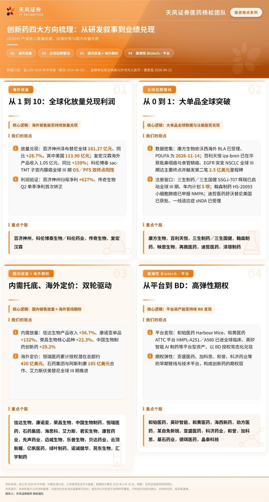
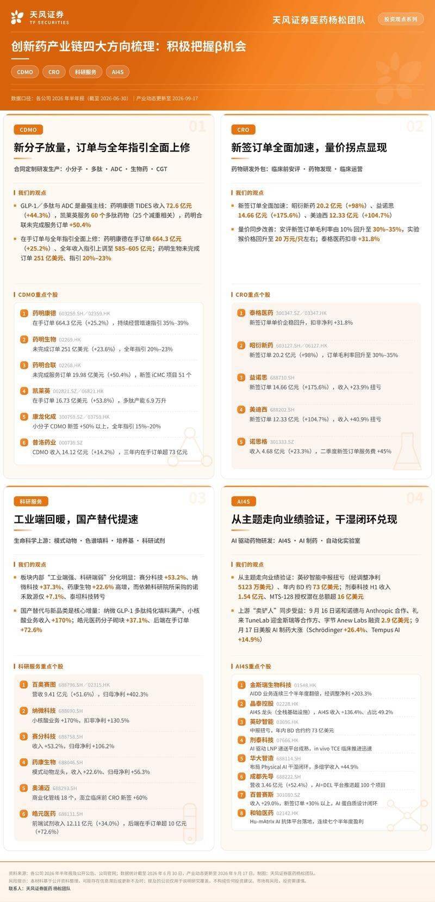
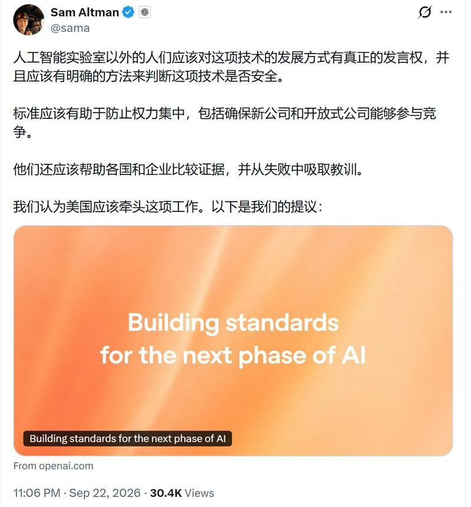
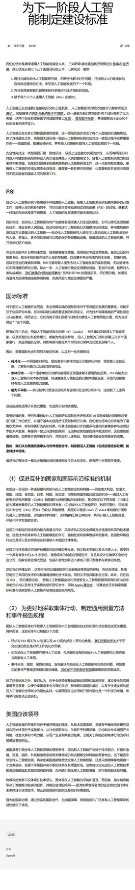
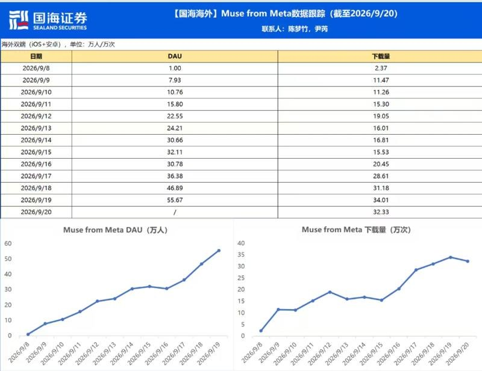
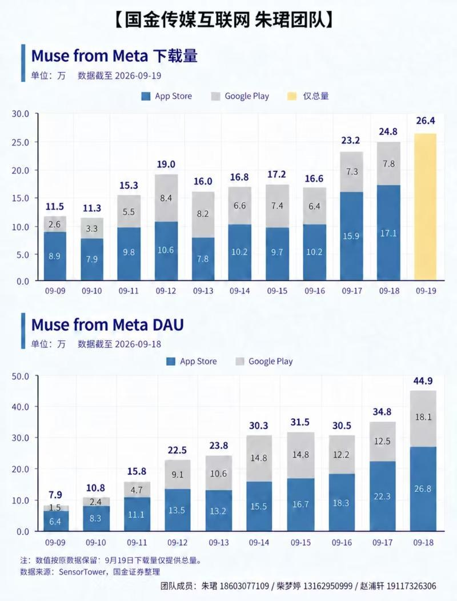

调研纪要 · 2026-09-23 新闻日报
星球 ID: 28855458518111 | 共 284 条帖子 | 精华 78 条
| 查看研究积累
强制同步到研究积累
全部 电子 计算机 机械设备 其他 基础化工 非银金融 电力设备 医药生物 汽车 商贸零售 轻工制造 家用电器 公用事业 建筑装饰 房地产 交通运输 石油石化 通信 宏观策略 环保 传媒 国防军工 建筑材料 钢铁 农林牧渔 有色金属 纺织服饰 社会服务
书签
【国盛有色】光智科技：低成本锁定集团铟磷资源，全产业链一体化布局推进中
【国盛有色】光智科技：低成本锁定集团铟磷资源，全产业链一体化布局推进中
[玫瑰]#公司已经实现6英寸磷化铟衬底向海外龙头供货。先锐科技完成2英寸→4英寸→6英寸三代晶体迭代，主要设备为公司自研，产品良率已处于国内领先水平，并进入国际先进行列，为国内首批推出6英寸磷化铟衬底的厂家之一，目前，已向源杰科技、三安光电、Coherent等客户大批量出货。公司判断断6英寸磷化铟衬底市场有望迎来爆发式增长。
[玫瑰]原料端，#公司以成本价锁定集团的电子级红磷及铟资源，1）铟资源，集团拥有铟金属库存3600多吨，且持续通过回收新增储备；#公司25年底以25年价格锁定三年铟百吨采购长协，锁定价较目前低105%。2）磷资源：高纯红磷全球供应紧张，集团是国内唯一能做出6N5以上纯度的高纯红磷企业。集团2021-2022年启动自研红磷项目，2023年完成验证导入，目前拥有53吨/年红磷产能，2027年进一步扩产，扩产进度与磷化铟扩产节奏匹配。26年光智科技已与集团签订低价长协，#27年采取“自采黄磷/三氯化磷+委托集团加工”模式，红磷成本仅为市场价约五分之一（当前市场价为5000元/公斤以上）。#铟和磷原料采购成本较低，对比同行，公司磷化铟利润明显增厚，优势显著。我们判断后续集团还会持续低价保供原材料，#变相相当于电子级红磷及铟资源已经注入上市公司！！！
[玫瑰]磷化铟产能规划：现有单晶炉约500台，2026年底规划产能为月产3万片（四寸等效口径），2026年8月出货量已接近1万片，规划2028年六寸片量产规模达到100万片，#按照目前市场价测算利润可达100亿元！！ 未来长期规划目标是全球市占率50%。
[庆祝]投资建议：光智科技公司布局锗+铟，是两大AI算力金属领域的重要龙头，掌握全球稀缺的6英寸Inp衬底技术，我们预计公司2026-2028年归母净利润分别为2/21/50亿元，对应PE估值分别为149X/17X/7X。
[庆祝]联系人：国盛有色张航/初金娜 欢迎交流！！
【天风新材料-π 点多支持】天岳先进：全球碳化硅衬底龙头，业绩拐点已至
【天风新材料-π 点多支持】天岳先进：全球碳化硅衬底龙头，业绩拐点已至
#业绩拐点已现
-盈利能力逐季提升，2026Q1的19%、Q2再提6个点，持续降本增效；上半年1.2亿汇兑损失（港股募的21亿港币敞口）加回后，Q2净利率已站上10%；
-目前价格6寸约1600-1800元/片、8寸约5000元/片，价格企稳，下游器件厂已率先涨价，有一定提价预期；我们估算8寸出货占比提升约50%，结构性抬毛利。
#格局清晰、全球龙一
-公司全球市占率约30%，份额还在持续扩张；
- 自研长晶炉+独有工艺，降低成本、提升良率；
- 全行业"见订单扩产"，衬底扩产幅度远小于下游器件扩产幅度，2026-2027年产能紧平衡。
#需求：三波浪潮接力
- 车载：2026H2明确向上拐点。2024Q4价格下探后中低价位车型启动导入，按18-24个月验证周期，26Q3起放量供货；渗透率19%，提升空间广阔；
-数据中心：上半年非主电源（制冷、旁路电源、继电器）已批量上量，26Q3起Rubin平台带动主电源放量，2027年有望贡献显著增量；
- 远期：12寸已批量送样VR眼镜和先进封装，有望2028-2029年释放。
#以销定产、新增产能陆续释放
- 2025年近70万片，产销率90%，我们预计2026年增量不低于30万片；
- 临港规划100万片，济南二厂估算体量达临港2倍，马来西亚厂主攻海外；资本开支高峰已过，扩产不拖累盈利；
-以销定产，下游客户长单锁量。
☎️详情请联系：鲍荣富/王丹/于那/周丹丹/上官京杰/林晓龙/曾子峻
佛塑科技调研更新0923：产能扩张路径清晰，5μm超薄隔膜先发优势突出
佛塑科技调研更新0923：产能扩张路径清晰，5μm超薄隔膜先发优势突出
1、#产能层面：71亿平在产、69亿平在建、80亿平规划。公司目标市占率向30%推进，新产线指向规模化降本。公司在建69亿平预计2027年10月全部建成（2026年装8条线，另有10条线于2027年陆续投产，分布于湖北2条、合肥4条、天津4条、河北8条），需提示的是，设备尚未完全国产化、订单周期偏长——新建工厂若无土地储备需3–5年，设备制造12–14个月、德国设备含运输14–16个月，安装3–6个月，投产整体约需2年——供给释放存在刚性时滞，构成价格与格局的天然缓冲。需求高增与长验证周期共同支撑格局稳定，公司对本轮扩产较上轮周期更为谨慎。
2、#盈利方面：供需紧平衡推升高盈利、新线降本效果显著。年初以来产品已经涨过2次价格，近几个月表现相对平稳。更要重视成本端的变化，公司新产线以≤5μm设计（老产线按9μm设计），性能提升、#成本降低10–20%；单平米投资额由老产线3–4元降至现有6m线1.4元、新线进一步降至约0.8元。成本结构上能耗、物料、折旧及人工各约占30%，新线能耗虽增约30%，但单线产出提升1.5倍左右，叠加武安基地绿电价较常规低1毛5至1毛8（对应15–20%的电价优势）。
3、#5μm方面：先发卡位、供不应求、2027年规模化放量。公司5μm及以下湿法隔膜市占率约60%，月出货4–5亿平。目前约60%供应宁德（受限于产能，仅6m以上新线可生产）；2027年产能仍将偏紧，2028年随设备放量陆续释放但不会严重过剩，判断27年5μm隔膜价格不会下降。此外，原料端采用150万分子量材料，强度和耐压性能具备显著优势。
4、#特种隔膜和绿电产能：绿电与碳足迹前置布局、高端隔膜打开空间。公司新建产能具备必要性，欧盟碳壁垒成出海硬门槛，政策鼓励绿电直连；两基地具备绿电资源条件（韶关依托生物质发电、武安依托风光），目标打造低碳绿色标杆工厂。此外特种隔膜已实现小批量供货；点涂工艺于2022年与设备厂商及日本企业签署5年独供协议、结合设备同步开发；涂布产能配置由原80%调整至60–65%（配合大客户订单节奏），未来规划稳定在65%左右。
龙净新项目公告最重要的是电价定价逻辑，＃节约电费成本对半分！商业模式的清晰度大大增加！！！盈利能力0.75/度比国内的度电0.3大大增加。
龙净新项目公告最重要的是电价定价逻辑，＃节约电费成本对半分！商业模式的清晰度大大增加！！！盈利能力0.75/度比国内的度电0.3大大增加。
三个项目总结：
＃规模 ：170mw+45mw+15mw，总规模230mw。
＃投资 ：合计2.32亿美金，单瓦投资6.8元，虽然比麻米错的5.56高一点也合理。海外项目+单体规模小嘛。
＃电价 最最重要的重点来啦：
除苏里南170mw电价为0.12美金，圭亚那缺电区域：
结算电价（不含税）=50%×（当年平均柴油发电成本+光储LCOE）。
＃此公式重大意义在于：将电价定为矿山现有柴油发电用电成本与龙净发电成本之均值：即将龙净微电网方案节约的电费收益对半分！商业模式清晰，电价更高！体现了龙净方案的优越性！
📖测算结论：
众所周知，圭亚那区域的柴油价格高，柴油发电成本折算后电价约1.35元/度。圭亚那预计盈利0.62亿。roe37%
苏里南预计盈利1亿，roe33%
总增厚1.62亿，弹性11.5%。（详细数据请联系）
【国金电新】振华股份再推荐：银河铬盐生产面临环保审查压力，供给端约束强化，Q4旺季价格弹性可期
【国金电新】振华股份再推荐：银河铬盐生产面临环保审查压力，供给端约束强化，Q4旺季价格弹性可期
[太阳]供给端发生变化：9月7日四川省生态环境厅联合市场监管局启动9-11月排污单位自行监测数据造假专项整治，有污水排放的车间均面临停产审查压力。 银河化学（国内第二大铬盐厂商，铬盐年产量约10万吨，国内市占率25%以上）因环保审查，相关车间受到影响。银河此前规划的内蒙古20万吨铬盐项目同步被叫停，未来2年国内新增产能仅剩振华重庆基地10万吨重铬酸钠（27年底投产），供给格局收紧。
#振华发布涨价函，定价权强化。9月23日公司发布调价函——重铬酸钠+1000元/吨、铬酸酐+2000元/吨、氧化铬绿+3000元/吨、金属铬+4000元/吨，覆盖全产业链产品。此前5月7日公司已对金属铬上调4000元/吨、重铬酸钠上调500元/吨，本次调价在基础铬盐端幅度显著扩大。
#Q4旺季叠加收储与SOFC需求，价格弹性可期。公司6月确认首批SOFC金属铬订单，7月底完成交付，8月示范单持续落地，预计年底至明年初需求数倍增长。当Q4新一轮收储落地，供需偏紧将进一步驱动价格中枢上移。
联系人：姚遥/唐雪琪
🔗最新深度：
【国金电新】振华股份：铬盐全球龙头，卡位SOFC上游核心资源环节，景气大周期开启 ↗
🔥 聚灿光电(300708)：光芯片黑马，低位CPO爆发在即！ ＃未知来源
🔥 聚灿光电(300708)：光芯片黑马，低位CPO爆发在即！ ＃未知来源
❣️市场还当它是“卖LED的”，它已凭借16年化合物半导体功底，将芯片送进AI数据中心。从照明到车载、光互连，被低估的平台型公司正在三大赛道起飞。
💡 CPO光芯片卡位AI“光心脏”：面对带宽与功耗瓶颈，聚灿CPO阵列芯片已送样海外大客户，原型机流片成功，并与中科院共建实验室。具备“外延到量产”全栈能力。
📊 中报创历史新高：2026上半年营收7.85亿(+19.28%)，Q2破4.25亿创新高。红黄光收入暴增1764.96%；Mini LED收入增115.35%；银镜倒装增101.69%且功耗大降，打入全球车规链。洲明科技签下5000万保底采购。
🛡️ 全色系+车规护城河：车规芯片一旦进链很难替换。聚灿红光车灯芯片已过AEC-Q102并获国际订单；银镜技改项目年产值超5亿。短期看Mini/银镜放利润，中期看车灯/AR放量，长期看CPO重估估值。
🎯 买入逻辑：机构目标价较前期有很大空间，中信、浙商、兴业等均给买入/增持评级。当前市场仅按“LED周期股”定价，未计入“化合物半导体平台+AI光互连期权”。回调即是上车机会，公司CPO已上线，客户订单加码，量产节奏加快、业绩预期高增，估值正在修正；超强预期差！
磐脉920验证I/O互连核心地位，PCIe交换与高速互连芯片国产化加速
磐脉920验证I/O互连核心地位，PCIe交换与高速互连芯片国产化加速
🔥观点：
✔阿里云栖大会展示网卡磐脉920，为国内首个内置PCIe Switch的400G智能网卡，采用PCIe 5.0与112G PAM4技术，最大吞吐带宽400Gbps，实现网卡与GPU、SSD的极低时延直连，系统整体成本降低约30%。
✔头部CSP将PCIe交换能力提升至芯片级架构高度，I/O互连成为AI基础设施确定性最强的环节。据产业链调研信息，磐脉920内置PCIe Switch采用外采方案，自研能力储备深厚的平头哥亦选择外购而非自研，充分印证PCIe交换芯片的技术壁垒与生态验证周期，具备量产能力的国产供应商稀缺性进一步凸显。
[烟花] 强受益赛道1——PCIe Switch
1）格局：全球中高端PCIe交换芯片市场由博通主导，份额超90%，近年价格持续上涨且交付周期超50周
2）空间：2026年国内PCIe 需求数量约300万颗
3）架构：超节点Scale-up方案下，PCIe Switch承担CPU与GPU、GPU与GPU之间的枢纽连接，通过自组网（Fabric Link）实现GPU间高效直传，已成为超节点架构的基础部件，价值量随集群规模扩张持续提升。
[烟花] 强受益赛道2——高速互连配套芯片
磐脉920采用PCIe 5.0与112G PAM4 SerDes，高速信号完整性要求大幅提升，Retimer等信号调理芯片用量随之增长；AI工作负载向推理端迁移带动服务器CPU配置比例提升，内存带宽瓶颈凸显，MRDIMM加速渗透。当前Marvell Structera X已与NVIDIA Vera CPU完成CXL互操作，MRDIMM配套接口芯片MRCD/MDB迎来加速导入窗口。
[發] 核心受益标的
✔ 万通发展：子公司数渡科技PCIe 5.0 144lane交换芯片三季度实现量产，Q3或实现放量；股权激励绑定2026-28年数渡科技营收不低于6/12/16亿元的目标，毛利率超70%。
✔ 澜起科技：MRCD/MDB全球领先，第二子代产品（12800MT/s）规模试用、出货量显著提升，第三子代已完成工程样片流片，随MRDIMM自2027年起进入渗透爬坡打开全新增长曲线；PCIe 6.x Retimer完成量产版本流片并列入PCI-SIG供应商名录；PCIe交换芯片计划2026下半年完成工程样片流片，与Retimer形成产品协同。
＃海光信息：发布1000系列芯片、打开端侧算力市场空间
＃海光信息：发布1000系列芯片、打开端侧算力市场空间
🔥＃释放端侧算力、驱动物理世界
✔1000系列CPU是海光首款面向工业控制等物理世界场景的芯片，针对嵌入式工控设备机器视觉、视频分析、边缘推理等负载对底层芯片计算、连接、安全及稳定运行能力方面的需求，重点强化安全、高效、兼容与可靠四方面能力，围绕真实工业场景进行系统设计。
✔海光1000集成iGPU，支持4K60双路显示、主流视频编解码及多种图形接口，典型TDP低至10W；#支持PCIe 4.0、TSN等高速、实时互联能力、兼容DDR4/DDR5、具有成熟的C86技术和软件生态、宽温能力在-40°C~105°C。
🔥＃完善云边端产品布局、将进一步打开公司增长空间
✔算力正在从云端慢慢向边缘、端侧下沉，逐步从数据中心走向真实的物理世界。海光1000系列进一步完善了海光面向云、边、端的产品布局，为工业智能化提供新的底层计算选择。
✔中国CPU当前市场空间约2500亿元+，以服务器+PC为主。＃预计端侧/机器人/物理计算场景将进一步打开CPU市场空间。
🔥盈利预测：深算三B已量产，＃深算四即将回片、Hyswitch2.0互联技术+192卡超节点。2027发布256核AGI CPU，开放HSL互联。我们预计2026/2027营收分为240/650亿元，对应净利润60/230亿元，维持“买入”评级。
风险提示：中美博弈加剧、新品研发不及预期等。
[红包]【国投证券化工&新材料】TDI/MDI更新：巴斯夫上海装置事故扰动，或致TDI停产MDI物流受阻260923
[红包]【国投证券化工&新材料】TDI/MDI更新：巴斯夫上海装置事故扰动，或致TDI停产MDI物流受阻260923
#巴斯夫上海TDI/MDI或受事故影响、供给收缩有望催化价格上行
巴斯夫上海漕泾基地因生产装置事故停工，TDI装置或受影响停产，目前具体影响仍在评估中。该基地TDI产能16万吨/年，占国内TDI总产能约8%，停产带来的短期供给收缩有望带动TDI价格上行；MDI装置未受事故影响，但其物流运输短期停运，区域供应或阶段性偏紧。万华化学具备TDI/MDI产能127万吨（权益）/450万吨（含福建技改，总产能口径），为全球最大TDI、MDI供应商，有望充分受益于供给收紧带来的价格弹性。据我们测算，若本轮TDI价格上涨1000-2000元/吨，对应万华化学年化利润增厚9-18亿元。
#TDI/MDI供需紧平衡延续、盈利中枢长期上移
供给端，海外部分聚氨酯装置受地缘政治、原料供应等因素制约，产能受限、退出加速，全球供给总体偏紧。需求端，新能源、冷链等领域需求形成支撑，出口为重要拉动，供需格局持续改善。据我们测算，2026-2028年全球TDI供需缺口分别为16/26/16万吨、MDI供需缺口分别为22/22/61万吨，紧平衡格局有望支撑盈利中枢上移。截至9月22日，2026年1-9月TDI、MDI价差均值分别为1.10、1.22万元/吨，较2025年全年分别提升26%、4%；9月月度价差均值分别为1.03、1.15万元/吨，较年内高点分别仍有4184、4478元/吨的回升空间。
建议关注：#万华化学、#沧州大化 等。
🔗观点报告链接：
聚氨酯深度：东升西落格局优化，供需紧平衡驱动盈利修复 ↗
风险提示：装置复产进度超预期、下游需求不及预期、原材料价格大幅波动、安全生产风险
☎欢迎联系国投证券化工&新材料王华炳、周京鸿及对口销售
📑高盛香港市场综述 GS HK MARKET WRAP
📑高盛香港市场综述 GS HK MARKET WRAP
恒生指数 -1.0%｜恒生国企指数 -1.1%｜恒生科技指数 -1.3%｜成交额 1843 亿港元
📊领涨板块：电子元件 +3.8%、消费者服务 +2.2%、航空公司 +1.6%、中国房地产 +1.2%、啤酒商 +1.2%
📉领跌板块：系统软件 -5.6%、综合零售 -4.1%、电子设备 -2.6%、网络游戏 -2.3%、IT 服务 -2.2%
📌恒生指数下跌 1.0%，回吐昨日涨幅，并在明日特朗普与X会晤前未能突破 25000 点这一关键水平；与此同时，受人工智能、互联网及硬件板块再度承压影响，恒生科技指数下跌 1.3%，表现落后。值得注意的是，在 5 月 12 日至 15 日上一次特朗普与X会晤前后，恒生指数和恒生科技指数分别下跌 1.5% 和 2.5%。
🏮浓厚的节日氛围 —— 日本仍处于假期，韩国开盘强劲后有所回落，并将从明日起休市；中国和台湾也将从周五休市。
🏠中国房地产板块上涨 1.2%：1）据报道，中国可能在下周三前宣布全国性房贷利息补贴政策。2）据报道，监管机构要求银行不要将万科逾期贷款计入不良贷款，并延长还款期限。高盛高频周度数据显示，受季节性因素影响，一手房 / 二手房成交量环比分别改善 19%/28%。
📉阿里巴巴下跌 4.4%，在昨日上涨后成为指数最大拖累项。关注历史是否会重演：去年阿里云大会首日，阿里巴巴同样上涨 9%，随后两个交易日回落 4.5%。另外，高盛表示，今年的阿里云大会进一步巩固了阿里巴巴的全栈 AI 定位，涵盖其 2032 年前达到 20GW 的数据中心目标、平头哥芯片、通义千问模型以及智能体应用。预计云业务收入同比增速将在 2026 年 9 月、2026 年 12 月和 2027 年 3 月分别达到 53%/55%/55%；同时，MaaS 年度经常性收入已达到人民币 200 亿元，并有望按计划在 2026 年底达到人民币 300 亿元。
📉腾讯下跌 2.3%，回吐了昨日由 Meta Muse 带动的部分涨幅。公司推出混元图像 3.5 预览版，每张图片定价 0.15 元。美团下跌 0.5%，在宣布投资 300 亿元发展即时零售及 30 分钟商品圈后，股价基本持平。
📉系统软件板块下跌 5.6%，受有关报道称网信监管机构正调查深度求索与月之暗面 AI 涉嫌向 Claude 转移敏感数据的消息拖累。
⚡电动车板块上涨 0.2%，表现分化。理想汽车上涨 2.5%，蔚来上涨 1.8%，表现坚挺；比亚迪下跌 1.2%，表现落后。高盛高频数据显示，在小米发布带动的销售脉冲后，新能源汽车周订单环比下降 22%、同比下降 46%；不过，受新车型推动，理想汽车、小鹏汽车和零跑汽车订单分别环比增长 123%、50% 和 15%。
📉小米下跌 3.8%，市场等待今晚 19:00 举行的秋季新品发布会。
🔋宁德时代上涨 0.9%；高盛对储能系统开放日的要点仍持建设性看法，预计全球储能系统需求到 2027 年将增长 40% 至 50%，钠离子电池将开始应用于长时储能。
✈️航空股上涨 1.6%，因油价连续第六个交易日下跌，并降至 100 美元以下。高盛认为，中东供应升级，而非中国原油进口复苏，是油价上涨的主要上行风险。
📑GS 韩国收盘稿 ——KOSPI 小幅收高 GS KOREA FINAL - KOSPI ENDS MARGINALLY HIGHER
📑GS 韩国收盘稿 ——KOSPI 小幅收高 GS KOREA FINAL - KOSPI ENDS MARGINALLY HIGHER
📊KOSPI：上涨 0.90%，报 7080.9 点；成交额 153 亿美元；外资净卖出 3.75 亿美元；本地投资者净买入 2.33 亿美元；散户净卖出 10.59 亿美元。
📊KOSDAQ：上涨 1.21%，报 844.5 点；成交额 56 亿美元；外资净卖出 3400 万美元；本地投资者净买入 500 万美元；散户净买入 2400 万美元。
📈市场回顾
📌受隔夜 SOX 指数突破上涨 2.1% 提振，KOSPI 开盘跳空走高，但再次从早盘高点回落，最终收涨 90 个基点。
📌KOSPI 市场中，外资以小幅净卖出收盘，主要受 SK 海力士 8.82 亿美元卖盘拖累；散户投资者录得净卖出，主要集中卖出 SEC，金额为 16 亿美元。
📌与此同时，其他企业投资者净买入 12 亿美元，与本地机构投资者联手净买入，抵消了部分外资和散户资金流出。
📌SEC (005930) 上涨 3.3%，继续跑赢 SK 海力士 (000660) 的 1.2%，因其股息登记日临近。
📌核电相关股票如斗山能源 (034020) 下跌 5.5%，则回吐了前一交易日的部分涨幅。
📌太阳能板块受本地券商报告推动而表现优异。
📌KOSPI 成交额较 20 日平均值低 0.3%。
📌韩元贬值 23 个基点，至 1359.8 韩元兑 1 美元。
📌请注意，韩国未来两天休市，将于周一（9 月 28 日）重新开市。祝中秋节快乐！
📰主要标题
🧩半导体板块（上涨）
📌SEC (005930) 上涨 3.3%，SK 海力士 (000660) 上涨 1.2%，跟随 SOX 指数突破上涨 2.1%。
📌SEC 尾盘表现坚挺，收于接近盘中高位，并重新站上 100 日均线。
📌相比之下，SK 海力士早盘一度上涨 3.3%，但随着机构买盘减弱，回吐了部分涨幅。
📌外资再次净买入 SEC（+9.41 亿美元），连续 3 天保持净买入；同时净卖出 SK 海力士（-8.82 亿美元）。
📌本地机构投资者对两者均为净买入，SEC 为 + 2.79 亿美元，SK 海力士为 + 1.68 亿美元；而散户获利了结，SEC 为 - 16 亿美元，SK 海力士为 - 1.22 亿美元。
📌其他法人继续为两只股票提供资金流入支持，受回购推动，分别向 SEC 和 SK 海力士增持 3.64 亿美元和 8.37 亿美元。
⚛️核电板块（下跌）
📌斗山能源 (034020) 下跌 5.5%，HD E&C (000720) 下跌 7.8%，DL E&C (375500) 下跌 5.0%，韩国电力公司 (015760) 下跌 1.9%。
📌在连续数日表现优异后，获利回吐资金流似乎成为相关股票下跌的主要原因，同时市场对韩国可能持有西屋电气股权的前景仍存在不确定性。
📌有报道称，韩国与美国已就一项拟议中的 8 台机组核电项目的规模及反应堆类型组合达成一致，该项目将作为首尔第二项对美投资计划推进；但双方在韩国收购西屋电气股权的规模问题上仍存在分歧。
📌在斗山能源方面，散户投资者继续是唯一的净买方，而外国投资者与韩国本地机构投资者连续第 4 天合计净卖出。
☀️太阳能板块（上涨）
📌韩华解决方案 (009830) 上涨 6.4%，OCI 控股 (010060) 上涨 9.6%，HD ES (322000) 上涨 2.8%。
📌一位本地券商分析师指出了该行业的利好因素，并认为太阳能已成为美国国家战略资产的关键组成部分。
📌太阳能被视为解决 AI / 半导体电力瓶颈的必要手段，预计 2026 年美国新增公用事业级电力装机规划中，太阳能将占 51%。
📌该券商认为，美国《
232 条款 ↗ 》将通过设定严格的最低进口价格和 15% 的关税来保护国内太阳能供应链，并计划于 2026 年 12 月 4 日实施，这也是近期的关键催化剂，将利好韩国太阳能供应商。
📑WHAT DROVE MARKETS? 市场驱动因素是什么？
📑WHAT DROVE MARKETS? 市场驱动因素是什么？
📌亚洲股市收盘表现不一，台湾、韩国和日本市场的强势被大中华区及香港市场的疲软所抵消。
📌科技股仍是区域关键驱动力，受益于台湾和韩国的半导体类股，但在中国大型语言模型开发商面临监管审查的报道传出后，中国科技股承压。
📌印尼在印尼央行货币政策决议前表现优于大盘，印度则因风险偏好改善和波动性缓解而上涨。
📌在特朗普 - 峰会前夕，投资者整体保持谨慎，同时假期效应拖累了中国及部分北亚市场的成交量，这些市场即将进入延长的休市期。
📑REGIONAL WRAPS 区域综述
🇦🇺澳大利亚：ASX 200 +0.09%
📌澳股 200 指数上涨 0.09%。交易基本持平于 8758 点附近，矿业股的涨幅抵消了银行股的疲软。
📌必和必拓（BHP）领涨矿业板块，而联邦银行（CBA）、澳新银行（ANZ）和西太平洋银行（Westpac）表现落后，因市场担忧 Meta 的人工智能代理 Muse 可能挑战依赖消费者惯性的商业模式。
📌金融股下跌约 1.2%，令该板块有望录得两周来最大单日跌幅。
📌Tuas 股价最多下跌 17%，因其全年息税折旧摊销前利润（EBITDA）未达花旗预期，且第四季度用户增长大幅放缓。
📌房地产投资信托基金（REITs）仍承压，摩根士丹利指出，利率对冲覆盖率将从 2027 财年的 75% 降至 2028 财年的 51%，同时市场预期澳洲联储现金利率将在本月晚些时候升至 4.6%。
******** 台湾：TAIEX +0.75%
📌台股指数上涨 0.75%。台湾股市继续刷新历史新高，最终收盘站上 48000 点关口。
📌涨幅主要由台积电（2330）上涨 1.6% 和欣兴电子（3037）上涨 3.6% 推动，其中台积电重新收复 2500 点水平。
📌在部分获利了结压力下，动能板块稍作休整，但在长周末前夕，整体市场情绪仍保持积极。
📌非科技板块表现分化，持续落后于科技类股的整体强势。
📌柜台交易活跃度高，买入意愿显著增强，而市场成交额放缓，较前一日下降 25%。
🇰🇷韩国：KOSPI +0.90%
📌KOSPI 指数上涨 0.90%。受费城半导体指数（SOX）隔夜大涨 2.1% 提振，韩国股市开盘大幅高开，但随后再次从早盘高点回落，最终收涨。
📌外国投资者总体呈小幅净卖出，主要受 SK 海力士（000660）抛售拖累；散户投资者也呈净卖出，主要集中在三星电子（005930）。
📌其他公司和本地机构则为净买入，抵消了大部分资金流出。
📌三星电子（005930）上涨 3.3%，在其股息登记日前继续跑赢上涨 1.2% 的 SK 海力士（000660）。
📌包括斗山能源（034020）在内的核能相关个股回吐了前一交易日的部分涨幅，而在一份积极的本地券商报告推动下，太阳能股票表现优异。
📌KOSPI 成交额较其 20 日均值低 0.3%。韩元兑美元贬值 0.23%，收于 1359.8。
📌韩国即将进入中秋假期，将于 9 月 28 日重新开市。
🇯🇵日本：休市
🇨🇳中国：SHSZ300 -0.60%
📌沪深 300 指数下跌 0.60%。主要 A 股指数收低，受假期谨慎情绪升温影响，成交额环比缩减 17%，降至 1.78 万亿元人民币。
📌板块表现方面，化工、电子设备和医疗保健领涨，而媒体、零售和煤炭表现落后。
📌TMT 板块走势分化，硬件股表现优于 AI 模型和应用类股票；此前一交易日在 Meta-Muse 推动下大涨后，有关 DeepSeek 和 Moonshot 的报道令其承压。
📌存储相关个股上涨，佰维存储（688525）宣布向先进封装项目三期投资 45 亿元人民币后股价上涨 2.5%，而 HBM 主题则上涨 2.4%。
📌化工板块受益于原油价格下跌。房地产股延续近期强势，万科上涨 2.9%。
📌CRO 和生物科技继续引领市场走高，成为行业轮动资金的关键流向。
📌资金流方面，交易台小幅净卖出，买入半导体设备，同时卖出 AIDC 电源和 CCL 相关个股。
🇭🇰香港：HSI -1.01%
📌恒生指数下跌 1.01%。港股收跌，该指数创下自 9 月 10 日以来最大单日跌幅。
📌市场主导主题是中资科技股大幅回调，其中阿里巴巴（9988）成为拖累基准指数的最大因素；此前有报道称政府正在调查包括深度求索（DeepSeek）在内的大语言模型开发商的数据安全实践，此举打压了市场情绪。
📌这一走势基本回吐了前一交易日由人工智能驱动的涨幅。
📌市场个股普跌，在 95 只恒生指数成分股中有 60 只下跌；工业类股普遍领跌，地产股呈明显的板块分化。
📌中国地产股（2202）上涨约 15%，此前有报道称监管机构已要求部分银行延长还款期限，并避免将逾期贷款计入不良贷款。
📌南向投资者保持支持，通过沪深港通净买入 34.5 亿港元的港股，连续第 13 个交易日实现净流入。
📌投资者在特朗普与习峰会以及香港监管机构即将发布的有关人民币使用和跨境市场互联互通措施之前，也保持谨慎态度。
🇮🇩东盟：JCI +1.49%
📌雅加达综合指数上涨 1.49%。在印尼央行作出政策决议前，印尼股市表现优于区域同行。
📌市场普遍预期利率维持在 5.75% 不变。印尼能源是领涨标的，上涨 11%。
📌投资者持续密切关注接近 1 美元兑 18000 印尼盾的汇率压力，而疲软的棕榈油价格则给种植园相关股票带来阻力。
📌与此同时，泰国 SET 指数上涨 0.23%。泰国股市基本持平，波动局限于狭窄区间。
📌亚洲开发银行将其 2026 年 GDP 增长预测上调至 2.0%，同时下调通胀预期。
📌在特朗普与习峰会前夕，市场情绪保持谨慎。
🇮🇳印度：NIFTY +0.41%
📌NIFTY 指数上涨 0.41%。该指数今日稳步上扬，重新站上 23400 点关口，有望创下约两周以来的最高收盘水平，并在过去六个交易日中第五次收涨。
📌在风险偏好升温推动，该指数表现优于更广泛的 MSCI 亚太指数。印度 VIX 指数大幅下降 5% 至 10.35，表明市场对短期风险的担忧缓解。
📌板块方面，金属板块在钢铁和铝业股的带动下领涨；其次是利率敏感型的全球银行和房地产板块。
📌小盘股（+0.8%）和中盘股（+0.5%）表现优于基准指数，表明市场参与广泛，而非仅限于大盘股的反弹。
924中美元首会谈前瞻：经贸兑现、伊朗交换、AI护栏
924中美元首会谈前瞻：经贸兑现、伊朗交换、AI护栏
9月24日，中美元首将在华盛顿会谈。相比5月“定框架”，本次重点转向成果落实：经贸看降税采购，安全看伊朗降级，AI看风险沟通。
一、经贸：最容易出成果
休战：11月10日到期，美方接受3-6个月，中方希望更长
降税：各自300亿美元，中方视为采购回报，美方希望换新增采购
采购：大豆、波音已有进展，核心看订单落地
稀土：美国短期依赖中国供货，长期加快替代供应链
关键点：真正增量看降税清单＋采购订单。
二、伊朗：本次会谈的重要安全增量
潜在交换框架：
美方降低军事与封锁压力 ↔ 伊朗恢复霍尔木兹海峡通航
中方主要发挥协调作用，推动美伊回到已有谈判框架，核心看能否实现阶段性降级＋恢复通航。
三、AI：竞争继续，先建立“护栏”
· 中美推动正式AI对话和事件联络渠道
· 重点处理跨境攻击、失控智能体、第三方恶意使用
· 芯片及半导体设备出口管制暂未进入AI讨论
· AI合作聚焦风险管理，不代表科技竞争降温
四、会谈五大观察点
1. 300亿美元降税能否落到具体清单
2. 大豆、波音采购能否形成实际订单
3. 伊朗通航能否对应美方军事与封锁压力缓和
4. AI事件联络机制能否正式建立
5. 对台军售节奏及两军沟通是否变化
持续看好燃机成撬环节弹性标的长源东谷、涛涛车业
持续看好燃机成撬环节弹性标的长源东谷、涛涛车业
⭕长源东谷：重大资产注入落地，我们预计康豪26/27年有望实现4+/6亿利润，加上主业明年公司整体有望实现12亿利润。中报披露的1.65亿美元订单仅是冰山一角。明年500MW+的燃机和300MW内燃机成套交付有望带来15亿以上利润，成倍利润市值弹性。当前即便考虑发股摊薄公司明年仅12xPE。
⭕涛涛车业：公司球车北美产能已完成转产，后续提价和新品有望持续扩大北美市场份额，主业高速增长当前市值主业仍未充分交易。公司有望依托北美本地资源和制造能力快速切入燃机成撬，27年有望实现200-300MW交付，近期进展顺利催化将至。
上半年，PCB核心物料CCL（BOM占比30%~40%）业绩高增，如：生益科技+130%，南亚新材+429%，金安国纪+987%，建滔积层板+209%。成本的增...
上半年，PCB核心物料CCL（BOM占比30%~40%）业绩高增，如：生益科技+130%，南亚新材+429%，金安国纪+987%，建滔积层板+209%。成本的增长对PCB企业的业绩带来影响，中报涨跌不一：深南电路+66%，兴森科技+283%，景旺电子-7.4%。
下半年，PCB环节的顺价将对业绩带来弹性。务必重视此逻辑，PCB环节公司有【深南、兴森、沪电、生益、胜宏、鹏鼎、景旺】等，以及【中富电路、金禄电子、威尔高、满坤科技、四会富仕、澳弘电子】等，从近期走势看，二线PCB公司股价表现较强。
PCB专家聊PTFE总结：
PCB专家聊PTFE总结：
PTFE 材料方案的三代演进
第一代： PTFE + 玻纤布（有布方案）
第二代： 纯 PTFE 无布方案
第三代（当前）： 无布回压技术，将 PTFE 与覆铜板结合，且仍在持续优化中（如从 M8 升级到 M9）
不同层数应用区分：22~46 层用有布方案，B2~84 层用纯无布方案。部分PTFE目前看会和Q布搭配使用。各种技术方案在板子里同时存在。
从产品成本构成看，与传统的结构看，PTFE中材料成本变化比较大的有硅微粉等。
【西部计算机】#开关矩阵，将昂贵的矢量网络分析仪VNA从单件手工工具变为自动化产线核心的关键枢纽。对于AI服务器和光模块测试，它直接决定了测试效率、成本和规模化...
【西部计算机】#开关矩阵，将昂贵的矢量网络分析仪VNA从单件手工工具变为自动化产线核心的关键枢纽。对于AI服务器和光模块测试，它直接决定了测试效率、成本和规模化能力。
VNA通常只有2个或4个端口，但AI服务器和光模块中的被测对象端口众多。一个16×16 MIMO阵列需要测量256组通道配对。开关矩阵的核心作用，就是在不更换VNA主机的前提下，将一个2/4端口VNA扩展为N端口系统。
效率提升是数量级的：以16×16全矩阵测试为例，传统人工换线模式需经历256次插拔，耗时数小时；而采用开关矩阵的自动化方案，一键执行，可在15分钟内完成。整体测试效率可提升5至20倍。
#开关矩阵使得一台国产标准2端口VNA配合开关矩阵可替代昂贵的国外大端口数专用VNA，显著降低硬件采购成本。
开关矩阵目前主要提供商是德科技、 Ducommun、JFW Industries等美国公司。
#霍来沃，目前是国内稀缺的具备提供成熟的开关矩阵的公司，已经在部分领域商用。
#电科思仪，也提供有自己的开关矩阵。
郑宏达 谢忱 李想 王朗
【弘则 FICC 张峻瑞】碳酸锂近期高波点评 2026/09/23
【弘则 FICC 张峻瑞】碳酸锂近期高波点评 2026/09/23
1. 盘面重新转为增仓下跌，短空资金主动性明显增强。今日主力大幅回落，持仓同步增加，早盘快速跌破13万元，资金结构重新表现为主动空头入场，而锂矿权益呈现同步回落，但跌幅依然弱于期货盘面，说明本轮下跌更多还是自身预期与资金交易主导。
2. 储能需求担忧再次成为情绪放大器，但暂未得到现实数据确认。今日市场再传头部储能企业暂缓电芯提货，目前仍没有企业公告或可靠公开信息验证，更适合作为需求悲观预期的催化。现实端并未同步转弱：9月储能电芯排产仍维持高位，近期海外长期供货协议继续落地；但部分机构也观察到8月下旬新增接单有所放缓，当前更合理的判断是远期需求市场预期依然弱势，但现实需求尚未出现系统性下滑。
3. 当前盘面着重交易储能需求下修和远期供应宽松，但现货、仓单及排产呈现反向即期状态，同时期货跌幅明显快于基本面变化。短期先关注12.5—13万元区域的承接强度，若储能传闻后续不能被实际砍单、排产下修验证，继续下杀后存在情绪修复机会；但真正转多仍需看到现货继续收紧、仓单持续收缩以及增仓上涨重新出现。现阶段以控制仓位、等待驱动确认优先，不追涨杀跌。
【染料更新】
【染料更新】
还原物报价跳涨至18万，分散染料继续涨价可期。活性已突破历史最高价5w，分散突破历史新高也不会远[呲牙]
继续重点推荐浙江龙盛、闰土股份。
【国投证券化工&新材料】牛磺酸10月将面临龙头检修0923
【国投证券化工&新材料】牛磺酸10月将面临龙头检修0923
#牛磺酸10月将面临龙头检修
9月23日，据百川盈孚，某牛磺酸龙头企业年产能5万吨装置，10月年度检修计划15-30天甚至更长。牛磺酸因原料成本大幅上涨和市场供需紧张以及订单暴涨因素，10月预期涨至40元/公斤以上，后期价格不排除继续创新高。
#牛磺酸下游需求正盛，供给格局已高度集中
需求侧看，2025年牛磺酸下游食品饮料和宠物食品占总需求75%左右。宠物经济消费高端化与个性化升温，叠加秘鲁宣布渔业与水产养殖进入国家紧急状态，牛磺酸是水产饲料中替代鱼粉的理想营养方案，短期替代逻辑或持续强化，牛磺酸下游需求有望持续旺盛。
供给侧看，牛磺酸呈典型寡头格局，主要生产企业集中度超90%，包括永安药业（7.8万吨）、圣元环保（4万吨在建）、新和成（3万吨）、远大生科（2.5万吨）等。展望后续，伴随我国环保政策不断收紧，未来我国牛磺酸寡头格局或不断强化，头部公司定价权有望持续突出。
#检修预期下供需趋紧，牛磺酸价格已连续上涨
近期牛磺酸主流厂家或按计划停产检修，部分品牌交货供应受限，或形成阶段性供需趋紧。据百川盈孚，8月以来牛磺酸连续调价，从22.5元/千克多次上调，现国内报价32.5元/千克，海外5美元/千克，价格上行趋势或已确立，重视牛磺酸后续检修期间价格弹性。建议关注：#永安药业 、#圣元环保、#新和成等。
报告链接：
观点0819：
成本支撑+检修预期，关注牛磺酸涨价弹性【行业快报|国投证券化工&新材料王华炳团队】 ↗
风险提示：宏观经济下行、原料价格大幅波动、下游需求不及预期、产能大幅扩张
欢迎联系国投证券化工&新材料王华炳、王友舜及对口销售
【山证医药|创新药动态更新】IL-23口服环肽：打破"口服难强效"僵局，引领自免口服新方向
【山证医药|创新药动态更新】IL-23口服环肽：打破"口服难强效"僵局，引领自免口服新方向
[太阳]IL-23是驱动银屑病、炎症性肠病等自免疾病的核心通路，但长期缺乏媲美生物制剂的靶向口服药。口服IL-23R环肽拮抗剂依托大环环化、脂质化修饰，打破"口服难强效"僵局：Icotrokinra（JNJ-2113）以皮摩尔级（Kd≈7.1pM）亲和力，实现口服便捷与抗体级疗效统一，并向UC、克罗恩病、银屑病关节炎拓展。国内翰森制药、海思科、三生国健快速跟进。翰森HS-20118 HS-20118的终末半衰期为6-7天、每周一次口服，I期银屑病25 mg QD剂量组具有达到相当高的IGA 0/1应答比例，为87.5%；翰森引入PEG+长链脂肪酸延长半衰期，海思科HSK-47388探索酰胺键环合/双环肽提升口服生物利用度；国健SSGJ-629处临床前，每周一次口服，体外及体内PK展现高活性。
[玫瑰]银屑病：强生Icotrokinra为全球首个获批的靶向IL-23R口服肽，用于中重度斑块状银屑病（成人及12岁以上青少年），2026年3月获FDA批准，8 月 27 日获中国批准上市。AAD 2026公布的52周数据：成人两项三期（含氘可来昔替尼对照）IGA 0/1、PASI 90均超70%，完全清除IGA 0/PASI 100达50%（半数皮损完全清除），青少年IGA 0/1达82%-91%；安全性较氘可来昔替尼头对头感染率与胃肠道AE更低、无累积毒性，并正向银屑病关节炎、UC、CD拓展。
[玫瑰]溃疡性结肠炎：Icotrokinra ANTHEM-UC 2b期（n=252）针对常规疗法、生物制剂或JAK抑制剂反应不足/不耐受的中重度活动性UC患者，每日一次口服三种剂量第12周均达临床反应主要终点，最高剂量组临床反应率63.5% vs 安慰剂27.0%（p<0.001）、临床缓解率30.2% vs 11.1%（p<0.001），第28周持续改善；不干扰IL-12通路、与抗体表位不冲突，具备联用潜力。
[太阳]风险提示：临床试验数据不及预期、研发及商业化不及预期、口服自免药物竞争加剧、授权交易及合并进展不及预期等风险。
#BE供应链出货量&预测更新：
#BE供应链出货量&预测更新：
1）三环集团26H1出货约0.45GW，26H2预计1.4GW，增长200%+。
2）京泉华26H1出货约0.79GW，26H2预计1.35GW，增长70%+。
3）壹连科技26H1出货约0.5GW，26H2预计1.5GW，增长200%。
4）春晖仪表26H2出货近0.4GW，26H2预计1.1GW，增长200%+
三环、壹连、春晖出货与BE自身出货节奏基本匹配。京泉华对应BE的BOP系统，出货节奏略有差异。整体看，#从BE供应链能验证SOFC景气度加速上行。
【小商品城】大跌点评：价值托底，回调上车‼️
【小商品城】大跌点评：价值托底，回调上车‼️
今日大跌8%，或出于义乌短期出口增速放缓or对Q3业绩担忧，我们认为：
1️⃣双位数出口增速仍强韧性
🔺义乌1-8月出口增12.8%，虽环比H1（17%）放缓，但在动荡的国际形势下，双位数据增长仍彰显强韧性！
🔺且从过去五年来看，经历了贸易战等干扰，义乌出口全年增速仍保持10%甚至20%以上增长，长周期更有投资参考意义。
2️⃣Q3业绩波动不改全年预期
🔺考虑到25Q3 17.7亿净利高基数，以及26Q1和Q2均10亿净利，我们预期26Q3净利或仍略逊于同期，但环比有望大增；维持全年10+%的利润预期。
3️⃣600亿及以下价值底再现！
🔺26年分红率不低于65%（含中期），当前对应12x PE、5+%股息。
🔺27-28年预期市场经营延续量价齐升，贸易服务强化第二曲线，保障业绩增长。
🔺攻守兼备的核心资产，回调坚定上车！
【东吴商社】小商品城波动+情况更新
【东吴商社】小商品城波动+情况更新
① 【义乌整体出口情况】（上周出的数据）1-8月增长12.8%，1-7月约17%，8月倒算下来是负增，主要原因系海运价格影响+去年8月抢800美元小包致使高基数（但这个事和小商其实没关系，因为800美元小包政策，是TT和TEMU的模式，不是小商的模式），2026年全年义乌+10%以上预期不变
② 【Q3业绩】Q3业绩的25年基数很高，高达17亿+，预期目标Q1-3整体利润是维持稳健，算下来26单Q3有约10%的负增长。还有一个原因是小商投资的沐曦在Q2是有2亿左右正利润的公允价值变动，Q3沐曦这块会有些负向。全年业绩目标维持10-20%增长，Q4预期增长。
③ 【Yiwu Pay】1-6月Yiwu Pay和25年持平约25亿美元交易额，7,8月显著加速，1-8月达46亿美元，全年维持100亿美元交易额的目标（25年是26亿），下半年显著加速。
④ 【涨租】26年之后，预期3-5%的年涨租长期持续
⑤ 【重点关注】目前26年业绩预期下，对应全年估值12-13x，分红率持续65%+，股息率达5%+，兼具红利和成长属性，今日下跌波动属于市场解释因素，目前位置颇具吸引力，欢迎交流细节！
东吴商社 吴劲草/阳靖
本条信息星级：🔥🔥🔥🔥
古茗调研要点
古茗调研要点
[太阳]同店：七八月做正，九月稳定，中秋国庆预计好于2025年。明年争取小个位数增长。
[太阳]实收率：大盘75%，咖啡低3-5pct，8月促销略低，9月回升，代言人实收率高。
[太阳]开店：七八月净增，全年1600-2400，预计10月给到全年开店更明确指引。2026年开店相比2025年为更谨慎的质量优先导向。
明年内外部因素缓和，8月加盟商利润明显转正，预计信心修复后将支撑2027年开店节奏恢复。总部层面在市场条件允许的情况下、保证加盟商健康度前提下的应开尽开。明年开店指引预计年底到年初给。如果能加速的话在明年春节之后，四五月份能验证签约速度。
南京预计27年开放加盟，市场规模有望达到300家左右。
[太阳]单店盈利：2026年加盟商单店年经营利润回到36-37万元区间。
[太阳]品类拓展：
-咖啡：2026年8月仅靠咖啡支撑的早时段单店日均流水接近500元，贡献同店7-8%；2026年底至2027年咖啡杯数占比目标为25%-30%；
早时段咖啡业务目标2027年初单店早时段营收达到500元，2027年底达到800-900元，预计将带动全年平均同店增长2%
-烘焙：目前仅3000家门店上线烘焙产品，单店日均销售额100多元
早时段（含咖啡和烘焙）单店日均流水目标为1000-1300元，预计将为同店额外贡献10%，该目标预计2年左右或更长时间兑现。
-HPP：体外运营，向体外公司采购后在门店销售的部分计入上市公司GMV，体外公司同时拓展小象超市、老婆大人等外部渠道。单店日销10瓶左右。
-鲜啤：仅在杭州湖滨银泰in77门店测试2周，巅峰时期单日销售200-300杯，占该店日出杯量的20%以上，几乎为纯增量；后续将在浙江、广东等区域拓展更多门店测试，由于需要资质备案、管控未成年人销售、配备小型打酒设备，不会全量铺开。
-gelato：仅在南京等新开门店作为引流品测试，设备成本较高（数万元），短期不会推广。
[太阳]离岸信托补税：装入税税额还未定，预计国庆前后会确定税额；历史收益税金额不大，因为特别股息大头是26年支付的预计27年缴纳。历史分红大概率能覆盖，目前无减持计划，如果有缺口也会考虑质押，最后一步才会减持。减持风险10月底完全解除（10/22）。不会因此降低分红意愿。
[太阳]投资建议：考虑公司经营稳健、减持概率极低、有回购托底，当前估值处于历史低位，持续推荐
【浙商轻纺 史凡可/马莉/詹陆雨】裕同科技：追加收购华研34%股权，液冷兑现与Meta新品共振，持续重点推荐！
【浙商轻纺 史凡可/马莉/詹陆雨】裕同科技：追加收购华研34%股权，液冷兑现与Meta新品共振，持续重点推荐！
■收购华研剩余34%股权
裕同科技拟以自有或自筹资金2.99亿元收购华研科技34%股份，标的100%股权估值8.8亿元，与前次收购51%时一致，完成后持股由51%升至85%；承诺26-28 年扣非净利不低于7500万、1亿、1.55 亿元，对应平均利润8倍PE。#本次收购彰显公司对华研未来成长信心、并表贡献也将增大。
■Rubin全面量产、液冷订单即将落地：
1)英伟达Vera Rubin已全面量产、秋季起出货，富士康确认四季度交付机架，鸿海/广达/纬创同步进入量产转换。
2)华研覆盖快拆接头（QD）、液冷分歧管、液冷板、高速连接器等MIM部件，工艺卡位稀缺，台系龙头订单与出货节奏预计较快，终端客户合作也将逐渐迎来验证，我们预计Q4起贡献收入。
■Meta新品预期表现较好，包装与结构件双线卡位：
1)Meta Connect 2026于9月23日至24日举行，主推轻量化AI眼镜与Project Phoenix超轻MR头显。
2)裕同为Meta AI产品提供纸包，以及眼镜充电盒、软材料、声学部件、精密转轴模组等，业绩端预计提振。
[玫瑰]裕同出海叙事&重型包装稳定基本盘增速，液冷与AI硬件新品合作打开第二曲线，当前对应27年17X，维持重点推荐！
风险提示：液冷拓展不及预期、汇率波动
[玫瑰]欢迎联系：史凡可18811064824/傅嘉成13161688452/曾伟/褚远熙/曹馨茗
🔥【国盛建筑何亚轩】关注三季报业绩预期优秀公司鸿路钢构
🔥【国盛建筑何亚轩】关注三季报业绩预期优秀公司鸿路钢构
🌟 测算26Q3单季扣非后归母净利润有望同增135%，量价齐升逻辑持续兑现。扣非吨净利方面，可假设26Q3为190元/吨（参考26Q2扣非吨净利177元，同比+83元，环比+61元，呈上升趋势）；产量方面，可假设26Q3为150万吨（参考26Q2为150万吨），同增20%；非经可假设26Q3为0.3亿（参考26Q2为0.26亿元）。由此测算26Q3扣非归母净利润2.85亿元，同增135%；归母净利润3.15亿元，同增51%；26Q1-3扣非归母净利润6.9亿元，同增92%；归母净利润7.5亿元，同增52%。随着公司产能释放后单位折旧摊销减少、高价库存钢影响消除、机器人降本增产持续释放，以及公司主动提价，26Q3公司量价齐升逻辑有望继续兑现。
🌟 持续切入新质生产力赛道，签单与生产有望保持较快。26Q2新签订单87亿元，同增19.4%，较Q1提速14.3pct。目前随着数据中心、半导体、新能源、储能、船舶、电动汽车等高端制造赛道扩产需求旺盛，以及公司出海战略持续推进，公司依托规模、工期、质量等核心优势，签单及生产有望保持较快。
🌟 产品外售打造未来成长新动能。1）公司自产机器人已远销美国、印度、越南、泰国、以色列、墨西哥等国，已对外销售435台，应用范围从钢结构延伸至桥梁、造船、特种设备等行业。2）公司已上60多台龙门加工中心，可针对工业机器人第七轴进行精密加工制造。公司8月公告拟投资15亿建设科技智能制造基地，后续有望显著强化机器人制造及钢结构精密制造实力，打造成长新动能。
👉投资建议：预测公司26-28年归母净利润分别为10.2/12.4/14.9亿元，同增62%/21%/20%，当前股价对应PE分别为14/11/9倍，继续重点推荐。
🔔风险提示：钢价波动风险，智能产线效益不及预期风险等。
☎联系人：何亚轩18501776485/廖文强13761221121
🔥近期核心推荐标的！【国盛建筑何亚轩】高争民爆：西藏民爆龙头迎新主，民爆协同蓄势、矿业潜力可期
🔥近期核心推荐标的！【国盛建筑何亚轩】高争民爆：西藏民爆龙头迎新主，民爆协同蓄势、矿业潜力可期
🌟西藏本地国资民爆龙头，控股股东变更开启经营新篇章。近期西藏自治区国资委将原控股股东藏建集团持有的34%股份无偿划转至地矿集团，9月已完成控制权变更。地矿集团入主后，公司拟更名为“西藏地质矿产发展股份有限公司”，#主业拓展为“矿山投资开发”与“民爆生产销售服务”两大板块，后续有望依托股东资源推动产业协同，开启经营新篇章。#我们自7月底持续跟踪并重点推荐，近期外发深度报告继续核心推荐！
🌟矿业：地矿集团矿产资源储备丰富，资产注入与后续矿山开发潜力可期。控股股东地矿集团承担做大做强西藏自治区矿产资源产业链重任，持有采矿权3宗、探矿权71宗，并参股巨龙、朱诺、金龙、多龙等大型铜矿及拉果措盐湖锂矿，权益铜资源超1100万吨。收购报告书明确提出依托上市公司推动矿产开发与民爆产业协同，并就潜在同业竞争业务给予上市公司同等条件下优先收购权，后续符合条件的矿产资产有望逐步注入。此外，西藏矿产资源禀赋优越，当前仍未充分开发，#西藏自治区新任书记为地勘系统出身，对自治区矿产资源产业发展重视度有望进一步提升。公司作为#西藏国资委下属唯一矿产资源开发上市平台，有望分享后续矿产资源增量项目开发红利。
🌟民爆：西藏水电与矿山开采支撑长期需求，产能扩张与一体化服务能力打开成长空间。西藏民爆景气度显著优于全国整体水平，雅下水电站及大型铜矿建设有望持续释放民爆需求。公司工业炸药年产能由2.2万吨提升至6.2万吨，区内规模优势进一步增强。依托本地国资背景、高原大型项目经验、完善的服务网络以及矿山工程施工总承包、爆破作业“双一级”资质，公司持续构建一体化服务能力，叠加地矿集团潜在项目资源，后续订单获取能力与单项目价值量有望持续提升。
🧧投资建议：公司现有民爆业务成长性优越，潜在矿产开发业务价值可观。估算地矿集团参股矿产资源2028年权益净利润约40亿元，对应价值约400亿元；2032年底参股及控股矿权逐步投产后，预计权益净利润约130-150亿元，民爆+矿业合计目标价值约1500亿元！
🔔风险提示：民爆需求不及预期、矿山投资开发业务进展不及预期、测算误差风险等
☎️联系人：何亚轩/张天祎
#20260923万辰集团：
#20260923万辰集团：
今天公司股价回调较多，我们判断与基本面关系不大，1）开店：9月截止目前开店已经接近1000家，7-8月也保持1000+家开店速度。
2）单店/同店：7-8月份同店为正，9月份目前来看同店表现正常，单店表观同比略弱于同店表现（新开店单店水平相较低）。
3）H股上市：当前A股估值较低，公司强行推动港股上市意义不大。其次港股上市和少数股权收回不存在直接的必然关系。
公司26年归母利润对应当前股价11-12X估值，产业趋势仍在持续推进+少数股权套利期权，市场极致中往往对应着机会，当前位置进入极好的买点。
[太阳]【申万房地产】我爱我家深度：秉持经纪资管双轮驱动，迎接存量时代发展机遇。首次覆盖、给予“增持”评级（袁豪/顾铮）
[太阳]【申万房地产】我爱我家深度：秉持经纪资管双轮驱动，迎接存量时代发展机遇。首次覆盖、给予“增持”评级（袁豪/顾铮）
[红包]#我爱我家经纪资管双轮驱动；经纪聚焦核心城市、行业全国排名第二
我爱我家起源于1998年，2017年通过与昆百大A重大资产重组实现A股上市，目前深耕行业已达28年；公司主要聚焦于北京、上海及杭州等10个重点一二线城市。2025年，我爱我家GTV约2,520亿元，对应市占率为2.8%，仅次于贝壳的29.7%，为全国第二大房产中介机构。
[玫瑰]#判断核心楼市筑底在望；经纪业务积极调整迎接发展机遇
我们认为，本轮楼市寻底核心在于中期供给收缩，带动北上苏深等核心一二线城市量价租金超预期寻底；828现房新政进一步压缩新房供给，二手房替代效应增强、渗透率有望提升。公司作为全国第二大房产中介，在京沪杭等核心城市市占率领先，将受益于二手房市场率先企稳。公司26H1经纪业务GTV/营收/毛利润分别为1013.8/18./3.7亿元，同比降幅较25年收窄；佣金费率1.85%、毛利率19.6%，分别较 2025 年有所提升，经纪毛利润占比33.5%。公司已做好准备把握二手房企稳机遇。
[玫瑰]#资管业务作为业绩稳定器；新房业务短期承压但影响有限
公司资管业务25年在管房源33.7万套，过去5年CAGR达7.4%，规模仅次于贝壳居行业第二。26H1资管业务GTV 91.4亿元/营收21.2亿元/毛利润5.2亿元，营收同比降幅较25年扩大核心系部分项目收入确认法则变动，但GTV和毛利润同比持续增长，调回后资管业务毛利率19.9%，较25年+5pct；资管业务毛利润占比达47.7%，是公司利润的稳定器。新房业务方面，26H1新房业务GTV171.1亿元/营收4.3亿元/毛利润0.4亿元，同比较25年降幅收窄；同期新房业务佣金费用率2.5%/毛利率10.4%，分别较2025年-0.1pct/+0.3pct；毛利润占比4.1%，整体占比较低。
[烟花]#预计资管业务保持稳定、经纪业务迎来发展、新房业务略有承压
2026H1归母净利润0.8亿元，同比扭亏；毛利率13%，较25年提升明显；三项费用绝对额8.6亿元、对应费用率18%，均进一步下降；我们预计公司资管业务保持稳定、经纪业务迎来发展、新房业务略有承压但影响有限，并考虑资管业务部分项目收入确认法则变动导致的营收下降和利润率提升，同时考虑经纪业务的毛利率有望逐步改善，以及三项费用的进一步控制，我们预计公司业绩也将逐步修复。
[太阳]#投资分析意见。预计公司2026-28年归母净利润1.6/1.9/2.2亿元，同比扭亏/+18.4%/+17.5%。首次覆盖，并给予“增持”评级。
[礼物]报告链接：#小程序://申万宏源研究/Pp8mTcW9RoOHHWd
[礼物]国邦医药近况更新：硼钠硼钾价格上行，兽药涨价与电子领域拓展值得期待，当前位置建议重点关注
[礼物]国邦医药近况更新：硼钠硼钾价格上行，兽药涨价与电子领域拓展值得期待，当前位置建议重点关注
[玫瑰]国邦医药深耕医药、动物保健品领域、医药中间体领域。依托公司“一个体系、两个平台”的综合优势，公司多个产品市占率全球领先。公司2026H1实现营业收入31.42亿元，同比增长3.84%；归母净利润3.41亿元，同比下降25.07%，公司上半年业绩有所承压主要系三块业务产品价格均处于历史地位，且受汇兑影响公司上半年汇兑损失3600万。
[玫瑰]#医药中间体： 受硼钠硼钾国内竞争对手事故停产影响，近期相关产品询单显著提升，价格有望进入上升通道。根据公司投资者交流纪要：近期公司硼钠硼钾订单有所增加，产销两旺，订单饱满。硼钠硼钾价格处于历史底部，基于成本压力和市场供给较为紧张情况，#近期硼钠硼钾价格已经上涨，预计进入4季度需求旺季，硼钠硼钾市场保持供应趋紧态势，预计价格还有进一步上涨的空间。2025年公司硼钠硼钾相关产品收入预计约6-7亿元。
[玫瑰]#动保板块：多因素驱动下氟苯尼考价格有望上行。 2026年公司氟苯尼考出货目标5000吨，强力霉素目标4500-5000吨。目前氟苯尼考价格约180元/kg，近期有所恢复，我们预计随着1.硼氢化钠价格上涨带动（硼钠约占氟苯尼考生产成本的20%，公司自产优势明显）、2.公司氟苯尼考产能接近满产，市占率超50%，未来涨价动力较强、3.随着养殖行业集约化程度提升以及猪周期上行，多因素催化下氟苯尼考价格有望上行。而氟苯尼考常与强力霉素联用，若氟苯价格上行有望带动强力霉素价格恢复。
[玫瑰]#公司向电子化学品领域延伸打造新增长曲线。根据公司投资者交流纪要：公司目前硼氢化钠、硼酸三甲酯等产品在电子领域有应用，公司上半年硼酸三甲酯销量创历史新高，电子化学品羟乙基哌嗪已成功中试，后续将积极推进下游客户送样、验证工作。目前公司业务重心已向电子领域有所倾斜，依托公司精细化工产业平台优势，公司将结合市场需求，持续推动产品升级和高端应用市场拓展。
[玫瑰]#业绩展望及未来空间： 基于目前产品价格预计公司26年利润7-8亿（汇兑损失预计约5000万+），当前估值约18倍；若假设未来氟苯尼考价格恢复至200元/kg，强力霉素价格有所恢复，按照氟苯尼考+强力霉素合计10000吨销量，后续有望增厚2亿+利润，若假设硼钠硼钾价格涨幅约20%+，预计增厚约1.5亿利润，整体27年经营情况相对乐观。
☎️具体个股详情更新欢迎私信交流
【创远信科】
【创远信科】
1、矢量网络分析仪（VNA）：AI产业发展带动高速传输线缆、PCB的测试需求提升，当前海外龙头是德科技相关产品已出现供不应求的情况，下游客户开始测试国产厂商产品，国产化替代窗口显现。公司布局VNA多年，是国内稀缺的已有VNA收入的公司，已发布40G、50G、110G频段的矢网产品，当前已对接PCB和连接器领域客户，产品正在送样验证阶段。
2、8.8亿元并购微宇天导，标的主营卫星导航仿真与测试，行业壁垒高格局好，微宇天导产品性能比肩英国思博伦通信和法国赛峰集团，业绩承诺26-28年合计利润不低于2亿，若并购完成并表，将显著改善公司盈利表现。
🍁🍁🍁AI制药大赛道：验证需求爆发，蛋白验证与试剂卖铲受益
🍁🍁🍁AI制药大赛道：验证需求爆发，蛋白验证与试剂卖铲受益
🍁产业逻辑：AI之后制药的分子候选量大增，单位研发投入金额对应的科学家的需求量下降，模型消耗以及各种试剂的用量会大增，2025年全球医药R&D约4000亿美元，药物发现与临床前阶段约占20-30%（#800-1200亿），试剂耗材占比10%（#80-120亿），以后试剂耗材的量会大幅增加。Twist AI制药订单2025约2.5kw美元，2026约5kw，2027预期1亿，连续三年翻番，表明AI将湿实验从低频、单次、人工主导，重构为高频、多轮、通量驱动。
AI制药瓶颈#从干实验设计转向湿实验验证。AI模型#批量生成 候选分子后，必须通过#高通量湿实验 形成“设计—构建—测试—学习”闭环。
🌟百普赛斯：卡位AIDD蛋白验证环节，1.3万家合作客户，26H1新签订单增速超30%。依托HEK293/CHO真核表达体系与#超5000种靶点蛋白、300种基因细胞产品，覆盖分子亲和力—细胞功能—成药性，精准承接AIDD标准化湿实验规模化验证需求。
🍁湿实验验证通量扩张，#直接拉动上游试剂耗材的需求。Anthropic的1320个蛋白验证为例，涉及的环节包括：蛋白表达与纯化、SPR/BLI结合动力学检测、理化表征等，每个环节都需要消耗相应的试剂与耗材。
🌟阿拉丁：AIDD湿实验全流程试剂超市，配套覆盖分子/蛋白/细胞/重组蛋白/分子酶全环节，Q2单季归母净利同比激增806.7%，毛利率65.46%。#SKU超40万，常备库存超3.3万种，高校科研院所认证质量，26年预计营收9.3亿（+35%），归母净利2.2亿（+120%）。
🍁AI设计速度#指数级增长，物理验证速度#线性增长，验证通量缺口持续拉大。百普赛斯提供蛋白验证服务是龙头，阿拉丁提供全流程广覆盖也能受益。
#玻璃基板：边际催化与国内外共振 【国金AI新材料&建材李阳团队】
#玻璃基板：边际催化与国内外共振 【国金AI新材料&建材李阳团队】
1、国内外产业进展共振、有望成为本轮反弹核心驱动：
1）#NV，根据kipost报道，英伟达已要求韩国、日本和台湾的基板制造商在两年内完成玻璃基板开发，目标2028年之前导入。
2）#京东方，京东方全球创新伙伴大会将于9.22-9.27召开。公司董事长陈炎顺表示，希望在2027年上半年之前，特别是争取2027年一季度，使相关产品达到量产投资决策条件。
3）#Intel，Intel正与友达合作开发Micro LED基板先进封装，方向涵盖CPO以及高密度算力芯片整合。
4）#康宁，9月11日，康宁宣布在全球范围内对日元计价的显示玻璃基板产品提价15%及以上，新价格从2026年第四季度生效；TCL、京东方均同步跟进显示产品提价。
5）#三星，9月三星电机在SEMICON台北南港的材料会议上明确玻璃芯基板产线将于27年底运行。
2、#玻璃基板是新技术。板块自前期高点回调以来幅度较深，我们认为当下板块有较大预期差：
1）本轮新技术方向、玻璃基板前期不明显。主因市场担心三星电机产品可靠性评估未通过，导致设备采购时间表delay，目前看量产规划仍较为清晰，且NV下场进一步加强信心；
2）京东方供应链大会明确表示未来五年、研发资金将超800亿元，采购支出将超8000亿元。
3） 继续关注潜在边际催化，玻璃基板正在得到越来越多终端科技巨头的肯定。
报告参考《玻璃基板深度：封装破局，玻璃为基》260504
风险提示：产业进展不及预期；先进封装市场需求不及预期；技术方案路线存在不确定性；国产替代不及预期。
联系：对口销售/国金建材&AI 新材料 李阳/谭宸
#矢量网络分析仪/VNA：高速互联升级推动高频测试需求，国产替代进入关键窗口
#矢量网络分析仪/VNA：高速互联升级推动高频测试需求，国产替代进入关键窗口
👉VNA：高速信号链路的“体检仪”，核心测量反射与传输特性器
VNA是一类用于分析射频、微波及高速电信号在器件或传输通道中如何反射、如何传输、损耗多少以及相位如何变化的测试仪器，可充分描述高速信号通道的表征。工程师可使用VNA，#判断高速信号通过物理通道后（PCB、连接器、线缆等），损耗和失真能否控制在合适的水平。VNA广泛应用于通信、航空航天、制造业和科研院所的设计、研发、生产等环节。
👉高速互联升级，行业量价齐升
随着PCB、连接器、封装等从单纯的电连接件向高频传输通道升级，配套的VNA的测试频率就需要从几GHz向26.5、50、67甚至110 GHz发展。同时因速率提升，介质损耗、导体损耗变得更加严重，且被测对象结构变复杂（如PCB层数变多），损耗的问题变得更加难以控制，信号失真情况愈加严重。客户对测试参数的数量、取样次数均翻倍增加。在此背景下，#VNA设备需求量价齐升（可类比光测采样示波器通胀逻辑）：（1）112Gbps PAM4信号需要频率67GHz的VNA，目前进口品牌售价约150万元/套（按4端口），224Gbps PAM4需要频率110GHz的VNA，目前进口品牌售价约450万/套（定制化8端口），（2）客户对产品质量、精度要求提升，中低速信号通道从抽检变成全检，同时测量参数数量和取样次数和翻倍，设备的定制化程度提升。
👉海外龙头主导高端市场，供需缺口加速国产替代
全球VNA市场由外资龙头主导，是德科技、罗德与施瓦茨、安立、NI合计约占据七成。由于科学仪器赛道特殊性，本身扩产困难，外资龙头难以满足增量需求，根据我们产业链调研，是德科技67GHz频率以上的网分交付周期已排至一年以上。供需缺口、供应链安全考量之下，已有技术和渠道储备的国产龙头迎来发展机遇，建议关注：#电科思仪： 2022年5月推出3674系列矢量网分，主机直接频率达120GHz。#鼎阳科技： 2022年末公开发布的SNA6000A系列最高测量频率50GHz，更高参数产品有望年内公开发布落地。#普源精电： 2025年10月公开发布的DNA5000/6000 系列最高支持26.5GHz测量频率。#优利德： VNA4000测量频率9GHz，公司已通过团队整合导入67GHz产品技术，有望近日公开发布落地。#创远信科： 拥有2端口、110GHz的矢量网分测试系统。#坤恒顺维： 已完成VNA关键技术的攻关，处于样机研制定型阶段。
👉风险提示：新品推出不及预期、市场竞争加剧
202609凯盛科技调研要点
202609凯盛科技调研要点
1、玻璃基板：公司TGV中试线，依托现有厂房、无土建成本，覆盖通孔、金属化填充、平坦化环节，年内动工，同时推进布线、叠层环节追加投资流程。长期规划12.5万片/年产业化产线，投资规模十几至二十多亿元，已获批10亿元国家专项基金（2亿元用于玻璃原片），基金纳入2027年国家预算，待国资委审批。目前终端方案未落地，产业提前量产存在技术迭代风险。
2、TGV核心工艺：打孔采用激光+湿法刻蚀工艺，两类种子层技术同步测试，金属化、叠层、缺陷检测为行业核心卡点，暂无成熟量产方案，终端核心参数尚未定型。公司依托既有UTG、ITO技术快速迭代，攻关检测与叠层技术。设备端推进国产化，国产打孔设备单价300-500万元，部分指标优于海外产品；乐普科海外设备单价800-1000万元，精度稳定性更强但交期久、采购排队，玻璃原片优先集团内供应而非外购。
3、其他：26年UTG订单预计同比增长，订单较终端产品提前3-6个月，H1出货小幅下滑、H2需求向好，已切入三星折叠屏供应链，同步研发18英寸折叠电脑相关产品。国显科技2026年上半年LCD业务亏损显著，8-9月单月盈利，全年亏损较2025年收窄，后续无大规模资本投入，长期面临OLED替代压力。
🌈金洲管道：液冷进入订单爆发期，主业受益六张网建设#申万电新
🌈金洲管道：液冷进入订单爆发期，主业受益六张网建设#申万电新
🔥液冷产品能力和客户卡位领先，订单和产能增长快
#冷板模组和manifold已进入台系核心客户，9月披露订单3k万，且订单仍在持续增加，同步布局cdu，产品矩阵全面；
#子公司东莞骅兴8月投产，现年化产能10亿，q4打满，26年底再增10亿产能，产能建设速度及设备调试能力行业领先；
🔥管道主业受益六张网建设，明年增长明显
#主营民用管道，下游水网、地下管网是基本盘，同时布局氢能管道和油气管网，氢能已有示范项目落地，新方向明年有望贡献不错订单增长；
⚡主业26年2亿，27年3.5亿，液冷27年20亿*20%净利率=4亿（51%股权），考虑后续少数股东收购，明年PE不到10倍。
【小商品城】盘中速评：基本面未见明显利空，或为资金面扰动
【小商品城】盘中速评：基本面未见明显利空，或为资金面扰动
小商品城今日盘中突然大幅下挫，跌幅一度接近跌停，引发市场关注。
我们第一时间对公司近期公告、经营情况及市场信息进行核查，目前暂未发现能够解释今日大跌的重大基本面利空，公司核心经营逻辑也没有出现明显变化。
因此，我们更倾向于认为，今日下跌或更多来自资金流动、持仓调整以及盘面情绪集中释放。在前期股价经过一定幅度上涨后，部分资金获利了结，一旦跌破关键价位，又容易进一步触发量化及短线资金的集中卖出，从而形成盘中的加速下跌。
换句话说，目前看到的更像是资金面的剧烈波动，而不是基本面发生了突变。
对于小商品城，我们仍然看好其全球贸易平台、数字贸易及跨境业务长期发展逻辑。短期股价波动不改变我们对公司中长期价值的判断。
如果后续核查仍未出现新的实质性利空，那么今天这种非基本面驱动的快速下杀，反而需要警惕情绪性错杀。
短期关注资金面修复及公司后续公告，中长期逻辑不变，继续看好小商品城。
🍁🍁🍁【hcdx】鼎阳科技：高端化与泛AI筑基，AI核心大单品空间大利润率极高
🍁🍁🍁【hcdx】鼎阳科技：高端化与泛AI筑基，AI核心大单品空间大利润率极高
🍁高端化筑牢基本盘20%增速，泛AI驱动额外10+%增长。公司全年主业基本盘20%营收增长，利润增速大于收入增速。高端化战略是核心支撑，上半年高端产品收入同增65%，带动毛利率提升3.3个百分点至63%。同时，AI硬件迭代（服务器、光模块等）带动测试需求扩容。
🍁AI相关大单品弹性空间巨大，高毛利彰显盈利势能。公司重点面向光模块、PCB、连接器等约30家核心客户推广采样示波器、矢网及源表等大单品。大客户单家需求可达大几千万至亿元量级。并且，该类增量均为高端产品，#平均毛利率高达75%，对利润的拉动效应极为显著。
🍁矢量网络分析仪主要用于测试S参数，是PCB与高速连接器测试的唯一必需设备。AI服务器PCB材料升级至M8/M9级别以及112G连接器的应用，#推动测试要求由抽检转为全检，带动设备需求爆发。空间测算，头部PCB大厂给海外龙头的年框达300-1000台，单家头部连接器客户年需求规模可达数亿元。67G矢网国产100多万元（海外龙头67G售价约300万元），另外扩展110G等选件额外付费，单价非常高。#当前海外龙头交期超1年，#缺货已成为国产替代的核心催化因素。
🍁采样示波器针对高速测试，公司聚焦于1.6T测试对应的65G带宽四通道采样示波器研发，26年年内发布，需求将在2027年进入主流释放阶段。
【浙商AI战队冯翠婷】行云科技快评：SA国资框架再落地43套、累计已签75套（7.53亿元），轻资产模式持续落地🔥
【浙商AI战队冯翠婷】行云科技快评：SA国资框架再落地43套、累计已签75套（7.53亿元），轻资产模式持续落地🔥
📍公司的轻资产模式持续落地。9月22日晚，公司披露算力服务采购进展公告，与SA供应商（地方国企、非关联方）新签3份《
算力服务合同 ↗ 》，购买GPU算力服务合计43套、含税总额4.53亿元、服务期均为5年。叠加7月20日首批32套（2.9957亿元），128套框架协议已落地服务合同75套、对应金额约7.53亿元，折算年均算力服务费约1.51亿元。该模式下公司不形成服务器资本开支，对价按自然月计费；5年服务期满后进入3年续约期，算力资源仍由公司使用、净利润70%归公司、30%作为SA服务费。
风险提示：采购规模低于预期，分批交付延期
☎️详询浙商AI战队冯翠婷17317141123
【XB机械】当下时点建议关注#震裕科技：
【XB机械】当下时点建议关注#震裕科技：
#机器人：近期营收上量显著，泰国工厂建设步入快车道，设备端桎梏有望缓解，丝杠及线性执行器在大客户的导入存在较大预期差。
#Syht：产线布置一直在路上，发射在即。
#草根调研反馈显示h2排产饱满，且原材料顺价顺利，业绩高增可期。中性预期公司26-27年分别对应10/15e利润，对应25x、16.7x，建议重视！
#振华股份再发涨价函 重铬酸钠提价1000元/吨，铬酸酐提价2000元/吨，氧化铬绿提价3000元/吨，金属铬提价4000元/吨。本次提价为公司修复Q3价差。此...
#振华股份再发涨价函 重铬酸钠提价1000元/吨，铬酸酐提价2000元/吨，氧化铬绿提价3000元/吨，金属铬提价4000元/吨。本次提价为公司修复Q3价差。此外，银河化学供给受限，或因环保问题，关注供给端变化。
拓竹科技扫描仪独家代工企业：＃思看科技。FCC是美国联邦通信委员会的认证，拿到认证后，就可以销售美国市场！
拓竹科技扫描仪独家代工企业：＃思看科技。FCC是美国联邦通信委员会的认证，拿到认证后，就可以销售美国市场！
❗️MLCC：村田将针对小客户涨价 - 0923
❗️MLCC：村田将针对小客户涨价 - 0923
据产业消息，村田内部已确认将针对D1小客户进行涨价，全料号普涨20-30%，将直接采用内部调价的形式。#意味着村田作为最保守的厂商也进入涨价周期，产业景气度进一步确认。
另外，除小客户外，针对大客户以及车规/服务器领域或有调价预期。
[拥抱]【开源化工】制冷剂行业观点更新0923：Q4长协或将小幅调涨；行业短期承压，但逻辑未变；中长期配置无忧，短期变化等待契机
[拥抱]【开源化工】制冷剂行业观点更新0923：Q4长协或将小幅调涨；行业短期承压，但逻辑未变；中长期配置无忧，短期变化等待契机
[玫瑰]据业内消息，Q4制冷剂长协价格或将小幅上调，或打破市场部分预期 “Q4长协价格下跌→行业逻辑已破” 的谣言。此举或传递积极信号，证明逻辑、趋势依然坚挺（信息还有待落地）。
[拥抱]Q3制冷剂行情延续今年的弱势运行节奏，Q3淡上加淡，销量走弱、价格平稳，整体来看市场对行业业绩预期一般。今年【中东出货受阻】+【全球船运紧张】+【价格节奏放缓】+【成本显著抬升】+【预期弱势下游拿货消极】五大因素对行业超预期的影响，大多与海峡通航（全球海运）相关，6月放开预期变强对基本面确实有带动，据调研信息，当时制冷剂企业实现集中出货，海运商对接积极，而之后放开预期落空，卡点持续至今。
[玫瑰]我们认为：
一、制冷剂行业中长期逻辑未变，韧性突出：虽然多重不利因素叠加，尤其个别品种外贸数据大幅度下滑，但各品种制冷剂价格依然坚挺，趋势仍在。行业的根本逻辑我们认为并未发生变化，甚至短期的阶段性压力反而孕育未来更有利的行情，企业在坚守自身、等待契机，会与投资者共克时艰！
二、Q4边际变化依然值得期待，企业也对未来行情传递了信心：
（1）若海峡放开，以上五大不利因素可能迎来反转，制冷剂量、价可能会迎来快速修复，虽节点未知，但近期有缓和迹象；
（2）若海峡战争、船运等依然维持现状，Q4或也将出现边际变化：
①Q4传统外贸备货旺季，相比Q3淡季会有改善；
②年内全球持续去库三个季度，全球库存低位，Q3淡季还能抗一抗，进入Q4贸易商对降价期待落空（现在还有博弈降价行为），刚性拿货或也将带来需求的边际改善；
③若需求出现边际改善，主观和客观两方面作用或可使价格进一步提涨，为明年打基础；
④量、价的边际改善，以及海峡卡点预期的常态化，产业和市场情绪或将回暖。
⑤巨化股份中报业绩交流会也表示，随着Q4传统补库窗口临近，下游刚需采购及备货需求预计将集中释放，形成较为确定的支撑。
三、从估值来看，当下行情的绝大部分悲观预期或已计入，从历史每次行情剧烈波动来看均为较佳的布局时机。行业龙头股价整体横盘一年，现已跌至横盘箱体下沿，市场担忧行业是否见顶。当前基本面和股价的双重压制后的预期反转，或打破桎梏，为未来业绩、估值双提升行情提供更大弹性。
[玫瑰][玫瑰][玫瑰]虽然市场持续承压，但我们依然坚定看好长期行情并将继续保持紧密跟踪，保持耐心，共克时艰，等待黎明！
【招商机械】矢量网络分析仪机会梳理20260923
【招商机械】矢量网络分析仪机会梳理20260923
[庆祝]市场空间: 每家pcb厂至少需要100-200台，是德的单价300w一台，电科的120w一台，是德目前份额70-80%，整体市场空间达百亿
[庆祝]相关标的: 电科思仪（龙头）、鼎阳科技、优利德、普源精电、创远信科
欢迎交流
☎️联系人: 郭倩倩/方嘉敏
#铬行业更新0923：行业龙二银河供给由于环保问题出现关停情况（约一半，6万吨左右重铬酸钠）。振华今日已停止报价。持续跟踪
#铬行业更新0923：行业龙二银河供给由于环保问题出现关停情况（约一半，6万吨左右重铬酸钠）。振华今日已停止报价。持续跟踪
【裕太微】博通被查！AI数通市场互联芯片新贵，至少翻倍空间弹性标的！
【裕太微】博通被查！AI数通市场互联芯片新贵，至少翻倍空间弹性标的！
[太阳][太阳]事件：
英国金融时报引述知情者称，中国有关部门正在审查政府支持的数据中心使用美国半导体巨头博通硬件的情况，以扶持本土生产商，并减少对外国人工智能(AI)基础设施的依赖。调查发现，博通交换机在国有企业中的渗透率可能高达90%。初步调查结果可能会促使国资委发布非正式指导意见，以减少在国内数据中心使用博通交换机。
[太阳][太阳]产业核心逻辑：
AI算力爆发 → AI组网（集群化） → AI互联芯片（SerDes、PHY、DSP、PCIE等）
公司数通芯片带宽大幅提升——10GPHY 26年流片，同时布局28G + 112G SerDes；
[福][福]基本业务：数通PHY亿颗级出货。2.5G及以下网通市场实现亿颗级出货，量价齐升，毛利率持续抬升；今年收入大幅增长，迎来数通市场+车载以太网高速放量的大丰收！
[庆祝][庆祝]股权激励：7月已进行了股权激励授予，26~27年营收复合增速不低于30%！
[红包][红包]盈利预测：
预计26/27年实现营收10亿/15亿，伴随IDC高增/算力集群化AI互联芯片（SerDes+PHY+PCIE）持续大爆发，目标市值300亿（20xPS），一年上行空间可看150%！！！
#成都明夷注入海鸥住工全流程推演——预期差最大的电芯片龙头
#成都明夷注入海鸥住工全流程推演——预期差最大的电芯片龙头
#时间线：
4-5月：福耀系入局。 博泰以127.35港元/股向三锋控股（曹晖系）定增89.6万股H股，净募约1.14亿港元，六成投向AI研发。
8月7日：锁定资产。 博泰公告拟以不超14亿元收购成都明夷约70%股权。明夷是国内极少数量产单通道100G TIA电芯片的企业，适配400G/800G光模块。
8月18日：搭建受让平台。 福清曜鸿成立，注册资本2.004亿元，与受让海鸥股权对价完全一致。出资结构中，成都榛樾占49.9%居首，三锋控股占38%（实为明夷关联阵营与福耀系的联合持股平台）。
8月21日：控制权落地。 中馀投资同日双签：向博泰转让20%（#6.19元/股溢价72%-现价紧贴转让成本线），博泰控股、应臻恺任实控人；向福清曜鸿转让5.01%构成举牌。
#举牌方与明夷深度绑定
榛樾注册于成都，与明夷同城；出资人毛东与明夷实控人毛毅同姓。更实证的线索：榛樾法定代表人门宇于今年7月24日与王德义合资设立上海芯元光联，王德义正是明夷员工持股平台核心高管；芯元9月起密集招聘高速TIA/Driver、硅光芯片人才（800G/1.6T、CPO、NPO方向），与明夷主业高度重合，且设立时点紧邻两笔交易公告。据此判断，榛樾与明夷属同一利益阵营，举牌是明夷方为后续运作提前卡位。
#估值空间
明夷100G TIA已批量出货，对标公司优迅股份同代产品尚在投片，技术明显领先，营收体量逐步接近，而优迅市值已近300亿元。即便计入增发摊薄，重估空间仍在五倍以上。
🍁🍁🍁 高能环境：资源化基本盘放量，小金属原料不计价叠加AI应用带来弹性
🍁🍁🍁 高能环境：资源化基本盘放量，小金属原料不计价叠加AI应用带来弹性
公司2026H1资源化收入90.34亿元（+73.6%）、占比升至87.6%。商业模式为付费采购冶炼渣、烟灰、阳极泥等工业废料（95%以上原料按金属含量×市价×折扣系数计价付费），经火法+湿法工艺提取单质金属销售，可回收约14种金属。
1、#成本优势突出，小金属在原材料里不计价带来巨大弹性。资源化板块毛利率由2024年9.14%升至2025年14.60%、2026H1的18.30%，原因有三：1）回收率提升，金、银、铂族综合回收率达99%，铜98.7%，铋锑铅镍超95%，原来进入水、渣、灰的金属被逐步回收；2）小金属提取能力增强，#铟、锗、铋、锑等伴生金属采购时几乎不计价；3）产能释放与工艺优化摊薄单位成本。大宗金属赚的主要是折扣价差、随行就市，超额利润更多依靠回收率和小金属回收能力。
2、#2026年主要金属量增大数。2025年电解铜销量3.06万吨、精铋3,290吨、金锭1.99吨、铂族3.53吨；2026H1电解铜2.06万吨、金锭1.34吨、金银合金52.3吨、精铋2,123吨，多品种半年已近去年全年。预计2026年电解铜5.5-6万吨、精铋4,300吨左右、银合计约110吨、铂族5.5-6吨，资源化板块收入大数190亿元上下。
3、#小金属映射AI光通信，铋铟锗具备产业弹性。碲化铋是光模块TEC制冷器核心材料，受益于800G/1.6T升级；铟用于磷化铟衬底和ITO靶材，磷化铟是高速光模块激光器、探测器的关键材料。公司精铋产能6,000吨居全球前列，4N精铋直供先导系半导体材料厂商；靖远在铋、锑基础上规划新增铟、锗、硒、碲产线，并已投产4N三氧化二铋，向化合物延伸。公司可提取20+吨粗铟，后续有望进一步向磷化铟相关材料延伸。
4、#上下游全面布局。上游收购湖南怀化4个金矿矿权（大坪一期探明十几至20吨），中亚金矿在谈，现有回收体系年产黄金4-5吨；下游设立金属材料公司，向高纯金属、化合物延伸；珠海新虹卡位广东电子电镀废料入口；墨西哥废轮胎项目四季度有望投产。
按分金属量价测算2026E归母约18亿元，公司业绩高增，具备独有α，有望由大宗循环估值向小金属资源平台估值切换，当前估值仅13.9倍，建议关注！
【国联民生电子】建议重视#富乐德：光散热核心标的
【国联民生电子】建议重视#富乐德：光散热核心标的
#洗净业务具备强客户粘性，需在Fab周围建设洗净工厂。同时公司从洗净扩展到陶瓷熔射/氧化加工/维修零部件等增值服务。
#陶瓷载板：散热大趋势/重视含瓷量。#在市场逐步认知富乐华的质地（高弹性/卡位好/工艺积累扎实）之后，业绩拐点看Q3，份额提升确定。我们认为DPC随光模块大和热磁Mirco TEC份额切入放量，同时Mtec成为必选项，#HBM切入有望再造3-5个富乐德。此外PCB混压方案也在送样中。AMB随碳化硅渗透率提升高增速。DPC/AMB新产能十月份即将落地逐步爬坡。
#半导体零部件：切入真空阀、波纹管、热盘、静电卡盘等核心零部件。#借助公司陶瓷基因，静电卡盘通过验证。定位设备零部件生态延伸，远期对标百亿级国产替代市场。
#业绩拐点：Q2订单较满，#Q3大概率是业绩拐点。
我们最底部推荐公司，近期与公司密集交流，如需更新欢迎联系
[玫瑰]国联民生电子 薛宏伟/贾国瑞
金戈新材调研反馈
金戈新材调研反馈
🌹近期公司受关注主要系客户端绑定两大热门标的：公司为拟上市新股鸿富诚第三大供应商，同时供货中石科技。
🌟公司拥有粉体全流程制造与复配改性的配方优势，与联瑞新材等上游粉体厂商的模式有差异，并非直接竞争，相比海外对手主打性价比、研发迭代更快、以客户定制需求导向为主。
🌟新能源车为第一大下游，800V 平台将抬升粉体单车用量；吸波粉体上半年高增主要来自 5G 通信；AI 服务器导热产品目前体量较小。
🌟产线柔性可调，25年新建1 万吨产能已于 2026 年逐步释放，当前整体产能利用率饱和，产能瓶颈约束业绩，剩余2万吨预计2027年落地。
🌟业绩指引：2026年Q3整体经营维持前两季度增长态势。
——
风险提示：业绩释放不及预期、产能爬坡、行业需求不及预期。
潍柴动力更新 -20260923
潍柴动力更新 -20260923
#柴发高盈利
根据Generac-亚马逊大单，海外部分柴发需求已经排到了2028年，供应持续紧张。潍柴2026/27年柴发有望出货4000/6000台；26H2预计2600台，有望明显带动业绩增长。我们预计潍柴动力26H2发电业务利润贡献超30%，27年超40%
#重卡改善
7-8月国内重卡由于EBS强装等原因承压。目前终端调研，部分地区9月已经开始同比增长。潍柴的天然气重卡等业务的盈利有望修复
#携手福田
潍柴动力与北汽福田同步签署专项战略合作协议，推动全方位、多领域合作，促进行业高质量发展。福田在国内天然气重卡的市占率为16%左右，潍柴天然气重卡发动机目前给福田基本没有配套。重新携手福田，有望提升潍柴重卡产业链产品在国内的市占率
我们维持潍柴动力全年155亿利润预测，目前仅对应2026年14.4x左右PE，继续看好。欢迎交流潍柴动力拆分、国内天然气重卡配套关系数据！
【长江电新】德业股份：10月展望积极，兼具高成长+高股息，继续坚定推荐！
【长江电新】德业股份：10月展望积极，兼具高成长+高股息，继续坚定推荐！
1、德业今天有所调整，我们了解公司#10月储能逆变器排产预计20万台+，环比平稳或小增，同增2倍左右，电池包亦延续环增，国庆节假期背景下公司排产依然强势饱满。
2、消息层面，22日伊朗外长与美国总统特使在纽约举行会晤，传达重新开放霍尔木兹海峡条件。我们认为，6月底以来油气价格持续新高，德业股价反向，情绪层面并未将地缘冲突定价。后续局势无论如何，股价最终将回归公司价值，反映业绩预期。公司展望后续需求积极，我们预计公司#今年收入大概率超过250亿市场预期，同时#明年更有望达到30%-50%增速，业绩超预期概率大。
3、我们预计德业2026-2027年实现利润60亿+、80亿+，对应PE仅为16、12倍。考虑公司过去两年分红比例均超80%，#2026年股息率或达到5%，兼具高成长+高股息。继续坚定推荐！
【富特科技】重点更新：HVDC产品通过台达进入海外CSP供应链
【富特科技】重点更新：HVDC产品通过台达进入海外CSP供应链
1、#公司800V平台核心团队源自台达，与英飞凌共建实验室，布局超两年，北美已设立运营主体。台达是NV体系HVDC一供，份额60%。#富特绑定台达代工，空间大。目前，首批供应AC-DC整流模块和CRPS DC-DC模块。
2、产业层面，Rubin系列9成将标配HVDC（非市场预期的415V电源）。10月台达将全球发布新一代HVDC产品。市场对HVDC预期显著滞后于产业发展，存在较大预期差
3、公司估值低，安全边际高，诉求理顺。27年主业5亿，目前20x估值，股价不包含海外预期。公司近一年未与市场交流，# 股权激励本周将落地授予
🍅2026年中国产区加工番茄减产被确认，重点推荐【冠农股份】！[加油]
🍅2026年中国产区加工番茄减产被确认，重点推荐【冠农股份】！[加油]
#根据WPTC最新产季信息，中国2026年加工番茄产量已经从此前预期的585万吨下调至515万吨，减少约70万吨，降幅约12%，较2024年高点产量降幅超50%！WPTC指出，今年新疆在番茄开花、坐果和果实膨大阶段受到较强的高温天气影响，同时部分地区水资源限制也对关键生长期产生影响。此外，内蒙古部分产区在采收阶段还出现强降雨和冰雹天气。因此，今年中国最终加工量存在进一步变化的可能。
#番茄酱出口需求韧性强。最近3个月中国番茄酱出口量相比上一年度同期增长约9%。也就是说：全年出口量在下降，但最近几个月出口速度却在加快。这说明国际市场对中国番茄酱的需求并没有出现与中国减产幅度相对应的下降。换句话说中国的供应在收缩，但出口需求仍然具有一定韧性。
#全球主产区减产有望共振，驱动番茄酱价格整体向上。美国加州2026年合同种植面积创30年新低，地中海产区意大利、西班牙等受高温困扰。全球供给收紧的趋势正在从预期走向现实。当前国内番茄酱价格（约700-750美元/吨）不仅处于历史低位，在全球竞争中也属于显著低价区，若全球减产成定局，有望驱动国内加工番茄行业景气回暖。
[红包]投资建议：持续重点推荐【冠农股份】，农产品（棉花、加工番茄、白糖）主业有望景气向上，钾锂双景气保障业绩高增，预计公司26/27归母净利润分别7.30/8.30亿元，目标市值150亿+！[加油]
【天风汽车】持股过节推荐强业绩标的：
【天风汽车】持股过节推荐强业绩标的：
1、【中原内配】，淡季不淡，下游需求旺盛，往年高温假接近取消。预计Q3环比持平约1.5e利润，同比60%增速；26年5.2e扣非利润，27年7.2e，对应仅9x。
2、【峰岹科技】，Q2新获晶圆和封测产能，预计Q3利润环比提升10-15%%，26年4e利润，27年6e，对应A股40x，H股仅22x。
欢迎交流：董振
【引线框架行业更新】
【引线框架行业更新】
✨今日包括引线框架在内的封装板块全线大涨。就半导体材料景气度而言，12英寸硅片和引线框架处于增长第一梯队，营收增速基本超过50%。引线框架行业高景气的动因主要系下游ai数据中心相关功率芯片需求大幅提升，以及供需格局改善（外资头部公司及中小企业出清）。
✨26H1，康强电子引线框架营收为10.3亿元，yoy+79%；新恒汇蚀刻引线框架营收为2.6亿元，yoy+92%；领先股份引线框架营收为16.0亿元，增速未披露。
✨对比而言：目前康强电子和领先股份的绝大部分营收都是引线框架相关材料（康强还有封装键合丝等），两家公司此前冲压引线均占相对较高比例，但目前都在向毛利率更高的蚀刻引线框架扩产。产品结构的变化&铜价顺价涨价预计带来公司毛利润的增长。新恒汇的引线框架均为蚀刻，此外还有部分智能卡业务，预计2026年蚀刻引线框架占比会超过智能卡。
在同样高景气的情况下，康强电子估值最合理，领先股份由于并购带来的经营增速最快，新恒汇经营结构也有优化的预期。
NPO、CPO持续推进，DSP或将被移除。信号均衡、失真校正等功能部分下沉至TIA/Driver、交换芯片，电芯片竞争核心转向高线性度、低噪声、低功耗的信号补偿...
NPO、CPO持续推进，DSP或将被移除。信号均衡、失真校正等功能部分下沉至TIA/Driver、交换芯片，电芯片竞争核心转向高线性度、低噪声、低功耗的信号补偿能力。
海外头部已量产200G/通道TIA/Driver，400G在研；国内厂商100G已量产，200G处于送样，产品稳定性及客户验证仍存差距，国产替代空间较大。
A股标的稀缺，建议关注：优迅股份，金字火腿
❗️重点强调大元泵业：大元大泵交付节奏属业内第一梯队、Q4液冷会有实质性收入，UL认证通过后订单落地会加速。
❗️重点强调大元泵业：大元大泵交付节奏属业内第一梯队、Q4液冷会有实质性收入，UL认证通过后订单落地会加速。
考虑到泵格局最好+国产新技术替代最快，以偏终局视角定价，假设大元明年谷歌30%份额，其他客户20%份额，对应大元7亿利润，30xPE，液冷200亿目标市值，主业20亿目标市值，总计220亿。
后续催化：1.Q3-4关注UL认证落地+订单落地，2.10月中旬OCP大会英伟达谷歌新液冷方案，尤其800V直流泵，3.四季度交付。
🧧云英谷科技：Lumentum/高通验证Micro-VCSEL+D2D，云英谷同路线卡位AI Scale-up光互联
🧧云英谷科技：Lumentum/高通验证Micro-VCSEL+D2D，云英谷同路线卡位AI Scale-up光互联
🚀Lumentum、高通、康宁在ECOC 2026联合展示面向AI Scale-up的高密度光D2D架构，核心采用高密度二维VCSEL/PD阵列+D2D高速接口+多模光纤，接口支持UCIe等新兴D2D协议，推动光学链路持续向compute侧靠近，后续产品形态可向NPO/CPO演进。当前单通道32Gb/s NRZ，边缘带宽密度约1Tb/s/mm、随着通道速率和数量增加，有望达到约 4 Tb/s/mm，光引擎收发总容量约10Tb/s，链路可延伸至数十米。本质上是把传统“单颗VCSEL”进一步升级成高密度二维阵列光引擎+D2D高速接口，把光互联直接推到芯片/计算单元附近，当前已进入三家联合板级PoC/Demo阶段。
🚀云英谷科技已设立数擎智云、芯擎智云两家控股子公司，分别布局Micro-VCSEL OIO光互联与UCIe IP，聚焦Scale-in/Scale-up的die-to-die及机柜内短距互联。当前以3.2T NPO光引擎推进VCSEL、接口及供应链验证，2026年底计划推出Demo、2027Q1推进标准NPO样品，终局目标为UCIe+Micro-VCSEL OIO光引擎与GPU等计算芯粒合封。
欢迎预约反路演
#传英国金融时报：中国政府对国有数据中心中的博通硬件进行了调查！
#传英国金融时报：中国政府对国有数据中心中的博通硬件进行了调查！
以上事件利好国产替代。博通（Broadcom）在数据中心领域的硬件产品主要集中在高速互联、网络交换、存储控制、定制AI芯片及配套硬件等核心环节。
＃以太网交换芯片：盛科通信；
＃高速光通信芯片（光DSP）：优讯股份、博泰车联（海鸥住工）；
＃存储控制器与接口芯片（澜起科技）
英特尔在玻璃基板中嵌入 Micro LED，重新定义芯片的边界
英特尔在玻璃基板中嵌入 Micro LED，重新定义芯片的边界
中国对博通设备进行盘点，以推动国内人工智能发展
中国对博通设备进行盘点，以推动国内人工智能发展
交易台 - 高盛中国午间速递
交易台 - 高盛中国午间速递
上证综指 -0.36%，科创 50 -0.12%
上证 50 -0.41%，创业板指 -0.43%
沪深 300 -0.50%，中证 500 -0.38%
总成交额（万亿元人民币）1.17，较前一日下降 18.75%
中国市场今日交投清淡，板块表现分化，多数股票在窄幅区间内震荡。节前情绪在岸市场升温，成交额反弹势头减弱，较前一日下滑 18%（预计全天收于约 1.8 万亿元人民币）。受隔夜美股同类股持续大涨带动，中国半导体个股相对走强，录得温和涨幅。佰维存储（688525.SH）因宣布向先进封装项目三期投资 45 亿元人民币的消息，股价上涨 2.26%。软件板块方面，在昨日受 Meta-Muse 热情推动的反弹之后，今日呈现普遍整固态势。非科技板块中，地产股早盘再次大幅上扬，有关房贷补贴政策落地的讨论在聊天群组中依然活跃，但尚无确切消息证实，且涨幅已从上午高点回落。其他板块中，CRO / 生物科技股再度领跑，成为行业轮动的主要流向。
资金流向：我们在名义金额较轻的情况下，卖出力度为买入的 1.2 倍。我们买入半导体设备，同时卖出 AIDC 电源和覆铜板（CCL）。
【麦高证券】铜箔专家交流要点-0922
【麦高证券】铜箔专家交流要点-0922
[太阳]HVLP
1、选型
【NV】：GB300，计算板5阶22层HDI，M8+M4混压、HVLP3；交换板22层通孔板，M8；Rubin，计算板M9+HVLP4，交换板low DK+M9、HVLP4。
【谷歌】：V6，36层通孔板，M8+M6混压；V7，46层通孔板，M9+M7混压，HVLP4。
【AWS】：T3，M8+M6混压，HVLP4。
【Meta】：42层通孔板，M8+M2混压，HVLP3、4都有。
目前M8、M9渗透率各自30%-40%，后续M9快于M8。
2、月度需求
26年Q3预计HVLP4月需求量约3000吨（台光电1200吨），2027年预计翻倍到6000吨/月；
HVLP5相较4在粗糙度指标提升较多，2027年预计HVLP5将投入使用，2028年有望成为主力（Ultra）。
3、月度产能
【现有】：三井HVLP 800吨，HVLP4预计700吨，1、2基本已停；金居、古河、福田等HVLP产能各约300吨，HVLP4占比50%+；国内HVLP总产能约1500吨。
【新扩】：三井27年扩200吨/月；金居100吨/月；国内也有扩产规划。
4、加工费
HVLP3 15-18万元/吨，HVLP4 20-25万元/吨，Q4预计调价10%。
[太阳]载体铜箔
主要用于PCB顶层和底层，光模块单位用量较少；三井全球市占率95%，产能100吨/月；3μm载体铜箔加工费60万/吨；国内磁控溅射物理法，和三井有所区别。
[太阳]RTF铜箔
RTF3对应HVLP1，RTF5加工费约10万/吨；村田26年底关停RFT产线；RTF3以上可与HVLP共线。
SiC今天大涨，主要是台湾传大陆sic产能严重不足，外溢到台湾来抢货，台股嘉晶已经二连板。
SiC今天大涨，主要是台湾传大陆sic产能严重不足，外溢到台湾来抢货，台股嘉晶已经二连板。
今天在瀚天天成董事长调研，公司作为全球外延龙头，目前也是严重供不应求，产业景气度毋庸置疑，继续看好sic产业大趋势！
by Buch
碳化硅点评：供给紧缺确认，行业周期拐点向上
碳化硅点评：供给紧缺确认，行业周期拐点向上
一、需求爆发导致供给紧缺，订单外溢印证景气
DIGITIMES 9 月 22 日独家报道显示，在高压充电基建与 AI 服务器电源需求驱动下，中国大陆碳化硅终端需求快速扩张，订单涌入使本土 SiC 产线产能满载吃紧，部分境外企业赴大陆寻求代工遭婉拒，相关订单外溢至台湾瀚宇博德（Episil）、HYS、Diodes 等代工厂。这直观印证当前碳化硅供需已进入紧缺状态。
二、产业周期进入景气上行，2026Q4 产能紧缺料成定局
从近期调研情况看，本轮紧缺是行业周期拐点的集中体现。半导体行业具 "三年荣、三年衰" 周期特征，2023—2025 年为波谷，2026 年起步入上行周期，叠加国产替代逻辑，衬底价格整体向上，六寸价格较年初已回升 10%—20%。天岳先进口径行业已从价格快速调整转向 "价格趋稳、需求扩容"，现阶段产能供给已较紧张，预计下半年更紧。需求端，除新能源车、白电渗透外，800V 高压平台随快充基建放量带动车规碳化硅用量显著提升，AI 数据中心则因 800V 供电与 HVDC 高压直流架构加速渗透，碳化硅器件在 PSU、HVDC、SST 等环节应用价值凸显，构成强劲增量。综合看，2026 年四季度产能紧缺几成定局。
三、两家头部厂商产能利用率全面上行
产能利用率方面，两家厂商均处满产满销或持续爬坡状态。
#露笑科技 2026年10 月左右六寸产能将满产满销，全年产能约 6 万片，六寸良率 91%—92%、八寸 85%—90%，2027 年计划扩至 12 万片；
#天岳先进八寸产能利用率持续爬坡、稳步提升，八寸收入占比过半、全球市占率 51.3%。
天岳、露笑系少数当前国内具备规模产能的衬底厂商，伴随周期上行，其产能利用率与盈利弹性有望持续改善，建议关注。
【电测仪器】看好AI新分支，PCB+光模块+铜缆连接器打开成长空间
【电测仪器】看好AI新分支，PCB+光模块+铜缆连接器打开成长空间
[红包]PCB有望推进仪器全检，是德科技交货周期拉长，下游需求爆发，国产替代加速。VNA是用于测量网络特性参数的精密测试设备，是通用电测仪器品类之一。电测仪器通过带宽、频率划分技术等级，目前国内最高110G+，67G是民用较高水平，主要供应商包括鼎阳科技、电科思仪等，其余射频仪器供应商包括优利德、普源精电等。
[烟花]铜缆连接器检测国产替代今年实现0-1突破，国内连接器代工业务快速增长，随着下游服务器放量，对应VNA需求逐步增加，并且未来也有望拓展海外市场。
[發]光模块采样示波器2027年有望继续供不应求，不仅是1.6T技术之争，也是产能扩充之争，我们预计产品推出/验证：联讯（已经放量）、华兴源创、华盛昌/鼎阳科技/优利德等。
[烟花]我们持续重点推荐VNA龙头鼎阳科技、采样示波器0-1即将突破：华兴源创，数字示波器龙头补涨：普源精电。
🥇天风通信｜#持续坚定call金刚石：工信部强调推动金刚石产业，AI散热领域0-1落地在即
🥇天风通信｜#持续坚定call金刚石：工信部强调推动金刚石产业，AI散热领域0-1落地在即
🌟工信部等印发《
电子信息制造业发展“十五五”规划 ↗ 》，明确提出“推动宽禁带半导体产业提质升级，推动氧化镓、金刚石等超宽禁带半导体产业化发展”。
💎近期产业交流更新：
1）AI芯片内：纯金刚石散热层验证加速，国内外芯片厂均已多次打样。预计#首款金刚石散热GPU在27年推出，产业逻辑持续强化。
2）AI服务器内：金刚石铜液冷板已实现商用，曙光金刚石铜服务器已在郑州超算中心跑通，NV链纬颖在5月推出rubin金刚石铜服务器。#金刚石铜冷板有望在年内率先放量。
3）光通信内：1.6T可插拔模块功率大幅提升，金刚石材料将应用于TIM凝胶及均热板中；npo/cpo外置光源模组散热需求高，或先应用金刚石铜散热材料。
[红包]#底部、前瞻、坚定推荐，散热赛道中的终极新材料，相关重点标的：【金刚石】国机精工、沃尔德、四方达、惠丰钻石、宏昌科技等；【TIM&VC】中石科技、德邦科技等。
🥇天风通信 ☎️王奕红/余芳沁/曾庆亮/唐海清
【财通电子&新科技】新增看好空白掩膜版+掩膜版，技术通胀和国产替代双轮驱动
【财通电子&新科技】新增看好空白掩膜版+掩膜版，技术通胀和国产替代双轮驱动
🌟掩膜版是晶圆制造第三大材料，而空白掩膜版是其上游最卡脖子的环节
首先空间上，掩膜版是仅次于硅片和电子特气的第三大晶圆制造材料，#市场空间百亿量级。同时掩膜版的品质直接决定下游良率，而空白掩膜版的壁垒高于掩膜版本身，格局也更为集中，且随着制程下探，光衍射效应加剧，掩膜版及空白掩膜版的图形精度要求及其严苛的基板高平整和低缺陷。当前国内半导体掩膜版国产化率约10%、高端仅约3%；空白掩膜版环节更为严峻，DUV基板国产化率几乎为零，#由此成为继光刻胶之后国产光刻材料链条上最具紧迫性的“最后一块拼图”。
🌟制程节点缩进、先进制程多重曝光与先进封装三重叠加，（空白）掩膜版显著受益于技术通胀趋势。
#掩膜版需求兼具设备属性与耗材属性，新增产线、新品流片与半导体技术迭代带来增量光罩需求。例如，制程节点缩进带动掩膜版层数增加，130nm节点所需掩膜版层数约30层，28nm增至约50层，14nm/10nm节点达到60层；同时多重曝光将单层掩膜数量由1张提升至2-4张甚至更多，制造复杂度与单价同步抬升；此外CoWoS等先进封装对掩膜版提出更小线宽、更大面积、更高套刻精度的要求。
🌟日系长期垄断，（空白）掩膜版亦显著受益于国产化落地趋势，#当前是验证导入与产能落地的关键窗口。
EUV掩膜基板由日系掌控九成以上供给，而空白掩膜版全球供给由日本Hoya、信越、AGC占据约83%份额，对日替代已成为产业链的共同主线。
#空白掩膜版方面，聚和材料已完成对SKEnpulse株式会社空白掩膜版业务的收购交割，其产品为适配DUV-ArF及KrF半导体光刻工艺的掩膜基板，已通过SK海力士、TMC等客户认证并批量供货。
#掩膜版方面，清溢光电已量产180nm、150nm小批量量产并推进130-40nmPSM/OPC与28nm工艺开发规划，国产进程如火如荼。
💐‼️#重点标的：聚和材料（空白掩膜版）/清溢光电（掩膜版）。
🔗观点与数据来源于已外发报告《看好空白掩膜版与掩膜版的技术通胀和国产替代》，欢迎参阅
——唐佳/詹小瑁 祝您收益长虹
🔥【国金机械】3D打印深度：3C市场渗透率提升引爆3D打印产业化拐点
🔥【国金机械】3D打印深度：3C市场渗透率提升引爆3D打印产业化拐点
#市场📈：25年国内3D打印市场规模700亿元，设备、激光器、振镜、粉体全链条国产。
#需求：3C+航天率先放量
-📱3C：苹果折叠屏采用3D打印100%回收钛铰链盖，供应链正式认可；看好 27 年苹果高端手机中框应用渗透带来的市场增量。
-🛩️航天：火箭推力室、喷嘴、涡轮泵壳体批量导入PBF/DED工艺。
❗️核心趋势
#材料降本&工艺演进 进口球形钛粉由3000元/公斤降至约200元/公斤，单克综合成本持续下行；多激光大尺寸金属设备集中爆发，PBF/DED走向产业化。
#从“卖设备”到“卖服务” 25年3D打印服务价值量占比48.3%，价值创造持续向服务端转移。
#机器视觉有望成为标配 随3D打印时长和精度不断提高，视觉需求有望从结果导向升级为过程监测，迎来量价齐升。
💰投资建议：#看好格局较优的视觉龙头奥普特，设备公司铂力特、华曙高科、大族激光等。
☎️详细内容欢迎联系【国金机械团队】满在朋/秦亚男/陈思易
🔗报告链接：#小程序://国金证券研究服务/c2UiU7u5GvY7xqm
【中邮医药】AI4S：赛道催化不断，模型迭代迅速，建议重点关注！
【中邮医药】AI4S：赛道催化不断，模型迭代迅速，建议重点关注！
[红包]行业层面：1）模型迭代迅速：anthropic 8月发布的文献中，Opus4.8模型蛋白设计hit rate已超过传统水平，9月发布Opus 5.5蛋白设计能力跃升，15个靶点任务全面超越前代；2）赛道投融资景气度高涨，AI巨头孵育公司（Anew labs等）获得高估值融资；3）受益环节公司上调业绩指引，融资扩充产能体现行业上涨需求！
[太阳]#试验反馈路径逐步清晰，叠加AI提效降本优势，行业正催生更强烈的分子验证需求。
当下，我们认为行业存在的重要的边际变化在于：1）AI语言模型技术迁移到制药领域，并逐渐形成了迭代的AIDD新范式；2）数据是迭代的关键要素，行业“孤岛”特征下稀缺性愈发凸显，数据基建工作不可或缺已是共识。
#药物研发基于实验科学的本质从未改变，AI设计分子仍旧需要依赖真实湿试验的数据验证与反哺迭代，干湿结合是AIDD行业的有力共识。看好AI制药模型快速迭代为早研服务和上游行业提供强劲增量。
[红包]建议关注细分赛道龙头企业：1）AIDD平台：英矽智能、晶泰控股、剂泰科技；2）蛋白合成表达及检测：金斯瑞、Twist、义翘神州、百普赛斯、 近岸蛋白；3）动物模型验证：百奥赛图、药康生物、南模生物。4）试剂：阿拉丁、皓元医药、毕得医药、诺唯赞；5）蛋白表达及纯化：奥浦迈、纳微科技、赛分科技、汉邦科技
行业报告🔗：
AI4S（二）：制药临界点突破前夜：新范式逐渐成型，分子验证需求正崛起【中邮医药|行业深度】 ↗
《AI4S：制药临界点突破前夜：新范式逐渐成型，分子验证需求正崛起》
联系人：盛丽华/徐智敏，欢迎交流~[玫瑰]【中邮医药】AI4S：赛道催化不断，模型迭代迅速，建议重点关注！
[红包]行业层面：1）模型迭代迅速：anthropic 8月发布的文献中，Opus4.8模型蛋白设计hit rate已超过传统水平，9月发布Opus 5.5蛋白设计能力跃升，15个靶点任务全面超越前代；2）赛道投融资景气度高涨，AI巨头孵育公司（Anew labs等）获得高估值融资；3）受益环节公司上调业绩指引，融资扩充产能体现行业上涨需求！
[太阳]#试验反馈路径逐步清晰，叠加AI提效降本优势，行业正催生更强烈的分子验证需求。
当下，我们认为行业存在的重要的边际变化在于：1）AI语言模型技术迁移到制药领域，并逐渐形成了迭代的AIDD新范式；2）数据是迭代的关键要素，行业“孤岛”特征下稀缺性愈发凸显，数据基建工作不可或缺已是共识。
#药物研发基于实验科学的本质从未改变，AI设计分子仍旧需要依赖真实湿试验的数据验证与反哺迭代，干湿结合是AIDD行业的有力共识。看好AI制药模型快速迭代为早研服务和上游行业提供强劲增量。
[红包]建议关注细分赛道龙头企业：1）AIDD平台：英矽智能、晶泰控股、剂泰科技；2）蛋白合成表达及检测：金斯瑞、Twist、义翘神州、百普赛斯、 近岸蛋白；3）动物模型验证：百奥赛图、药康生物、南模生物。4）试剂：阿拉丁、皓元医药、毕得医药、诺唯赞；5）蛋白表达及纯化：奥浦迈、纳微科技、赛分科技、汉邦科技
行业报告🔗：
AI4S（二）：制药临界点突破前夜：新范式逐渐成型，分子验证需求正崛起【中邮医药|行业深度】 ↗
《AI4S：制药临界点突破前夜：新范式逐渐成型，分子验证需求正崛起》
联系人：盛丽华/徐智敏，欢迎交流~[玫瑰]
⚙️⚙️【西部机械】类比蔡司之于ASML，怎么理解超纯应材的市值底和向上空间？
⚙️⚙️【西部机械】类比蔡司之于ASML，怎么理解超纯应材的市值底和向上空间？
#半导体
1、 业务稀缺性
60%毛利率、40%净利率冠绝制造业，是产品极强壁垒的直接体现。涂层零部件是主要用在刻蚀机台的零部件，工艺制程越高对涂层致密性要求越高。公司是国内唯一一家可以做PVD高致密涂层的供应商。
2、 耗材属性
涂层零部件是半导体零部件中为数不多具备耗材属性的产品。先进制程中介质窗等核心产品更换频率为4次/年，成熟制程为1次/年。除增量市场外，公司享有不断增大的存储存量市场。
#计算器怎么按：单腔体70w人民币*每台刻蚀设备平均4个腔*每万片存储有50台刻蚀设备*中期两存100万片产能*平均每年换3次=420亿市场需求
#精密光学业务
公司GKJ产品是依托于公司涂层能力做的反射镜片及模组，用于#更先进的光学设备！完全区别于茂莱光学等产品，全市场只此一家，应该享有市场最高估值！且今年光学订单占比超20%，同比大幅增长。
————
[太阳]市值底是450e：1）明年30e订单，给15X的PS；2）明年5月15亿产值投产，达产后24e产值，10e利润，给40-50X的PE。
[太阳]向上可看千亿：1）中期400e更换需求+100e新增需求，公司30%份额，对应150e收入、60e利润；2）短期半导体450e市值，GKJ业务稀缺性和趋势性可给同等市值预期。
[玫瑰]赔率极具性价比，重点推荐！
【申万宏源tmt-电子等】20260923 嘉立创深度研究：全球硬件创新的赋能者与成长者！
【申万宏源tmt-电子等】20260923 嘉立创深度研究：全球硬件创新的赋能者与成长者！
（或市场首发深度[握手]）
1）预期差非常大，长期成长价值！
2）精巧商业模式：#表面是pcb_实际是pcb为载体的互联网/软件/电商公司。
3）极佳的产业链话语权，价格转嫁能力/波特五力/财务质量分析，仔细验证。
#对价格转嫁能力研究是重点
#这样保证成长起来几乎不降效率_可能是真成长_而商业模式不好的公司实际难长大
4）四大成长阶段。未来是横向全球化，纵向软件化（预计动作频频）。上半年海外收入15亿同比增长64％且全球分布。
5）三种尺度计算未来：产能/全球硬件创新/用户ARPU。分别得未来可触达收入 2000亿元/5000亿
6）仔细拆三表#短期1500亿#中期4000-5000亿市值（可计算）
28页深度：🔗#小程序://申万宏源研究/n7j54YSAcK3hE7n
【申万TMT-陈俊兆13088808028/梁廷13560794668/刘洋/杨海晏/黄忠煌/洪依真/刘菁菁/林起贤等】
【天风新材料-派点多支持】凌玮科技大涨点评：持续看好超预期弹性20260923
【天风新材料-派点多支持】凌玮科技大涨点评：持续看好超预期弹性20260923
[烟花]今日盘中公司再次大涨10%以上，对应市值145亿。
[太阳]怎么看硅微粉格局：生益科技-凌玮+联瑞；斗山-三时纪；台光-锦艺（仅具备后端工艺）
[庆祝]#强烈推荐-凌玮科技（市值低，弹性非常大，#超预期：生益份额+台光）； 联瑞新材（和生益强绑定）；同时，我们认为海外ccl新增订单有望被国内厂商承接，联瑞在斗山和松下有送货；凌玮存在台光链预期，看好超预期弹性。
欢迎交流~#有PPT和测算底稿
☎️欢迎联系：鲍荣富/王丹/于那/周丹丹/上官京杰/林晓龙/曾子峻
【国海机械】再次&持续Call电科思仪！By YY 0923
【国海机械】再次&持续Call电科思仪！By YY 0923
核心观点：公司是国内电子测量仪器龙头，产品矩阵丰富＋技术实力强劲＋充分收益光电β＋下游均衡远期有望穿越周期。
我们认为预期差在哪里？
1⃣光电领域拳头产品#光谱分析仪 订单高增！
光谱分析仪OSA主要系检测光谱特性等，下游为光芯片测试设备厂商等。根据产业链摸排，我们预计公司25年光谱仪订单预计2亿左右，我们预计26年光谱仪订单预计近10亿，27年有望持续高增。公司竞对主要系日本恒河精密、安立等，竞对扩产及产能不足，因此国内行业扩产增量几乎均为公司获得。
2⃣光波元器件分析仪LCA＝67G矢量网络分析仪＋底座
LCA此前主要为研发端应用，对被动光电器件进行S参数测量，对主动光电器件进行带宽、频率响应及阻抗匹配等性能测试，我们预计公司26年LCA订单2亿左右。
3⃣67G矢量网络分析仪：高阶PCB及高速线缆拉动需求！
伴随高阶PCB板及高速线缆等检测需求，目前均为是德、罗德等海外供应，#高阶PCB板领域有望用67G＋矢量网络分析仪全检，根据产业链，预计全检后市场规模近100e，单台价格200-300万左右。
4⃣实时示波器→布局光电测试设备，远期空间持续打开！
公司此前主要布局实时示波器等产品，伴随光电行业β，公司也在积极布局光电3大件等产品，光示波器＋误码分析仪＋时钟恢复单元等产品研发布局，远期空间有望进一步打开！
盈利预测：
市值看点：1）主业+光电28年订单预计≈60e，对应净利润20e，给予30X＋PE，对应市值≈600-700e；2）如若考虑67G矢量网络分析仪放量，假设公司20%份额，15-20e订单，对应6-7e净利润，有望增厚200-300e市值；3）如若考虑3大件潜在放量，有望增厚100-200e市值；合计市值看900-1000e，持续重点推荐，维持买入评级！
——————
#请参考我们9.13底部推荐逻辑，联系人：国海机械 张钰莹 19121096496/对口销售
【长江电子】东山精密重点推荐：物料保证加强，明年确定性更高
【长江电子】东山精密重点推荐：物料保证加强，明年确定性更高
物料层面：明年最缺的三大物料包括DSP、mSAP、光芯片，东山都有非常强的保障
客户层面：除了g客户之外全进
订单层面：我们预计2500w只800g+1000w只1.6t；芯片1e颗以上
盈利预测与估值层面：
2026年东山业绩有望做到90-100e净利润，2027年有望做到350-400e利润，市值目标7000-8000亿
[庆祝]【天风医药】禾元生物更新：潜在医保谈判与适应症扩展催化，关注27年奥福民放量潜力
[庆祝]【天风医药】禾元生物更新：潜在医保谈判与适应症扩展催化，关注27年奥福民放量潜力
1）医保进展：奥福民已参与2026年医保谈判，此前单价已从890元/瓶下调至615元/瓶，我们预计谈判价格在可接受范围内。奥福民此前受限于非医保身份，整体规模较小，若顺利进入医保，叠加前期科室对接基础，2027年有望开始放量。
2）适应症拓展：奥福民当前获批适应症仅为肝硬化低白蛋白血症，2026年8月公司已完成上市后4期临床患者出组，当前处于数据整理阶段，目标适应症为低白蛋白血症及血容量不足，覆盖手术、肾病综合征、休克、肿瘤等主流使用场景，可覆盖90%以上白蛋白临床需求，2026年底有望提交适应症拓展申请，进一步打开市场空间。
如需近期调研内容欢迎联系天风医药杨松/李臻
上海电影：AI影视布局深化，优质国企平台价值持续凸显
上海电影：AI影视布局深化，优质国企平台价值持续凸显
点评：
1、AI影视布局持续深化，科技赋能推动内容生产及体验形态创新。
公司持续推进AI、XR等前沿技术与影视内容生产、IP运营及线下体验融合，2026H1落地《
童梦护卫队 ↗ 》AIGC内容共创，推进《浪浪山小妖怪：幻境奇旅》《
大闹天宫 ↗ 》等XR沉浸式项目全国复制，并联合京东科技布局“IP+AI智能硬件”；产业生态方面，通过新视野基金投资智象未来、极视角等AI科技企业，持续强化技术与场景协同。内容形态亦不断创新，全球首部双人互动电影《
新世界：暗影成双 ↗ 》于9月23日正式上线，探索双人协作、双视角叙事等新型互动体验。随着AI能力逐步向内容生产、线下体验及消费终端延伸，公司有望进一步提升内容生产效率，并拓展互动影视、XR、智能硬件等多元商业化场景。
2、优质国企平台资源禀赋突出，传统业务筑底、IP运营贡献新增量。
公司控股股东上影集团持股69.22%，背靠上海国资体系，业务覆盖电影宣发、院线经营及IP运营等核心环节。旗下上影元作为公司IP全产业链运营平台，持续推进经典IP焕新及商业化开发，2026H1实现IP授权收入9973万元、IP业务净利润3005万元，同比分别增长148.9%、129.5%。依托《
大闹天宫 ↗ 》《
葫芦兄弟 ↗ 》《
中国奇谭 ↗ 》《
浪浪山小妖怪 ↗ 》等优质IP，公司持续拓展品牌授权、衍生品及线下体验等多元场景，推动IP价值进一步释放。我们认为公司正持续推进由传统票房驱动向“内容/IP+渠道+科技”生态驱动转型，国资平台资源与市场化IP运营能力有望形成进一步协同。
3、大股东资源禀赋深厚，丰富影视产业资源为公司长期发展提供支撑。
控股股东上影集团拥有深厚的影视内容积累及较为完整的产业链布局，集团体系内拥有上海美术电影制片厂、上海电影制片厂、上海电影译制厂、上海影视乐园等优质资产及产业资源，覆盖内容创作、影视制作、IP开发、技术服务及线下场景等多个环节。其中，上海电影制片厂累计创作870多部故事片，上美影创作600多部动画片，集团丰富的内容资产与产业资源，有望持续为上市公司IP开发、科技影视及产业协同提供支撑。
风险提示：电影市场恢复不及预期、重点IP商业化表现不及预期、AI及科技影视应用进展不及预期、行业竞争加剧等。
[红包]浙商机械 邱世梁|王华君【泰坦股份】深度：高端纺织机械领军者，电子布织机国产替代大有可为，持续推荐！[福][福][福]
[红包]浙商机械 邱世梁|王华君【泰坦股份】深度：高端纺织机械领军者，电子布织机国产替代大有可为，持续推荐！[福][福][福]
1、公司转杯纺纱机及剑杆织机国内市占率名列前茅，2026H1公司纺纱设备、织造设备收入分别占58%、15%。
2、电子布织机：AI驱动需求增长，供给紧缺进口替代大有可为。
3、泰坦股份：积极研发电子布织机，成长空间有望打开
6月15日，永冠新材与泰坦股份签署采购合同，助力电子级玻璃纤维布项目建设。
4、预计公司2026-2028年归母净利润分别为0.50亿、1.24亿、1.94亿元，同比增长5%、150%、56%（2026-2028年CAGR=97%），9月21日收盘价对应PE分别为235、94、60倍。首次覆盖，给予“增持”评级。
风险提示：国内需求不及预期；汇率波动风险；新产品研发及商业化不及预期风险；大股东质押风险；高管及股东减持风险。
☎【浙商机械 邱世梁/王华君18610723118/徐琛奇13601980561/蒋逸】
【国海化工】振华股份：SOFC拉动铬需求，一体化龙头兼具成长与涨价弹性
【国海化工】振华股份：SOFC拉动铬需求，一体化龙头兼具成长与涨价弹性
[太阳]新增需求向上游传导，振华不止受益于金属铬
SOFC放量带来的材料需求，将沿“金属铬—氧化铬绿—铬盐”向上游传导。振华覆盖一体化产业链，既可供应金属铬，也可向其他金属铬厂商供应铬绿。公司已明确关注SOFC应用，推动金属铬降本提质与下游规模化落地。
据公司半年报，全球铬盐产能约100万吨，近十年国内行业基本无新进入者与新投产项目，增量主要来自存量企业技改。环保处理、清洁生产与资源综合利用能力构成进入壁垒。我们认为，若SOFC新增需求持续兑现并快于供给释放，铬盐价格与盈利有望获得向上弹性。公司半年报
[太阳]放量已有兑现，关注量增向利润弹性的传导
2026H1公司金属铬销量约1.17万吨，同比+115%；金属铬二期设计产能提升至3万吨/年，正在爬坡。核心看点以放量打开成长，以供需趋紧打开涨价空间，一体化能力承接两端收益。
🔗详见SOFC深度：
国海化工&新材料|碳排放约束时代的破局之道：SOFC行业的五重机会——SOFC&两机系列深度之九 ↗
【浙商AI战队冯翠婷】三人行：监管函回复落地，算力布局确定性强化🔥
【浙商AI战队冯翠婷】三人行：监管函回复落地，算力布局确定性强化🔥
📌事件：公司9月23日回复上交所监管工作函，就跨界IDC四大问题（跨界能力、芜湖云港估值、合伙企业收购、股价异动）逐项说明，交易结构不变（2.85亿增资芜湖云港获33%+1.86亿设平台收购房山项目，合计4.71亿/占净资产17.29%）。
💡核心看点：
⭐芜湖云港：大厂长约锚定估值。标的净资产-116万、收益法评估5.93亿（增值率51160%），核心支撑为客户A（头部互联网大厂）130MW定制化订单，服务期10.5年，2027年3/4/7月底前分批交付50/70/10MW；协议约定验收后第13个月起使用率≥50%、第25个月起≥80%，收入可实现性有保障。盈利节奏：2027年建设期亏损9481万，2028年转正至3585万，2029年达9940万，收入自2029年起稳定3.42亿/年，永续期自由现金流1.67亿/年（WACC约9.7%）。
⭐房山项目：折价收购，盈利2028年释放。合伙企业1.625亿收购项目公司100%股权，较收益法评估值1.88亿（增值2345%）折价约14%，评估内嵌中联云港不晚于2026年11月30日完成9000万出资假设；一期总投资15.08亿，土建基本完成，2027年9月30日交付投产，立项/规划/施工/节能等关键合规手续齐备。EBITDA 2028年转正至1.30亿，2029-2033年增至2.12亿，永续期2.13亿；当前暂未签正式订单，上架率假设2028年60%、2029年起不低于80%，为后续核心跟踪点。
⭐风险约束机制完备：股东承诺增资4.02亿已到位1.99亿，公告明确出资不到位则评估结论无效；后续收购剩余67%股权以“机柜上架+正向盈利”为前提，届时再设业绩对赌与回购条款，分阶段结构锁定上市公司选择权。
⭐财务承接力充裕、协同逻辑清晰：26H1货币资金+交易性金融资产7.16亿，有息负债率仅8.4%，投资不挤压主业；存量客户（三大运营商、车企、金融机构、互联网大厂）与算力消耗方高度重合；管理团队自万国数据/中联数据/浩云长盛整建制引进，智算团队获授激励505.7万股占总量49.55%，绑定充分。
⭐股价异动自查无泄露：公告前一交易日涨停、披露当日+5.07%；公司自查7月6日接洽至9月8日披露全流程，内幕知情人及家属敏感期零交易。
⚠️风险提示：IDC行业周期波动、区域供给过剩致出租率及租赁单价不及预期；重资产投入回收期长，电价波动及能耗、土地、电力政策约束；存量营销客户向IDC业务转化不及预期；芜湖云港10.5年服务期满后未能续约；房山项目尚未签订正式订单，落地存在不确定性；标的评估采用永续经营假设，收益预测存在高估风险。
☎️详询浙商AI战队冯翠婷17317141123、张泓源13303232316，Q3派点求支持。
【广发机械】杰瑞股份点评：持续强调确定性，Q3有望迎接多重拐点
【广发机械】杰瑞股份点评：持续强调确定性，Q3有望迎接多重拐点
杰瑞股份近期有所调整，主要系大家对北美需求、交付等因素有所担忧，谈谈我们的观点
1.#北美燃机需求安全边际较高。市场担心供给侧主要系燃气机企业扩产速度过快，从产品角度看重燃＞轻燃＞燃气机＞其他发电方式，目前重燃缺口可以前瞻至2032年，轻燃缺口可以前瞻至2030年。
2.#杰瑞31亿美金公告订单是业绩的最强保障。杰瑞在燃机领域的订单均对外公告，且在预付款、合同负债等报表科目，兑现概率高。#预计2027年公司的交付约为20亿美金。
3.#迎接三季度的拐点。（1）汇兑拐点，人民币美元的中间价仅升值0.7%，表观利润有望反弹；（2）燃气轮机交付拐点，预计三季度交付约50MW；（3）合同负债拐点，X大客户预收款会体现在报表端。
目前杰瑞的估值对应2027年仅16x，是在发电领域兼具#燃机龙头和确定性+AIDC一体化期权价值的优质资产，我们持续推荐。
孙柏阳/汪家豪/黄晓萍/张智林
【东吴计算机】持续推荐#宏景科技，互联网大厂A算力租赁开始持续涨价
【东吴计算机】持续推荐#宏景科技，互联网大厂A算力租赁开始持续涨价
互联网大厂A（宏景最大客户）对宏景存量已交付订单&未交付订单全线涨价30%。
宏景A客户已交付3.5万卡，在手未交付订单2万卡。我们测算本次涨价带来至多18亿利润弹性。
公司原预期27年利润30亿，上修至50亿，20倍PE，对应1000亿目标市值。持续推荐。
其他算力租赁标的：协创数据，利通电子，行云科技，国恩股份等。
【山东威达】这个位置，我客观说，如果把wn后面要上市的预期算进去，那个公司持股5%，预计6e利润30xpe上市，公司随便增加10e净值，现在威达这位置股价其实是...
【山东威达】这个位置，我客观说，如果把wn后面要上市的预期算进去，那个公司持股5%，预计6e利润30xpe上市，公司随便增加10e净值，现在威达这位置股价其实是破净的
无风险股价位置 ➕ 最纯的唯一a股液冷精雕机标的
【国金计算机&科技】#奥尼电子：采购16.7亿GPU卡开启算租第一步_联手英伟达All_in推理算力
【国金计算机&科技】#奥尼电子：采购16.7亿GPU卡开启算租第一步_联手英伟达All_in推理算力
#开启算租第一步_公告16.7亿GPU卡采购合同
——9月22日，公司全资子公司奥尼智能与A公司签署16.7亿元含税GPU算力卡采购合同，已正式生效。大额采购体现公司对AI推理算力业务的资源投入，有望强化GPU卡源保障及工作站、推理服务器的规模交付能力。
——公司2026H1高性能计算设备实现收入5.08亿元，同比增长1625.53%，本次采购合同额度远超上半年算力收入，环比加速。
#Meta_Muse带动个人推理需求爆发_公司联手英伟达等_打造AI推理算力自有品牌
——Meta正式发布个人AI Agent Muse开启新叙事。Muse不仅能够回答问题，还可以持续规划任务、调用应用并执行操作；每个用户的Muse均运行在独立的Muse Secure VM中，拥有独立浏览器，并在云端承载Agent运行及用户相关数据。
——公司联手英伟达、AMD等GPU大厂打造AI推理龙虾机自有品牌。2026年3月，联手英伟达基于Jetson Thor芯片打造奥尼龙虾工作站A2000，拥有2070 FP4 TFlops算力（是英伟达GB10的2倍算力），搭载128GB LDDR5X内存，支持本地+云端路由模式，最大可降低超70%Token消耗，未来随着Meta Muse带动个人Agent需求爆发，端侧推理需求及云端推理需求有望爆发。
风险提示：宏观风险，市场竞争，需求不及预期等
联系人：郑元昊/陈芷婧/刘高畅
国邦医药：更乐观，周期拐点有望加速兑现
国邦医药：更乐观，周期拐点有望加速兑现
#一句话逻辑： 制造底盘扎实，硼钠/硼钾、氟苯尼考、电子化学品均迎来边际改善窗口，周期拐点有望加速兑现。
#边际变化：
1、硼氢化钠/硼氢化钾供需格局改善，Q4 量价弹性可期；
2、动保核心品种价格回暖，Q4保持乐观；
3、电子化学品羟乙基哌嗪中试成功，新业务推进落地。
#【预期差】
[玫瑰] 短期：动保核心品种价格复苏，硼钠硼钾订单饱满、供给趋紧，Q4 旺季有望进一步提价，产能利用率上行 + 产品涨价共振，有望带来利润增量；
[玫瑰] 中长期：看好公司在“52329” 战略目标指引下，力争 2035 年建成 200 个核心产品矩阵，达成 30 亿元净利润、200 亿元销售规模；依托传统核心产品与高附加值新业务双轮驱动，打开中长期业绩向上空间。
#【观点】
我们看好公司强大的规模化制造优势，动保主业触底回暖；硼氢化钠等特色还原剂壁垒高，供需改善释放弹性；电子化学品等逐步从研发走向商业化，贡献业绩增量。
【风险提示】：产品涨价持续性不及预期；新业务客户验证、放量进度不及预期；行业竞争加剧；汇率波动风险；安全生产环保风险等。
邦瓷验证大超预期，持续推荐【星源材质】
邦瓷验证大超预期，持续推荐【星源材质】
#GK： 公司近期驻场配合测试，样品测试结果理想，预计将获得首批半导体订单（百支级），#27年订单指引上修，最新反馈27年需求超过10万只。
#XD： 整体验证进度提前一个月，#目前公司已经在走供应商资格导入，首批订单规模百支级。客户最新要求产品寿命需达到1亿次（此前1-2kw次），测试进展顺利； 27年需求指引40万只。
#HC： 目前一轮测试通过，在二轮测试，国庆后出结果，测试结果通过即供应商资格导入。客户已给出明确订单意向：要求每周至少交货2000只，月度供货量需达到1万只。
诺诚健华（688428.SH/9969.HK）：今日继续上涨5%+。公司26年上半年业绩保持快速增长，26年将触发多个里程碑收入
诺诚健华（688428.SH/9969.HK）：今日继续上涨5%+。公司26年上半年业绩保持快速增长，26年将触发多个里程碑收入
一、业绩
2026H1营业收入11.4亿元，YOY+55.5%；其中药品收入9.2亿元（一季度4.5亿，因此二季度环比正），YOY+43.2%；截至2026H1，现金及相关账户结余达84.3亿元。
二、核心产品：多元化产品+适应症拓展，快速商业化节奏延续
1、奥布替尼：
商业化：r/rCLL/SLL、r/rMCL、r/rMZL（国内唯一）及 1L CLL/SLL（25 年 4 月获批）四个适应症均已纳入医保，2026H1 一线 CLL/SLL 新适应症纳入医保后快速放量，MZL 继续保持独家优势。海外方面，2026H1 在澳大利亚获批上市，海外布局有序拓展。
研发：自免适应症大有可为，ITP的NDA申请已经获得CDE受理；SLE的2b期取得积极顶线数据，III期临床试验进行中；PPMS/SPMS处于全球。
2、坦西妥+佐来曲替尼：26年均开始贡献收入。
三、在研：
ICP-332：AD的III 期临床试验已达到主要终点，计划完成 52 周安全性随访后提交 NDA；白癜风III期中；结节性痒疹、慢性自发性荨麻疹、银屑病处于II期。
ICP-488（JH2结构域抑制剂）：银屑病三期临床达到主要终点；皮肤性红斑狼疮和干燥综合征：二期临床进行中。
BCL-2抑制剂：联合奥布替尼治疗一线CLL/SLL的III期最快，患者入组已完成，“2个月单药诱导+1年联合用药”提高空间。MDS全球II期，AML中国III期。
VAV1分子胶：26年底/27年H1有I期数据；
IL-17小分子：26年底/27年H1有I期自免的数据；
ADC平台：ICP-B794（B7-H3 ADC）瞄准SCLC，I期剂量递增研究持续推进。
四、预期催化剂：
26年业绩+ ICP-488 等产品数据陆续读出+其他BD（BCL-2、TYK2、双抗ADC等，按照激励目标A档，需要BD来实现），等等。
诺和CagriSema两项III期读出：对替尔泊肽5mg减重占优（12.4%对9.1%），对15mg时替尔泊肽降幅更高
诺和CagriSema两项III期读出：对替尔泊肽5mg减重占优（12.4%对9.1%），对15mg时替尔泊肽降幅更高
诺和诺德9月21日公布CagriSema两项III期初步结果。CagriSema是卡格列肽（长效胰淀素类似物）与司美格鲁肽（GLP-1受体激动剂）的每周一次固定剂量复方，尚未获批。REIMAGINE 5（NCT06534411，1023例）以血糖控制不佳的2型糖尿病成人为对象、直接对照替尔泊肽，主要终点为第60周体重与HbA1c变化；REDEFINE 9（NCT06388187，300例）以超重或肥胖成人为对象、对照安慰剂，主要终点为第68周体重变化与减重≥5%人数比例。
[玫瑰]【疗效：REIMAGINE 5减重12.4%对9.1%，REDEFINE 9减重21.0%】
两项研究均达到各自的主要终点。REIMAGINE 5中，CagriSema 1.0mg/1.0mg组（卡格列肽1.0mg＋司美格鲁肽1.0mg）第60周体重较基线下降12.4%，替尔泊肽5mg下降9.1%，前者降幅更高；HbA1c分别下降1.71%与1.67%（达“非劣”标准）。REDEFINE 9中，1.0mg/1.0mg组第68周体重下降21.0%，安慰剂组下降2.0%，达到优效；收缩压、腰高比和空腹血脂谱等支持性终点也均有改善。
[太阳]对照替尔泊肽15mg的是2026年2月的REDEFINE 4（NCT06131437，809例，84周，不设盲）：CagriSema用2.4mg/2.4mg，在减重效果上未能证明“不劣于”替尔泊肽15mg。依从治疗CagriSema减重23.0%、替尔泊肽25.5%，差2.5个百分点；治疗方案（含退出）平均减重20.2%与23.6%，差3.4个百分点。REDEFINE 4的失败并非源于安全性问题，而是疗效不及预期。在开放标签设计可能放大偏倚的背景下，CagriSema的减重效果未能追平替尔泊肽15mg，导致“非劣效性”这一统计学终点无法达成。
[礼物]【注册与市场：CagriSema决定预计2026Q4，替尔泊肽上半年销售约277亿美元】
CagriSema减重适应症的上市申请已于2025年12月递交美国FDA（依据REDEFINE 1与REDEFINE 2），预计2026Q4有决定；REDEFINE 11（2.4mg/2.4mg）预计2027年上半年读出，更高剂量的2.4mg/7.2mg（卡格列肽2.4mg＋司美格鲁肽7.2mg）III期拟2026年下半年启动。市场规模参照：替尔泊肽2026年上半年Mounjaro（2型糖尿病）收入186.05亿美元（+106%）、Zepbound（减重）90.88亿美元（+60%），合计约277亿美元。
[玫瑰]观点：
本次在1.0mg/1.0mg这一较低剂量上即取得优于替尔泊肽5mg的减重结果，是复方相比单靶点药物价值的直接证据，之前REDEFKNE 4失败，CagriSema头对头替尔泊肽的试验，未来还需要在高剂量下取得优效，但复方制剂无疑是减重方向升级的趋势之一。
[烟花]【风险提示】
研发不及预期、竞争加剧风险等。
#东航物流 深度报告📝
#东航物流 深度报告📝
💡研究价值：我认为是市场上唯一拆清楚空运供需的深度报告，我们通过爬虫技术，把全球大型宽体货机的总架数（695架）、在飞架数（637架）、每一架飞机的机龄，全部摸排了一遍，当前机龄超过20年的货机占比32%，并且爬了各家货机公司的官方披露，未来计划退出、复飞、引进计划全部记录，同时考虑了客改货的情况；需求侧，详细测算了AI对货运量的拉动。26-30年我们认为中性判断空运供需差1.4%。
👉26-28年盈利预测29、33、36亿元，给27年12xPE，当前股价位置还有37%空间。
⭕️【海亮股份#建投电新】 调研更新：27年新增印尼铜箔10万吨+美国铜排3.5万吨产能，看好海外产能放量及电子箔出货占比提升贡献业绩增量
⭕️【海亮股份#建投电新】 调研更新：27年新增印尼铜箔10万吨+美国铜排3.5万吨产能，看好海外产能放量及电子箔出货占比提升贡献业绩增量
#核心变化
1️⃣变化1：27年新增印尼铜箔10万吨+美国铜排3.5万吨产能，27年铜箔出货上调至22万吨，美国铜排出货上调至3.5万吨。
2️⃣变化2：27年电子箔出货占比提升将至20-30%，27年出货有望达4.5万吨，HVLP1-2 26Q4开始量产，预计3-4 27Q1量产。
🚀盈利预测：Q3预计业绩5-6亿，维持26年17亿业绩预期，预计27年35亿业绩（此前预期30亿），对应当前12X，继续推荐！
➡️铜箔
产能：26年产能16万吨（电子箔3.5万吨）。27年产能35万吨（电子箔7+万吨）。
出货：26年出货11-12万吨（其中电子箔1万吨）。27年出货22万吨（其中电子箔4-5万吨）。
单吨净利：1）国内：Q2预计6000+，三四季度环比持续提升。2）印尼：26年预计做到8000，27年单吨预计1万。
印尼工厂：目前月产2800吨，客户包括福特/塔塔/ATL等，LG/国轩对接中。后续能回流国内帮助客户规避出口退税，来料加工部分不需要交增值税。
电子箔：1）HVLP1-2 26Q4开始量产，预计3-4 27Q1开始量产。2）标箔已导入南亚/华正/生益，其他客户也在对接中。3）PCB海外台光、台耀、联茂正在对接。
➡️美国业务
产能：26年年底9万吨铜管+2万吨铜排；27年预计9万吨铜管+5.5万吨铜排产能。
出货：26年铜排6000吨+铜管5万吨；27年预计铜排3.5万吨+铜管8-9万吨。
单吨净利：预计26年净利2500-3000美金，27年保守估计2500美金。
具体内容欢迎联系！
❗【天风电新】陶瓷基板｜为什么我们在散热赛道中选择陶瓷基板-0923
❗【天风电新】陶瓷基板｜为什么我们在散热赛道中选择陶瓷基板-0923
———————————
🌟核心结论：
第一， 陶瓷基板底层优势在于#导热、绝缘、刻蚀电路三位一体，能够直接作为芯片底座，液冷完全不可替代。
第二， TIM材料当前存在石墨烯等多种方案，尚未实现方案收敛。
第三， 金刚石方案仍旧比较遥远，当前刻蚀电路等方面仍存在很多问题，而陶瓷基板已经开始走向景气投资。
本次汇报主要集中于解决市场疑惑的各种散热方案之间的差异，具体如下：
🌟为何在散热赛道中选择陶瓷基板？
✅陶瓷基板VS液冷：同一条热阻链上前后串联的两个环节
拿传统功率模块举例，结构是芯片->陶瓷基板->铜底板-> TIM材料->铝/铜散热片。#陶瓷基板核心作用为热传导，将芯片的热导到散热片上，液冷方案把最后散热片换成液冷线路，核心作用在于散热。
✅陶瓷基板VS TIM材料：陶瓷基板是结构件，TIM材料是填充料
两者作用不同，陶瓷基板决定芯片能不能绝缘同时把热量传到出来；TIM材料是铜底板和液冷冷板两个金属之间的填充料，降低接触热阻，防止空气隔热。即使石墨烯材料跑通，能够把导热做到极致，也不能够替代陶瓷基板绝缘+电路+焊接的功能。
🌟金属、玻璃和陶瓷的差异？
✅陶瓷基板VS金属材料：陶瓷基板绝缘
不可以使用金属的原因是陶瓷起到导热作用，同时绝缘，可以把高压和低压隔开，还可以刻蚀绝缘电路图形。
#陶瓷基板上层的刻蚀电路可以理解为芯片的内部走线，因此在光模块和HBM下方的陶瓷基板会有区别。下层主要系热扩散板+焊接面，不承担细致走线的区别。
✅陶瓷基板VS玻璃基板：散热+信号密度要求低下陶瓷可替代玻璃
玻璃基板优于陶瓷基板的地方在于表面平整度、介电常数小、能够打通孔，核心体现在信号密度上，而陶瓷基板核心在于散热强度更好，因此可以理解为在有散热需求且信号密度要求没那么高的地方可以替代。
🌟投资建议
1、推荐绑定TEC全球龙头的【国瓷材料】、【科创新源】、【富乐德】。
2、推荐PCB-陶瓷基板进展最快的【科翔股份】，其次【泰金-胜宏科技】。
3、光模块先发优势明显【中瓷电子】以及新进一体化【旭光电子】。
———————————
欢迎交流：孙潇雅/赵子淇
📑 Coherent Corp（COHR）ECOC 2026 参会纪要总结
📑 Coherent Corp（COHR）ECOC 2026 参会纪要总结
💡 核心观点：花旗参加 ECOC 首日活动（包括与 COHR 光学元件 EVP 兼 CTO Julie Sheridan 的交流及 PhotonLink 发布会）后，对 COHR 路线图更加乐观，认为垂直整合能力是公司最核心的护城河 —— 对需要 100T I/O 容量、200G 光通道的交换 / XPU 芯片，COHR 单芯片内容价值最高可达 1.5 万美元。
📌 战略与产品
🔹 PhotonLink 平台：架构无关的集成光学平台，覆盖 CPO、NPO 和 chip-to-chip 光互连，横跨完整光链路（发光、整形导光、远端探测）。客户要求提供完整组件而非单个器件；管理层称没有其他公司拥有同等完整的产品组合。
🔹 客户与订单：CPO 和 NPO 各有超 10 个客户合作项目，chip-to-chip 超 5 个，过去六个月活跃度大幅上升。CPO 锚定客户为 NVDA 且已签 LTA；NPO 也有未具名的锚定客户和 LTA；另有两份超高温功率 CW 激光器 LTA（面向超大规模 / AI 数据中心客户）。
⏱️ 时间表
🔹 CPO（scale-out，绑定 NVIDIA 协议）：2026 年 12 月季度开始爬坡
🔹 CPO（scale-up）：2027 下半年
🔹 NPO：2027 下半年爬坡，主要用于 scale-up
🔹 Chip-to-chip：约 2029–2030 年
🏭 产能与制造
🔹 超高功率 CW 激光器本季度开始爬坡，采用 Sherman（德州）6 英寸 InP 平台；GaAs 产能自六年前转向 6 英寸以来增长四倍，VCSEL 阵列年产能超 10 亿颗；InP 产能去年提前一个季度翻倍，计划再翻倍或更多。
🔹 6 英寸 InP 转换：季度末 3/6 英寸产出约各半，2027 年底达 75%；6 英寸单片产出成本约减半、产能约四倍；管理层称领先对手三到四年，并已从三大洲五家供应商锁定衬底供应。
⚔️ 竞争格局
🔹 模块组装易被复制，但高速激光器不然：中国尚无高速 EML 或宽带可调谐激光器，中国 CW 激光器功率约 70–100 mW；管理层预计中国新模块厂商夺的是中国现有供应商的份额，而非 COHR 的。
🔹 COHR 仅外购 EML，并保留部分外部供应以保障关键器件的连续性。
📝 其他要点
🔹 毛利率：42%+ 目标刻意留有余地并预期超越，但未来两三个季度不会有突变；800G→1.6T 转换预计约 2028 年完成，将增厚利润率。
🔹 Multi-rail：面向数据中心间 scale-across 链路，同面积容量四倍、每通道功耗低约 30%，采用无可匹敌对手的多芯片非制冷泵浦；小批量出货中，明年上半年开始量产出货。
🔹 风险：AI 和 SiC 竞争加剧限制份额增长、无法实现 Finisar 收购后的协同与利润率目标、长期经济衰退拖累需求。
欧盟可能对产汽车实施配额限制
欧盟可能对产汽车实施配额限制
阿里巴巴将在欧洲和中东增设数据中心，推进人工智能发展
阿里巴巴将在欧洲和中东增设数据中心，推进人工智能发展
【国盛电子】深南电路：立足载板化产业趋势，AI PCB➕封装基板双轮驱动
【国盛电子】深南电路：立足载板化产业趋势，AI PCB➕封装基板双轮驱动
全球领先PCB供应商、内资最大封装基板供应商，AI相关需求推动业绩加速增长。公司深耕电子互联领域四十余年，围绕互联主线形成PCB、封装基板和电子装联“3-In-One”业务布局。2026H1公司实现营收153亿元，同比增长46.3%；实现归母净利润23亿元，同比增长65.6%。其中，2026Q2实现营收87亿元，同比增长53.4%、环比增长31.9%；实现归母净利润14亿元，同比增长61.3%、环比增长64.8%，单季度业绩进一步提速。
AI算力基础设施建设推动高端PCB需求增长，公司产品与产能布局持续升级。AI服务器、高速交换机以及800G、1.6T光模块加速迭代，对PCB的层数、布线密度、信号完整性和精细线路提出更高要求，推动高多层板、HDI及mSAP基板需求与价值量同步提升。公司2026H1PCB业务实现营收85.52亿元，同比增长36.32%，毛利率为36.85%，同比提升2.43个百分点；数据中心领域相关订单收入突破20亿元。公司现有AI算力PCB订单饱满，2025年PCB产能利用率和产销率分别达到96.32%和96.89%，无锡项目建成后将进一步提升AI服务器和交换机用高速、高密、高多层PCB的供给能力。
AI及高性能计算带动IC载板结构升级，公司高端FC-BGA产品加速放量。公司自2008年布局封装基板业务，目前已成为内资最大的封装基板供应商，产品覆盖存储、PMIC、FC-CSP及FC-BGA等领域。2026H1公司封装基板业务实现营收36.67亿元，同比增长110.76%，毛利率达到31.35%，同比提升16.20个百分点。存储及PMIC产品受益于AI需求实现订单增长，高端FC-BGA产品已在多个客户处规模化量产，22层及以下产品实现量产，24层及以上产品研发和打样工作按期推进，有望持续受益于高端载板需求增长及国产替代。
PCB载板化趋势来看，当前光模块MSAP产能及技术能力为公司为国内头部之一，公司在ABF载板积累的SAP工艺或于 AI PCB领域放大优势。AI PCB需求方面，从AMD明年Cowos量及机柜内PCB价值量来看，AMD对AI PCB需求可观，公司深耕AMD链，有望获得较大份额。
风险提示：下游需求不及预期，客户进展不及预期
【个股观点】岚图汽车：梦想家9正式上市：41.99万元起，旗舰MPV，插混/纯电双动力，搭载华为乾崑ADS 5
【个股观点】岚图汽车：梦想家9正式上市：41.99万元起，旗舰MPV，插混/纯电双动力，搭载华为乾崑ADS 5
[太阳]9月22日，岚图梦想家9正式上市，售价41.99万—52.99万元。新车定位“新时代旗舰MPV”，推出Ultra、Ultra+、礼尊三个版本，均提供PHEV插混与EV纯电两种动力，兼顾高端家庭出行与商务接待需求。
📏尺寸&竞品：岚图梦想家9车长约5.33m，轴距3200mm，定位中大型旗舰MPV，主打商务接待与高端家庭出行，重点强化二排舒适性、空间灵活性及智能化体验。核心竞品主要为40万—50万元级、兼顾商务接待与家庭出行的高端新能源MPV，主要包括智界V9等。
🚗动力&续航：新车采用800V高压平台。PHEV版搭载65kWh电池，CLTC纯电续航340km，支持5C超充；EV版搭载120kWh电池，CLTC纯电续航701km，覆盖日常通勤与长途出行需求。
🕹内外饰&舒适性：外观采用大尺寸直瀑格栅，提供HUAWEI XPIXEL双百万像素全彩智慧大灯；座舱融入枫木嵌铝饰板、水晶按键及左右分布式全景天幕。二排礼宾级零重力座椅集成旋转、横滑、零重力模式与机械按摩功能，可切换对坐会客、观景、母婴陪伴及大床等“一舱八境”布局。舒适配置包括13L双门冷暖冰箱、35扬声器音响及可拆卸扶手控制屏，并提供智能调光隐私玻璃。
[礼物]定价&权益：Ultra版插混/纯电分别为41.99/42.99万元，Ultra+版分别为45.99/46.99万元，礼尊版分别为51.99/52.99万元。ADS 5高阶功能包首销期售价1.5万元；限时赠送双旋转零重力座椅及21.4英寸二排吸顶屏。
💡技术亮点：
1）华为辅助驾驶：全系搭载华为乾崑ADS 5，搭载CAS 5.0全维防碰撞系统，采用L3级架构设计。
2）虎踞智能底盘：配备三腔空气悬架、双阀EDC及双向10°后轮转向，通过VMC协同控制动力、制动、转向与悬架，兼顾舒适性与操控灵活性。
3）鸿蒙智能座舱：搭载HarmonySpace 6及AI Agent，配备双15.6英寸华为车载智慧屏，支持语音分区控制与多终端交互。
4）全维安全防护：采用2200MPa超高强度热成形钢，配备11个安全气囊及零重力坐姿专属防护。
[玫瑰]中信建投汽车 程似骐/陶亦然/胡天贶
液冷核心主线
液冷核心主线
【1】扩产链核心看新晋代工厂，目前rubin的compute tray一级模组厂产能才月产3w，对应年产2w个柜，后续三四倍，确定性买新晋代工厂，最看好【华翔股份】，明年10e总和利润现在就9x pe，赔率和确定性全市场最好没有之一，持续强推#最新华翔纪要欢迎私聊
【2】gpu微通道冷板现在精度要的高，一致性要的高。原先很多产线都是用的铲齿机，但是铲齿机会冷板变弯，如果后续工序还需要校直那产能效率上不来，所以现在和后面很多新产线都是买精雕机，还是双头精雕机（毕竟现在gpu冷板加工时间和精度要求）。
机床二阶导核心看精雕机，核心标的是【山东威达】（明年pe仅8x的最核心精雕机公司，现价都快破净了，新增强推❗️）
【3】弹性大格局好的新晋核心零部件，比如cdu的泵，最看好的不是大元也不是飞龙，而是【美湖股份】#今天刚出炉的订单催化 10月富士康做整柜验证，11月订单放量，公司是目前最稀缺的nv链订单放量液冷泵公司[呲牙]
【东财机械】陆陈炀
VNA矢量网络分析仪 新东西，整个板块非常强：
VNA矢量网络分析仪 新东西，整个板块非常强：
优利德
普源精电
创远信科
鼎阳科技
东方中科
电科思仪
【CXO观点更新】CXO板块仍是核心主线，订单充沛兼具业绩确定性与估值性价比，上行趋势有望持续。
【CXO观点更新】CXO板块仍是核心主线，订单充沛兼具业绩确定性与估值性价比，上行趋势有望持续。
[太阳]CXO预计持续有亮眼表现：
1）AIDD高景气，药物研发漏斗拓宽后转化为CXO全产业链需求增长逻辑顺畅，有望带动行业整体估值提升；
2）CXO半年报全面开花，多家超预期并上调指引，坚实基本面持续兑现中，预计三季度持续；
3）海内外投融资的持续复苏（2026H1 全球投融资金额267.6亿美金 yoy+58.5%），以及海外CXO Q2的强势表现（多家龙头公司上调业绩指引），均增强对行业持续复苏的信心。
[太阳]建议关注：1)龙头CDMO成长逻辑强，估值具性价比，药明康德、康龙化成、凯莱英、药明生物等；2）临床前安评环节预计年内订单保持高增速，昭衍新药、美迪西、益诺思等；3）临床CRO景气度已有回暖迹象，泰格医药、诺思格、普蕊斯等。
联系人：盛丽华/辛家齐
【华福计算机】光模块龙头表态，未来光模块散热重要性升级，石墨烯等新技术有望加速导入。
【华福计算机】光模块龙头表态，未来光模块散热重要性升级，石墨烯等新技术有望加速导入。
#重视AI散热产业趋势，#重视TIM高通胀逻辑！
#重视石墨烯、液态金属、金刚石等新技术方向！
#重视德邦科技、鸿富诚（即将IPO）、中石科技、苏州天脉等！
【家电行业】出口增值税退税专家交流：家电直接取消概率较低，若调整或以温和分步方式推进——家电团队0923
【家电行业】出口增值税退税专家交流：家电直接取消概率较低，若调整或以温和分步方式推进——家电团队0923
❗️核心结论：家电出口历史较长、海外销售相对平稳，与光伏、电池行业面临的贸易摩擦及产能过剩问题存在差异。据专家判断，家电直接取消出口增值税退税的概率较低；行业影响预计相对温和。
#纪要或相关公司esp变化测算欢迎私信讨论
⭐️家电与光伏、电池的政策背景差异较大
本轮光伏、电池退税调整主要兼顾外贸关系、行业反内卷及财政可持续性，通过降低企业对退税优惠的依赖推动产能出清。家电长期平稳销往全球，未呈现光伏、电池的冲击式出口特征，政策端缺少大幅调整的紧迫性。
⭐️单纯依据行业盈利能力决定是否取消退税的逻辑不成立
专家预计，家电退税率若有变化，或考虑逐步评估方案。决策主要综合产业政策、国际贸易关系及财政压力等。退税率调整后，通常不会同步出台面向全行业的专项补贴，否则政策方向容易相互抵消。
产能向海外转移在政策层面并非完全负面，只要企业仍掌握品牌、研发、知识产权及营销服务等高附加值环节，海外制造布局仍符合产业升级方向。
⭐️长期仍以税收中性为基础，差别退税的工具属性或延续
征多少退多少仍是增值税制度的基本方向，但随产业调控、贸易关系及财政环境变化，差别退税率或继续承担结构性调节功能。生产企业适用免抵退、外贸企业适用免退；出口退税与留抵退税交叉时，原则上先办理出口退税、再处理留抵退税。
出口退税预计仍由中央财政全额负担，短期重新启用央地分担机制的可能性较低；减少的退税支出将纳入财政预算统筹使用。
【国信地产】观点更新0923：如何看待近期地产行情
【国信地产】观点更新0923：如何看待近期地产行情
上涨来自政策传闻
1.贴息传闻的再次发酵；2.WK贷款不计入不良；3.停止供地等旧闻的翻炒；4.9月底是地产政策的高发窗口。
高频交易或许也起到了一定作用作用，交易成本较高的H内房股表现明显弱于A股地产股；
贴息的关键不在于贴多少、而在于贴多久
市场流传各种贴1%到2%的传闻，参考过去几年相关城市的做法，这个数字比较靠谱。范围大概是二线城市新房。
但这些并不关键，核心问题是贴多久。
覆盖整个贷款期限（或至少5年以上）才有必要代入“利率VS租金收益率”的比较，而只贴1到2年，只是相当于房价微小打折（98折或99折）；
房企展期贷款不计入不良来自2022年的“金融十六条”
此政策2022年提出，并在2024年“924”延长至2026年底。不是只针对WK，而是所有房企。
考虑到当下市场环境和政策环境，2026年底显然仍然需要继续延长，后续预计会再次发文。
但这不构成增量利好；
其他旧闻都是老演员了
没啥意思；
投资建议：参考历次政策博弈
类似行情在过去几年多次出现过，“三只箭”“保交楼”“白名单”“城中村改造”“止跌回稳”都是例子。
#Muse&ConsumerAI产业更新-0923
#Muse&ConsumerAI产业更新-0923
#Muse的主要价值在于抹平2C场景的摩擦成本。我们梳理了200多个用户公开分享的Muse使用案例，使用场景集中在低频、高价值的生活事务，主要是砍价省钱、行政事务和旅行三类。典型的正面案例有：帮美国用户更换车险和宽带套餐，帮用户报税退税，以及在航班降价后与航空公司交涉、申请差价退款。这些场景有两个共同点：一是流程繁琐、频率又低，人天然会拖延；二是结果能直接折算成美元，省了多少一目了然。美国之所以适合Muse这类产品，有两层原因。一是摩擦多，移动互联网基建相对落后，大量服务仍依赖电话客服和人工流程，保险、宽带等商家甚至把“难退难改“当作留存手段。二是生态开放，欧美的邮箱、出行、新闻、支付、电商等应用大多开放网页和接口，给Muse这样的第三方Agent留出了充足的调用空间。
#相比此前的Agent产品，Muse有三项能力值得关注。一是能打电话，这也是最值得关注的一项。该功能目前只在美国开放，只能拨打经过验证的商家号码，用虚拟号码拨出。Muse 能自己走完客服语音菜单和谈判，到身份验证环节再把用户接入通话。例如有用户让Muse致电Xfinity砍宽带资费，每月省下85美元、锁定5年，合计省下约5,100 美元。这项能力直接对应前面说的电话客服摩擦，但效果取决于商家是否愿意和 AI 通话。二是真正的Computer Use，直接操作网页而不是靠 API 拼装，例如信用卡在Ryanair被拒付后，Muse自行切换到 PayPal完成了购票。三是Meta的C端生态为它提供了大量用户上下文，这是个性化体验的来源。通用助手主要知道用户在对话里说过什么，Muse 还能调用用户在Facebook、Instagram、WhatsApp上的内容和关系，并逐步积累长期记忆、主动给出建议。Meta官方举的例子是，把用户在Instagram收藏的菜谱视频变成购物清单，发聚会邀请前先记住朋友们的忌口。
#省钱的ROI叙事容易传播，但难以等价为用户留存。Muse的好评大多来自省下几百美元的车险、宽带账单或几千美元的机票退订，金额一目了然，用户天然愿意晒出来，这是它早期出圈的主要原因。问题在于，这类案例多是一次性的存量收割，对象是错误扣款、可议价账单和被遗忘的订阅，挖完就没有了，可持续的高频场景偏少。商家也在反制：亚马逊已于 9月20日屏蔽Muse，理由是它浏览时不表明 AI 身份；AI 砍价普及后，保险、宽带商家同样可能拒接 AI 来电、收紧议价空间。存量挖完之后，Muse需要找到让用户每周都回来的理由。此外还有两点风险。一是切换成本低，已有用户几天内就把OpenClaw配置和Claude多智能体工作流迁到Muse跑晨间任务，反向迁移同样容易；Instinct与Muse同日上线电话功能，OpenAI也被报道正在跟进（年初把龙虾创始人招进去还没什么后文），真正难复制的只有 Meta 生态里的用户上下文。二是数据使用深、监管敏感度高，已有案例中接电话的客服并不知道对面是 AI。
#国内大厂也在发力个人Agent，但入口封闭、基建完善，Muse的模式或难以照搬。微信的小微、阿里的千问、字节的豆包都在布局C端个人 Agent，但国内的服务长在各家App里，跨App权限更封闭，Agent基本只能在自家生态内闭环：千问打通了淘宝、支付宝、飞猪和高德，小微依托微信小程序；豆包手机跨App操作曾被微信、淘宝相继限制，9月新出的二代也只接入了曹操出行等少数第三方应用。Agent 进不去别家 App，就做不了跨平台比价和砍价，体验自然打了折扣。另一方面，国内移动互联网基建更完善，改套餐、退订阅、挂号大多在超级App里点几下就能完成，本来就没有多少摩擦可以抹平，Muse式的打电话砍价、跑流程在国内的必要性会低不少。
VNA北交所标的【创远信科】更新
VNA北交所标的【创远信科】更新
1️⃣是国内为数不多#已量产110G矢量网络分析仪（24年开发产品现已挂网销售），#已向光通信客户出货过110G高端产品！
且其公司副总裁陈总系原电科四十一所研究团队（电科思仪同源），公司系民企更容易进入向海外终端客户供应链！
2️⃣根据行业调研情况，目前高频高速矢量网络分析仪#已出现供货紧张情况，主要供应商为是德科技，27年供应缺口或达2000台～3000台，27年目前市场需求或超100亿元，若公司替代20%份额对应20亿收入～5亿利润～100亿市值目标！
🔥【东方中科】VNA矢量分析仪趋势大涨，东方中科是没涨过的VNA
🔥【东方中科】VNA矢量分析仪趋势大涨，东方中科是没涨过的VNA
东方中科旗下中科四点零已推出VNA1009系列矢量网络分析仪，支持高精度S参数测量、多端口级联及大规模并行测试，直接面向产线量产环境。AI服务器、6G、卫星通信、射频芯片越往高频高速走，测试设备价值量越高。市场过去更多把公司当仪器代理，但自研测试设备已经开始补国产高端仪器这块短板，真正的预期差在“国产替代+量产测试”。
67GVNA此前主要应用于:毫米波器件与前端、相控阵、雷达T/R组件与卫星变频设备、GaN/GaAs毫米波芯片的在片表征，以及材料与高速互连测试
高测股份在大硅片、碳化硅等第三代化合物半导体领域的市场空间如何？对应1万片产能需要多少台设备，单台设备价值量大概是多少？
高测股份在大硅片、碳化硅等第三代化合物半导体领域的市场空间如何？对应1万片产能需要多少台设备，单台设备价值量大概是多少？
公司在该领域主要布局切、磨、抛工序，采用“设备+耗材+工艺”的模式推进，目前部分耗材和核心部件仍在攻克、测试阶段，设备验证进度较快。当前相关需求持续爆发，受算力需求快速增长驱动，行业预计将进入持续增长期，2026年三季报相比中报该业务会有明显较大的进展。经测算，每万片半导体产能大约需要3台公司的设备，其中减薄机对应年产能3000-8000片/台，倒角机对应年产能约3000片/台。当前行业阶段性供需失衡，供应企业较少，价格竞争不激烈，单台设备价格各家差异不大，具体价格不便披露。
#天承科技
#天承科技
PCB电镀添加剂龙头+半导体+玻璃基板TGV
主业：PCB/IC载板沉铜、电镀功能性湿电子化学品，AI高端PCB、算力载板核心耗材
第二曲线：先进封装电镀药水（TSV/RDL/Bu-m-p-i-ng）、玻璃基板TGV通孔金属化（OCS/玻璃基光互连关键耗材），适配下一代AI算力基板、光模块玻璃基板路线
兴森科技近期业务进展顺利，BT载板&ABF载板&光模块业务条线均进展顺利，稼动率有明显改善，公司有望在Q3迎来业绩拐点。BT载板订单可见度高，26Q4有望持续提...
兴森科技近期业务进展顺利，BT载板&ABF载板&光模块业务条线均进展顺利，稼动率有明显改善，公司有望在Q3迎来业绩拐点。BT载板订单可见度高，26Q4有望持续提价;ABF载板订单持续优化，稼动率持续提升。公司ABF载板获得客户追加订单，公司当前工厂稼动率提升明显。
🇨🇳睿创微纳 积极增配
🇨🇳睿创微纳 积极增配
🚀红外高景气出海，强现实：
9月中旬起，三季度业绩关注度抬升，重视#红外高景气+8u出货比例显著抬升，驱动业绩（产能+毛利率）进一步明显抬升，判断订单持续处在供不及求的状态！
🚀#强调认知向物理AI端侧IC平台型公司提升，强景气空间：
#强调IC平台型公司定位，系MEMS芯片、氮化镓/砷化镓、#光芯片 等的IDM核心供应商，景气红外、微波射频只是部分大单品，重视#其MEMS芯片、GaN芯片工艺能力的强广阔外延空间。
------------
🇨🇳广发军工&化工
重大推荐【优利德】近历史新高！[福][福][福]
重大推荐【优利德】近历史新高！[福][福][福]
【优利德】期待高端矢量网络分析仪VNA、1.6T光模块采样示波器获突破！
之前重点推荐【松发股份】、【九州一轨】、【科翔股份】已创历史新高！
后面哪个可能再创历史新高？
重点提示：重大推荐【华通线缆】将远超市场预期！[福][福][福]
【优利德】高端网分+采样示波器双重催化，业绩确定性高，#持续强call！！
【优利德】高端网分+采样示波器双重催化，业绩确定性高，#持续强call！！
#网分： 公司收购VNA资深团队，该团队深耕行业超20年，技术对标电科思仪！高端网分进展超预期，67G产品推出在即，预计率先在高速铜缆领域落地，订单预计50-100台，27年仅单一客户预计在几个亿级别订单，重大催化！
#采样示波器：1.6t DCA研发快速推进，产品近期有望落地，且三件套同步推进，具备：#电测+光测+芯片三重优势，预期差大！且业绩处于高增阶段，有坚实的市值底！按手推荐，务必重视！市值看200亿起步！展望400亿！
by ztjx xxh
＃赛意信息：算租落地逐渐验证、传统主业修复
＃赛意信息：算租落地逐渐验证、传统主业修复
🔥#算租业务即将放量、业绩高增长确定性强
✔公司2026年5月发布8.33亿元资产购买公告，2026H1末已新增使用权资产7.30亿元，或验证落地进展。2026年8月，公司公告新增64.5亿元（#9月订单涨价更新金额为67.2亿元 ）算力服务订单，有望年内全部落地。
✔Q4订单规模或继续扩大30-40 亿元。#我们预计、2026年全年算力服务合同订单有望超110亿元、有望贡献年化收入22亿元、净利润3-4亿元。
🔥#供应链优势显著、全链条算力布局
✔#资金端准备充足： 公司已申请综合授信额度不超过200亿元，为开展算力租赁业务提供充足资金准备。#供应链优势显著： 公司进行#多元算力布局与多渠道拓展，2026年6月，公司与七号智算技术签署战略投资协议，#七号智算供应链属NV中国第一梯队，为公司采购提供保障。
✔全链条算力布局，从底层算力基础设施打底，到算力调度调优组网，再到工业模型蒸馏，再到智能体定制开发，覆盖AI应用到基础设施全链条。
🔥#传统主业修复、利润率上行
✔传统软件业务恢复向好，2026H1，公司泛ERP业务实现营收5.87亿元，同比+11.29%；智能制造及工业互联网业务实现营收3.04亿元，同比+17.33%。智能制造业务毛利率达42.50%，同比提升0.64pct。
✔#依托AI Agent重构交付、推动利润率提升。叠加2025年底新增对成都华航微通投资，传统主业2026年有望恢复至 1.5+亿元、明年增至2+亿元。
🔥＃我们预计公司2026/2027年净利润分别为2.3/7.5亿元、目前股价对应2027年PE 17倍。
【中金机械】宏华数科早盘上涨点评：研发逆势加码+产能集中落地，新周期成长动能持续释放
【中金机械】宏华数科早盘上涨点评：研发逆势加码+产能集中落地，新周期成长动能持续释放
#技术研发：逆势加大投入，双驱动战略落地，高速装备迭代提速。2Q26单季度研发费用达0.33亿元，同比增长7.43%，环比大幅提升34.82%，实现同比、环比双增长。从研发投向来看，公司精准聚焦“数码印花+数码喷染”双驱动战略落地与超高速SinglePass核心装备产业化两大核心方向，摒弃低效冗余研发，资源集中度大幅提升。报告期内，公司成功新增可调幅宽喷染、在线换色等多项行业核心技术专利，有效解决传统喷印设备幅宽固定、换色繁琐、生产效率低、损耗率高的行业痛点，大幅提升设备适配性与生产精度。同时公司积极拓展高附加值赛道，落地PageMaster330单张纸喷墨印刷机研发与迭代，正式切入包装印刷、商用数码印刷优质赛道。
#产能建设：一体化产能集中兑现，耗材自主可控，规模效应持续释放。核心耗材端，公司天津墨水工厂已正式建成投产，墨水产能成功扩张至4-5万吨级别。墨水作为数码喷印设备的核心耗材，是公司盈利的重要组成部分，此前行业核心墨水耗材多依赖外部采购，成本波动、供应链稳定性受限。设备生产与产业基地端，目前约26万平方米的大规模数码喷印设备智能化工厂已全面建成，高端数码喷印设备量产能力大幅提升，可充分满足国内外中高端设备订单交付需求。同时，天津宏华数码喷印产业一体化基地（一期）工程进度已达63.52%，项目稳步推进建设，后续投产后将进一步完善“设备研发-整机制造-耗材配套-售后运维”的全产业链布局。
#盈利预测与估值：短期承压不改长期向好，估值具备修复空间。综合公司研发迭代进度、产能落地节奏及新业务拓展潜力，我们预计公司2026/2027年归母净利润分别为5.2亿元、6.2亿元。对应目标价58.3元，对应2026年PE估值20.1倍、2027年PE估值16.9倍。
当前公司处于“短期业绩筑底、中长期动能蓄力”的关键阶段，传统纺织印花业务受行业周期影响短期承压，但公司研发逆势加码、产能集中落地，高毛利包装印刷、功能性喷印新业务+耗材自主化两大增量逻辑清晰。随着后续新产品订单落地、产能规模效应释放，公司业绩将迎来稳步修复。
☎️观点交流欢迎联系：刘中玉/郭威秀/张琮翎
🔥【GX军工】国科天成可转债发行：#注册获批+募投清晰，产能订单共振，翻倍空间可期❗️❗️
🔥【GX军工】国科天成可转债发行：#注册获批+募投清晰，产能订单共振，翻倍空间可期❗️❗️
[庆祝]#发行方案落地：证监会批复注册，募集说明书同步披露。拟发行可转债84,880万元，初始转股价74.50元/股，9月23日网上申购，扩产资金到位在即。
[庆祝]#募投方向明确： 募集资金投向非制冷红外探测器建设、超精密长波红外镜头产线建设、近红外APD光电探测器产线建设、中波红外半导体激光器建设及补充流动资金，覆盖红外主业核心环节，产能与技术双升级。
[庆祝]#产能双向扩张，订单承接能力充足：上海自建非制冷探测器产线已投产，委外封测已谈妥，自产+委外双轮驱动保障供货，已有能力继续承接新订单。产能爬坡与订单交付协同，季度兑现确定性持续提升。
[庆祝]#发行落地赋能，产能释放与订单交付共振，业绩高增确定性强，高预期空间打开：预计26年净利3.5-4亿，27年6-7亿，短期看200亿市值，翻倍空间可期！现价强Call，持续关注！
☎️详情电联
算力板块（24）：AI Agent时代重塑算力架构，服务器CPU迎来需求拐点【东北计算机】
算力板块（24）：AI Agent时代重塑算力架构，服务器CPU迎来需求拐点【东北计算机】
🔥#AIAgent驱动算力结构变化CPU从辅助角色向核心算力底座升级。近期海外芯片板块持续走强，CPU方向表现突出，核心驱动来自AI Agent应用快速发展带来的算力架构变化。随着大模型从训练阶段逐步向智能体应用阶段演进，服务器算力需求正在从GPU单点扩张向CPU、内存、网络等基础设施全面扩散。传统AI训练时代，服务器CPU/GPU配比较低，GPU承担主要计算任务；但进入Agent时代，模型需要持续完成“感知—规划—调用工具—执行—反馈”的循环，大量任务调度、API调用、浏览器交互、数据处理等串行任务依赖CPU完成。#行业认为未来CPU/GPU配置比例有望由过去约1:8逐步向1:1收敛部分Agent场景甚至可能进一步提升CPU占比。
🔥#供需格局持续紧张CPU产业链迎来量价双重催化。需求端，AI Agent规模化运行推动服务器CPU需求提升；供给端，高端服务器CPU产能释放仍需要时间，海外厂商部分产品交付周期延长，供需紧平衡推动CPU价格持续调整。同时，AI基础设施扩张也将带动产业链协同升级。除服务器CPU外，高性能计算、先进封装、IC载板、存储等环节均有望受益。国内产业链方面，国产CPU厂商持续推进高端服务器产品布局，在自主可控需求背景下，国产CPU替代空间进一步打开。
相关公司：（未覆盖公司不作为推荐标的）
海光信息、摩尔线程、品高股份（未覆盖）、协创数据、宏景科技、禾盛新材、横店东磁（未覆盖）、紫光股份（未覆盖）、锐捷网络（未覆盖）、中科曙光（未覆盖）、寒武纪、景嘉微（未覆盖）、浪潮信息（未覆盖）等。
ABF载板产业链：深南电路、兴森科技（未覆盖）、宏和科技
风险提示：
AI Agent商业化落地不及预期；服务器CPU需求增长不及预期；国产CPU产业化进展不及预期；半导体供应链产能释放不及预期。
☎️详情欢迎联系东北计算机团队
跟领导汇报下T链审厂进度：震裕加入T链审厂名单！覆盖丝杠&线性执行器、灵巧手。
跟领导汇报下T链审厂进度：震裕加入T链审厂名单！覆盖丝杠&线性执行器、灵巧手。
🍁🍁🍁hcdx ai散热继续大涨
🍁🍁🍁hcdx ai散热继续大涨
tim：从传统硅脂往石墨烯片迭代，gpu/cpu/npo/cpo/光模块都要用，中石科技（tim材料龙头），金戈新材（粉材龙一），阿莱德
金刚石：即将爆发，国产gpu和光模块芯片预计要加金刚石热沉片，难点在贴片+激光，沃尔德，九州一轨，国机精工，共达电声
陶瓷：pcb/光模块上都要加，科翔，旭光，金博
关于NV 的 OCS 用在哪里，明确一下：#多机柜ScaleUp互联的二层组网。
关于NV 的 OCS 用在哪里，明确一下：#多机柜ScaleUp互联的二层组网。
以 NVL576 多机柜方案为例，8 个机柜一层 Scale up 为柜内铜缆 DAC，通过铜缆将电信号由 GPU 传递至 NV switch，再由 NV switch 周围配套的光引擎 OE（CPO/NPO）将光纤连接至二层 OCS 端口上。
#主要作用：多机柜动态互联/弹性拓扑。
8 机柜 NVL576 对于 OCS 的需求主要在 36 台 1U 的64x64 端口 OCS，正好放在一个机柜中。最终形成一个 9 机柜的集群。#英伟达OCS放量前夕，#持续看好德科立
【国盛计算机臻选】海光信息：嵌入式CPU打造全新增长极，云边端产品全面布局
【国盛计算机臻选】海光信息：嵌入式CPU打造全新增长极，云边端产品全面布局
🔥9月22日，#海光信息发布1000系列CPU，系首款面向工业控制等物理世界场景的CPU，面向低功耗、嵌入式和端侧算力需求，补足云边端全栈布局。
🌟#边缘场景算力需求明确、嵌入式CPU打开市场空间上沿
1️⃣边缘场景：实时性+数据安全+传输效率驱动，算力下沉趋势明确。
2️⃣定位场景：面向工业自动化、网络边缘、能源公用、交通运输、工业机器人等多类场景。
3️⃣矩阵补足：形成7000（数据中心高性能）-5000（行业客户主流中端）-3000（多场景高性价比）-1000（工业控制等物理世界场景） CPU矩阵。
🌟#场景考验性能+功耗+安全+兼容性+长期稳定运行、海光优势显现
1️⃣安全可靠：支持国密、ECC、安全处理器及硬件密码加速等能力，且部署稳定。
2️⃣性能表现：集成iGPU，支持4K60双路显示、主流视频编解码及多种图形接口，兼顾低功耗设计。
3️⃣适配兼容：发挥C86技术和软件生态优势，兼容性广泛，迁移成本降低。
🔥🔥🔥逻辑重申
#CPU价值重估：Agent工作流重塑CPU增长逻辑，国产x86架构关键生态位，通用软件生态适配性更好，产品迭代持续，服务器+PC+嵌入式上沿打开，信创+商业化市场两开花。
#DCU供需两旺：单卡迭代+生态互联+工程化落地，郑州十万卡集群落成，订单加速突破中，产品迭代持续推进，生态侧兼容全球主流生态，构建从芯片到应用的全栈工程化能力。
⚠风险提示：下游需求波动；市场竞争激烈
☎详情欢迎联系：孙行臻/王心悦
今日投资提示0923
今日投资提示0923
【Top Call】
隔夜地缘缓和压低油价强化风险偏好，叠加海外AI算力链走强、国内AI产业催化，算力链与国产半导体有望延续强势，但长假临近的资金分歧或限制指数弹性。
【夜盘主线】
①纳指四连涨并创历史新高，费城半导体指数涨超2%创7月中旬以来收盘新高，存储概念股普涨；但道指跌0.36%、科技七巨头指数跌0.23%，金融股遭抛售→AI硬件景气延续，但美股分化显示行情集中度较高；
②美债收益率全线上行，里士满联储巴尔金称尚不清楚是否需要进一步加息并警示通胀压力消退需要时间→加息路径分歧未解叠加短端供给放量，利率环境对高估值成长的约束尚未解除；
③云栖大会集中发布国产芯片、Agent与数据中心规划→国内AI资本开支加码与国产算力自主化形成共振，对A股算力链构成产业侧确认；
④AI模型价格战同日升级，Anthropic推出Opus 5.5性能与Fable 5.1持平但成本较Opus 5低40%，OpenAI GPT-6 SOL与LUNA的API价格较GPT-5.6促销价再降50%→推理成本快速下行加速应用端渗透，利好Agent应用与token消耗驱动的算力需求，但压缩模型厂商自身毛利；
⑤美伊在联大罕见直接接触，伊方提出解除海上封锁、解冻资产、结束地区战事作为重开霍尔木兹海峡条件，特朗普称中期选举后或达成协议并预计油价将大幅回落，沙特阿美向亚洲炼油商放风延布港或很快恢复出口→WTI跌2.73%至89.85美元、布油跌1.59%至94.71美元，能源通胀压力缓解利好整体风险偏好但利空能化。
【海外复盘】
美国三大股指涨跌不一，道指收跌，标普500收平，纳指收涨；欧洲三大股指涨跌不一，德国DAX与法国CAC收涨，英国富时100收跌；美债收益率集体上行；国际油价收跌；Comex黄金收涨；LME铜收涨；美元指数收涨；比特币收跌。
【产业热点】
①AI算力：阿里宣布2032年阿里云全球数据中心规模超20GW、计划训练5至10万亿参数模型，平头哥真武V900算力较前代提升3倍→国内资本开支加码叠加国产芯片迭代，算力链景气获产业侧验证；
②存储芯片：Omdia数据显示二季度全球半导体营收突破4250亿美元创历史新高、环比增31.4%，三季度或突破5000亿美元→AI服务器需求带动存储涨价逻辑，行业营收数据反向确认景气延续；
③AI模型：Anthropic Opus 5.5成本较前代降40%，OpenAI新模型API价格再降50%→推理成本下行加速应用渗透，利好应用层与算力消耗，但模型厂商毛利承压；
④能化：美伊直接接触叠加沙特延布港或恢复原油出口，此前遇袭的东西输油管道已重启，WTI跌2.73%至89.85美元，特朗普称已推动禁止美国柴油出口→供应风险溢价回落压制油价，但柴油出口禁令若落地将扰动全球油品格局；
⑤有色：印尼主要镍加工中心因干旱缺水或削减约10万吨镍生铁产量→供给端扰动叠加AI电力基建需求，镍逻辑仍偏紧。
【今日关注】
①美国9月标普全球制造业PMI初值；
②欧元区9月制造业PMI初值；
③华为秋季全场景新品发布会。
【市场判断】
隔夜AI算力链催化密集，存储与半导体强势叠加国内云厂商20GW数据中心规划与国产AI芯片迭代，对A股算力、存储、光模块等方向构成较直接的映射，但海外科技七巨头指数下跌、金融股遭抛售说明外围同样是结构行情，普涨基础并不牢固。地缘缓和压低油价缓解通胀压力，整体利好风险偏好但能化板块承压；长端美债收益率升至5.3%、2年期标售需求偏弱，利率约束尚未解除，对高估值成长的压制仍在。综合判断A股今日偏震荡，算力链与国产半导体有望受外围情绪外溢带动，但长假临近指数弹性或受限。
⭕【中信建投电新】英伟达AI工厂DSX Ready首批认证落地，储能、液冷率先进入凸显其重要性
⭕【中信建投电新】英伟达AI工厂DSX Ready首批认证落地，储能、液冷率先进入凸显其重要性
🚀事件：
#9月21日，英伟达正式推出DSX Ready认证体系，首批纳入两类产品：储能系统、液冷CDU。
#其中储能首批通过企业为日立能源、LG新能源、特斯拉；CDU首批为LG电子、LiquidStack、维谛。
#同时英伟达明确，后续将逐步扩大DSX Ready认证范畴。
🚀点评：储能、液冷重要性明确，PCS性能优先
DSX Ready认证#相当于获得了英伟达的背书，提高可靠性并降低系统整合风险。后续有望在官方博客披露更多入围厂商。
#储能、液冷率先进入英伟达AI Factory认证体系，进一步体现其在AIDC中的重要性。
此前英伟达已发布十项储能认证指南，与储能容量、电化学体系和电路拓扑无关，而是专注负荷响应、并离网切换、高低压穿越等性能，#与交流侧PCS性能直接相关。
🚀投资建议：
#重点关注阳光电源，公司已与英伟达推进AI工厂数字化相关合作，后续有望进一步通过DSX Ready认证、参与AI工厂生态。
-------------------
#中信建投电新：雷云泽/朱玥
#核心矛盾：从封闭时的有价无市到运距拉长再到解封时的运距缩短，资金的每一次认知都没有跟上产业步伐。
#核心矛盾：从封闭时的有价无市到运距拉长再到解封时的运距缩短，资金的每一次认知都没有跟上产业步伐。
#每一次航运的主逻辑都在动态变化，封闭时市场认为行业有价无市，运价涨跟公司没关系，直到航线大范围重构导致运价居高不下，市场开始接受运距拉长，效率损失逻辑，但当解封时，实际上市场主要矛盾演变为需求驱动逻辑，而非效率损失，简单量化，目前经由霍尔木兹海峡出口的原油体量约为800万桶每天，加上阿联酋的180万桶每天管道油，约1000万桶，相比于之前1500万桶每天，还差500万桶每天，如果能够完全解封，市场仍需要100条VLCC来运输，而产油国预期解封并不是永久性解封，势必会抢船抢运，避免发生6月底短暂解封后迅速关闭的风险再次发生。
#外围扰动不影响油运趋势，招商轮船 中远海能 招商南油下跌即可继续买入。
#事件点评：市场热议美国停柴油出口可能性，是否落地还不能判断。假如落地，理好顺序，恒逸——荣盛中石化——其他炼化。
#事件点评：市场热议美国停柴油出口可能性，是否落地还不能判断。假如落地，理好顺序，恒逸——荣盛中石化——其他炼化。
#重申继续call化工抄底： 油价触定回落，下游炼化化纤压力的时候过去了，价差有望扩张，下游有望恢复采买。首推供给确定性最强的涤纶桐昆新凤鸣。
川普呼籲全面禁止美國柴油出口，稱「我們不要出口柴油。我們生產大量柴油」，並表示決定將「很快」出爐，預計公告將在「非常快」內發布。
川普呼籲全面禁止美國柴油出口，稱「我們不要出口柴油。我們生產大量柴油」，並表示決定將「很快」出爐，預計公告將在「非常快」內發布。
這將是美國歷史上首次柴油出口禁令。
歐洲將受到最嚴重打擊，因為美國是全球最大的柴油出口國，而歐洲是其最大客戶，自波斯灣石油供應中斷以來，歐洲購買創紀錄的數量，這使得其有史以來最嚴重的能源危機雪上加霜。俄羅斯作為第二大出口國，已停止其自身出口。
美國柴油今日價格創紀錄達每加侖6.53美元，法國16%的加油站已斷油。
【国金轻工】AI眼镜跟踪更新——Meta Muse生态加速，Rokid迭代版本发布
【国金轻工】AI眼镜跟踪更新——Meta Muse生态加速，Rokid迭代版本发布
📍9月24日Meta Connect大会AI眼镜产品前瞻：1️⃣代号Luna无摄像头智能眼镜，实体按键唤醒Meta AI与Muse智能体，规避摄像头隐私风险；两个版本Clubmaster/Burbank，十月起发货，价格未定。2️⃣一款面向虚拟办公场景的增强现实眼镜，预计2027年上市。
#核心催化：Muse上线或标志AI眼镜从问答工具走向生态入口。Muse自9/8上线后快速登顶美国iOS免费榜，其意义不止于热度本身，类比"Meta版千问"即是一个可承载大量消费级应用与服务的通用智能体底座。当前AI眼镜内的AI功能仍局限于语音问答等单轮LLM场景，缺乏多模态的消费与交互场景；若Muse与眼镜实现深度结合，#Agent能力+摄像头/显示等硬件载体将打开购物、导航、社交、办公等高频场景，场景的极大丰富将系统性推升AI眼镜的渗透率与行业天花板，行业叙事由大模型参数竞赛转向Agent执行+入口占位，同时强调隐私安全（Luna无摄方案）。
✨国内方面，Rokid于9月24日数贸会发布Rokid Glasses迭代版本，支持拍摄及单绿显示；创始人朋友圈同时晒出全彩AR眼镜新品开机画面，目前尚处样机阶段。国内AI眼镜品牌迭代提速，催化同步释放。
🌹Agent（Muse）×硬件（AI眼镜）×平台（开发者生态）闭环若成型，产业链或迎来一轮从预期到兑现的再定价。
👉康耐特光学强绑定Meta系供应链，卡位镜片核心环节，为最直接受益标的：①2027年Meta AR眼镜重大项目落地带来直接增量；②中期看，随Muse生态成熟，Meta眼镜项目个数、单项目出货量天花板均有上修空间；③更值得注意的是，若新一代眼镜为搭载多模态交互能力而升级显示/传感单元，镜片的光学规格与ASP存在进一步提升的可能——这一路径值得持续跟踪。国内Rokid等品牌放量亦贡献增量，建议关注。
🔮国金轻工赵中平19867713319团队
毕先磊/叶秋含17510421019/储天舒/谢俪丹/单欣彤
康耐特光学：Meta Connect 2026即将推出AI眼镜新品，公司已与M签署MOU
康耐特光学：Meta Connect 2026即将推出AI眼镜新品，公司已与M签署MOU
事件：
👉Meta Connect 2026将于北京时间9月24日凌晨开幕，预计将发布1款VR头显、2款新型AI眼镜、1套系统。截至9月22号午盘收盘，康耐特光学近两个交易日累计上涨超16%。
点评：
[太阳]Meta预计发布无摄像头AI眼镜和全彩显示眼镜，产品矩阵持续丰富。根据AR圈，AI眼镜方面，Meta正在尝试以更多麦克风替代摄像头，用于与Meta AI对话，主要用意有二：（1）省掉摄像头模组，镜框做得更薄，更接近一副普通眼镜；（2）智能眼镜因隐私问题正面临舆论压力。AI/AR眼镜方面，新一代Meta Ray-Ban Display可能为双目全彩显示，预计Meta将展示新的应用与使用场景，Display眼镜有望从"配件"逐步成长为真正的平台。
[太阳]公司智能眼镜合作项目稳步推进，已与M签署MOU。公司4月已与M签署MOU，锁定2026Q4-2029Q1两款带显示智能眼镜镜片独供资格，且附带补偿性条款，预计收入增量约15-20亿元。此外，公司首次进入水果供应链，将为其提供不带显示智能眼镜配套处方镜片。
[太阳]传统业务增长稳健，2026H1经营利润同比增长27.6%。2026H1公司实现收入11.67亿元/ +7.6%，主要因中国市场高端品牌策略的持续推行以及海内外客户和渠道的不断开拓；净利润3.01亿元/ +10.4%，剔除汇兑影响后净利润3.46亿元/ +27.6%，主要因自有品牌收入占比继续提升以及产线自动化升级有效降低生产成本。未来，泰国基地1300-1400万副产能建设以及国内1.74高折射率产品的旺盛需求有望带动收入稳步增长，自有品牌业务占比继续提升预计带动盈利能力进一步增强。
风险提示：传统镜片下游需求不及预期；XR业务进展不及预期。
【东财王翩翩|宏润建设】为什么这个时候，要非常重视宏润建设？
【东财王翩翩|宏润建设】为什么这个时候，要非常重视宏润建设？
1、昨天，深蓝航天近20亿融资落地，宏润参投布局商航。
上周，宏润的四足机器人落地戈壁无人区重点项目，性能/生产/销售已位居行业前列。
近期，我们带投资者调研宏润宣城高能量密度电池百亩产业园，公司无限接近大订单量产。
整体看——宏润是市场少有的高度战略眼光、投资决策灵活、#说到做到！的公司，在固态电池+机器人+商业航天领域已全部落子，并深度介入这三样的具体制造销售而非单纯财务投资，说董事长是中国的马斯克并不为过，现价低估公司
2、公司主业稳健，具备高端盾构制造+技术壁垒，并非普通工程公司，近两年回款非常良好净现比远超同行
公司聚焦我们所看好的中央杠杆的重大工程+城市更新等细分景气赛道，发力长三角经济发达地区，并在西藏雅下水电市场区域已布局子公司/生产制造和租赁基地，将是地产基建政策的核心受益建设标的，安全边际非常高
【东财王翩翩|高争民爆】更新
【东财王翩翩|高争民爆】更新
1、胡昌升任西藏自治区党委书记。胡书记1982年——2002年长期在成都地质学院资源与经济系学习、任职。胡书记在9月22日下午全区领导干部会议发言：“#做强做大高原特色优势产业”
——我们判断西藏地矿（高争民爆）是高原重要的特色优势产业的矿业的规划的核心载体之一
2、9月22日资源自然部发布会：将组织开展找矿大会战行动，聚焦石油、铁、#铜、铝等紧缺矿产兼顾稀土等优势矿产。#西藏铜矿开发在2025年前后迎来重要边际变化，结合大水电和大铁路建设进程，高争民爆的矿业+爆破双主业迎来斜率向上红利期
3、公司昨日大涨系刚出第三轮监管，且近期同类监管标的出监管后正反馈较多。上周我们市场独家组织的#高争民爆/西藏地矿/西藏天路/西藏基建的相关交流（市场有流传伪造信息请注意甄别）较为积极，有不少亮点增量信息，欢迎私信
4、维持观点不变，年内看市值300亿目标，中长期看1000亿
[红包]【天风机械】富信科技定增2.7亿扩产，#产能满产对应产值22亿元
[红包]【天风机械】富信科技定增2.7亿扩产，#产能满产对应产值22亿元
🌹定增扩产落地：#拟定增募资不超2.7亿元，其中1.5亿元用于新增Micro TEC产能4200万片/年，同时提升精密封装、自动化检测及可靠性控制水平
[福]产能测算：#现有产能扩至250万片/月+新增350万片/月，合计满产产能600万片/月（7200万片/年），按30元/片测算对应产值约22亿元，按照40%的净利率测算，#利润有望达到9亿元
[礼物]需求端持续验证：#通信领域Micro TEC上半年收入5616.46万元同比+145.96%，800G已批量供货、1.6T小批供货，CPO产品送样验证中，客户覆盖Coherent、华工科技、索尔思光电
☀️行业景气度支撑：#AI算力基建加速推动光模块需求增长，公司作为国产替代龙头正处于产能与订单同步放量阶段
更多内容，欢迎私戳~
天风机械：朱晔/文毓18916600404
CPU 瓶颈以两种方式有助于内存：
CPU 瓶颈以两种方式有助于内存：
1. 服务器 CPU 的增长应直接提升对高容量 DDR5 服务器 DRAM 的需求
2. GPU 和 AI 加速器的增长应同时推动 HBM 需求，从而拓宽内存需求的基础。
【盘前0923】PH解盘追踪#创业板算力ETF鹏华158057今天重磅上市！继续看好反弹趋势！
【盘前0923】PH解盘追踪#创业板算力ETF鹏华158057今天重磅上市！继续看好反弹趋势！
1、昨晚美股涨跌分化，纳指继续创新高，费城半导体连续六个交易日上涨，修复趋势很强势。宏观和产业都有利好，市场也比较关心地缘冲突的缓解，特朗普称将在中期选举结束后终结冲突，美伊也正式谈判，伊朗总统早上也到了美国，油价有明显回落，缓解了通胀压力。产业上，Meta推出的Muse智能体继续引发市场关注，某种程度上和年初的Claude Cowork有一定相似性，对推理层面非Coding类Agent的渗透可以乐观点，只不过预期变明朗可能还需要时间和持续超预期的数据来验证，这个发展路径有迹可循，也看看这两天Meta Connect大会还有没有增量信息，日韩也跟随高开。
2、昨天A股完全恨铁不成钢，看到统计今年以来创业板高开低走的数据差点破防了，量化因子太狠，导致主观资金也只能跟着拍，预期能力全球第一。但也不用马上就转悲观，毕竟美股还在修复，空头预期的M顶也没有成行，对于大盘来说本来也就是个区间震荡的判断，目前还在大区间的上升趋势上，只不过节前达不到乐观的高度而已。按照周初观点，只要波动率没有起来，我们还是按进二退一的节奏在跟随，在修复周期里面，逢低买入还是更有盈利机会。量能也稍微放大到2.15万亿，双创都摸到了均线压制，IM期指也摸到了8月高点，这么看兑现一下也挺合理。
3、昨天我们也客观谈到3950-3990这个区间会有筹码交互的压力，就也预期内的事情，加上节前出金的诉求，午后亚太跳水自然都传递情绪，所以不高开甚至低开对大盘应该是更良性的机会。目前没有利空的消息，到10月中旬宏观数据出来前都比较中性，这段时间都比较安全，还是看好风险偏好继续修复的，低吸科创100ETF鹏华#588220，科创200ETF鹏华#588240，科创综指ETF鹏华#589680，还有增强很好的科创50增强ETF鹏华#588460，弹性还是更大。
4、今天创业板算力ETF鹏华#158057 上市，也可以高看一段时间，上面说的窗口期，这一批上市确实选得好，都给了纯正算力投资一个抓手。科创半导体设备ETF鹏华#589020 回落不要紧，昨天本来注意力都在GPU上面，科创芯片设计ETF鹏华#589170 更纯粹。端侧和智能体都催化了传媒ETF鹏华#159805 和云计算ETF鹏华#159739，看今天Meta大会。另外，机器人ETF鹏华#159278 最近利好确实多一些，但高度不好说，科技主要还是筹码结构问题，毕竟机构8月数据都是赎回的，没有情绪资金来追涨，很难猛猛推。
（仅供内部参考，不做投资建议，基金投资需谨慎）
#创新药一夜之间五条产业线同时升温
#创新药一夜之间五条产业线同时升温
#Viking Therapeutics单日暴涨超35%，创两年半最大涨幅；国内公费流感疫苗价格由5.5元上调至9元；降压疫苗取得关键进展，一针向数月长效迈进；最具治愈潜力的乙肝表观遗传疗法正式进入人体试验；#全国首个面向中东欧的专业医药交易平台同步上线。
#创新药正在从单一BD行情扩散至减重药、疫苗提价、慢病长效化、乙肝功能性治愈及创新药出海，多条细分产业趋势同步强化，板块进入临床突破与商业价值共同驱动的新阶段。
#核心关注：百利天恒、恒瑞医药、翰森制药、新华制药、信诺维
【国海电子】京东方IPC大会核心要点9.22：推动光电融合，显示龙头向AI和半导体转型信心十足，重申推荐！
【国海电子】京东方IPC大会核心要点9.22：推动光电融合，显示龙头向AI和半导体转型信心十足，重申推荐！
🥨新业务
— 玻璃基板：已经做到24层，量产条件取决于是否有客户以及良品率，目前跟客户在完成上die后的测试，❗良率相较7月有极大提升、预计27H1甚至27Q1或更早达到量产条件。
— 先进封装：会布局，未来1-2年内会搭建平台、做产业投资。
🥨传统业务
— LCD：材料预计在26H2涨5-8%，LCD涨价会发生但26H2盈利能力不如H1；LCD会在2030年出现产能不足。
— OLED：同比压力存在，26年出货量yoy+15%；G8.6的良率希望在27H1爬坡到理想目标。
🥨经营层面
— 现金流：400-500e投入方向包括：①存量LCD和OLED无大额新增capex、但不排除并购实现产业聚集，②加大对投资者的回报，③投入新产业。公司不会股权增发，都是现金流去做。
— 折旧：25年就是折旧峰值，今年折旧金额陆续下降，后续即使微增也不会超过25年，现金流有保障。
京东方A：❗持续重视 坚实底部+面板本业涨价+玻璃基板转向产业落地行情！
京东方A：❗持续重视 坚实底部+面板本业涨价+玻璃基板转向产业落地行情！
0922交流要点更新
[玫瑰]玻璃基载板：
技术能力：24层产品已经给客户验证；产出产品尺寸超过100×100毫米大小
良率：良率比7月份分享的时候好很多
量产线投资：明年上半年尤其一季度看是否有机会达量产决策条件。#后续观察随良率优化是否有继续提前机会
封装业务规划：未来一年做封装技术的平台搭建与产业投资
[玫瑰]显示业务：
LCD：争取涨价。在2030年产能会出现不够。
OLED：今年量继续保持增长
[玫瑰]Micro LED光互连：
基于Micro LED短距光互连功能性验证的demo展出
#关于玻璃基板，京东方交流核心要点：
#关于玻璃基板，京东方交流核心要点：
#玻璃基板：力争27Q1或上半年量产。目前试验线已经全线拉通，覆盖TGV打孔、镀铜、ABF增层、封装切割全流程，产品送样验证中；
#先进封装：未来1-2年会在半导体封装领域进行布局。
By tf新材料。
【中泰机械】玻璃基板：NV规划加速，再次重申板块黄金投资机会🚀
【中泰机械】玻璃基板：NV规划加速，再次重申板块黄金投资机会🚀
❗️事件：根据韩国KIPOST报道，NV已要求日韩及中国台湾地区的基板厂商在两年内完成玻璃基板相关技术开发与验证。按照目前供应链规划，#NV或于2028年前正式导入玻璃基板、明显早于此前市场预期。
❗️玻璃基板产业进程不断加快，核心工艺、中试验证及产业布局同步推进！
①#三星电机已完成100x100mm、20+层玻璃基板客户交付，台积电等头部客户或正试样验证；
②#新光电气已完成22层玻璃芯基板开发，高层数与高密度封装能力进一步验证；
③#DNP的TGV通孔加工综合良率已稳定超过85%，中试线最大加工尺寸510×515mm，产品持续向客户送样；
④#康宁联合群创、友达、正达加速布局PLP及玻璃芯基板，头部厂商不断入局。
🔥#玻璃基板首先看设备环节！
1️⃣#设备决定良率及产业化进程，当前综合良率正处于75%→85%量产关键阶段，设备成为量产核心卡点。
2️⃣产线建设中#设备投资占比超70%，叠加全球扩产与国产替代窗口，国内设备厂商有望率先受益于新增产能建设与设备导入需求。
🚀除设备外，重点关注【玻璃原片】#戈碧迦、力诺药包等；
#坚定推荐戈碧迦： 当前已向国内外头部厂商送样验证（具体测算逻辑欢迎私信联系）
🚀建议关注：【成品基板】京东方等；【通孔制备】帝尔激光、 大族数控、英诺激光、德龙激光等； 【表面金属化】#汇成真空等； 【电镀填充】东威科技、三孚新科等； 【蚀刻】欧克科技等。
风险提示：产业进展不及预期等
联系人：中泰机械 王子杰
据韩国媒体报道，英伟达已要求韩国、日本和台湾的基板制造商在两年内完成玻璃基板的开发，可能在2028年之前完成。
据韩国媒体报道，英伟达已要求韩国、日本和台湾的基板制造商在两年内完成玻璃基板的开发，可能在2028年之前完成。
NV正式进军玻璃基板供应链管理领域，此前一直对采用玻璃基板持谨慎态度的英伟达，如今首次展现出具体的行动。
公司提出的采用时间表比行业预期更早，并且该公司要求的技术将颠覆现有的技术发展成果。
🌊为什么持续推荐【帝尔激光】？
1、TGV是目前玻璃基板加工环节金额最高、扩产最早的设备。
叠加FAU相关应用，2030年全球市场需求有望达到数百亿元
2、帝尔是目前唯一进入全球主链、接近量产的国产设备厂商，且覆盖面最广。
博通-台积电-载板厂-晶呈链；NV、三星；BOE、蓝思、三叠纪等国产链都有对接，部分接近订单放量
3、超快激光在半导体、pcb领域远不止tgv打孔，未来图形化、电镀等领域都可能有应用。
帝尔在与海外巨头在新技术应用方面也有很多探讨，希望能够复制光伏领域超快激光应用持续增加的案例。
[礼物]我们在玻璃基板领域率先做了系列研究专题，欢迎路演交流
英伟达 IR 与 Bernstein 的对话
英伟达 IR 与 Bernstein 的对话
市场地位与定制硅芯片
> 管理层强烈反对定制ASIC将从根本上侵蚀NVIDIA地位的观点，他们认为价值来源于性能、可互换性和CUDA生态系统，而非GPU本身。
> 尽管TPU和定制ASIC持续部署，NVIDIA在超大规模云服务商资本支出中的份额仍从ChatGPT前的大约5%上升至约20%，并进入20%中段区间。
> 引用埃隆·马斯克的Colossus项目，管理层强调GPU能处理变化的工作负载或可出租，而ASIC则针对狭窄工作负载进行优化。虽然专用ASIC适用于可预测工作负载，但当工作负载和模型快速变化时，广泛可编程系统更具价值。
> 管理层反驳了开源模型会破坏AI经济性的观点，他们预计最终约80%的模型将开源，因为这扩大了能够部署AI的企业和开发者群体，而不会使底层计算资源免费。
硬件内容、架构与效率
> 由于CPU、LPU、网络和其他系统级组件的加入，数据中心内容正朝着每吉瓦约400亿美元的方向发展，这将NVIDIA与芯片级定制硅供应商区分开来。
> NVIDIA看到改善全栈效率的重大机会。它预计通过硬件和软件优化，每令牌消耗的内存将随时间改善。
> 性能需求快速增长意味着，即使效率提升，内存和基础设施的绝对需求仍将大幅增加。毛利率仍受产品组合和高内存等投入成本影响，尽管选择性定价已取得成效。
供应限制与制造
> NVIDIA在FY27财年仍约70%受供应限制，瓶颈涉及晶圆、CoWoS、内存、光学/收发器、土地、电力和外壳容量。供应紧张状况预计不会很快消失。
> 虽然欢迎英特尔等替代方案，管理层指出，认证一家新代工厂需要超过2-3年，因为技术与制造深度要求严格。
财务展望与合作伙伴关系
> 一旦解决供应和基础设施承诺问题，管理层计划通过回购并可能增加股息，将几乎所有剩余自由现金流（FCF）返还给股东。
> 与新兴云服务商的安排为需要短期计算资源的企业解锁容量，而无需五年合同，确保NVIDIA获得预付硬件经济收益，同时解决基础设施不匹配问题。
> 超大规模云服务商预计长期内仍占业务约50%，另一半将通过新兴云服务商、工业、企业、主权和AI实验室更快增长。前沿AI实验室约占NVIDIA收入的20%，管理层指出，实验室在自建与使用云服务提供商（CSPs）之间切换，表明两种模式将共存。
【申万机器人】七腾机器人发布会总结
【申万机器人】七腾机器人发布会总结
#产品：真实工业场景需求决定产品形态，当前产品覆盖四足机器人（复杂地形）、轮式机器人（高效移动）、挂轨机器人（受限空间）、履带机器人（重载运输）等。现场发布两款产品：L3防爆轮式巡检机器人、X5四足轮足巡检机器人，主要针对化工场景设计，满足防爆要求。
#软件算法：机器人可自主巡检，完成路径识别和避障，实时调整运动策略；系统层面，构建智能控制平台和云边协同架构，现场部署周期从过去1-2月缩短至2-3天，解决传统机器人落地依赖专家经验、部署周期长、项目定制化的痛点。#未来胜通能源将负责大脑算法研发。
#业务情况: 当前覆盖全球40余个国家地区，服务6000余客户，落地超10000套解决方案，200余个行业标准示范项目，进入累计运行超800万小时。下游核心客户包括石油石化、化工、冶金、矿山、能源等高危行业，同时拓展至汽车、物流仓储等通用工业场景。
#我们对七腾机器人的理解: 1）需求刚性：下游是化工巡检场景，高危属性，机器替人需求迫切；2）市场空间大：化工企业数量庞大且分散，潜在市场规模有几十万台；3）高壁垒：机器人需满足防爆、高负载和续航等要求，其次需要熟悉化工场景，有经验、资源和历史项目背书。这些共同带来了高成长性和高盈利能力。其他更多数字细节欢迎联系~
欢迎联系申万机械王珂/胡书捷
Jev探索模型新分工，Muse拓展个人Agent生态
Jev探索模型新分工，Muse拓展个人Agent生态
🔥#Jev以专用决策模型降低高频任务成本
1️⃣采用面向校准决策的强化学习RLCD，一次调用并行完成选择、评分及真假判断，直接返回结构化结果，减少文本生成与解析开销；
2️⃣输入价格为0.042美元/百万Token，输出免费；在官方选定工作流测试中进入准确率与成本的帕累托前沿，以更低成本达到接近GPT-5.6 Terra的表现；
3️⃣上线Vercel AI Gateway后24小时内被近13%的平台付费团队采用，Netlify、OpenRouter及Cloudflare亦已提供接入。#专用决策模型有望与复杂推理、内容生成模型形成分工。
🔥#Muse推动个人助理从回答问题走向持续办事
1️⃣Meta于9月8日发布Muse，以自研Muse Spark模型为基础，结合云端运行、长期记忆和工具调用，关闭应用后仍可推进任务；
2️⃣支持跨应用整理信息、交付文档、购物及预订，通过目标管理、活动记录和确认卡片支撑长期委托；
3️⃣截至9月20日，Muse位居美国App Store及Google Play免费应用总榜第一；FUNDA收集的654个公开案例中，用于省钱、工作与小企业经营、行政事务的用例占比分别为19.6%、11.2%、10.6%。
🔥#服务连接与智能终端拓展个人Agent入口
1️⃣Muse支持WhatsApp交互，并接入Shopify购物、Stripe Link支付、Plaid账户数据及Duffel航班预订服务；
2️⃣Meta已开放Muse Connector Platform，连接器经审核测试后进入目录，持续扩大可执行服务；
3️⃣Muse计划后续进入AI眼镜，随身感知与语音交互有望降低任务发起门槛，推动社交入口、服务生态与智能终端协同。
🔥#账户授权与交易执行带动AI安全需求升级
1️⃣Muse通过凭据隔离、独立Sentinel审批及每笔购买确认，将操作限制在用户授权范围内；
2️⃣随着Agent接触敏感数据并参与实际交易，安全需求有望从内容过滤延伸至身份认证、权限管理、运行防护和审计追溯，为安全厂商带来增量空间。
🔥#关注AI应用与安全两条主线
1️⃣AI Agent领域关注金山办公、道通科技、中控技术、金蝶国际等公司；
2️⃣AI安全领域关注网宿科技、深信服、绿盟科技、三未信安等公司。
风险提示：商业化不及预期；隐私安全风险；价格竞争与持续运行成本压力。
一夜之间，纳指新高、Anthropic发布 Opus5.5、Open AI发布 GPT6 Sol和Luna
一夜之间，纳指新高、Anthropic发布 Opus5.5、Open AI发布 GPT6 Sol和Luna
AI竞争你争我赶，没有人会希望掉队，产业的更进一步远远要大于所谓的筹码和博弈，我们坚信AGI带来的新时代资本市场会逐步体现，不管是A股还是美股，最大的趋势还是AI叙事。
#优先看好大模型相关需求，算租（盛视科技、艾可蓝等）、专家标注（友邦吊顶、麦迪科技等）
【天风海外】Anthropic Opus 5.5与OpenAI GPT-6 Sol发布：降价+能力升级
【天风海外】Anthropic Opus 5.5与OpenAI GPT-6 Sol发布：降价+能力升级
OpenAI 发布 GPT-6 Sol、Luna，Anthropic 发布 Claude Opus 5.5。
能力对比：Opus 5→5.5，Terminal-Bench从52.3%升至66.4%，AutomationBench从26.9%升至40.0%，科学代理测试从29.0%升至58.7%；新版全面超过Fable 5.1/Astra，但科学代理仍低于Astra的64.6%。
OpenAI Sol，为Astra下的第二档模型，DeepSWE达到68.8%，接近Fable 5的69.9%，披露的每任务成本却低约80%。Sol 输入/输出价格为每百万 tokens 2/10 美元，Opus 5.5 为 4/20 美元，两者缓存读取价格均为 0.20 美元(Opus缓存读取从0.50降至0.20美元)。
首日Opus5.5Token大幅增长：此前9月份OpenAI通过Astra发布，从Anthropic获得更多市场份额。本次首日发布后，Opus 5.5q数小时内Token已经超过13B，我们认为量级大幅超过此前Fable 5/5.1发布，Sol6达到5B。
OpenAI 想打开源市场，Anthropic继续瞄准用户主观体验：多OpenAI研究员Twitter表示，本代Luna 延续Astra训练方法，token极为高效，成本极低，直接瞄准开源市场。Anthropic则表述本代opus 5.5写作被大幅改善，“不说人话“现象大幅减少。我们实际试验下来，opus5.5写作确实更自然，但使用token也增长，主动性略有降低，整体体验确实有明确提升。
本次模型迭代我们认为主要能力提升而非扩宽，看好Anthropic与Oai ARR加速。
【中信证券前瞻】Claude Opus 5.5与GPT-6 Sol发布速评
【中信证券前瞻】Claude Opus 5.5与GPT-6 Sol发布速评
【Claude Opus 5.5】
9月22日，Anthropic发布Claude 5.5系列首款模型Opus 5.5。评分方面，Opus 5.5以58分登顶Artificial Analysis智能指数，高于Fable 5.1和GPT-6 Astra（均为53分）。能力方面，多数任务已达到Fable 5.1水平，长程任务表现突出，早期测试中不到一天完成68万行代码迁移。
定价方面，API价格降至输入/输出4/20美元/百万token（-20%），缓存读取价格下调60%，叠加token效率提升，典型任务成本较Opus 5下降约40%，API价格较Fable 5.1低约60%。同时，Pro、Max等订阅计划的5小时用量额度也有所上调。
【GPT-6 Sol】
9月22日，OpenAI发布GPT-6 Sol和Luna，二者分别是本月初旗舰模型GPT-6 Astra的中端和轻量版本。评分方面，Sol在Artificial Analysis智能指数中得48分，与GPT-5.6 Sol（47分）基本持平，智能提升有限；DeepSWE v1.1得分68.8%，接近Fable 5，单任务成本低约80%。
能力方面，事实性错误较前代减半，编码、电脑操作和沟通风格向Astra看齐。定价方面，API价格降至2/10美元/百万token，较GPT-5.6 Sol促销价再降50%，且为常规定价；缓存命中率提升，缓存读取享受90%折扣。
【投资观点】
我们认为：
1、迭代节奏上，两家头部厂商同日发布新模型，Anthropic约两个月迭代一代Opus，OpenAI三周内补齐GPT-6系列，发布节奏越来越卷，印证了我们硅谷调研以来模型进展在加速而非放缓的判断；
2、场景拓展上，通用场景下用户对能力提升的敏感度在下降，更应关注能力再上台阶后新场景突破，测试案例中显示金融研究/知识工作/长程多Agent编码工作能力显著提升，建议关注落地情况；
3、定价变化上，Anthropic已下调定价并上调订阅额度，Opus 5.5性能和价格均好于Fable 5.1，可能带动用量由高价模型转向低价模型，闭源模型token价格继续通缩。目前仍属温和降价，可由Infra优化和芯片效率提升对冲，但若后续降价更激烈，可能对毛利率产生负面影响。
欢迎联系中信证券前瞻团队！
【ZX通信】阿里云栖大会首日更新
【ZX通信】阿里云栖大会首日更新
[礼物]全模态模型新进展公布：大模型递归自我改进（RSI）已初步进入模型训练、推理及芯模协同等环节中，基于新一代架构的Qwen4已在训练中，未来Qwen4.5、Qwen5等版本将扩展至5-10T参数，当前在模型自我训练、推理优化、芯片模型协同设计等环节进展显著。
[礼物]平头哥发布真武V900：发布训推一体AI芯片真武V900，性能是真武M890的三倍，可满足万亿级参数大模型的训练和推理需求，将于2027年第一季Q1量产售卖。V900通过自研ICN Switch互联芯片，可实现千卡全带宽高速互联；新一代磐久超节点服务器集成V900、ICN Switch、磐脉智能网卡及镇岳SSD主控芯片，结合阿里云新一代网络架构，单一AI集群可扩展至50万卡！
[礼物]阿里云加速构建Agentic Cloud：将Model、Harness、Context作为核心构建场景，推出全新的云上算力底座和Agent 构建治理平台AgentCore、Agent Sandbox、新一代高性能存储CPFS等一系列新品。
[太阳]我们认为，继上周四华为发布昇腾960超节点后，今日阿里发布2026-2028磐久超节点服务器迭代路线图，再次证明国产算力自主可控趋势已成，建议高度重视算力芯片间互联网络环节！重点关注 #光迅科技 #胜蓝股份！
量子容错计算迎来进展，美股量子盘后大涨，ionq +12.28%
量子容错计算迎来进展，美股量子盘后大涨，ionq +12.28%
ionq宣布成功开发并测试业界首个端到端实时量子纠错解码器，可在单颗标准商用CPU上运行。研究团队使用模拟最多408个逻辑量子比特、涉及逾3150万次量子操作的基准电路进行测试，在标准运行噪声条件下，解码带来的额外运行时间最低仅为0.02%。
前几日，Splunk .conf26大会上，英特尔CEO陈立武给出一个明确判断：“在我看来，GPU、CPU和量子计算都是计算形式，因此它们在某些应用领域会协同运行，而是会与它们协同工作，成为计算体系中的“第三极”。
当前量子计算大规模商用的瓶颈主要在于量子极不稳定且易出错，ionq的成果有助于缓解量子纠错中的经典计算瓶颈，为商业规模容错量子计算提供技术支撑。
建议关注：频准激光 国盾量子 国仪公司
#重视AI散热的次终局方案~MLCP
#重视AI散热的次终局方案~MLCP
[太阳]AI散热两大问题：1）热传导（晶片->流道）；2）翘曲。目前整体的结构/材料都围绕上述难点展开。
[咖啡]MLCP将流道与盖板整合，在无须提升材料热传导性能的背景下，直接大幅缩短热传输路径；且盖板贴近芯片，可降低翘曲所带来的TIM填充补偿。
[咖啡]核心思路是让流道尽可能接近晶片。#台积电25年提出最激进方案是将流道直接刻蚀进晶片。虽体现了上述思路，但落地难度非常大。
[咖啡]MLCP已在GB及RUBIN两代均验证测试，已相对成熟；但大规模应用预期在28年（27H2或有结论）。
[咖啡]封装级MLCP将重塑行业格局，也会对现有材料选型有较大影响。故#从液冷组合配置角度思考、也应当将MLCP纳入一定权重。后续最终还看NV和台系厂商间博弈。
[爱心]核心标的：NV/台积电链条~健策->A股唯一代工#澄天伟业。国产链条~封装厂~#鸿日达（lid+MLCP）
光大中小/建材建筑 孙伟风
【浙商计算机 刘雯蜀】AI安全需求扩容与行业格局重塑
【浙商计算机 刘雯蜀】AI安全需求扩容与行业格局重塑
AI既提升传统安全产品效率，也带来大模型和Agent防护需求。具备安全数据、客户场景及模型能力的头部厂商有望受益，推动竞争格局优化；国内目前仍以试点验证和能力储备为主。
🔥#安全大模型与智能体打开增长空间
1️⃣据IDC预测，中国人工智能安全收入将由2025年的44.1亿元增至2030年的340.3亿元，复合增速约50.5%；
2️⃣IDC 同时预测，网络安全相关AI Agent应用收入预计2030年达到593.5亿元，复合增速106.5%；
3️⃣2025年基于大模型的安全运营平台规模达15亿元，同比+144%；61%的中国企业计划未来1—3年采购安全大模型产品和服务。
🔥#垂类模型与安全数据构筑差异化
1️⃣流量分类、钓鱼识别、日志研判等任务边界明确，低延迟和本地部署需求有利于小参数垂类模型应用；
2️⃣威胁情报、恶意样本与客户运营数据的长期积累，有望转化为产品差异化，支撑头部厂商改善盈利能力。
🔥#AI赋能推动传统安全产品升级
1️⃣AI融入防火墙、漏洞扫描和邮件安全，提升检测效率、降低误报及人工成本；
2️⃣安全运营是较成熟的场景，智能体可承接告警分诊、事件调查和威胁狩猎；
3️⃣存量产品换代与功能升级，有望提升单品价值和客户黏性。
🔥#大模型与Agent催生原生安全需求
1️⃣模型防护：提示词注入、越狱及工具链攻击，带动大模型防火墙、API安全网关和安全评估需求；
2️⃣使用治理：外部AI使用、数据外泄及Agent越权风险，推动行为审计、数据防泄漏和权限管理需求，防护范围向执行过程延伸。
🔥#关注具备数据与客户基础的安全厂商：深信服、网宿科技、三未信安、绿盟科技、启明星辰、天融信、奇安信。
风险提示：商业化及防护效果不及预期；行业竞争加剧。
🌹欢迎联系浙商计算机刘雯蜀团队
【国泰海通电新徐强团队】AI陶瓷：AI需求叠加通胀的最强品种
【国泰海通电新徐强团队】AI陶瓷：AI需求叠加通胀的最强品种
🔥我们一直重点推荐的氮化铝陶瓷的核心逻辑是"AI需求增长+氧化钇管制→日本减产→涨价"，近日我们更新过日本企业收缩产能并且涨价的边际变化，我们再次聚焦光模块散热并且拆分阐述DPC、TEC的推荐逻辑：
#光模块陶瓷件：
1️⃣ 价值量变化：1.6T光模块配套陶瓷件总价约400元，占BOM成本10%左右；金属化后的DPC板、TEC板价值是裸板的数倍以上，增值来自高价耗材（化铜药水每3天全部更换）、长流程加工与良率损耗；
2️⃣TEC模组：起到锁定激光器波长作用，强制把激光器芯片温度稳定在设定点，保证波长不跑；同时起到稳定光功率与调制性能，保证输出光功率、调制特性稳定；
3️⃣DPC基板：用作芯片底座，陶瓷基底导热远高于普通PCB，可解决高功耗光引擎的热堆积；同时DPC采用磁控溅射+光刻电镀，可做非常细的线路（几十微米级），低介电损耗，保障高速电信号完整性，减少高频信号衰减、串扰；
#扩产壁垒：
烧结端还原炉、氛围炉国产已成熟（湖南顶立、北方华创等），扩产核心壁垒在后段金属化——DPC板线距公差±3μm必须上LDI曝光机、镀金镀银需缓电镀防渗透；TEC板板厚/铜厚均匀性±5μm（普通板±10μm），需脉冲电镀+高精度CMP，工艺窗口极窄，参数精准度直接决定良率，需长期技术积累，先发者护城河深；
#相关标的：
1️⃣ TEC板：威星智能（技术基于大和热磁团队，规划2-3条产线，验证+小批量阶段）、国瓷材料（光模块TEC订单突破）、富信科技；
2️⃣ DPC基板：旭光电子（具备4N高端粉体+陶瓷制品全流程产能的厂商，定位偏高端，既不受德山粉体断供制约，又能充分受益京瓷减产后的制品涨价与订单转移）、富乐德（DPC通过高端光模块验证+大和热磁裸板供应商）、中瓷电子（光模块DPC主供应商
[庆祝][庆祝]石墨烯散热材料专家交流反馈
[庆祝][庆祝]石墨烯散热材料专家交流反馈
⭐我们的观点：AI芯片功率密度提升带来一轮散热革命，沿着热导路径从晶圆到TIM1（单晶/多晶金刚石）、TIM2（石墨烯）、冷板（金刚石铜）均有巨大技术迭代空间。目前石墨烯TIM2方案非常清晰，这个方向值得重视！
1️⃣石墨烯为Rubin TIM材料最新选择，是非常清晰的产业趋势投资方向：AI芯片TIM材料沿着硅脂（H100）、相变材料（GB200/300）、石墨烯垫片（Rubin）迭代，目前NV服务器除了单独卖的芯片#全部采用了石墨烯作为TIM2材料（GPU+CPU）。
2️⃣石墨烯带来TIM环节巨大通胀，市场空间较大：石墨烯垫片相比相变片贵10倍，相比硅脂贵50倍巨大通胀。按照均价100元/片测算明年若Rubin10万柜对应10E+市场空间。考虑还有ASIC、国产GPU等还有上修空间。
3️⃣头部企业即将看到业绩开始释放：国内石墨烯TIM龙头NV份额达80%-90%接近独供，4Q26开始Rubin放量将带动业绩快速释放，国内GPU客户开拓也很顺利开始加速放量，未来想象空间巨大这个环节值得重视！
🌹详细学习笔记欢迎滴滴
【国海机械】全检拉动的产业趋势：重视67G+矢量网络分析仪❗0922
【国海机械】全检拉动的产业趋势：重视67G+矢量网络分析仪❗0922
——————
🎯重点回答市场关注的3个问题：
1⃣67G VNA主要用途是什么？
VNA是用于测量网络特性参数的精密测试设备，通过测量信号的幅度和相位响应，对被测器件的传输与反射特性进行分析。主要用于射频、微波领域，可测量器件的阻抗、回波损耗、插入损耗、增益以及散射参数(S参数)等性能指标。
2⃣目前竞争格局如何？
全球龙头主要为Keysight、R&S等，国内67G+矢量网络分析仪主要供应商为电科思仪、鼎阳科技等。
3⃣67G+VNA应用场景及有望全检拉动的需求如何？
1）67G VNA此前主要应用于：毫米波器件与前端、相控阵、雷达 T/R 组件与卫星变频设备、GaN/GaAs 毫米波芯片的在片表征，以及材料与高速互连测试。
2）高阶PCB板及高速线缆等检测需求，目前国内PCB领域均为是德、罗德等海外供应，伴随高阶PCB板有望逐步全检，67G＋矢量网络分析仪需求量有望加速扩张，根据产业链，预计全检后市场规模100e左右，单台价格200-300万左右，#具体详细自下而上市场规模测算拆解表敬请期待~
🎯重点推荐：电科思仪、鼎阳科技，建议关注：优利德、普源精电等。
——————
联系人：国海机械 张钰莹 19121096486/对口销售
🔥🔥🔥【全球Token工厂：中美AI叙事正在共振，云算力基础设施迎来价值重估】
🔥🔥🔥【全球Token工厂：中美AI叙事正在共振，云算力基础设施迎来价值重估】
我们近期重点提示一个可能被市场低估的新叙事——Token工厂。
过去两年市场交易AI，核心是GPU、光模块和服务器；但进入Agent时代后，产业竞争正在从“谁有更多算力卡”，进一步切换到“谁能够以更低成本、更高效率，持续生产Token”。未来AI不只是训练一次模型，而是海量Agent 7×24小时在线，持续调用模型、浏览器、API、数据库和虚拟机，Token由一次性推理结果，逐步变成持续生产和持续消费的“AI工业品”。
这意味着，真正的Token工厂不仅需要GPU，更需要稳定的云端算力底座：数据中心机房、服务器集群、网络、电力、制冷、云资源调度以及持续运维能力。
从交易映射看，我们建议重点关注五个方向标的：
#润建股份：偏算力网络建设、运维和智算服务，Agent时代云端任务持续运行后，对算力基础设施建设与运维需求有望提升。
#杭钢股份：依托数据中心及算力基础设施资产，属于“工业资产向算力资产重估”的典型映射，Token产能扩张逻辑下具备较强弹性。
#数据港：核心IDC运营商之一，大模型和Agent带来的服务器长期在线，有望持续提升高功率数据中心需求。
#润泽科技：AIDC/超大规模数据中心辨识度较高，直接承载AI算力基础设施扩张，是“Token工厂厂房”逻辑的重要映射。
#光环新网：IDC+云计算双属性，既具备数据中心资源，又具备云服务基础，在Token生产向云端集中背景下具备较强逻辑契合度。
我们认为，Token工厂的核心不是“谁卖GPU”，而是谁提供持续生产Token所需要的厂房、电力、网络、云资源和运维体系。
☎️ 如果市场开始从“算力设备”切换到“算力产能”，那么 润建股份、杭钢股份、数据港、润泽科技、光环新网 这一批云算力承载标的，可能成为“全球Token工厂”叙事下更具辨识度的一组核心资产。
生益科技：
生益科技：
生益科技是国内覆铜板龙头，主要的预期是M10，国内唯一进入到英伟达M9的企业。
覆铜板是不停涨价，昨天发了其他覆铜板企业再次涨价。
覆铜板（CCL）是PCB的上游基材，所有AI服务器板子的''地基''。
高盛在其全球AI PCB/CCL总市场报告中预测，AI覆铜板的市场规模2026-28年分别同比增长181%、217%、115%，到2028年达到475亿美元。
覆铜板正在从。
理由有三层——AI服务器出货放量、规格升级（高速板材渗透）、产能扩张，三力齐发。生益科技的订单已经排到满，泰国工厂2026年9月投产，2027年国内再加新产能。三季度预告：收入同比增长59%、环比增长16%，冲到130亿元，毛利率守住30%以上。这不是''预期改善''，是订单簿上已经写着的数字。
高盛给生益科技目标价249元。
支撑这个目标的行业判断相当暴力：高盛在其全球AI PCB/CCL总市场报告中预测，AI覆铜板的市场规模2026-28年分别同比增长181%、217%、115%，到2028年达到475亿美元。
有关高盛给出的目标价，主要是看一下原因，目标价是一种预测，不一定真的会到，产业链是变化的，但高盛给出这个目标价背后的支撑逻辑是需要知道。
Q1：AI覆铜板的市场到底有多大弹性？
A：高盛给出的数字是：AI CCL价值量市场2026-28年分别同比增长181%、217%、115%，2028年达到475亿美元。这个斜率在半导体产业链里都算陡峭的。驱动力有三个：AI服务器出货量爬坡、AI覆铜板规格升级（单板价值量提升）、覆铜板厂商自己的产能扩张。注意这是''价值量''口径——量增叠加规格升级带来的单价提升，双重放大。
Q2：生益科技凭什么拿份额？
A：高盛的逻辑很直接：公司研发实力强、量产能力强，在这轮AI CCL升级潮里会继续抢份额。佐证藏在供应链结构表里：英伟达的CCL分配中，生益科技占55-60%；华为的CCL份额里，生益占65%——国内AI芯片链和海外链，它两头都吃。这种客户结构在A股材料公司里非常稀缺。
Q3：产能跟得上吗？
A：公司泰国覆铜板工厂预计2026年9月投产——几乎是当下这个时点；2027年国内还有新产能落地。同时高盛特意提到公司订单簿依然饱满（order book remains full）。翻译一下：需求端不缺订单，供给端产能正在路上，中间的价格就有了支撑。
Q4：三季度业绩能有多猛？
A：高盛模型里，3Q26E收入同比增长59%、环比增长16%，达到130亿元；毛利率维持在30%以上的高位。推手是全球AI服务器终端需求上行，加上产品结构向AI CCL升级——高规格板材占比提升，单价和毛利一起抬。一个做基材的公司单季收入130亿、同比 59%，这个体量在A股科技板块里已经不算''小而美''了。
Q5：未来几年的盈利曲线长什么样？
A：高盛预测2026-30年净利润复合增速33%。具体看：收入从2025年的284亿元，到2026年455亿元、2027年724亿元、2028年1051亿元——三年翻近四倍；EPS从1.31元涨到7.52元；CROCI（现金投入资本回报率）从29.3%一路升到58.1%。配套财务也很健康：净债务/EBITDA仅0.2-0.4倍，扩产不依赖加杠杆。
Q6：增长的三台发动机分别是什么？
A：高盛写得很清楚，三个驱动。第一，AI CCL因终端需求上行而涨价——供需紧平衡下的价格弹性。第二，机架级AI服务器向更高速率升级，带动M9及以上高规格产品的渗透率提升——规格升级是价值量提升的主引擎。第三，下一代机架级AI服务器量产——每一代新平台的量产窗口，都是CCL厂商份额和价格重新洗牌的机会。三台发动机里有两台跟''规格升级''有关，说明这轮的利润弹性主要来自产品结构，而不是单纯走量。
Q7：249元目标价是怎么算出来的？
A：50.4倍2027年预期市盈率。这个倍数不是拍脑袋拍的，而是根据可比公司''市盈率-盈利增速''的相关性、结合生益2027-28年EPS增速推导出来的。翻译一下：市场愿意给高增速多少倍PE，生益就按这个规则拿多少。现价对应2027年29.2倍PE，目标价对应50.4倍——这个目标的实现，一半靠盈利兑现，一半靠估值切换到成长股逻辑。这也是为什么说，这本质上是一次''从周期到成长''的重新定价。
Q8：风险在哪？
A：高盛列了三条：AI基础设施投资不及预期；公司在客户处的份额分配不及预期；技术路线变化。第三条值得多说一句：覆铜板的价值量绑在高速升级上，如果下一代平台的材料方案出现颠覆（比如新的基材体系），M9升级的逻辑就会被截断。
另外补一个这份报告没写的提醒：现价对应2026年47倍左右PE，估值已经不便宜——这个倍数里装的是''订单簿持续饱满''的假设，一旦AI资本开支的节奏放缓，估值和盈利预期会双杀。
【广发机械】专用设备跟踪：京东方玻璃基板迈向量产&阿里数据中心规划20GW，持续看好光&半导体&【玻璃基板】
【广发机械】专用设备跟踪：京东方玻璃基板迈向量产&阿里数据中心规划20GW，持续看好光&半导体&【玻璃基板】
#阿里数据中心规划20GW。今日阿里杭州云栖大会，平头哥发布真武V900，可扩展至50万卡超节点，并计划于27Q1量产；阿里同步给出2032年全球数据中心超20GW、Qwen迈向5—10T参数的明确路线。继续看好AI产业链，尤其是技术壁垒高、行业增长确定性高的光设备&半导体设备。
光通信设备。CPO设备关注罗博特科、联讯仪器、天准科技、强一股份、科瑞技术等，光模块设备关注联讯仪器、罗博特科、华兴源创、猎奇智能、矽电股份、凯格精机、博众精工、奥特维、快克智能、科瑞技术、智立方、华盛昌（伽蓝特）、和林微纳等。
半导体设备。继续强调长川科技、强一股份、华峰测控、精智达、联动科技、金海通、矽电股份、欧康诺（CC SLT测试，今日涨停）以及精测电子、微导纳米（CC占比超过50%）、迈为股份等半导体设备。
#玻璃基板。今日京东方披露，玻璃基板量产线整体提前一季至半年，计划27H11设备搬入、27年底爬坡稳定量产，约70%核心设备已完成选型并下达意向订单，有望于10月份开启招标；
据韩国媒体报道，【英伟达】已要求韩国、日本和台湾的基板制造商在两年内完成玻璃基板的开发，可能在2028年之前完成；
我们一直强调，行业逐步形成了玻璃作为终极材料的共识，未来半年到一年内行业的变化会持续不断，继续强调帝尔激光、长川科技、强一股份、汇成真空、长信科技以及大族激光、德龙激光、英诺激光、东威科技、芯碁微装等。
欢迎交流。
孙柏阳/汪家豪/王宁/许贝尔
【HTDZ】京东方：光电融合推动万物智联，玻璃基半导体龙头转型再出发
【HTDZ】京东方：光电融合推动万物智联，玻璃基半导体龙头转型再出发
[太阳]玻璃半导体加工能力是公司的技术核心，公司将基于玻璃基封装载板，向 AI 先进半导体产业持续转型，布局存算一体新型存储、2.5D 及 3D 先进封装等新技术。
[太阳]玻璃封装载板取得实质突破，首批产品已通过客户可靠性测试，24 层、超 100×100 大尺寸载板已进入客户验证阶段 。公司载板良率较 7 月大幅提升，有望在 27 年 Q1 前达到量产条件并进行量产线决策，公司有望成为全球首批量产玻璃基封装载板的厂商。
[太阳]LCD 及 OLED 半导体显示未来无大规模投资，充裕现金将持续进行行业整合、产线少数股东股权回购和现金分红，增厚股东每股收益。
【京东方】玻璃基板&光互联&先进封装进展乐观，重视产业链龙头！
【京东方】玻璃基板&光互联&先进封装进展乐观，重视产业链龙头！
[礼物]先进封装&光互联进展顺利，计划布局先进封装平台延伸下游！
➠玻璃芯载板：产品规格持续提升，24层玻璃芯基板已通过内部验证并送样客户，未来将攻关叠孔、埋容载板等前沿方向。量产良率爬坡迅速，目前良率较7月显著提升，部分环节良率已达显示级水平！量产线计划27Q1完成投决，关注量产进度超预期可能！
➠先进封装：未来公司将在玻璃芯载板基础上向下游先进封装延伸，未来一年内完成封装平台搭建，关注潜在外延机会！
➠MicroLED光通信：会议现场已展出MicroLED发射&传输端Demo，预计年底实现全套解决方案展出，一年内完成产业投资决策。
[礼物]面板涨价加速短期利润释放，供给端格局有望持续改善！
➠LCD：面板大尺寸化持续推进，叠加海外厂商产能退出，供需持续趋紧！京东方、TCL、惠科等面板龙头已于近期对TV面板提出涨价，未来LCD面板价格有望重回上升通道，加速显示主业利润释放！
➠OLED：行业逆风下，公司凭借更高的海外客户占比+高端产品占比有望实现出货量逆势增长；未来公司亦有望通过并购方式推动行业产能集聚，供给端格局有望持续优化！
风险提示：新产品验证进展不及预期
京东方：光电融合战略确立，先进封装进展超预期，持续强烈推荐！
京东方：光电融合战略确立，先进封装进展超预期，持续强烈推荐！
[礼物]增长新引擎趋势强化：基于自身技术、产业基因，全面拥抱光电融合战略：
1）玻璃基载板：工艺、良率进展超预期，24层产品已通过完整信赖性测试，客户端认可度高，#量产决议有望相较此前目标（27H1）进一步提前
2）钙钛矿电池：已完成全流程研发制造能力打通，户外实证进展顺利，加速推进量产决策落地
3）光互联应用：#MicroLED短距光互联验证demo已完成，预计26年底完成发射-接收全系统搭建，后续将联合下游客户及伙伴推动产品商业化研发落地。
同时公司积极布局产业链向AI/半导体领域延伸拓展，推进光互联、先进封装等光电融合前沿技术的平台建设与投资，#重点布局存算一体先进半导体存储技术以及2.5D/3D封装产业
[礼物]增长基石：LCD业务趋势向好，积极推进OLED行业整合升级。
1）LCD方面尽管出货量受拉货节奏、存储等器件涨价影响存在波动，但大尺寸化、高端化有望加速，全年出货面积增长趋势明确，同时公司于26年7月完成合肥10.5代线定向减资，持股比例提升至50.14%，归母利润有望进一步增厚。公司中长期利润及现金流释放趋势进一步强化。
2）公司发挥产品力、高端化优势，在阶段性行业逆风下依然实现正向增长，26H1 OLED出货8000万+，同比+13%；同时公司持开放态度，#积极择机推进行业集中度整合，供给侧增长逻辑加速显现
我们持续看好公司未来面板业务的利润释放趋势，以及光电融合业务的发展前景及估值弹性，持续重点推荐！
[礼物]【长芯博创】高规格股权激励出炉，强烈推荐@0923
[礼物]【长芯博创】高规格股权激励出炉，强烈推荐@0923
[太阳]激励：拟授予300万股限制性股票，占总股本1.02%；授予价格160元（现价236元）；行权要求：26-28年累积分别不低于35亿、85亿，155亿；#年化增速为40%左右。26-29年摊销为0.27亿、1.44亿、0.58亿和0.22亿。
1️⃣#业绩高增：26年H1收入17亿+41%，净利润3.21亿+91%；毛利率49%+9PCT。
Q2收入10亿+54%，净利润1.91亿+144%；毛利率49%+12PCT；存货7亿环比+2.6亿；
2️⃣#多元拓展：MPO切入新大客户、FAU/保偏、有源等进展顺利。 ‼️26年增加长飞关联交易15.2亿，提升至20亿。‼️727长芯盛与大客户签订45亿框架（至30年底）。
3️⃣#Q3望新高：8月湖北光缆出口7.1亿元（环比+98%）。
[太阳]长芯博创作为国内MPO龙头，背靠长飞，直接对接北美大客户。在行业需求紧张背景下，业绩释放在即；FAU/保偏/有源等业务有望超预期，坚定推荐。
[太阳]【国金计算机】亿田智能：燧原深度合作超预期，算租小步快跑加速推进
[太阳]【国金计算机】亿田智能：燧原深度合作超预期，算租小步快跑加速推进
#独家合资公司落地_亿田与燧原合作超市场预期
——根据公开工商信息，近日浙江砺曜科技有限公司成立，注册资本2500万元，亿田智能持股51%、杭州砺创企业管理合伙企业持股29%、燧原科技持股20%。
——亿田与燧原合作基础扎实：1）2024年末，甘肃亿算与燧原共同打造庆阳国产万卡推理集群，依托燧原云端AI芯片及全栈算力解决方案；2）2025年4月，亿田进一步成为燧原S级经销商，同期甘肃亿算、燧原与庆阳市政府签署国产十万卡算力集群战略合作框架，规划建设不低于10万张国产算力卡、2.5万P算力服务能力。
#算租业务理顺、“小步快跑”&快速推进
——服务器采购加速落地，供应链及拿卡能力持续验证。7月以来，公司连续推进服务器资产采购。1）7月8日公司公告拟采购不超过5.5亿元服务器及配套设备；7月10日进一步披露进展，累计采购金额已达5.29亿元、部分设备已交付；2）7月27日公司公告，拟采购不超过20亿元服务器及配套设备，主要用于为客户提供算力服务；8月13日进一步披露进展公告，与X1公司经友好协商签署了《
销售合同 ↗ 》，约定公司向X1公司采购服务器及配套设备，合同总金额为人民币1.255亿元。#截至最新公司累计采购的服务器及配套设备总金额为6.65亿元，密集采购及实际交付表明公司算租业务正式进入资产落地阶段。
——大额算力长单同步落地：1）7月29日，公司全资子公司甘肃亿算与客户Y签署《
算力资源服务合同 ↗ 》，合同含税金额11.06亿元，服务期限60个月，合同金额依据服务器数量、服务期限及每月服务价格等要素测算，最终按月度实际提供服务据实结算。该合同金额已超过公司最近一个会计年度经审计主营业务收入的100%。2）8月18日，公司全资子公司甘肃亿算（甲方）与Z公司（乙方）签署《
亿田算力中心项目建设合同 ↗ 》，本合同标的对应合同总价款为10亿元，甲方委托乙方为算力中心采购所需算力服务器及辅助设备。
风险提示：AI产业发展不及预期、算力业务推进不及预期、行业竞争加剧等。
☎️联系人：陈芷婧/鲍淑娴/刘高畅
【HF大制造】国机精工调研要点
【HF大制造】国机精工调研要点
1金刚石铜
#工艺路线。SPS烧结工艺更优，热循环1000次后导热率衰减小于5%，优于熔渗工艺的约10%。
#3C领域金刚石散热片。LX笔记本目前两个型号已验证通过，单价几十元，并向游戏本等更多型号扩展；其他3C品牌已启动对接测试。
#金刚石铜冷板材料。已向通过中间商（模组厂）向Nv交付测试，4-5月开始送样，近期配合拉通终端在做调整。不带铲齿卖给模组厂的价格为500-1000元，做铲齿800-1500元。
2CVD金刚石
#技术路线。（1）单晶金刚石热导率可达1800W/(m·K)以上，长速为10-20μm/h，是多晶的3-4倍，小面积应用下成本优势明显，是公司和客户一致认为可主推的技术路线。（2）多晶可实现6英寸量产，目前出货尺寸以3英寸、4英寸为主。（3）硅上金刚石路线送样客户反馈良好，但批量生产良率过低，暂不具备规模化供应条件。
#HG进展。2026年底前完成验证和小试阶段，2027年启动规模化应用；已提出几十万片/年的需求，目前正配合客户做产能准备和验证工作。
#H进展。测试工作已全部完成，正在等待客户选型确认，产品系列多，预计AI芯片先落地。
#其他芯片客户。主要集中在2026年中，测试周期仅需数月。
3产能情况
#现有产能。目前六七百台MPCVD设备，其中哈密基地有四五百台，河南基地一两百台。
#扩产规划。将根据订单情况确定扩产规模，哈密具备未来几千台设备的扩张空间。
磁谷科技：冷机产能加速落地，海外订单有望兑现
磁谷科技：冷机产能加速落地，海外订单有望兑现
磁谷科技调研更新：磁悬浮冷机产能加速落地，海外认证持续推进，Q4冷机订单有望落地
产能建设加速推进，27年规划2000台冷机+2万台磁悬浮机头
目前冷机产能为1-1.5台/天，预计11月能提升至2台/天，对应年化约600–700台、约1GW项目配套能力。磁悬浮机头产能到26年底预计达到5000–8000台；27年7–8月进一步形成2000台冷机+2万台磁悬浮机头产能，对应满产产值约100亿元。
新产线自动化程度高，产能不是瓶颈，同时随着海外客户预计10月陆续到厂审核，进入白名单后有望逐步释放订单，在海外海外磁悬浮压缩机供给偏紧的窗口期，公司新的产能消化压力较小，AIDC业务体量相较公司原有主业明显提升。
易普集合作从产能建设进入客户认证阶段，Q4有望开始形成订单
公司与易普集合作的冷机业务推进顺利，双方将于9月29–30日在新加坡进行产品发布，子公司磁普已取得北美空调制冷协会相关认证，目前正在推进客户认证，4Q26有望开始形成订单。
易普集下游需求保持高景气，近期东南亚需求和订单维持增长，磁谷完成认证后，可直接借助易普集现有海外EPC项目和客户体系实现放量。
比泽尔样机持续送测，有望借助比泽尔品牌和渠道快速切入海外数据中心冷机供应链
目前各类磁悬浮机头样机已经陆续发往比泽尔，后续仍在持续送样。产品由磁谷生产、贴比泽尔品牌销售，比泽尔拥有成熟的全球销售渠道，尤其北美渠道资源较强，此前已经覆盖主流CSP相关项目；磁悬浮产品有望借助比泽尔品牌和渠道快速切入海外数据中心冷机供应链。
27年液冷业务有望进入业绩快速兑现期
27年我们预计冷机+磁悬浮机头合计贡献并表收入约20-25亿元、净利润约2.5–3亿元。叠加传统主业约0.5亿元净利润，27年整体净利润有望达到3–3.5亿元，对应当前市值27年约20x。当前核心变化已经逐步切换到产能真实落地、海外认证完成以及后续订单有望开始兑现。
科瑞技术跟踪：定增投向半导体&光通信，行业景气度再验证
科瑞技术跟踪：定增投向半导体&光通信，行业景气度再验证
#科瑞推出7亿元定增。公司发布公告，拟向特定对象发行股票募集资金总额不超过7.52亿元，其中超高精密度零部件基地建设及相关设备扩产项目总投资约6.97亿元，拟投入募集资金约6.32亿元，项目将建设面向半导体及光通信等领域的精密零部件与精密设备生产基地，达产后预计形成年产值10.53亿元生产能力，另有1.2亿元拟用于补充流动资金；据我们了解，此次募投项目投向“半导体零部件+CPO零部件+光通信设备”三个板块，看好公司在海外客户的核心卡位。
如同我们路演一直强调的，近两年行业的产能将有10倍级增长，叠加产品升级，光模块设备市场将从百亿级别迈向千亿级别，临近Q3季报，光通信设备将成为业绩最强的板块之一。
#其他标的。CPO设备关注罗博特科、联讯仪器、天准科技、强一股份、科瑞技术等，光模块设备关注联讯仪器、罗博特科、华兴源创、猎奇智能、矽电股份、凯格精机、博众精工、奥特维、快克智能、智立方、华盛昌（伽蓝特）、和林微纳等。
[庆祝]Vicor上调Q3收入指引，VPD垂直供电技术景气拐点已至 260922
[庆祝]Vicor上调Q3收入指引，VPD垂直供电技术景气拐点已至 260922
#美股Vicor晚间大涨，公司上调Q3营收环比增长指引至超20%，由此前近10%大幅上修，核心来自VPD垂直供电技术专利许可带来特许权收入，市场验证高密度模块化电源、VPD垂直供电方案在AI算力的产业景气度上行 。
#Vicor是全球AI高密度电源模块龙头，VPD垂直供电是高功耗GPU/ASIC的核心供电方案，海外AI算力带动模块化电源、VPD、HVDC需求爆发，A股重点看国内对标与供应链：
1、AI芯片功耗持续抬升，Rubin、下一代GPU功耗突破1800W，传统供电架构难以适配，VPD垂直供电、模块化电源、800V HVDC成为刚需，Vicor的IP授权放量，代表行业对这套供电体系认可度提升。
2、Vicor本身以海外制造为主，国内企业在模块电源、电源PCB、高压HVDC模块具备国产替代空间，海外电源大厂的供应链向国内开放。
3、VPD、高密电源模块对PCB厚铜、埋容埋阻、高压电源模块技术门槛高，相关国产厂商迎来技术迭代红利。
#重点标的：
✅新雷能：国内少数突破VPD垂直供电、Power Block核心技术的厂商；布局800V HVDC母线电源，二次/三次电源模块，与ADI深度合作，切入海外数据中心供应链，对标Vicor模块化电源技术路线。
✅中富电路：进入Vicor、MPS等海外电源厂商供应链，主攻AI电源高端PCB，厚铜、内埋器件工艺，适配VPD、HVDC高密电源模块，受益电源模块价值量提升。
✅通合科技：HVDC高压电源模块，切入台达800V HVDC供应链；同时布局高密电源模块，受益AI高压直流电源扩容浪潮。
美股莫德纳新高，国内对标
美股莫德纳新高，国内对标
#信诺维：全球BD完成价值验证，千亿创新药平台进入定价窗口
信诺维已经跨过创新药最关键的价值验证阶段——#管线不仅有临床进度，更已经被海外药企用真金白银定价。#2025年核心ADCXNW27011授权安斯泰来，获得1.3亿美元首付款、最高14.06亿美元里程碑，单项目潜在交易规模达到15.36亿美元；#公司累计BD协议金额已超过20亿美元，海外授权开始形成持续现金流与研发反哺。
更重要的是，#公司管线已经形成“1款NDA+3款III期+N”的梯队，三款肿瘤创新药预计2027—2028年陆续进入商业化阶段，价值驱动正从单纯BD向里程碑回款+产品上市+销售分成切换。
国内创新药的估值天花板已经被打开：#百利天恒与BMS交易8亿美元首付、潜在总额84亿美元，市值进入千亿级；恒瑞医药依靠连续全球BD进一步打开创新药平台价值。#信诺维已经完成20亿美元级海外BD验证，随着后续NDA、III期数据及新增License-out兑现，千亿级市值对应的是管线价值持续兑现后的平台化定价。
[红包]建议重点关注
根据调研，富信科技2027年产能3000万片/年，威星智能2027年产能2500万片/年，且威星智能都是高端产能，性能指标超过市占率第一的大和，今年底开始大规模...
根据调研，富信科技2027年产能3000万片/年，威星智能2027年产能2500万片/年，且威星智能都是高端产能，性能指标超过市占率第一的大和，今年底开始大规模国产替代。
主业20亿，目前仅26亿TEC估值，相比较富信科技126亿市值严重低估。
广汇能源基本面更新——
广汇能源基本面更新——
[玫瑰]1. 吨煤净利已达120-130元/吨（2026Q1吨煤净利为23.4元、Q2为57.29元），量上Q3预期接近1400wt，Q4预期单月500wt，总计1500wt。
[太阳]2.天然气：8-9月已抓住国际天然气价格有利机遇完成外购气销售，收益表现良好。四季度有三船长协非中东货源，10月单船净利润在1.5亿元以上（扣除费用后结果）；
[玫瑰]3. 煤化工：三季度已完成煤化工装置大修，8月起产能稳步提升，9月20日左右主要装置已达到高负荷（甲醇/LNG/乙二醇/煤基油品时点产量对应的年化产量分别为 120wt/ 8亿方/ 45wt/60wt，基本实现100%开工率），公司预期四季度将持续保持高负荷生产。基于我们的模型测算，预期甲醇+煤焦油+乙二醇+煤制LNg合计日度利润接近1100w。
[太阳]中长期增量可期: 马郎煤矿核增稳步推进+东部矿区新增1500wt产能指标2026年8月已经上报发改委+斋桑油田目标做300wt规模，多线并举成长值得期待。
[烟花]基于我们的模型和公司对产销的指引，我们预期（非公司口径）Q4公司单季度经营层面利润弹性明显，建议重点关注。
创新药四大方向梳理
创新药四大方向梳理


2 图
AI赋能投研·每日一问——#国内风机价格分析
AI赋能投研·每日一问——#国内风机价格分析
根据长江电新MCP，AI回复：
1、陆风裸机价格已走完一轮完整下行周期并触底回升。全口径季度中位价从 2022Q1 的 2,070 元/kW 降至 2024Q3 的 1,465 元/kW（−29%），2025Q4 起回升，2026 年前三季稳定在 1,625–1,650 元/kW。价格战最激烈的阶段已经过去。
2、容量与单价呈严格单调负相关，大型化是核心降本路径。4MW 级 1,880 元/kW vs 10MW 级 1,275 元/kW，单档容量提升对应约 120–240 元/kW 的价格下移。行业向 8–10MW 平台迁移，本身即压降了平均中标价。
3、海陆形成稳定的"双层价格体系"。海风（不含塔筒）中枢 2,540–2,800 元/kW，是陆风的 1.6–1.8 倍，且 2024 年以来保持高位平台、波动极小。海风的技术溢价与竞争格局尚未经历陆风式的价格重构，整机厂海风业务的盈利韧性显著更优。
20260922复盘
20260922复盘
宏观
1. 伊朗革命卫队:如果国家利益需要我们在战争同时进行谈判，那么我们就必须谈判。
2. 特朗普坚持对伊朗采取强硬立场 称11月选举前不会达成霍尔木兹海峡重新开放协议。
3. 数家亚洲炼油商已收到沙特阿美非正式通知，很快可以在红海延布港接运原油。
4. 一名伊朗高级官员告诉该媒体，如果美国减轻军事压力并解除对伊朗的海上封锁，伊朗可以在7天之内重新开放霍尔木兹海峡。
人工智能：
1. 卖方：2026.9 阿里巴巴MasS收入达200亿元（约29亿美元），相比FY27Q1财季发布的8月160亿元（约23.5亿美元），月环比增长25%。预计有望在 2026 年底达到 300 亿元。阿里云目标2032年数据中心超20GW。
2. 千问大模型参数规模已扩展至2.4T（全球累计下载超30亿次），千问3.8 Max两个月内真实用户收入增长8.5倍、Token消耗暴涨12倍，并已启动5~10T参数规模下一代Qwen 4与RSI（递归式自我改进）自我进化研发。
3. 将于9月28日发布的荣耀新机Magic9系列将成为首批搭载阿里AI手机解决方案Qwen Intelligence的正式机型。荣耀Robot Phone也同步支持。
4. META 的 MUSE 在多项指标上正超越 CHATGPT 早期的移动端发布表现。
5. 2026年上半年全球AI眼镜出货量达420万副，同比增长127%，其中中国市场同比激增306%；Meta以340万副拿下81.3%市场份额。
6. Meta将在24日推出音频类AI眼镜luna，可支持用户与Meta AI聊天机器人及新推出的AI智能体Muse互动，聚焦日常使用场景（发布会有望进一步公布生态开发进展）。
7. 传互联网大厂客户对宏景存量已交付算力租赁订单进行涨价。
8. 杰弗里·冈拉克表示，人工智能相关股票将大幅下跌。
9. 特朗普要把人工智能更名为“超级智能”（SI）。
半导体：
原厂加速将NAND闪存产能向eSSD倾斜，但eSSD交货周期已拉长至16周（远超8周正常水位）。
HNB：
卖方：HNB国标征求意见9月26日截止：产品定型与供应链招标临近，烟具/薄片/香精香料弹性最先释放。
新能源：
1. 理想汽车内部人士证实，公司已在固态电池领域前瞻立项多个研发项目，预计在2027至2028年具备小批量上车能力。
2. 大东时代智库预计锂电10月总排产约 345GWh，环比增长3.9%。
机器人：
FCC可能考虑将先进机器人设备从“受保护清单”中移除。
无人驾驶：
万钢：预计到2030年L2级辅助驾驶普及率将达90%，L3级以及更高等级自动驾驶渗透率将超35%。
北斗：
“十五五”时期将推动北斗产业规模五年内突破1万亿元，重点攻关高端芯片、关键零部件与融合算法，目前我国北斗产业总体产值已突破6290亿元。
策略观察：
1. 今日成交21538亿，增量1055亿。今年创业板指高开超过1%，26次，每次都盘中跌破开盘价，某人9点01分发文开始乐观也是醉了，是不是成量化因子之一了，都得怀疑下午韩国跳水是不是我们带崩的。不过仍然不能说打破了指数上行趋势，只是节前高度可能达不到预期了。双创摸到均线压力，IM期指今天是摸到8月高点，这么看的话，今天兑现一把也合理。
2. 板块方面，传媒（Muse催化）、计算机(Muse催化)和家电（修复昨天大跌）领涨。科技整体是高开低走，注定波折的弱势反弹。
3. 题材方面，科技细分里还有涨的，端侧靠明天meta发布会撑住一口气逆势上涨，三线PCB到目前趋势仍然保持着，预期差仍然在，所以不断随着认知修复预期差就不断有资金介入吧，AI制药趋势也很强，但连续走强后也回落了。许多情绪资金不来玩科技趋势，所以就算有情绪利好，也不会特别激动，情绪投机那边仍然旺盛，新的次新继续顶，神鼓都这样了也没跌回原点，连农业都是涨的，还有很多小分支hbn这些，都是小情绪趋势，这波情绪反弹周期到目前为止还是投机端更流畅，这也没办法了，但是监管肯定是继续加强控制这里。科技趋势只能低吸，然后情绪来了只能跟着量化拍了，机构数据8月都是全面净赎回的，没有情绪资金来追涨，没办法很猛的推上去。
📌高盛中国开盘
📌高盛中国开盘
📌市场情绪
🤖A 股昨日小幅回落，最终收盘基本持平，整体走势与亚太区域市场相近。市场关注点再度轮动至 AI 相关交易，传统经济板块热度有所降温。消息层面，今日将启程赴美。《
华尔街日报 ↗ 》报道，本次行程大概率不会携带中国企业代表团，此前市场预期比亚迪、宁德时代、小米、长光华芯等公司的首席执行官或将随行，目前该预期有所下调。隔夜美股内存板块再度走强，带动纳斯达克指数上行，理论上对国内硬件标的形成利好，但昨日盘中冲高回落的走势，或许削弱了节前市场情绪。
📌市场要闻
🤖* 中美相关
🤖1、《
华尔街日报 ↗ 》报道，本周的会晤大概率不会安排中国企业高管代表团随行。
🤖- 此前有报道称，比亚迪、宁德时代、小米等公司的首席执行官或将随行。
🤖*AI 大模型
🤖1、据 The Information 报道，国内互联网监管机构正在调查深度求索与月之暗面，指控两家公司将敏感用户数据转发至 Anthropic 的 Claude 模型。
🤖2、深度求索将于周三在联合国安理会就 AI 风险进行汇报，OpenAI 首席执行官山姆・奥特曼以及 Anthropic 的代表也将参与本次汇报，月之暗面同样收到参会邀请。
🤖* 电池 / 储能系统
🤖1、宁德时代匈牙利工厂在经历前期安全与审批延误后，已经启动电池电芯试生产。
🤖2、宁德时代（300750.SZ）：储能开放日要点，在系统集成转型中持续加深护城河。
🤖* 先进封装：佰维存储 (688525.SH)
🤖在完成一期、二期合计 30.9 亿元投资，达成月产能约 3000 片晶圆的基础上，佰维存储计划向晶圆级先进封装项目三期投入约 45 亿元人民币。
🤖* 液冷：英特尔联合生态伙伴推出 TBX16 算力设备，英维克 (002837.SZ) 提供全链条液冷解决方案。
🤖* 中国白酒跟踪：中秋临近，对整体需求保持谨慎，各品牌分化加剧，茅台表现相对占优；家庭宴席需求平稳偏弱，各区域商务相关需求依旧承压。
瑞银——中国储能行业：专家电话会要点——短期逆风，但2027年有望迎来反弹
瑞银——中国储能行业：专家电话会要点——短期逆风，但2027年有望迎来反弹
核心结论：瑞银发布中国电池储能系统（BESS）行业专家电话会纪要（First Read）。专家对2026年需求持谨慎态度，主因成本上升及并网瓶颈，但对2027年需求整体乐观。2026年前8个月（8M26）国内储能项目招标量达413GWh（同比+52%）与实际装机量仅77GWh（同比+2%）之间的严重错配，主要源于并网延迟、成本高企导致的项目取消及政策不确定性。然而，专家预计系统运行费用下调、容量电价机制细化及辅助服务补偿改善等政策优化，将提升项目回报能见度，驱动2026年四季度至2027年的需求复苏。瑞银认为，政策确定性增强与成本下降共同支撑装机反弹逻辑。
一、招标与装机严重错配：并网延迟与成本压力是主因。
2026年1—8月，中国储能项目招标量同比大增52%至413GWh，但同期装机量仅同比微增2%至77GWh，两者出现显著背离。专家将这一错配归因于三方面：1）并网审批与电网接入延迟导致项目转化周期拉长；2）系统成本上升（碳酸锂价格波动及系统集成费用增加）使部分项目经济性跌破阈值，引发取消或延期；3）容量电价、辅助服务补偿等政策细则尚未完全落地，开发商观望情绪浓厚。专家强调，随着政策不确定性逐步消除，被压抑的装机需求有望在2026年四季度起集中释放，并在2027年形成装机高峰。
二、政策顺风：容量电价细化与辅助服务市场扩容。
专家预计多项关键政策变化将成为明年需求改善的核心驱动力：
1. 容量电价机制：已出台容量电价的省份（如山东、山西等）有望进一步细化执行细则，其他省份（尤其是新能源渗透率较高、现货市场成熟且独立储能装机规模较大的省份）预计将陆续跟进。长时储能项目因可利用小时数提升及容量补偿覆盖更充分，其项目回报率改善幅度将更为显著。
2. 辅助服务市场：二次调频市场的进一步发育将为储能项目提供额外收益弹性。二次调频收入对出清价格及实际调节里程高度敏感，各省价格下限为0—1元/MW，上限为15元/MW。在当前容量电价及碳酸锂15万元/吨的假设下，专家估算广东、内蒙古及山西的项目内部收益率（IRR）可达15%以上，甘肃与宁夏为8—9%，其余省份回报相对较低。
三、系统运行费用下调：IRR反弹的关键变量。
系统运行费用（含并网服务费、调度管理费等）是影响储能项目回报的核心扣减项。2026年前三季度（9M26），该费用均值已升至0.068元/kWh，同比激增93%，部分省份远高于此水平，严重侵蚀项目利润。专家认为，为避免双重收费（即在发电侧与用户侧重复计列），系统运行费用存在下调空间，这将是明年回报率反弹的关键催化剂。以山西一座典型的200MW/400MWh项目为例：系统运行费用每下调0.1元/kWh，可节省约1,500万元成本，相当于项目总收入的约25%，同时提升IRR约3个百分点。费用下调的实施时间最早可能在2026年底。
四、招标转化加速：6—12个月交付周期驱动2026Q4—2027装机放量。
考虑到从项目招标到实际装机的标准转化周期为6—12个月，2026年上半年及年中集中释放的大量招标订单预计将从2026年四季度起逐步兑现为装机量，并在2027年达到转化高峰。此外，随着新能源参与市场化交易的比例持续提升，峰谷电价差有望进一步扩大，为储能项目带来更丰厚的套利收益，增强项目经济性的同时加速开发商投资决策。
五、投资含义与风险框架。
主要下行风险：1）装机增速慢于预期；2）欧美地缘政治风险导致中国储能企业海外拓展受阻。
主要上行风险：1）装机增速快于预期；2）中国储能企业在海外市场市占率提升。
瑞银维持对中国储能行业的覆盖与关注，认为短期逆风不改中长期增长趋势，政策催化与成本下行将共同构筑2027年需求反弹的基础。
摩根大通——中国房地产：国庆前将推出房贷补贴？
摩根大通——中国房地产：国庆前将推出房贷补贴？
核心结论：近几个交易日，中国地产开发商板块大幅上涨，由融创等困境房企领涨——此类高贝塔标的历来是政策博弈的代理变量。市场兴奋情绪源于国庆（10月1日）前中国当局可能宣布全国性房贷补贴新政的传闻。回溯2025年11-12月，市场曾有类似传闻并驱动短期脉冲式反弹（图1），但最终并无实质政策落地。摩根大通虽无法核实当前传闻真伪，但认为该政策方向具备可行性——事实上上海等多地已在地方层面推出类似措施；然而政策效果能否实质化，关键取决于补贴规模与执行细节，尤其是补贴上限的设定。例如，1个百分点的房贷利率补贴可将有效利率从3.05%降至2.05%（表面看颇具吸引力），但若参照当前地方实践，补贴上限仅为每套2万-5万元人民币（非年度额度），则实际影响极为有限。以500万元贷款在上海购房为例，1个百分点补贴叠加5万元上限，仅相当于约4个月的利息节省。摩根大通预计，在国庆窗口前，板块将因政策预期维持韧性（历史规律显示，即便无最新传闻，板块在9月末潜在政策窗口期前夕通常跑赢大盘）；然而，若届时无政策宣布（或政策力度不及预期），板块将面临新一轮抛售。首选标的维持华润万象生活、华润置地及贝壳（Daniel Chen覆盖）。反弹中建议减持困境房企。
一、地方层面房贷补贴现状：利率降幅可观但上限构成硬约束。
过去数年，上海、广州等多城市已推出多种形式的房贷补贴（原文表1，此处以文字提炼）。典型方案为房贷利率下调约1个百分点，或利息支出补贴约30%，有效房贷利率从3.05%降至约2.05%。但普遍设有补贴上限，通常为每套2万-5万元（注意：非年度额度）。例如，2026年8月上海宣布对外环外购房给予1个百分点房贷补贴（每套上限5万元），但补贴资金池仅2亿元，意味着仅约4000套住房（约占年度一手交易量的4%）可受益。
二、政策可行性分析：三种情景测算。
1. 全部存量房贷：截至2026年6月，存量余额38万亿元，1个百分点补贴对应年度财政支出3810亿元，占政府财政支出的1.3%。但摩根大通认为，此举更多提振消费（占零售额的0.8%），而非刺激房地产市场。
2. 全部房屋销售（一手+二手）：假设首付比例70%，1个百分点补贴对应年度支出约900亿元。
3. 仅新建/一手住房（最可能情景）：假设首付比例70%，1个百分点补贴需440亿元。
上述测算均为年度口径，但实际中摩根大通质疑政府是否会补贴整个贷款期限。如前述，地方实践通常设每套上限或限定有效期（如1-3年）。以上海500万元贷款购房为例，1个百分点补贴叠加5万元上限仅相当于约4个月利息节省，而非30年贷款全周期。若将补贴提至2个百分点（或上限提至10万元），则对应约8个月利息节省（原文表2敏感性分析）。目前地方最高上限为每套5万元（上海、苏州），最低仅每套2000元（南充）。
三、其他潜在政策方向。
全国层面，除房贷补贴外，摩根大通认为可能的政策方向包括：（1）放宽土地款支付条件（如允许延期/分期支付），以缓解"828"政策影响（详见前期报告）；（2）提高房贷借款人的个人所得税抵扣额度；（3）降低房屋交易相关税费。地方层面，继北京、上海之后，深圳可能成为下一个推出类似宽松政策的城市。
四、估值与选股框架。
摩根大通覆盖的中国地产板块估值分化显著（原文表3）。首选推荐：
• 华润万象生活（1209.HK）：评级增持，目标价49.00港元，最新收盘37.88港元，2027年预期市盈率15.7倍，股息率5.9%。
• 华润置地（1109.HK）：评级增持，目标价40.00港元，最新收盘29.18港元，2026年预期市盈率9.3倍，股息率4.0%。
• 贝壳（BEKE）：评级增持，目标价23.00美元，最新收盘16.28美元。
困境房企中，融创中国（1918.HK）评级减持，目标价0.30港元，最新收盘0.69港元；万科企业（2202.HK）评级减持，目标价1.60港元，最新收盘2.47港元。板块整体2026年预期市盈率9.2倍，市净率0.4倍，年初至今回报-6%，较峰值回撤49%。
五、交易策略与风险提示。
短期板块受政策预期支撑，但国庆窗口后若无实质政策或力度不及预期，回调风险高。反弹中建议减持高贝塔困境标的，聚焦财务稳健的央企开发商及物管龙头。风险包括：政策落空、补贴规模不及预期、销售复苏持续性不足。
瑞银——美国半导体与半导体设备行业：中国台湾峰会要点、MATCH法案、MLPerf v6.1基准测试及个股走势分析
瑞银——美国半导体与半导体设备行业：中国台湾峰会要点、MATCH法案、MLPerf v6.1基准测试及个股走势分析
一、UBS 中国台湾峰会核心要点
计算领域：系统级优化成为主流，每两年计算性能提升约3倍，而内存带宽仅增1.6倍、I/O（输入/输出）仅增1.4倍，内存与数据搬运效率成为挖掘加速器性能的关键瓶颈。集群规模扩张至10万颗以上GPU/XPU（加速处理器）后，网络架构深度嵌入计算体系，更多处理任务从CPU卸载至NIC（网络接口卡）/SmartNIC（智能网卡）/DPU（数据处理单元），“XPU附加”市场空间打开，利好博通（AVGO）、迈威尔科技（MRVL）及Astera Labs（ALAB）。先进封装重要性持续提升，但客户路线图出现分化：台积电（TSMC）目标2027年年中敲定CoPoS 310x310mm工艺设备选型，2028年量产；英特尔（INTC）EMIB-T路线图进入视野，其硅桥良率目标2027年上半年突破50%，可支持联发科（MediaTek）TPU v9超200万片基板需求。先进封装供给持续宽松，2026年底行业CoWoS（基板上晶圆级芯片封装）产能预计达16万片/月，2027年底将提升至26万片/月（台积电18万片、日月光（ASE）6万片、安靠（Amkor）2万片），超威半导体（AMD）与英伟达（NVDA）有望优先获取增量产能，支撑2027年加速器出货量持续爬坡。
内存领域：AI需求驱动DRAM（动态随机存取存储器）与NAND（闪存）进入多年期供不应求周期，直接制约服务器出货、大幅推高硬件BOM（物料清单）成本并加速产能投资。行业调研显示，当前DRAM履约率仅为未受限需求的60%，企业级SSD（固态硬盘）履约率低至30%，内存供给可用性而非客户需求，成为2027年前服务器与存储出货的核心约束条件。
半导体设备（Semicaps）领域：内存供需紧张叠加先进制程与先进封装产能扩张，支撑半导体设备行业进入更广泛的上升周期。全球晶圆厂设备（WFE）支出预计2027年达约2260亿美元，2028年达约2750亿美元，光刻、湿法工艺、量测、探针及测试环节需求全线走强。
二、MATCH法案：雷声大、雨点小
MATCH法案（《多边硬件技术管控协同法案》）近期因可能纳入《
国防授权法案 ↗ 》（NDAA）引发市场关注，但结合华盛顿政策专家沟通及行业调研，该法案在当前国会通过概率极低，下一届国会才可能重启审议。法案核心诉求是拉平美国半导体设备商与ASML（阿斯麦）、东京电子（TEL）等海外竞争对手的监管差距——后者仍可向长存（YTMC）等客户出售部分设备，而美国企业面临全面限制。但实际情况是，在现有美荷日三方管制框架下，ASML与TEL已基本遵守相关限制。此外，将额外限制写入法律会降低未来美国政府与盟友的谈判灵活性。从会晤前的历史规律看，半导体板块常出现 headline risk（标题风险），双方均试图以强势姿态进入谈判。对美国半导体设备商而言，现有管制措施已落地，中国正推动设备国产化率提升至50%，上海微电子（SMEE）等本土厂商虽有进展，但良率仍是核心疑问。综合判断，该法案对美国半导体设备板块的实际影响有限，更多是情绪层面的扰动。
三、MLPerf v6.1推理基准测试：英伟达首发Vera Rubin preliminary results（初步结果）
本次MLPerf Inference v6.1（2026年9月16日发布）共有30家参与者，首次出现英伟达Vera Rubin与AMD Instinct MI350P的同行评审结果。英伟达方面，288颗GPU（图形处理器）的GB300 NVL72系统在DeepSeek-R1模型上实现约200万服务器token（词元）/秒的性能，72颗GPU配置的GB300在GPT-OSS-120B模型上突破110万服务器token/秒；同时发布72颗GPU的VR200系统 preliminary results，在DeepSeek-R1上达120万服务器token/秒，持续验证其系统与软件层面的领先优势，Blackwell（布莱克韦尔）与Rubin架构的 scaling（规模化扩展）能力突出。AMD方面，与Crusoe合作的512颗MI355X集群在DeepSeek-R1上实现240万服务器token/秒，GPT-OSS-120B上达540万服务器token/秒，为MLPerf历史最高 aggregate throughput（聚合吞吐量）；72颗MI355X的商用级配置在GPT-OSS-120B上也突破95万服务器token/秒，MI355系列表现超预期，证明AMD加速器在推理部署场景的竞争力提升，但当前代GPU的规模化仍需定制化开发，后续MI450 Helios有望降低集群扩展门槛。英特尔（INTC）仍聚焦至强6 CPU与Arc Pro B70 GPU，新增端到端RAG（检索增强生成）基准测试，但数据中心AI加速器路线图仍缺乏与英伟达、AMD抗衡的竞争力。谷歌TPU（张量处理器）再次缺席，其提交结果均以英伟达GB200系统为基础，主要因该基准测试聚焦DeepSeek-R1、GPT-OSS-120B等开放模型，而非Gemini工作负载。
四、盈利超预期但估值倍数承压，板块进入预期消化期
近期投资者对半导体板块的担忧加剧，核心争议在于行业预期是否已超出“供电机柜”（powered-shell）产能的可得性，这一分歧已在股价中体现。最新财报季中，超预期指引（高于华尔街共识）的公司占比仍达84%（三个月前为97%），但股价反应平淡：超预期指引的超额收益微乎其微，不及预期指引的 penalty（惩罚力度）也较一季度（情绪更乐观时）有所减轻。换言之，企业仍在普遍给出高于共识的指引，但投资者对这类“超预期”的增量估值定价持续降低，说明正向 surprise（意外）已被视为 baseline（基准线）而非催化剂，市场对预期的要求已显著提升，接近7月回调前设立的“高水位线”。通常股价下跌对应预期下调，但当前调研显示，多数半导体股（尤其是半导体设备股）的“高水位线”并未回落。因此，瑞银基本面仍维持强烈看多，但认为板块正进入 consolidation（ consolidation）期，市场需要确认现有预期的可实现性，而非对渐进式进展给予奖励。
摩根大通——中国家电：欧洲HVAC专家电话会纪要
摩根大通——中国家电：欧洲HVAC专家电话会纪要
核心结论：摩根大通与一位拥有约40年欧洲暖通空调（HVAC）行业经验的资深专家举行电话交流，核心判断对精选中国HVAC企业（尤其是美的集团）构成积极信号。欧洲市场正经历一场多年期的供暖系统替换周期——燃油/燃气锅炉被热泵替代，而非仅由天气驱动的制冷需求脉冲。欧洲是典型的渠道驱动型市场，安装商信任、本地服务能力和法规合规的重要性远超价格与广告。在此背景下，美的集团通过MBT Climate（整合Clivet及Arbonia气候业务）所采取的"欧洲打法"被认为方向正确。欧盟含氟气体（F-gas）法规（Regulation 2024/573）分阶段淘汰传统制冷剂，迫使全行业产品周期重置，为具备认证能力的新进入者提供了追赶窗口。
一、欧洲热泵市场：结构性增长机遇，供暖替换是核心逻辑。
热泵本质上是一台逆向运行的空调——夏季将室内热量排至室外，冬季从室外提取热量送入室内。欧洲更重要的机会在于供暖替换而非酷暑驱动的制冷需求脉冲。据欧洲热泵协会（EHPA）数据，2025年21个欧洲国家热泵销量约290万台，2024年热泵占供暖设备销量的29%。在REPowerEU政策框架、各国热泵补贴、消费者对能效关注度提升及能源账单高企的驱动下，渗透率有望持续提升。从客单价看，零售设备价格通常约5,000–10,000欧元/台，开利（Carrier）曾预计欧洲热泵市场规模有望从2023年至2027年增至约150亿美元（约三倍空间）。
二、欧洲市场关键成功要素：赢得安装商与顾问信任，而非价格战。
欧洲市场的竞争逻辑与中国截然不同。住宅领域，安装商是触达业主的核心渠道——业主通常依赖安装商的品牌推荐；商业领域，顾问指定系统方案、安装商执行项目。安装商通常仅合作2–3个品牌，优先考虑可靠性、培训体系、技术支持和备件可得性，而非产品功能或价格。这意味着单纯的产品技术优势并非主要差异化因素——欧洲品牌系统内部已大量采用亚洲及中国产零部件。因此，大规模广告投放和低价策略在欧洲市场收效甚微。
三、美的集团的欧洲战略：通过收购本地平台获取"入场券"。
美的通过收购Clivet和Arbonia气候业务（含德国品牌Kermi），组建了MBT Climate欧洲平台，获得了本地制造能力、本地销售网络、意大利等市场的强势定位以及欧洲品牌资产。这为美的提供了比单纯依赖出口的中国同行更强的起点。剩余挑战在于通过成功的试点项目、可靠的产品、培训和技术支持来深化安装商信任——这一过程可能需要数年。对比来看，开利以120亿欧元收购Viessmann直接买断了安装商渠道；美的的路径更接近大金（Daikin）的渐进模式——以有机渠道建设为主，辅以小规模针对性并购。
四、欧盟制冷剂法规创造行业重置窗口，利好新进入者。
欧盟法规2024/573规定2025–2035年分阶段淘汰和禁止HVAC产品中的含氟气体。住宅热泵正从R32等含氟制冷剂转向R290等天然制冷剂。由于R290具有可燃性，传统制冷剂管路室内机架构面临更严格的安全约束，推动系统向水机（hydronic systems）等合规设计转型。这一监管转型削弱了 incumbent（现有玩家）部分基于旧认证和存量产品的护城河，为有能力满足欧洲安全标准、获取认证并培训安装商掌握新技术的新进入者提供了追赶窗口。
五、欧洲HVAC产业链结构与渠道特征。
住宅HVAC典型流通路径为：制造商（标准化产品大规模生产）→欧洲中央仓库/进口商→批发商/分销商→安装商→业主。安装商是整条链路中最重要的环节。商业HVAC则更偏项目制与定制化，单台设备价值量为住宅的10–100倍，顾问在系统选型中起关键作用。渠道模式方面，既有独家分销（如Toshiba在荷兰），也有多渠道分销（如美的），制造商亦可自持渠道（如大金欧洲）。贴牌（OEM）在亚洲制造商中尤为普遍。安装商倾向于与少数品牌保持长期合作，原因是现代HVAC系统日益复杂（硬件+软件+服务），安装商需深度理解产品、储备备件并快速可靠地完成维修。这构成了极高的新进入者壁垒。
六、竞争格局：住宅与商业路径分化。
住宅热泵领域，传统锅炉品牌（Viessmann、Bosch、Vaillant、Remeha、NIBE等）凭借安装商忠诚度在锅炉向热泵转型中保留了市场份额。韩国品牌（LG、三星）于2000年代初进入并受益于消费者品牌认知。中国品牌入场较晚，多数在欧洲客户和安装商中辨识度有限，美的属于较被认可的名字。专家将开利收购Viessmann定性为"渠道收购"而非产品收购——战略价值在于安装商网络和客户关系。商业与工业HVAC则更依赖声誉、存量装机基础和长期品牌存在，大机替换往往沿用同品牌，市场格局变化缓慢。
七、中国玩家定位：美的优势在于成本、垂直整合与价值链控制。
专家评估认为，美的的真正优势不在于独特的技术差距，而在于压缩机、电子元器件、制造、技术与软件的全链路内部能力，叠加现已持有的部分欧洲分销与制造资产。中资品牌与欧洲品牌的技术差距比市场普遍认为的更小——许多欧洲热泵已使用亚洲产阀门、压缩机和热交换器。中国制造成本加运抵欧洲后的总成本远低于欧洲品牌定价水平，经销商和安装商销售美的设备可获得有吸引力的利润空间，同时产品定价仍具竞争力。
八、价格、经济学与行业周期。
设备价格仅占热泵项目总成本的一部分，安装人工、管道、管件、电气、起重机、水路施工和建筑改造等通常占更大比重。过低设备价格甚至可能产生负面效果（买家将低价与低质量关联）。全生命周期视角下，运行成本（能源+维护）通常超过初始投资，因此设备价格本身不应成为购买决策的唯一驱动。能源效率在住宅领域是重要考量（业主自付电费），但在商业领域激励结构较弱（选设备方与付电费方往往分离）。欧洲住宅热泵市场经历2021–2022年战争驱动的繁荣和2023–2024年的低迷后，目前处于新一轮上升周期，能源价格与补贴是两大关键驱动因素（补贴虽不稳定但当前整体偏支持）。
九、热浪驱动的制冷需求：脉冲而非趋势。
热浪可带来需求短期爆发，但消费者往往"健忘"——冬季到来后制冷需求记忆消退。便携式空调是典型例子。对投资者而言，商业HVAC应基于长期监管和技术视角评估，供暖与制冷系统在建筑内存续约20年，持久成功取决于产品质量、合规性和牢固的安装商关系，而非一次性天气事件带来的需求脉冲。
十、主要欧洲HVAC企业规模参考（基于专家电话会及公司报告整理，FY25数据）。
大金欧洲销售额约46亿欧元；开利欧洲销售额约44亿欧元，营业利润率8.8%；Vaillant欧洲销售额约33亿欧元；NIBE欧洲销售额约23亿欧元，营业利润率10.5%；美的MBT Climate欧洲销售额约12亿欧元。美的MBT Climate在欧洲市场的体量仍显著小于头部玩家，但增长路径清晰。
大摩——大中华科技：中国先进封装、覆铜板（CCL）与铜箔
大摩——大中华科技：中国先进封装、覆铜板（CCL）与铜箔
核心结论：大摩聚焦三大主题——（1）中国先进封装：预计2029年中国先进封装总可寻址市场（TAM）将达1000亿元人民币，其中Chiplet 2.5D封装以40%年复合增长率扩张；设备厂商较封测（OSAT）更具结构性优势，长电科技（JCET，OW，目标价90.2元）有望在AI GPU封装中提升份额，盛合晶微（SJ Semi，EW，目标价118.4元）技术领先但估值已充分反映。（2）覆铜板（CCL）与PCB：AI/数据中心相关CCL市场2025-2030年将以47%年复合增长率扩张，PCB市场同期年复合增长率18%，AI需求将为PCB市场新增逾700亿美元规模；AI服务器单机柜铜箔、CCL及PCB价值量较常规产品呈数倍跃升，先进AI PCB生产周期长达102天，是常规PCB的2.2倍。（3）铜箔：HVLP4铜箔预计2027年供应缺口约31%、2028年约20%，供需紧平衡支撑加工费溢价。整体而言，AI硬件产业链中具备产能壁垒、技术领先及份额提升逻辑的子环节与标的，是当前最具确定性的投资方向。
一、中国先进封装：2029年TAM达千亿，设备厂商优于OSAT，长电科技份额提升。
摩根士丹利预计中国先进封装市场2029年规模将突破1000亿元人民币，其中Chiplet 2.5D封装受益于AI算力需求驱动，2024-2029年复合增长率达40%。预计2027年中国2.5D封装年产能将增至43.6万片晶圆。产能格局方面，CoWoS-S可能面临产能过剩，而CoWoS-L预计维持紧平衡。产业链环节中，设备厂商较OSAT企业更具投资价值——因设备环节的确定性高于封装代工，且国产替代逻辑更顺。个股层面，长电科技（600584.SS，超配OW，目标价90.2元） 有望在AI GPU 2.5D封装中持续获取份额，其计算与汽车业务占比不断提升，构成盈利增长双引擎；盛合晶微（688820.SS，均配EW，目标价118.4元） 为先进封装龙头，华为贡献其2025年上半年总营收的74%，当前溢价估值已充分计入技术领先优势及AI驱动的增长预期，上行空间受限。
二、CCL与PCB：AI驱动单机价值量爆发，先进AI PCB生产周期长达102天。
CCL市场增长主要由ASP提升（内容升级）而非出货量驱动，AI/数据中心相关CCL TAM 2025-2030年复合增长率高达47%。PCB市场同期复合增长率18%，至2030年AI/数据中心在PCB TAM中占比将升至64%，AI相关需求将累计为PCB市场贡献逾700亿美元增量。单机柜价值量测算显示，从NVIDIA GB300到VR300、TPUv7到v9、AMD MI4XX到MI5XX、AWS Trainium T2到T4，铜箔、CCL及PCB的单机柜总价值量呈指数级增长——以NVIDIA VR300为例，单柜CCL含量达35,601美元、PCB含量达154,377美元，较GB300分别提升432%和312%。生产周期方面，先进AI PCB端到端耗时约102天（14.6周），是常规PCB（46天/6.6周）的2.2倍，其中玻璃布生产、铜箔生产、CCL生产及PCB制造环节均显著延长，供给刚性进一步加剧供需矛盾。全球CCL供给端，台光电子（Elite Material）、台耀（TUC）、联茂（ITEQ）等领先厂商正加速扩产，但高端产能释放节奏仍慢于需求增速。
三、铜箔：HVLP4供应缺口2027年达31%，加工费溢价具备支撑。
全球R-PCB铜箔TAM 2025-2030年复合增长率14%，其中AI/数据中心相关需求到2030年将占总市场的58%。HVLP4及更高级别铜箔2027年预计出现约31%的供应缺口，2028年缺口收窄至约20%。加工费方面，高端铜箔等级较常规产品享有显著溢价，供需紧平衡格局下加工费有望维持高位。HVLP4+铜箔月度需求主要来自NVIDIA Rubin、AWS Trainium3、Google TPU v8、AMD MI450等下一代AI加速芯片及1.6T/3.2T交换机，应用场景的多元化进一步夯实需求端确定性。
四、估值方法与风险框架。
长电科技（600584.SS）： 基于剩余收益模型，假设股权成本8.6%（无风险利率2%、股权风险溢价5.5%、Beta 1.2），中期增长率19.0%，永续增长率4.0%。上行风险包括通信/计算/消费电子需求超预期、2.5D/3D先进封装进展快于预期、份额提升加速；下行风险包括需求不及预期、先进封装推进延迟、份额提升慢于预期。
盛合晶微（688820.SS）： 基于剩余收益模型，假设股权成本8.0%（Beta 1.09、无风险利率2.0%、风险溢价5.5%），派息率50%，中期增长率26.0%，永续增长率5.0%。上行风险包括国内前道先进制程良率显著改善、本土HBM产能爬坡快于预期、3D封装取得重大进展；下行风险包括前道良率改善有限、本土HBM产能爬坡缓慢且海外进口限制收紧、3D封装进展有限。
📑200 美元目标价的逻辑探讨
📑200 美元目标价的逻辑探讨
📌陈立武仍有机会：英特尔今年股价涨幅约 163%，当前股价 97.14 美元，跑赢 AMD 约 130% 的涨幅与中芯国际约 50% 的涨幅，但我们认为上涨行情尚未结束。我们认为有必要重新审视公司基本面以及此前设定的 165 美元目标价。英特尔以 95 美元的价格发行 200 亿美元股票（约 3.5% 稀释）为代工业务募资，我们并未因此下调目标价，反而认为两年内股价有望触及 200 美元。需要注意，英特尔代工业务掌握核心知识产权、工程师、厂房、设备、封装以及晶圆制造能力，这些资产对美国国家安全至关重要，同时也能缓解当前全球芯片供给严重短缺的局面。如果站在国家层面考量，应当确保这家代工厂不仅能够维持经营，还可以实现蓬勃发展，在当前 AI 芯片产能高度集中于中国台湾地区的背景下做好产能储备。美国不能单纯依靠台积电独自完成本土先进芯片制造，即便台积电正在持续加大本土投资。基于上述逻辑，我们预计该代工资产最终有望在 2030 年前后完成分拆。美国需要一家不存在利益冲突（例如不受自有产品业务牵制）的本土国家级代工厂，这是国家安全层面的硬性需求。虽然分部加总估值（SOTP）模型对很多科技公司并不适用（例如谷歌、苹果），但我们认为这套估值框架适合英特尔。
📌核心结论：AI 产业浪潮正在利好英特尔代工资产，同时也利好整体 CPU 业务。诚然，在芯片制造与产品层面，部分竞争对手（台积电、AMD）目前处于领先位置，但我们认为英特尔拥有两项独立资产，每一项资产估值均可轻松超过 80 美元。短期来看，定价能力与持续运营改善有望帮助公司业绩超出市场预期；长期视角下，在陈立武的带领下，代工业务将开启多年维度的上行行情。我们重申买入评级以及 165 美元的两年目标价，该目标价相对 200 美元的分部加总估值存在 15%-20% 折价。
📌Ornn 的 B200 租赁指数已达到历史最高水平。
📌Ornn 的 B200 租赁指数已达到历史最高水平。
📌B200 按需租赁当前成交均价为每 GPU 小时 7.88 美元。
📌内存，AI 的循环系统：重新评估战略价值
📌内存，AI 的循环系统：重新评估战略价值
🤖AI 投资范围扩大：从 GPU 延伸至 CPU 与内存
🤖我们认为，英特尔、AMD与 Arm在纽约市场同步上涨，反映市场预期 AI 基础设施投资重心正快速从 GPU 向外拓展，覆盖 CPU 与内存。Meta智能体登顶美国应用商店下载量，进一步印证这一判断，AI 服务开始同时展现真实用户流量增长与商业化潜力。我们认为股价上涨表明市场正在重新评估一条潜在的正向循环：AI 投资→服务落地→流量增长→商业化变现。尤其 AI 智能体的普及，将从结构上提升 AI 数据中心对内存的需求，覆盖 CPU、GPU、HBM、DDR5 以及 eSSD。相比传统生成式 AI，AI 智能体需要更频繁、持续的推理负载。随着 AI 服务商业化落地的可能性提升，AI 基础设施投资有望维持更长时间，内存需求的可见度也将随之拉长。
🤖AMD 市值突破 1 万亿美元：信号指向 AI 的下一个瓶颈转向内存
🤖AMD 成为继英伟达、博通和美光之后，第四家市值突破 1 万亿美元的美国半导体公司，这一事件的意义远不止单一公司市值上涨。我们认为这标志着 AI 基础设施投资正在快速向 CPU 与内存延伸。受益于 CPU 与 GPU 业务放量，AMD 二季度数据中心营收同比上涨 107%。当 AI 推理变为持续性任务，CPU 与内存承载服务、处理数据的作用会伴随 GPU 算力同步提升。这对内存行业存在两点影响：
🤖1）服务器 CPU 增长，将直接拉动大容量 DDR5 服务器内存需求；
🤖2）GPU 与 AI 加速器规模扩张，会同步带动 HBM 需求，拓宽内存需求的底层基数。
🤖内存是 AI 的循环系统：战略价值被重新定义为核心资产
🤖智能体 AI 的响应速度约每秒 1000 token，而传统生成式 AI 处理速度约每秒 100 token。AI 系统性能的竞争，已经不再局限于单纯算力比拼，而是转向处理器能够获取的数据总量以及数据供给速度。三星电子正在研发新一代 HBM，这是一种将内存堆叠在 GPU 之上的架构，突破传统 2.5D HBM 结构；样品预计将于 2027 年末开始供货。随着 AI 模型迭代、推理速度提升，AI 系统性能的核心决定因素，正逐步从 GPU 算力转向内存带宽、容量与数据传输速率。如果 GPU 是 AI 数据中心的心脏，CPU 是大脑，那么内存就是输送氧气的循环系统，持续为整套系统供给和传输数据。内存因此成为决定数据中心性能与效率的核心环节。三星电子与 SK 海力士的战略价值将被市场重新评估，两家公司的定位，将从单纯的内存供应商，升级为 AI 基础设施领域的核心资产。
📑2026 中国 BEST 大会反馈
📑2026 中国 BEST 大会反馈
📌AI 光模块维持强劲增长动能，其次是 iPhone 产业链展现出的韧性。
📌安卓阵营持续面临逆风，但来自存储成本端的压力有所缓解。
📌AR/VR 领域的机遇更可能在 2027 年到来，同时部分全新 AI 硬件产品将于 2026 年第四季度发布。
📌AI 光模块：行业需求预计在 2026 年下半年及 2027 年持续保持高景气。1.6T DSP 与高端 EML/CW 产品出现供给短缺。具备供应链优势的公司有望拿到更多订单，实现高于行业同行的增长速度。
📌iPhone 产业链：大部分产业链公司预计新款 iPhone 发布后业绩表现良好。搭载全新设计、更高规格的零部件，其平均售价与利润率相比前代机型有望获得改善。
📌安卓智能手机：受平均售价需要持续上调以转嫁存储成本影响，2026 年下半年手机出货量或将承压。不过存储成本上涨幅度已于 2026 年第三季度回归常态。手机厂商在实现更高的平均售价后，会尝试维持该水平并扩大行业整体市场规模。
📌安卓产业链：产业链公司正在加大对高端市场的投入力度，依靠产品结构优化，对冲整体出货量下滑带来的负面影响。
📌AR/VR：多款新品预计将于 2027 年推出，行业大概率实现正增长。
📌全新 AI 硬件产品：部分新款 AI 硬件产品将在 2026 年第四季度上市。
📌前沿大模型代币价格大幅下调，AI 成本进入快速下行周期
📌前沿大模型代币价格大幅下调，AI 成本进入快速下行周期
📝AI 领域真是疯狂的一天。随着 Opus 5.5 降价，以及 GPT-6 Sol 和 Luna 将代币价格下调 50%，前沿模型的成本刚刚大幅降低。
📝AI 中每项任务成本（在同等条件下）的下降速度，是历史上任何其他技术都无法比拟的。而每当 AI 成本下降，可部署智能体的应用场景便会急剧增加。这就是应用于智能体的杰文斯悖论。
📝这些进步将直接推动 AI 在经济中的更广泛普及：我们可以利用智能体处理所有数据、扫描代码以发现安全问题、阅读全部日志数据以辅助决策、在工作流中部署智能体群，等等。代币成本与这些应用场景能否大规模开放直接相关。
📌华尔街 GPU 期货推行计划在 CFTC 受阻 ——The Information
📌华尔街 GPU 期货推行计划在 CFTC 受阻 ——The Information
📝英伟达 GPU 租赁价格期货的推出正遭遇阻碍。该期货被视为将 AI 算力转化为可投资资产类别的关键。
📝芝商所（CME Group）曾希望最早在 10 月初推出相关合约，但届时将无法获得监管批准。据《The Information》查阅的一封致该交易所的信函显示，监管期货市场的商品期货交易委员会（CFTC）正在延长审查期限，以深入研究此类合约的运作方式，并征求更广泛行业的意见。
📝从理论上讲，此类期货配合流动性强的交易市场，可以让 AI 公司和算力提供商提前锁定算力价格，帮助他们对冲 GPU 租赁成本的波动。期货还可以为 AI 基础设施融资热潮背后的贷款机构提供一种手段，以对冲作为抵押品的 GPU 贬值的风险。
📝芝商所（CME）上个月曾宣布，计划在监管部门批准的前提下，于 10 月 5 日推出算力期货。该公司将使用初创数据提供商 Silicon Data 的基准数据。它计划首批推出两种新的期货产品，一种基于 Nvidia H100 的租赁价格，另一种基于 Nvidia B200 芯片。
📝但在 8 月晚些时候，美国商品期货交易委员会（CFTC）宣布就算力衍生品合约广泛征求意见，旨在了解潜在的市场操纵及其他风险。CFTC 指出，虽然算力金融市场可以支持美国 AI 的发展，但底层市场目前处于碎片化且不透明的状态。
📝例如，GPU 租赁价格通常是在定制的私人合同中确定的，而不是在一个大型的开放市场中确定的。这增加了主导者为了自身利益而影响市场价格的可能性。当时，CFTC 开启了为期 60 天的征求意见期，让市场参与者有机会对这些产品发表意见。
📝虽然这一行动引发了人们对芝商所（CME Group）能否按其 10 月份时间表执行的疑虑，但美国商品期货交易委员会（CFTC）9 月 21 日的信函确认，该产品下个月将无法如期推出。CFTC 指出，鉴于 “新颖或复杂” 的问题，需要更多时间来评估芝商所的发布计划，并将该产品的审查期延长 45 天，至 11 月 9 日。
📝除芝商所外，竞争对手洲际交易所（Intercontinental Exchange）也已宣布计划推出 GPU 期货，但尚未设定具体日期。新兴交易所也在竞相提供类似的合约。
📝“我们认为额外的监管审查是建立新衍生品市场的自然过程，”Silicon Data 首席执行官 Carmen Li 在一份邮件声明中表示。“因此，首批合约是在 10 月还是稍晚推出，并不会改变底层逻辑。随着更多资本流入 AI 基础设施，对可靠的算力定价以及管理算力价格风险工具的需求只会变得愈发重要。”
📝芝商所拒绝置评。
📰💡美股盘面速览：消费惯性
📰💡美股盘面速览：消费惯性
📊标普 500 指数收盘持平，报 7764 点，收盘市价指令净买入 13 亿美元。纳斯达克 100 指数上涨 82 个基点，报 30732 点。罗素 2000 指数上涨 72 个基点，报 2896 点。道琼斯指数下跌 36 个基点，报 51863 点。全美股票交易所合计成交 1790.9 亿股，年初至今日均成交 1872.9 亿股。VIX 恐慌指数下跌 4.03 个基点，报 14.27。WTI 原油下跌 1.24 个基点，报 94.59 美元。美国 10 年期国债收益率上行 0.002 个基点，报 4.9531%。黄金上涨 44 个基点，报 4362 美元。美元指数上涨 12 个基点，报 100.55。比特币下跌 82 个基点，报 86270 美元。
📈美股主要指数小幅收高，纳斯达克 100 指数录得连续第四个交易日上涨，但各指数表现分化（纳斯达克 100 > 罗素 2000 > 标普 500，标普 500 收盘持平）。原油连续第五个交易日迎来喘息，相关谈判仍在推进，有消息称伊朗可能在 7 天内重新开放霍尔木兹海峡，前提是美国减轻军事压力。下午晚些时候传出消息，特朗普表示伊朗达成协议的 “动力很足”，而他在当日早些时候的联合国大会发言中，曾表示预计中期选举前不会达成协议。
💬交易台今日讨论最多的主题，是 Meta Muse 发布之后智能体 AI 带来的影响，以及针对 “消费惯性” 标的的做空交易。我们的一篮子股票 GSXUSWCH 组合今日下跌 2.58%，该组合是近期交易最为活跃的一篮子标的之一，成分股所属行业的客户留存依靠 “行为、运营、合约或财务层面的转换成本” 支撑。换句话来讲，这类服务很难取消（除非借助智能体 AI 来完成取消操作）。
📉该组合内部分标的当日大幅波动：
PLNT（-9.45%）
NYT（-7.16%）
SCHW（-6.11%）
ALL（-5.55%）
INTU（-3.87%）
📌交易台当日交易活跃度为 3/10，卖出端表现相对改善 871 个基点。资产管理人卖出端多出 8.57 亿美元，通信服务、可选消费、医疗保健与科技板块出现卖盘，宏观产品与材料板块存在买盘需求。对冲基金卖出端多出 9.53 亿美元，通信服务、可选消费、金融与宏观产品出现卖盘，医疗保健存在买盘需求。
⚙️衍生品板块：智能体 AI 热度再度成为焦点，纳斯达克 100 指数收盘创下 6 月以来首个新高，标普 500 指数收盘持平。纳斯达克 100 指数的固定行权价波动率今日受到买盘推动，现货表现强势，波动率曲线中段与远端上行。在本轮上涨行情中，波动率终于脱离夏季持续低位运行的底部区间。午后伽马期限的偏斜度走高，但收盘时，伽马期限与纯维加期限的偏斜度同步收跌。标普 500 指数现货收盘基本持平，固定行权价波动率遭到卖盘，偏斜度大幅收窄。资金流层面，交易台整体交投偏淡，但市场出现 VIX 十月期权买盘，10 月 17 日跨式期权与 10 月 18 日看跌期权均有 2 万张成交。我们看好 10 月 20 日看涨期权，在密集事件日历到来之前，该期权以相对低廉的价格提供具备吸引力的凸性。在宏观与主题层面，金融板块 ETF（XLF）出现双向资金流动，该板块因智能体 AI 带来的风险遭遇抛售。半导体板块，不同期限的看涨期权均迎来买盘。在 Meta 开发者大会、麦当劳与奥罗拉投资日等事件落地前，标普 500 指数明日隐含波动幅度为 40 个基点。（作者：Gail Hafif）
亚洲股市有望延续涨势，科技股领涨：市场综述
亚洲股市有望延续涨势，科技股领涨：市场综述
消息人士称，美国财政部长或出任人工智能沙皇一职
消息人士称，美国财政部长或出任人工智能沙皇一职
苹果正在开发一款新的健身追踪器，旨在与 Whoop 竞争
苹果正在开发一款新的健身追踪器，旨在与 Whoop 竞争
Anthropic IPO 计划受阻，美国市场对其上市计划感到不安
Anthropic IPO 计划受阻，美国市场对其上市计划感到不安
OpenAI 计划在人工智能模型开发周期的早期阶段，允许第三方机构对其人工智能模型进行安全风险审查。
OpenAI 计划在人工智能模型开发周期的早期阶段，允许第三方机构对其人工智能模型进行安全风险审查。
为下一阶段人工智能制定建设标准
为下一阶段人工智能制定建设标准


2 图
独家：微软将在发布 AI “超级应用” 之际加大 Copilot 折扣力度
独家：微软将在发布 AI “超级应用” 之际加大 Copilot 折扣力度
1 图
12吋矽晶圓 明年長約看漲
12吋矽晶圓 明年長約看漲
光通信 DSP 调研：2027 年 1.6T DSP 供需与产能，良率、长协与客户份额，CPO/NPO 及玻璃基板技术演进等
光通信 DSP 调研：2027 年 1.6T DSP 供需与产能，良率、长协与客户份额，CPO/NPO 及玻璃基板技术演进等
share.note.youdao.com ↗
大模型行业调研：Qwen 模型迭代规划及核心侧重，Coding 和 Agent 市场竞争预期，MaaS 商业化及 EBITDA 提升潜力，RSI 发展预期
大模型行业调研：Qwen 模型迭代规划及核心侧重，Coding 和 Agent 市场竞争预期，MaaS 商业化及 EBITDA 提升潜力，RSI 发展预期
share.note.youdao.com ↗
AI 应用调研 (4)：Seedance 从短剧爆发转向广告电商扩场景，企业 Agent 由大客户私有化向中小企业平台化渗透，2026 年 AI 需求行业属性明显弱化
share.note.youdao.com ↗
【中信建投医药】2026 ESMO部分LBA 标题整理
【中信建投医药】2026 ESMO部分LBA 标题整理
Muse from Meta数据跟踪
Muse from Meta数据跟踪


2 图
台达关于800v节奏的展望，供参考
台达关于800v节奏的展望，供参考
今年创业板指高开超过1%，26次
今年创业板指高开超过1%，26次
26次里，26次盘中跌破开盘价
A股的高开低走，全年零失误
【全球炼化-航运-造船重大提示】我们监测发现截至9月21日全球已有99家大化工企业出现停产/减产/不可抗力情景，俄乌及中东大体量炼厂化工厂物理性产能损失及漫长的...
【全球炼化-航运-造船重大提示】我们监测发现截至9月21日全球已有99家大化工企业出现停产/减产/不可抗力情景，俄乌及中东大体量炼厂化工厂物理性产能损失及漫长的重建时间带来的价差破纪录并非停战或和平所能快速缓解，炼化-航运-造船等价差获利型产业链的长期盈利中枢或显著超预期。
🔥【国联民生能源周泰团队】8月晋陕蒙新产量同比-30.9%/+3.2%/+5.3%/+0.1%
🔥【国联民生能源周泰团队】8月晋陕蒙新产量同比-30.9%/+3.2%/+5.3%/+0.1%
▍2026年8月，中国原煤产量36182万吨，同比-7.7%；日均产量1167万吨，环比+5.4%。
▍2026年8月，山西产量同比延续下降。山西日均产量241万吨，同环比-30.9%/+8.2%；陕西日均产量220万吨，同环比+3.2%/+1.0%；内蒙古日均产量352万吨，同环比+5.3%/+6.9%；新疆日均产量为139万吨，同环比+0.1%/+11.1%。
⏰发布日期：2026年9月22日
⚠风险提示：基于公开资料信息整理，可能存在信息滞后或更新不及时、不全面的风险；任何情况下，不构成投资建议。
☎联系人：国联民生能源开采团队 周泰/李航/王姗姗
中高端服饰品牌哈吉斯、地素、歌力思、波司登、X-Bionic，上海核心旗舰店调研要点20260922🔥🔥
中高端服饰品牌哈吉斯、地素、歌力思、波司登、X-Bionic，上海核心旗舰店调研要点20260922🔥🔥
我们今天一整天的零售门店调研，围绕在上海核心商业地点，新天地、兴业太古汇、南京西路等，我们发现开大店开好店，是目前中高端品牌的趋势，以下门店都是最近2年内新开的。波司登、哈吉斯、地素、歌力思，这几个新店的销售额都集中在800-1000万左右。人流最旺的是在兴业太古汇3楼的波司登VERTEX门店，其余品牌均为临街2层楼复式店铺，形象很好，周边消费能力强，外国游客购买约占比20%。
[玫瑰]【波司登VERTEX太古汇高端店】今年6月12日正式开业，销售在同楼层前三，后面旺季预计会成为楼层销冠，主力客群为30-35岁以上高消费人群，门店近期客单价约3000元，新客占比约45%。今年6月至明年3月销售冲刺千万店效。 集团层面，FY27H1预计提团收入持平，净利润小幅增长。其中波司登因经销发货放缓小幅下滑，雪中飞收入双位数增长、OEM增长5%-10%。公司维持全年指引，收入预计增长中单位数，利润增长快于收入。 4-9月上海零售整体目标达成率约104%，直营零售同比增长17%，加盟零售同比增长16%，均高于全年原定5%-10%的增长规划。
[玫瑰]【HAZZYS新天地旗舰店】今年2月正式开业，位于上海新天地核心商圈，毗邻安达仕酒店，客流质量高，拉新效果佳。本店年轻化产品占比50～60%，主力客群为20～30多岁，女性消费占比约60%，前两月外国顾客消费占比可达25～30%，客单价夏季3100～3200元、秋冬季4500～5000元。开业首年销售目标千万左右，当前符合预期。
[玫瑰]【DAZZLE上海新天地店】门店于2025年4月开业。当前客单价约3100～3200元，连带率2.57，较去年明显提升；新老客比例约60:40。主力客群为40岁左右女性，以新天地周边办公人群、外地出差客群及企业高管为主，外国顾客销售贡献约20%。
[玫瑰]【歌力思上海新天地店】门店于2024年开业，为公司旗舰店，礼服款等占比较高。冬季单价约5000～7000元、夏装约3500～5000元，客单价旺季约8000～9000元、夏季约7000～8000元。新客占比持续提升，按流水口径由2025年的25%-30%提升至2026年的35%-40%。全年店效相比去年目标大幅提升。
[玫瑰]【X-BIONIC上海旗舰店】门店于2025年开业，近两年产品明显向城市户外及商务休闲延伸，轻户外“艾德系列”销售表现较好，门店销售仍处于增长阶段，店效较去年同比继续提升。
8月重卡销量及结构明细 -20260922
8月重卡销量及结构明细 -20260922
#批发销量（中汽协）
8月总量8.6万辆，同比-6%、环比+2%；其中出口3.8万辆，同比+39%、环比+4%；国内4.8万辆，同比-25%、环比+2%；累计总量83.1万辆，同比+16%；其中出口29.7万辆，同比+42%；国内53.4万辆，+6%
#新能源&天然气重卡
8月#新能源重卡 销量2.3万辆，同比+51%、环比-1%，渗透率达47%；累计18.1万辆，同比+76%。8月#天然气重卡 销量0.4万辆，同比-72%、环比-6%；累计12.2万辆，同比+5%
#零售及库存
8月国内上险5.6万辆，同比-15%、环比+1%；累计52.8万辆，同比+9%。8月渠道去库0.8万辆，累计增库0.5万辆
#海关出口
8月3.9万辆，同比+30%、环比-1%；累计30万辆，同比+37%
我们长期更新【重卡数据库】【天然气发动机配套数据库】及【重卡出口数据库】，欢迎交流！
【国泰海通电新徐强团队】大东预估10月排产环比+3.9%
【国泰海通电新徐强团队】大东预估10月排产环比+3.9%
#排产环增。据大东时代智库，10月预计国内锂电总排产约345GWh，环比+3.9%。此前市场对10月排产担心较重，有传闻甚至预计10月下降。相比9月环比+9.2%有所回落，但8-10月排产从304GWh抬升到345GWh，累计增幅约13.5%。
#估值回落往往领先业绩也提前见底，预期修正后板块配置价值提升。27年增速存在放缓，锂电增长周期仍在。锂电整体处于估值低位，龙头在12倍，产业链普遍在10倍左右，存在估值修复可能性。
#相关标的：宁德、亿纬、欣旺达、中创、阳光；尚太、佛塑、鼎胜
[玫瑰]可联系国泰海通电新徐强/牟俊宇/余玫翰
🔥【国联民生能源】全球煤炭发运到港量周环比上升，中国到港量周环比持平
🔥【国联民生能源】全球煤炭发运到港量周环比上升，中国到港量周环比持平
截至9月13日当周（前一周数据进行了追溯调整）：
🌟全球的周度煤炭发运到港量为2238万吨，周环比+139万吨。主要出口国中，印尼周度发运到港量周环比+61万吨，澳大利亚周环比-105万吨，俄罗斯周环比+103万吨。主要进口国中，中国周度到港量周环比持平，印度周环比-41万吨，欧洲周环比+115万吨。
🌟中国的周度煤炭到港量为636万吨，周环比持平。其中，印尼发运到港量周环比-9万吨，俄罗斯周环比+63万吨，澳大利亚周环比-81万吨。
⏰发布日期：2026年9月22日
⚠风险提示：基于公开资料信息整理，可能存在信息滞后或更新不及时、不全面的风险；任何情况下，不构成投资建议。
☎联系人：国联民生能源开采团队 周泰/李航/王姗姗
【国联民生能源】2026年8月中国分国别分煤种煤炭进口量
【国联民生能源】2026年8月中国分国别分煤种煤炭进口量
🌟8月我国动力煤进口量同环比-356/-9万吨
▍2026年8月，中国进口煤炭4209万吨，同比-65万吨/-1.5%，环比-64万吨/-1.5%。其中，进口动力煤2902万吨，同比-10.9%，环比-0.3%；进口炼焦煤1307万吨，同比+28.6%，环比-4.0%。
▍2026年1-8月，中国进口煤炭3.10亿吨，同比+1012万吨/+3.4%。其中，进口动力煤2.17亿吨，同比-4.8%；进口炼焦煤0.94亿吨，同比+28.9%。
🌟8月我国自印尼进口量同环比-319/-133万吨，自蒙古进口量同环比+139/+105万吨
▍2026年8月，中国自印尼进口煤炭1442万吨，同环比-319/-133万吨，其中动力煤/焦煤环比-143/+10万吨；自蒙古进口981万吨，同环比+139/+105万吨，其中动力煤/焦煤环比+85/+20万吨；自澳大利亚进口702万吨，同环比+32/-131万吨，其中动力煤/焦煤环比-69/-63万吨；自俄罗斯进口920万吨，同环比+109/+15万吨，其中动力煤/焦煤环比+70/-55万吨。
▍2026年1-8月，中国自印/蒙/澳/俄进口煤炭1.21/0.78/0.48/0.60万吨，较上年同期-107/+2576/-81/-642万吨，增幅为-0.9%/+48.9%/-1.7%/-10.8%。
⏰发布日期：2026年9月22日
⚠风险提示：基于公开资料信息整理，可能存在信息滞后或更新不及时、不全面的风险；任何情况下，不构成投资建议。
☎联系人：国联民生能源开采团队 周泰/李航/王姗姗
[太阳]【晚间信息】
[太阳]【晚间信息】
1、AI——个人Agent时代来了？Meta Muse智能体应用爆红。千问公布Personal Agent新进展。字节在海外正式推出AI短剧与视频制作平台
2、机器人——上海调研：加快培育壮大新兴产业和未来产业，持续做大做强先进制造业
3、网络安全——知情人士：DeepSeek将向联合国安理会介绍AI风险，月之暗面等中国企业也受邀参会
[Sun]深度！半导体化学品专题：先进制程抬升材料价值量，高端含氟材料国产替代加速
[Sun]深度！半导体化学品专题：先进制程抬升材料价值量，高端含氟材料国产替代加速
#报告特色：
1）系统梳理湿电子化学品、光刻胶、CMP、电子特气等核心半导体化学品的市场空间、先进制程弹性、竞争格局及国产化率，重点寻找随制程升级实现用量增加+产品升级的高弹性品类；
2）重点拆解HF、PFPE/HFE、WF6/C4F6、PFA/FFKM四类含氟材料，从需求空间、供给格局、技术壁垒及国产厂商进展出发，#关注3M退出、先进存储/逻辑扩产及高端材料国产认证带来的结构性机会。
#先进制程提升材料使用强度、电子特气与高端光刻胶弹性最突出。2026年全球半导体化学材料市场超200亿美元，电子气体、湿电子化学品占比31%、19%。国产化率方面，KrF/ArF光刻胶约3%/不足1%、电子特气约25%，高端光刻胶与电子特气国产替代空间大。
#3M退出打开氟化液替代窗口、HF受晶圆扩产与高等级化驱动。PFPE用于半导体设备温控，3M于2025年底正式退出后原有份额开始重新分配，新宙邦可承接主要份额。我们预计2030年PFPE需求1.2万吨、市场空间63亿元。HFE主要用于半导体及精密电子清洗，3M Novec退出后进入替代期；我们预计2030年全球需求0.76万吨、市场空间14.4亿元。电子级HF我们预计2030年需求27万吨、市场空间54亿元。
#WF6、C4F6供需偏紧、量价弹性突出。WF6用于CVD/ALD钨沉积，我们测算2030年全球需求1.93万吨、市场空间221亿元；2026年供需仍偏紧，中船特气具备2000吨6N级产能，另有1000吨规划产能我们预计2027年投产。C4F6用于高深宽比介质刻蚀，我们测算2030年全球需求0.6万吨、市场空间140亿元；2026年5N级有效需求约0.22万吨，存在供需缺口，国内昊华科技、中船特气等已小批量供应。
#含氟聚合物：PFA和FFKM弹性较大。PFA是湿法工艺核心结构材料，我们预计2030年超纯PFA需求或至4万吨左右，国内巨化逐步突破。FFKM为刻蚀、沉积设备关键密封材料，我们预计2026年全球半导体级生胶需求约200吨，海外高端密封件由杜邦等主导，国内巨化、东岳加速替代，但2025年有效产能仅8-10吨。
#投资建议：高端含氟材料国产替代持续推进，看好具备氟化工底层平台能力，并在电子级HF、HFE/PFPE、WF6/C4F6、PFA/FFKM等高端品类实现客户认证和规模放量的企业；推荐#新宙邦，天赐材料，建议关注三祥新材、巨化股份、中巨芯、雅克科技、昊华科技、中船特气、安集科技、多氟多等。
风险提示：客户认证或扩产进度不及预期；环保与PFAS监管趋严。
[Heart]如需PPT，欢迎回复
9月22日 ＃算电协同
9月22日 ＃算电协同
--------------------------------
＃行业层面
1、9月21日，2026人工智能+能源发展交流会在河北张家口崇礼举办，由中电联用户生态分会、大数据与人工智能分会联合主办。南方电网副总经理李锐介绍，算电协同今年首次写入政府工作报告，南方电网已上线全国首个电碳算协同运营系统，落地全国首批电碳算协同交易，并推动算力中心作为虚拟电厂主体参与绿电交易，实现能量流与数据流双向贯通。会议披露，2025年国内主要电力企业数字化投入突破429亿元，累计授权专利9900余项。会上还发布了《
电力人工智能标准体系 ↗ 》《
电力人工智能标准大模型 ↗ 》两项成果。
＃公司层面
🎁新能股份涨停，立新能源上涨4.46%，芯能科技上涨4.28%，闽东电力上涨2.35%。
【财通商社】26W38酒店数据更新
【财通商社】26W38酒店数据更新
⏰26W38（9.14-9.20）
当周整体RP-0.7%（+3.3%），OCC-1.6%（+0.4%），ADR+0.9%（+2.8%）。
分城市看，一线/新一线/二线/三线/四线及以下rp各+4.3%/-1.4%/-4.4%/-0.8%/+0.3%，OCC各+2.5%/-2.5%/-2.1%/-2.6%/-2.7%，ADR各+1.7%/+1.1%/-2.3%/+1.8%/+3.0%。
分档次看，经济/中档/高档/豪华RP各-2.9%/-3.5%/+1.4%/+0.3%，OCC各-2.1%/-1.1%/+3.3%/+3.8%，ADR各-0.8%/-2.4%/-1.8%/-3.4%。
供给：截至9.21，酒店数量为1041446座/yoy+25.7%，环比26W37+6090座（+3017座），分城市其中一线/新一线/二线/三线/四线及以下各+555/+1004/+671/+1141/+2719，新一线、三线、四线及以下城市增长较多。
注意：括号内为上周数据
数据来源：酒店之家，财通证券研究所
联系人：耿荣晨/周诗琪
InP的进击之路——#4寸/6寸的时代
InP的进击之路——#4寸/6寸的时代
❗️4寸：海外已切换4寸，国内预计27H1；
❗️6寸：海外预计27H2，国内预计28H1；
❗️1.6T/3.2T➡️更高速率EML/更高功率CW➡️4寸/6寸性价比突显
❗️高纯红磷：供给极其稀缺且对良率影响极大
#重点关注【光智科技】：
1️⃣磷/铟/锗全自有（磷极为重要）
2️⃣4寸产能3→6→10万片/月
3️⃣6寸已拿海外最头部订单，#27年开始InP行业必将向4寸/6寸进行迭代
‼️保守预计27/28年估值仅20X/10X，#当下位置务必重视❗️
Meta Connect前瞻：硬件、软件、AI三条主线，关注AI入口进一步成型
Meta Connect前瞻：硬件、软件、AI三条主线，关注AI入口进一步成型
硬件：AI眼镜仍是第一看点，关注产品矩阵进一步扩张。本次大会预计重点更新AI眼镜及VR/MR硬件，核心关注新一代眼镜的价格、重量、续航、摄像头/显示能力及上市节奏，以及Meta是否进一步形成从轻量AI眼镜到带显示产品、再到更高阶AR/MR设备的完整矩阵，最终验证AI眼镜能否从智能硬件升级为高频、全天候的AI入口。
软件：从自有功能走向开发者生态，关注AI眼镜平台化。重点关注Wearables SDK、Horizon OS及开发工具更新，以及摄像头、音频、显示等硬件能力向第三方开放的程度。如果开发者能够围绕眼镜开发更多生活、社交、办公及服务类应用，Meta的硬件逻辑有望从卖设备进一步走向“操作系统+开发者生态”，其中第三方应用数量、API开放范围及商业化机制值得重点跟踪。
AI：最大预期差在于Muse/Meta AI能否真正成为跨终端Agent。相比模型参数和Benchmark，我们更关注AI是否进一步进入眼镜、WhatsApp、Instagram等核心入口，实现“看见环境—理解意图—调用工具—完成任务”的Agent闭环。如果Connect能够进一步打通硬件、模型、应用生态闭环，则Meta巨额AI Capex叙事有望转向新入口+新应用+新商业模式新阶段，是本次大会最值得关注的变化。
Grok 4.7发布点评：坚持高性价比竞争思路，关注后续非编程场景能力拓展
Grok 4.7发布点评：坚持高性价比竞争思路，关注后续非编程场景能力拓展
【产品发布】
北京时间9月22日，SpaceXAI发布Grok 4.7，继续面向编程、Agent、知识工作与真实工程任务强化模型能力。目前Grok 4.7及Grok 4.7 Fast已开始在Grok Build和Cursor上线，其中Fast版本提供更高推理速度，价格约为标准版本的2倍。根据公司此前披露，Grok 4.7还在补充训练阶段引入大量SpaceX工程数据，意在提升模型处理软件、硬件及复杂工程任务的能力。目前，SpaceX AI开发者模型目录和API Release Notes仍主要展示Grok 4.6，预计Grok 4.7仍处于逐步开放阶段。
【模型亮点】
我们认为，Grok 4.7核心优势在于其高性价比。根据公司官网，Grok 4.7标准版API定价为输入2美元、输出6美元/百万Token，Fast版本价格约为标准版的2倍。相比之下，GPT-6 Astra与Claude Fable 5.1均为输入10美元、输出50美元/百万Token。按照单位Token价格计算，Grok 4.7标准版的输入价格较二者低80%，输出价格低88%，对于代码开发、长周期Agent及高频推理场景具有较强成本吸引力。参数方面，据马斯克此前披露，Grok 4.7拥有约2.1万亿参数，较Grok 4.6的1.5万亿增加约40%。叠加SpaceX内部工程数据、Colossus算力基础设施以及Grok Build、Cursor等应用入口，SpaceXAI正在形成“算力—数据—模型—Agent产品”的纵向协同体系。
【核心判断】
我们认为，Grok 4.7的发布主要带来三点启示：1）SpaceX仍在持续推动高性价比模型研发，在模型参数规模提升约40%的同时，Grok 4.7标准版API价格继续维持输入2美元、输出6美元/百万Token，体现公司通过算力、工程数据和模型效率降低前沿模型使用成本的产品路线；2）全球模型厂商依然处于快速迭代阶段，Grok 4.5、4.6和4.7连续推出，叠加OpenAI、Anthropic和Google近期的模型更新，前沿模型竞争正在由单一能力竞争转向性能、价格、速度和Agent产品能力的综合竞争；3）后续建议重点关注LLM价格下降趋势以及非编程场景的能力进步。当前Grok系列模型的优势仍主要集中在编程场景，其电脑控制能力、多模态能力后续进展仍需持续关注。
----------------
PCB设备&耗材：新技术持续发酵
PCB设备&耗材：新技术持续发酵
1）散热和翘曲问题推动基板技术升级，“芯片（金刚石散热）-载板（玻璃基板）-PCB（陶瓷基板）-PCBA（回流焊）”四层新技术受益。超快激光、回流焊国产验证持续推进，年底有望迎来订单；
2）ptfe混压方案、陶瓷混压板拉动钻针技术要求提升；
3）mSAP扩产加速，高端曝光机、移载式电镀、超快激光均受益。
🌊TGV：进入催化密集期
1）近期康宁联合群创、友达、正达，冲刺面板级封装PLP/FOPLP，目标对接台积电供应链。
（近日台积电产业链晶呈科技赴汉与帝尔沟通，洽谈后续订单落地事宜）
2）京东方9月22日举办全球创新大会，半导体玻璃基板将是大会重点研讨方向。
（同期将举行供应商大会，帝尔等国产设备供应商将参加）
🌊矢量网络分析仪（VNA）市场新增量
随着800G向1.6T/3.2T升级，网分设备在测试环节渗透率快速提升，逐步从研发仪器变为生产设备，需求量级显著放大。
当前全球头部厂商为是德，此外仅电科思仪、鼎阳科技等少数几家可量产67G及以上高端VNA产品，市场竞争格局较优，量价齐升。
[烟花]【中信电子】MUSE火爆拉动CPU需求爆发，看好PCB/载板产业链受益
[烟花]【中信电子】MUSE火爆拉动CPU需求爆发，看好PCB/载板产业链受益
[礼物]MUSE爆火背后是简单、好用、全面的AI助手需求：近期META旗下个人AI助手Muse取代ChatGPT成为美国iOS平台上最受欢迎的免费应用，其主要特点是可以更简单便捷的搭建AI办事助理，可以帮助用户实现浏览网页、打开应用、收发邮件、规划工作、计划行程等功能。
[礼物]CPU配比与需求有望快速爆发：不同于传统对话式大模型仅依靠 GPU 完成文本推理，Agent 智能体涉及大量任务编排、工具调用、API 请求、环境沙箱、状态记忆、多轮任务循环执行环节，均需要CPU配合支持，未来GPU+CPU相结合的趋势有望进一步强化，CPU、GPU配比有望持续提升，例如Intel 陈立武表示目前仅能满足前沿大客户CPU50%的需求。
[礼物]PCB产业有望深度受益CPU放量升级的产业趋势，具体来看：
1）CPU是增量需求逻辑，不仅不会减少原有GPU/ASIC等算力芯片的需求，反而会促进AI算力基础设施的建设需求，PCB产业链有望全面受益。
2）CPU相关PCB也迎来显著升级，2027年PCIE6.0服务器有望放量，PCB方案显著升级，大量采用M6/7高规材料以及20L+HLC工艺，利润率有望向算力PCB对标，PCB产业公司有望深度受益。
3）CPU配套载板需求有望大幅增长，目前全球ABF载板产能紧张，设备、人才等限制下扩产速率受限，中国大陆厂商产能、技术齐备，有望把握行业窗口，迎来国产替代以及全面放量。
[礼物]CPU需求放量直接建议关注：广合科技、深南电路、兴森科技，同时我们持续看好未来PCB持续的投资机会，持续推荐：生益科技、沪电股份、景旺电子。
[礼物]欢迎联系 中信电子
怎么解读Meta Muse？我觉得，之前市场对 Meta 的预期压得比较低，主要是它在模型上迟迟没有取得足够有说服力的进展，投资逻辑也因此受到压制。
怎么解读Meta Muse？我觉得，之前市场对 Meta 的预期压得比较低，主要是它在模型上迟迟没有取得足够有说服力的进展，投资逻辑也因此受到压制。
现在推出这个个人助理之后，市场开始形成一个新的叙事：即使我的模型不是最强的，只要入口足够强，我依然能在 AI 生态里占据一席之地，并找到赚钱的机会。所以，我理解 Meta 这波行情，首先交易的是这个新叙事。
再加上之前市场情绪本来就比较一般，刚好出现了一个可以做多的方向，资金就顺着这条逻辑去寻找相关机会。比如 CPU 这两天也涨了不少，我觉得也是在交易这个叙事带来的预期。
但现在就判断这个产品到底行不行，还为时过早。短期可以先交易趋势，后面能不能继续涨，还是要看实际效果：用户规模能做到多大，能不能形成变现，以及变现效率怎么样。这些都需要进一步观察。
而且，后续既有机会，也有制约因素。比如，按目前亚马逊限制 M 抓取平台信息的说法，如果它因此无法在亚马逊上替用户下单，使用场景就会受到限制。这也说明，个人助理能做什么，不仅取决于产品能力，还涉及平台之间复杂的商业博弈。
所以，我目前的判断是：新叙事已经形成，市场先交易了一轮预期，但它最终能走多远，还是要看产品落地、用户增长和商业化的实际表现。【弘则科技 冯冠儒】
Meta Muse活跃度持续攀升，消费级Agent入口之争打响，算力栈迎来重估，AI Agent主线再强化！
Meta Muse活跃度持续攀升，消费级Agent入口之争打响，算力栈迎来重估，AI Agent主线再强化！
#1、MetaMuse活跃度爬坡、重新定价算力与入口价值
Meta Muse已于9月8日正式上线，但昨晚Meta、AMD、英特尔、Shopify同步大涨，核心催化是Sensor Tower、Apptopia第三方数据显示：Muse日活、后台常驻任务活跃度持续超预期、站稳美国iOS免费总榜。市场开始重新定价：7×24小时常驻型Agent带来大量轮询、状态维持类新负载，不再由高端GPU单一承接，GPU负责复杂推理、海量轻量任务可向CPU/高效推理芯片卸载，带动整条算力栈重估。同时亚马逊直接封禁Muse访问商城、谷歌搜索广告面临中长期比价冲击，AI流量入口之战正式打响；两家仍有缓冲，自有云可承接算力需求，也在加速自研Agent守住阵地。
#2、Muse正在重塑互联网流量与变现底层逻辑
过去是“人主动找信息”，搜索、信息流掌握分发权；未来大量筛选、比价、调度交由智能体自动完成，流量入口转向AI任务调度层。对Meta而言，更大变化来自变现升级：从基于浏览点赞的传统广告，走向捕捉用户真实需求、分成Agent促成的每一笔交易；用户侧已经可以自主完成买货、预约保洁等事务，长期商业天花板显著打开。但分歧同样存在：大规模落地数据尚未验证、平台爬虫权限博弈、隐私安全仍是待解的核心变量。
#3、国内核心对标腾讯微信“小微”，同步观察阿里千问Agent进展
最贴近Muse入口逻辑的是腾讯灰度中的微信“小微”：依托微信超级流量与关系链底座，在最高频社交场景原生内嵌常驻式智能体，潜在商业化路径清晰，包括C端高阶订阅、小程序‑支付交易分成、面向商家的意图营销服务费等。阿里具备大模型、云、商家、商品、支付、本地生活、物流、办公的完整生态，观察后续千问驱动的消费级Agent落地进展。
#4、AIAgent仍是未来两年应用端最确定主线之一、三条布局方向
一是拥有超级流量与场景闭环、具备基座+生态整合能力的平台龙头【Meta】【腾讯控股】；二是像Shopify这类适配Agent生态、可以承接新交易链路的垂直工具与服务商，迎来全新流量红利，关注【值得买】【光云科技】等；三是常驻智能体持续拉动云端推理增量，持续跟踪头部云厂商【阿里巴巴】等进展。整体看，Muse让市场看到继Coding Agent之后，“够用的模型+海量用户场景+可落地消费Agent”有望打开又一个万亿赛道。
[红包]北美科技观点：全面反攻已经开启，又到了拼仓位的时候！
[红包]北美科技观点：全面反攻已经开启，又到了拼仓位的时候！
当前面对AI空头犹如攻打平安县城，全是主力，一起压上去！
🚀景旺电子：Q3传统主业绝境反转叠加AI高端产品放量突破，成为26H2业绩最炸裂的旺仔！
🚀方正科技：管理层焕新，背靠Mellanox这颗大树，PCB的新贵！
🚀东山精密：增速最快的光，几乎斩获全系北美客户，26Q4/27Q1随着产能开出，业绩继续大幅加速！
🚀大族数控/激光：PCB板子层数/密度升级，钻孔设备系PCB设备结构性增量最大设备！此外，超快激光设备准备就绪，进入放量主升期！
🚀生益科技：CCL系最确定环节，公司凭借着是完整的上游供应体系，给北美客户交付的安全保证，不断赢得新份额！此外，联瑞新材和呈和科技系其核心材料供应商，跟随其加速成长！
[红包]北美科技观点：全面反攻已经开启，又到了拼仓位的时候！
📈AI应用持续催化，继续重点关注AI剧&AI营销【中信传媒】
📈AI应用持续催化，继续重点关注AI剧&AI营销【中信传媒】
我们近期持续推荐市场关注#AI剧 及#AI营销 两大AI应用方向。AI剧方面，一是随着Seedance等视频模型持续迭代，主体一致性、镜头语言及叙事能力改善，内容质量与工业化产能同步提升；二是AI内容正在从单纯降本提效走向IP孵化、AI艺人及衍生商业化，有望打开更大的收入空间；三是国内供给能力成熟后，AI剧出海有望进一步加速，以更低制作成本匹配全球内容需求。AI营销方面，模型能力提升及Token成本下降推动AI从素材生产提效逐步进入广告投放、程序化优化及新流量入口，商业化验证持续强化。
🧧核心标的：
#AI 剧：芒果超媒、华是科技、中文在线、华策影视、昆仑万维
#AI IP：上海电影
#AI互动内容：电广传媒 #AI营销：易点天下 #数据版权：中广天择、捷成股份等
【国联民生计算机】‼️Muse智能体关注度快速提升：AI入口商业化大幕开启，继续强推【多点数智】
【国联民生计算机】‼️Muse智能体关注度快速提升：AI入口商业化大幕开启，继续强推【多点数智】
[太阳]Meta Muse上线后关注度快速提升：AI入口商业化的流量价值得到验证
Muse定位“全球首款为每个人打造的个人AI助手”，可主动替用户执行信息调研、在线填表等全网实操任务，并联动邮箱、日历、Spotify等主流服务。
上线5天下载量突破73万次，13天全网累计下载量超250万次，登顶美国苹果应用商店免费榜；美国移动端日活用户达64.2万，约为ChatGPT同期（23.1万）的三倍。
多点数智有望成为Agent调用的核心节点：在国内连锁Top100渗透率25%、覆盖门店超万家。公司已经成为“微信AI智能体”生态首批内测合作方，并与豆包等平台推进协同。
[太阳]多轮驱动变现，中报业绩验证良好基本面
1）AI to C：超万家门店系统有望通过MCP化接入AI大流量入口，中性情景收入空间有望达到123亿元。2）AI to B：全链路Agent能力已落地十大应用场景，中性情景收入空间有望达到150亿元。
2026H1经调整净利润1.18亿元（同比+52.7%）。海外业务收入同比增长84.8%，服务客户达415家，过去十二个月净收入留存率112%。
风险提示：AI商业化进展不及预期；核心假设对应的风险。
联系人：国联民生计算机吕伟/郭新宇
海内外算租延续涨价趋势，算力仍是稀缺资产，继续强call【算力租赁】
海内外算租延续涨价趋势，算力仍是稀缺资产，继续强call【算力租赁】
#NEBIUS租金再次大幅提价_年内连续涨价验证算力供需紧张
——Nebius最新调价通知显示，拟自10月1日起再次上调GPU按需租金，其中H100由3.85→4.50美元/小时、H200由4.50→5.40美元/小时、B200由7.15→8.50美元/小时、B300由7.85→9.50美元/小时，本轮涨幅约17%-21%。
——此前5月Nebius已进行一轮全面提价，H100由2.95→3.85美元/小时、H200由3.50→4.50美元、B200由5.50→7.15美元、B300由6.10→7.85美元，整体涨幅约30%。以B300为例，年内已由6.10美元/小时提升至9.50美元/小时，累计涨幅约56%。
#国内算租亦延续涨价趋势_行云科技、赛意信息先后公告调整
——9月16日，赛意信息公告与W公司签订高性能算力服务合同补充协议，将其中一份合同含税金额由36亿元提升至38.7亿元，两份60个月合同合计金额由64.5亿元提升至67.2亿元、增加2.7亿元，服务期限、交付排期、按月结算等核心条款保持不变。
——7月30日，行云科技公告全资子公司深圳行云与VB客户签订算力服务合同补充协议，算力服务单元由128个增加至256个；其中已交付8个单元每单元每月算力服务费较原合同增长21.21%，后续248个单元每单元每月固定算力服务费较原协议增长36.36%，合同总金额由10.14亿元提升至30.53亿元。
#今年来多次底部强call_再次重申我们此前反复强调的【为什么算租这次不一样】
——国产模型能力已经跨过可用临界点，Coding、Agent能力持续提升，Token调用量及ARR进入快速增长阶段，带动算力需求继续加速；
——卡的迭代周期很长，供给瓶颈驱动价格持续上行，算力仍是当前稀缺、核心资产，NEBIUS年内两次提价、国内算租订单价格上调再次印证。
——北美头部算力租赁厂商ROI逐步兑现、关键融资顺利，AI算力需求持续旺盛。
——国内认真做事的公司已经有卡、有利润，Q2业绩已验证算租公司进入利润加速兑现阶段。
#【算力租赁】相关标的： 利通电子、协创数据、东阳光、亿田智能、行云科技、华达科技、京基智农、宏景科技、奥尼电子、盛视科技、杰创智能、软通动力、金刚光伏、智微智能、先河环保、晶科科技、侨银股份等。
风险提示：模型推进不及预期、行业竞争加剧、下游资本开支波动风险。
Muse爆火，CPU需求再起，证明算力还是不够❗️
Muse爆火，CPU需求再起，证明算力还是不够❗️
关注算力租赁相关板块机会，行业涨价才刚刚开始（无论是国产算租还是海外算租） ，卡不断迭代才是算租公司稳定增长的核心竞争力，无需担心业绩问题。
重点关注奥尼电子、杰创智能、行云科技、宏景科技、弘信电子
CPU板块继续大涨，AMD历史新高，Trend Force预计Agent时代CPU与GPU配比将从1:4-1:8向1:1-1:2转变，Agent能力指数级提升、...
CPU板块继续大涨，AMD历史新高，Trend Force预计Agent时代CPU与GPU配比将从1:4-1:8向1:1-1:2转变，Agent能力指数级提升、Agent渗透加速、CPU与GPU降本空间的差异，均会推动CPU配比提升。
明年起PCIe 6.0升级切换对CPU主板PCB的平均单价有显著提升，达到M7级别，平均层数提升至20+，升维到AI PCB级别，成为量价齐升的重大迭代。
重点关注：澜起科技，聚辰股份，广合科技，禾盛新材
英特尔CEO陈立武：CPU需求激增、将持续造成供应紧张
英特尔CEO陈立武：CPU需求激增、将持续造成供应紧张
✔陈立武预计：随着面向推理任务的AI智能体数量增长至万亿级别，当前的短缺局面还会延续。 CPU需求极其旺盛，＃英特尔仅能满足50%客户的需求。
✔＃海光CPU：预计2026年发布第一代AGI系列CPU产品，96核/128核；2027年将升级至256核以上，并开放HSL互联生态，未来每年一代。国内Agent AI快速发展，有望加速CPU国产化进程。
✔＃智谱AI基于10万卡海光DCU进行推理，硬件效率及单token成本已经达到了与主流英伟达GPU相当的水平。＃DCU4即将回片，同步升级Switch、CPU等配套，超节点系统大幅扩容，综合性能将进一步提升。
磁电存储：温冷数据存储，替代空间广阔
磁电存储：温冷数据存储，替代空间广阔
⭐《
电子信息制造业发展“十五五”规划 ↗ 》新提出研发“磁电存储器”等新型存储产品，什么是磁电存储？根据测算，到2030年温冷数据磁存储市场空间将超过200亿美元。磁电存储主要面向广阔的温冷数据市场，突破海外垄断格局。
⭐替代逻辑明确，前景广阔。访问延迟、部署便捷性、成本、能耗多维度对比，磁电存储与机械硬盘、磁带存储相比在温冷数据具备明显综合优势。
⭐磁电存储包括磁带、读头、NAND存储等多个单元，关注产业链上游材料的投资机会。
大光与无源的均衡配置
大光与无源的均衡配置
随着算力需求的持续爆发，供给呈现拾级而上的趋势，大光前期消化筹码、位置较低，当下吸引力增强，预计四季度将有更快增速，新易盛、旭创；
无源本轮进入业绩释放周期，且新产品线的拓展将带来新的投资叙事，Q3、Q4有更大超预期空间，东田微、太辰光！
继续推荐 AI 应用，关注 RSI 与云栖大会
继续推荐 AI 应用，关注 RSI 与云栖大会
[烟花]继续推荐 AI 应用，港股重点关注 AI Infra、Ai4S，A 股传媒逻辑延续。港股重点推荐#汇量科技、#晶泰科技，#阜博集团；A 股继续推荐#上海电影、#南方传媒、#芒果超媒、#易点天下、#风语筑。
#汇量科技：AI Infra 预计 10 月上线，从算力、数据、模型训练到实时决策全面升级，有望提升模型迭代效率及广告 ROI。参考 AppLovin AXON 2.0、Unity Vector 上线后的表现，算法升级有望成为下一阶段增长催化。公司 IAA 基本盘稳健，并持续拓展 IAP 及混合变现，新 AI Infra 尚未贡献主要增量，继续看好后续业绩释放。
#晶泰科技：Ai4S 方向继续推荐。公司 AI 药物研发持续兑现，子公司 LCC Technologies 与斯坦福大学达成药物发现合作，进一步验证“AI+机器人+实验闭环”平台外部合作能力；同时计划向美国 FDA 提交 KQTD-126 IND 申请，关注后续 IND 获批、临床推进及外部合作落地。
[烟花]A 股 AI 应用逻辑整体延续。#上海电影 继续关注 AI 内容创新及上海国资传媒资产整合；#南方传媒 关注 AI 内容生产及教育、书店等资产整合；#芒果超媒 继续受益 AI 长剧等新内容形态探索；Token 运营方向继续重点推荐#易点天下，海外模型能力持续提升、Agent 任务复杂度及调用场景扩张，有望推动 Token 消耗持续增长；物理AI方向关注#风语筑。
[烟花]大模型：重点关注 RSI与AI安全，AI 研发 AI 开始进入工程实践阶段。智谱近期披露 RSI 工程化实践，由 GLM-5.3 驱动的 Infra Agent 参与 GLM-5.3-Flash 推理基础设施搭建和优化，并在大规模国产芯片集群上实现吞吐提升。
我们认为，RSI 逐步打通 Coding Agent→Infra Agent→AI Research Agent 的能力链条，有望提高研发效率、加快模型迭代。Anthropic 近期持续讨论RSI并同步强调前沿模型的安全评估、红队测试等机制，反映模型能力提升与安全治理正在并行推进。
国内同时关注 MiniMax M3Pro 模型上线预期。
[烟花]互联网：重点关注云栖大会，新模型、新 Agent 产品、AI 基础设施升级及商业化落地。阿里和腾讯均有望受益“模型+应用入口+云”的产业趋势。
半导体材料板块更新推荐
半导体材料板块更新推荐
#1、首推高壁垒&高国产化率的品种，这意味着有核心企业具备极强能力，助力完成自主可控。相关标的包括：#雅克科技、鼎龙股份、广钢气体安集科技等。#尤其设备带动的行情下、【广钢气体】连接设备和耗材逻辑、重点关注！ 长存近期15万片设备框架预期，带动半导体板块行情。今年现场制气项目预计保底新签订单30-40万方，乐观到50万方，近期长存fab4/5项目预计有位落地，华虹上海项目概率较大，中芯临港项目可做期权。业绩角度看，氦气长协至少签到年底，依旧享受较好利润，Q3业绩保持环。
#2、强推高壁垒&低国产化率但有1-2家明确领先企业出现的品种，低国产化率意味着具备极大的渗透率提升空间，卡位领先的标的将受益0-1突破后2-3年的快速增长阶段。相关方向包括：#光刻胶、掩膜板、超纯水树脂、封测材料等，#推荐标的：路维光电、彤程新材、蓝晓科技、艾森股份、华海诚科等。
#3、壁垒较低&国产化率高的细分品种，如部分湿化学品、电子特气等产品，格局已进入同质化阶段，但因为细分赛道的品种较多，仍有不少产品处于低国产化阶段，赢者通吃的行业背景下、这些板块预计逐步进入整合、建议关注具备技术、规模、客户资源等领先企业以及具备较强边际变化的企业。重点标的：江化微等
出口：会谈叙事积极，国内关税有望下降
出口：会谈叙事积极，国内关税有望下降
[太阳]事件：财政部长贝森特与何立峰副总理在纽约市举行会晤，贝森特表示双方接触“非常成功”，我们预计关税休战延期、非战略用品关税互免等关键事项，均进展积极。#后续重点跟踪双方首脑24日美国会谈具体情况。
[太阳]中国制造优势扩大。根据此前媒体报告，非战略用品关税互免主要聚焦：1）低端消费品（服装鞋类、玩具等）、2）轻工业/日用（纺织品、基本家居用品）、3）其他（部分非关键工业零部件等）。若协议顺利达成，#轻工国内出口有望迎来确定性利好。此外，东南亚及我国后续面临美国产能过剩301关税（和轻工无关）、越南知识产权301关税（预计11月落地/范围尚未明确），我国与东南亚关税差或缩小；东南亚建设本土化供应链企业影响相对较小，转口贸易影响更为明显。
[太阳]出口各细分赛道龙头企业加速出海，除关税影响外，主要迎合下游大型品牌/零售商全球化分散采购策略。关税拆缩小或短期内促使产能出海降速、但全球化生产基地布局仍然是出口企业核心竞争优势。我们认为，关税降低将受益：
[玫瑰]供应链聚焦国内/外销出口美国的企业：致欧科技、西大门、赛维时代、恒林股份、傲基股份、安克创新、卡罗特等跨境标的（供应链转移灵活），以及浩洋股份、依依股份、英派斯、久祺股份等海外产能布局较少企业。
[玫瑰]可跨国/跨基地灵活分配产能/订单，供应链本土化的企业长期竞争优势不改：巨星科技、涛涛车业、众鑫股份、英科再生/医疗、匠心家居、共创草坪、哈尔斯、永艺股份、家联科技、建霖家居等。
【国海化工】草铵膦、乙二醇价格上涨，看好全球化工反内卷大周期+AI需求大周期
【国海化工】草铵膦、乙二醇价格上涨，看好全球化工反内卷大周期+AI需求大周期
[庆祝]2026年9月17日，国海化工景气指数为119.82，较2026年9月10日上涨1.36。
从全球范围看，中国化工优势企业的成本和效率优势已经非常稳固，龙头企业已经进入了业绩长周期向上的阶段。同时，对于部分供给端受限的行业，随着需求的回升，这部分行业的景气度有望持续提升，值得重点关注。碳排放管控下的反内卷有望重估中国化工行业，有望使全球以及中国化工行业产能扩张大幅放缓，并对部分高碳排放行业实现管控。中国化工行业原本具有充沛的经营活动现金流量净额，一旦扩张放缓，有望大幅提升企业自由现金流，带动企业潜在股息率大幅提升，化工企业有望实现从吞金兽到摇钱树的转变；同时，供给端的改变将带来景气度的止跌回升，化工标的有望兼具高弹性和高股息的优势。
中共中央办公厅、国务院办公厅印发《
碳达峰碳中和综合评价考核办法 ↗ 》，我国正式进入双碳考核。控制指标涵盖碳排放总量与强度、煤炭及石油消费、非化石能源占比等。“十五五”将确保2030年碳排放强度较2005年下降65%以上，非化石能源占比达25%，推动煤炭、石油消费总量达峰。
因此，我们认为，化工进入击球区，看好全球供给反内卷大周期，看好全球AI需求大周期，在化工旺季到来之际，需求的向上将成为重点的边际变量，提升化工企业的盈利能力。此时，应重点关注需求、价值、供给三管齐下的投资机会：
一、价值驱动：潜在分红率提升
1）煤化工：华鲁恒升、鲁西化工、宝丰能源等2）石油炼化：恒力石化、卫星化学、荣盛石化、中国石化、中国石油、中国海油等3）聚氨酯：万华化学、华峰化学等4）磷肥：云天化、云图控股、新洋丰、芭田股份等5）农药：扬农化工、利尔化学、兴发集团、利民股份、江山股份、新安股份、润丰股份等6）钾肥：盐湖股份、亚钾国际、东方铁塔等
二、供给驱动：国内反内卷加码、欧洲产能退出
1）PTA/涤纶长丝：新凤鸣、桐昆股份等2）草甘膦+有机硅：兴发集团、新安股份等3）轮胎：赛轮轮胎、中策橡胶、森麒麟、玲珑轮胎、确成股份、江瀚新材、龙星科技等4）工业硅：合盛硅业5）纯碱：博源化工6）染料：浙江龙盛、闰土股份等7）维生素、蛋氨酸：新和成，安迪苏，浙江医药等8）钛白粉：龙佰集团等9）粘胶短纤：三友化工10）氯碱（PVC和烧碱）：中泰化学11）碳纤维：中复神鹰、吉林化纤、中简科技、光威复材等
三、需求驱动：大时代塑造大机遇
1）燃气轮机+SOFC上游：振华股份、应流股份、隆达股份、万泽股份、三环集团等2）制冷剂+氟冷液：巨化股份、新宙邦、润禾材料等3）储能产业链:兴发集团、川恒股份、云天化、芭田股份、云图控股、史丹利、云图控股、新洋丰、川发龙蟒等4）抗老化剂/成核剂：利安隆、呈和科技等5）PCB：圣泉集团、东材科技等6）制冷剂：巨化股份、三美股份、永和股份等7）民爆：广东宏大、易普力、江南化工等8）航天航空材料：航亚科技、斯瑞新材、航宇科技、中简科技、瑞华泰9）机器人材料产业链：PEEK-金发科技、中研股份、国恩股份、会通股份等；灵巧手-福莱新材10）半导体材料产业链：光刻胶-阳谷华泰、万润股份、鼎龙股份、彤程新材、晶瑞电材、久日新材、雅克科技等；电子化学品-德邦科技、斯迪克、江化微、格林达、晶瑞电材、兴发集团等；CMP抛光材料-鼎龙股份、安集科技11）陶瓷材料：国瓷材料12）吸附材料：蓝晓科技等13）碳酸锂：盐湖股份等14）食品添加剂：新和成、金禾实业、梅花生物、山东赫达15）合成生物学：华恒生物、凯赛生物
【万华化学】据卓创资讯，9月18日，纯MDI价格21250元/吨，环比+500元/吨；9月18日，聚合MDI价格18025元/吨，环比+250元/吨。
【卫星化学】据Wind，2026年9月18日丙烯酸价格为8150元/吨，环比-150元/吨。
【华鲁恒升】据百川盈孚，2026年9月18日乙二醇价格为7176元/吨，环比+286元/吨。据卓创资讯，2026年9月18日尿素小颗粒价格为1720元/吨，环比-60元/吨。
【宝丰能源】根据百川浮盈，PE价格9457元/吨，环比-52元/吨，PP市场价格9962元/吨，环比-98元/吨。
【炼化】根据百川盈孚，本周PX价格9861.22元/吨，环比+113.45元/吨；纯苯价格为9544元/吨，环比-348元/吨；PTA价格为6950元/吨，环比+130元/吨。标的恒力石化、荣盛石化。
【磷矿石】本周磷矿石价格1010元/吨，环比持平。
【磷肥】根据卓创资讯，2026年9月11日磷酸一铵价格4094元/吨，环比-38元/吨；2026年9月11日磷酸二铵价格4919元/吨，环比持平。标的新洋丰、云图控股、史丹利等。
【钾肥】本周氯化钾价格3115元/吨，环比-3元/吨。标的亚钾国际、东方铁塔、盐湖股份。
【轮胎】9月11日，泰国到美西港口海运费为8000美元/FEU，环比上周持平；泰国到美东港口海运费为11500美元/FEU，环比上周持平；泰国到欧洲海运费为4000美元/FEU，环比上周持平。
【博源化工】9月18日重质纯碱价格为1095元/吨，环比-3元/吨；轻质纯碱价格为975元/吨，环比-2元/吨。
【涤纶长丝】本周，涤纶长丝POY价格为9750元/吨，环比+250元/吨；PTA价格为6950元/吨，环比+130元/吨。
【制冷剂】制冷剂R22的市场均价为22000元/吨，环比持平；制冷剂R32的市场均价为64000元/吨，环比持平；制冷剂R125的市场均价为55500元/吨，环比持平；制冷剂R134a的市场均价为64000元/吨，环比持平。标的巨化股份、三美股份、永和股份等。
详见报告：
⚡风险提示：宏观经济变化；油价震荡变化；环保趋严；产品价格大幅波动；重点关注公司业绩不达预期等。
据韩国媒体报道，英伟达已要求韩国、日本和中国台湾地区的基板制造公司在两年内完成玻璃基板的开发，可能在 2028 年之前完成。
据韩国媒体报道，英伟达已要求韩国、日本和中国台湾地区的基板制造公司在两年内完成玻璃基板的开发，可能在 2028 年之前完成。
大摩——IT硬件：企业硬件支出现状
大摩——IT硬件：企业硬件支出现状
核心结论：企业硬件支出强度毋庸置疑，但市场关注点已从短期景气度切换至周期持续性与结构性顺风。二季度传统服务器收入同比增长87%、存储增速加速至34%、PC收入增长14%，均创十年（除疫情期）新高；然而尽管下财年EPS共识预期平均上调12%，8只企业硬件股中有6只当前估值倍数已低于业绩发布前水平，板块平均市盈率压缩约1倍。摩根士丹利认为，存储处于上行周期最早阶段、服务器周期已深入中段、PC出货量正快速恶化，投资应聚焦支出持续性强而非仅增速最高的领域。首选超配（OW）标的为Pure Storage（P）与TD Synnex（SNX），其次为HPE；最不看好HP Inc.（HPQ），列为首选低配（UW）。未来两周核心催化剂密集：戴尔COO会议（9/22）、P分析师日（9/23）、SNX业绩（9/24）、HPE网络分析师日（9/30）。
一、业绩期验证支出强劲，但"超预期+上调指引"已不够，市场定价逻辑转向久期。
二季度企业硬件支出全面超预期，但市场已充分计入周期强度，转而质疑持续性。摩根士丹利AlphaWise调查显示，当前需求主要由常规换机与大型企业提前采购驱动，属典型周期性因素，多数AI工作负载仍集中在云端；且企业本地AI部署虽在扩大，但占比仍低，预计一年后本地AI工作负载占比反较当前下降3个百分点。因此，单纯交出亮眼财报无法支撑估值扩张，仅有戴尔（DELL，凭借本地AI服务器势头及最强执行力）与HPE（受益于本地部署趋势及网络业务加速）两只标的在业绩后录得持续超额收益。市场传递的信息明确：周期很强已是共识，分歧在于能强多久。
二、存储：Pure Storage（P）加冕"存储之王"，估值仍滞后于基本面。
据IDC二季度数据，P在外部OEM存储出货量中份额提升幅度最大，收入份额增幅仅次于戴尔。P定价策略较克制（涨幅低于同行NTAP），企业正将新存储项目转向P，叠加企业存储支出环境改善，P有望持续跑赢整体市场。摩根士利认为P的OW评级逻辑进一步强化——当前市盈率较OEM同行历史均值折让约20%，而同行普遍溢价25%-110%。9月23日分析师日为最关键催化剂，焦点在于长期营业利润率指引：若3-4年后营业利润率（OPM）指引达20%中段将符合预期，中高20%区间则为正向惊喜。此外，微软或成为P的第二家超大规模客户（P将参加10月22日微软创新日），超大规模业务经济性透明度提升值得期待。
三、服务器：传统服务器"利润率套利/叠加"现象前所未有，戴尔最为典型。
戴尔与HPE传统服务器业务正经历罕见的利润率扩张——以戴尔为例，尽管低毛利AI服务器占ISG收入比重从一年前49%升至本季52%，ISG毛利率仍同比扩张200个基点至23.6%；估算传统服务器毛利率首次突破30%，同比飙升约9个百分点，而NAND/DRAM价格同期涨幅达340%-550%。驱动因素为供应稀缺、配置升级与需求刚性共同推高价格/成本价差，远超历史水平。摩根士丹利估算，仅传统服务器"利润率叠加"一项即可为戴尔本财年EPS贡献约3.75美元。鉴于组件供应仍受限、传统服务器需求超供应、内存价格持续上涨，该趋势短期内不会消退。摩根士丹利将戴尔FY27/FY28传统服务器毛利率预测上调50-80个基点，FY27/FY28 EPS上调至28.93/36.47美元（分别高于共识12%/20%），目标价升至511美元（基于FY28 EPS 14倍市盈率）。
四、戴尔执行力冠绝群雄，但估值溢价已充分反映，维持中性（EW）。
戴尔二季度总收入同比增长58%、净利润增长189%，全面领先联想（43-176%）、HPE（34-155%）、P（38-66%）、NTAP（30-64%）及HPQ（13-8%）。业绩后两周半股价涨34%，远超同业平均9%，当前市盈率较历史均值溢价幅度为板块最大。戴尔是"云AI+本地部署+地缘政治+供应链"全赢家，但市场奖励"最佳运动员"的逻辑下，其远期盈利可持续性存疑——当传统服务器提前采购与利润率叠加正常化后，需AI增长、份额提升与存储表现接力。估值已充分计入执行溢价，风险收益比不再具吸引力，维持EW。
五、HP Inc.（HPQ）：PC利润率与同业背离，估值高企难以自洽，首选低配。
HPQ七月季度个人系统营业利润率仅4.6%（剔除关税退税返还约4.3%），同比收缩110个基点；对比戴尔CSG营业利润率达7.6%（同比扩张120个基点），差距达330-340个基点。展望后市，HPQ管理层预计四季度为利润率谷底、FY27将复苏，但摩根士丹利认为其应对措施（组件通胀放缓、客户重新定价、产品重新设计/BOM优化、AI PC/工作站组合改善）多为常规操作，缺乏结构性差异。更关键的是，HPQ的PC出货量下滑幅度已超同业。当前HPQ估值达11倍FY27共识EPS（12.5倍摩根士丹利预估），历史上仅当打印耗材业务同比增长时才会超过10倍——而过去12个月耗材收入实际下降2%。摩根士丹利预计FY27收入与EPS分别同比下降2%和16%，均低于市场预期，目标价19美元（基于7倍市盈率，对应超40%下行空间），维持UW。
六、首选超配与低配标的及核心逻辑。
SNX（OW，目标价334美元）： 兼具分销与超大规模敞口的"最佳运动员"。分销业务收入增速为同业近2倍，Hyve超大规模基础设施代工业务连续6个季度总账单同比接近翻倍。预计分销总账单至FY28年复合增速11%，Hyve复合增速64%（占营业利润比例升至约50%），EPS复合增长超30%。当前仅交易于FY27/FY28 EPS的10倍/8倍，市场对份额提升与盈利增长组合定价不足。
P（OW，目标价119美元）： 存储份额提升最快、超大规模业务放量、利润率拐点临近，但估值较历史均值折让14%，为板块最具性价比标的。
HPE（OW，目标价67美元）优于DELL（EW）： 偏好HPE并非因短期执行，而是周期另一端的盈利接力——服务器增长/利润率正常化后，高利润率的网络业务（Aruba+Juniper整合）将成主要盈利贡献者。需观察网络业务加速迹象及AMD Helios机会（潜在数十亿美元规模）。
HPQ（UW，目标价19美元）： 硬件支出久期最短、盈利/利润率/估值风险最大，首选低配。
七、未来两周关键催化剂及关注要点。
（1）戴尔COO会议（9/22）： 与COO Jeff Clarke对话，重点不在当前需求强度，而在戴尔持续跑赢的原因——供应分配/采购优势、传统服务器定价与利润率叠加、AI服务器经济性及存储配套。最关键问题：供应正常化后会发生什么？当前盈利能力的多少具备可持续性？
（2）P分析师日（9/23）： 超大规模业务经济性细节（单EB收入、长期EB增长潜力、所需投资），长期营业利润率指引为事件核心KPI。
（3）SNX业绩（9/24）： 关注分销份额持续提升、Hyve新项目/产能扩张细节、FY27初步框架，以及企业对硬件与超大规模支出持续性的评论。
（4）HPE网络投资者日（9/30）： 需看到Aruba+Juniper从整合故事向可持续增长引擎过渡的证据——客户获取、管道/积压订单改善、份额提升信心，以及FY27起AMD Helios机会的规模量化。
（5）其他： NTAP Insight（9/29）、10月初IDC三季度PC初步数据（判断PC恶化程度）、台积电ODM月度营收披露（AI服务器/传统服务器/笔记本产量三角度验证）、供应链数据点（DRAM/NAND价格与可用性决定利润率叠加持续性）、月度VAR调查与CIO调研（捕捉服务器意图见顶及本地AI从孤立部署向广泛企业支出驱动转变的信号）。
瑞银——美国半导体：2026年AI基础设施峰会纪要
瑞银——美国半导体：2026年AI基础设施峰会纪要
瑞银指出，市场严重低估了英伟达（NVDA）在系统级整合上的护城河，同时内存瓶颈正在成为制约AI算力扩张的最大掣肘。随着超大规模云厂商（Hyperscalers）借助AI工具加速自研ASIC（专用集成电路）的部署周期，整个AI基础设施的竞争格局正从单纯的算力堆叠，转向以“系统级总拥有成本（TCO）”为核心的精细化博弈。
一、 推理需求无底洞与硬件通用性的两难
当前推理（Inference）需求呈现“无法满足”的态势，但运营者面临的核心矛盾在于：必须在优化当前大模型代际的每Token成本（Cost/Token）与保留未来支持未知工作负载的硬件通用性（Fungibility）之间做出权衡。这种“优化与灵活性的张力”正主导下一代AI基础设施的设计。除了NVDA，市场正密切关注Cerebras（CBRS）、SambaNova和Etched等新兴推理加速方案的崛起。
二、 优化重心全面向系统级转移
单纯的算力堆叠已触及瓶颈。由于内存带宽（Memory Bandwidth）、内存容量及存储成为新的限制因素，行业焦点正转向提升整个系统的综合利用率。如果系统其他部分无法喂饱加速器（Accelerators），增加再多算力也无济于事。所谓的“内存墙（Memory Wall）”是本届峰会最高频的词汇，解决路径包括提升Scale-up（纵向扩展）网络的吞吐量、降低延迟以及采用新型计算架构。
三、 网络互联在推理中的权重急剧上升
随着推理工作负载变得更加分散且对延迟极度敏感，在加速器和内存之间高效移动数据变得与计算本身同等重要。更好的网络互联能直接提升加速器利用率，进而压低每Token成本。关键趋势是：超大规模云厂商不再满足于单一协议，Scale-up市场正从“赢家通吃”转向多协议并存。
具体来看，基于以太网的ESUN（注：可能指增强型超以太网联盟方案）通过缩短报头解决了历史延迟问题，被视为可靠的Scale-up替代方案；NVLink仍是非以太网阵营中最成熟的选择；而UALink（Ultra Accelerator Link）作为后起之秀也备受关注。在UALink的专题讨论中，谷歌（Google）工程师证实，尽管GCP（谷歌云平台）广泛采用OCS（光电路交换）方案，但正在评估将UALink用于特定延迟敏感的推理场景（初期为小规模特定部署）。
四、 CXL技术成为DDR4生命周期的“续命”良药
本次峰会的一个显著趋势是，超大规模云厂商正在利用CXL（Compute Express Link）技术将DDR4内存扩展到仅支持DDR5的最新CPU上。Meta（META）的数据极具说服力：目前43%的服务器受限于内存瓶颈，且69%的碳足迹与内存DIMM相关。由于DIMM的生命周期通常是CPU的2倍以上，通过CXL桥接DDR4，可以有效减少昂贵的DDR5用量。尽管CXL会引入额外延迟，但测试表明，只要CXL连接的DDR4占比控制在系统总内存的1/4左右，就能通过系统级调度有效隐藏延迟，性能表现与本地内存相当。这是系统级经济性的又一典型案例。
五、 AI正在压缩芯片研发与部署周期
AI工具正在颠覆传统的芯片设计流程，工程师得以将原本串行的设计步骤并行化，大幅缩短开发时间。但更快的设计周期对部署速度提出了更高要求。AWS（亚马逊云科技）介绍了一种激进的部署策略：在芯片流片回来之前，先部署和测试整个机架系统，最后一步才将计算芯片“插入”系统。这种方法将传统的约9个月爬坡期压缩到了“几周”级别。这揭示了一个二阶效应：仅仅更快地设计出下一代芯片是不够的，整个基础设施堆栈必须准备好迎接远超以往的产品迭代节奏。
瑞银——阿里巴巴集团（BABA.US）：2026云栖大会核心要点
瑞银——阿里巴巴集团（BABA.US）：2026云栖大会核心要点
核心结论：瑞银发布阿里巴巴2026云栖大会参会纪要（First Read）。管理层在大会上传递了六大量化与定性行业趋势，支撑其AI需求强劲的乐观展望。CEO吴泳铭提出阿里云全球AI算力2032年达20GW的目标，对应2032年外部云收入约1,700亿美元，隐含当前至2032年外部阿里云收入CAGR约40%。瑞银预计阿里巴巴FY27资本开支达2,300亿元人民币，产能扩张将由自建（依托淘天集团约1,900亿元现金牛）、外部租赁及合作共同支撑。模型与基础设施方面，通义千问4/5代将迈向5—10万亿参数，V900芯片算力达已商用M890的3倍，并规划部署50万卡V900集群支持训练与推理。瑞银重申对阿里巴巴的"买入（Buy）"评级，美股目标价206.00美元（2026年9月21日收盘115.75美元，隐含78%价格升值空间+3.1%股息率，合计81%总回报），港股目标价200.00港元（收盘112.60港元），维持阿里巴巴为中国互联网板块首选标的。
一、六大行业趋势：AI需求的结构性支撑。
1. 模态扩张：从文本向图像、视频、音频/音乐及3D世界模型延伸，新增模态拓宽可寻址应用场景并显著提升算力需求。
2. 推理需求超越训练：推理将用户群从模型开发者扩展至终端用户，TAM显著放大。
3. AI作为传统云组合的倍数效应：AI支出增加正驱动存储、网络及安全等其他传统云收入的cross-selling，该比例过去一年持续攀升。
4. 终端市场从互联网向全域扩散：需求已广泛渗透至制造业、金融服务、自动驾驶、机器人及农业等传统行业。
5. 移动与PC应用围绕AI重构：随着智能体（agents）消耗越来越多企业专有数据，将驱动新一轮云迁移浪潮。
6. 国际业务增速持续超越国内：过去数年海外收入增速快于国内，公司足迹已扩展至南美、中东及欧洲，阿里巴巴正积极建设海外数据中心以满足需求。
二、20GW目标与资本开支：2032年外部云收入CAGR 40%的量化框架。
CEO吴泳铭强调AI需求强劲，阿里云全球AI算力预计2032年达20GW。瑞银基于以下假设推导收入规模：2022年基数2GW；1GW需300亿美元资本开支；收入/资本开支比率为0.4，其中70%归属于外部云收入。由此得出2032年外部云收入约1,700亿美元，较当前水平隐含约40%的年化复合增速。资本开支方面，瑞银预计阿里巴巴FY27 capex达2,300亿元人民币；为实现20GW目标的产能扩张，将由阿里自建产能（依托淘天集团TTG作为现金牛，年自由现金流约1,900亿元）、外部租赁（即open）及合作伙伴关系三者组合支撑。
三、全栈产品覆盖：模型、生产力工具、多模态与基础设施。
模型路线图：阿里巴巴重申通义千问（Qwen）4代及5代将迈向5—10万亿参数。管理层表示，Qwen 4系列将满足前沿性能、速度、性价比及本地部署等多样化客户需求，Qwen 5代将延续这一轨迹。
生产力工具：Qoder现已支持语音交互与移动端访问，实现跨设备多类型输入与无缝智能体管理。
多模态组合：除大语言模型外，阿里巴巴持续扩展图像（Qwen Image 3.1）、音乐（HappyShrimp 1.0）及交互（HappyOyster 2.0-preview）领域；下一代视频模型Wan系列定于11月发布。
基础设施：阿里巴巴发布V900芯片，算力达已商用M890的3倍。更长期规划部署50万卡V900集群，同时配合自研倚天720/730 CPU（预计2027年推出），管理层预计将进一步提升算力并降低成本。
四、估值逻辑：中国互联网板块首选，基本面筑底回升。
瑞银认为，随着阿里巴巴基本面逐步触底，市场对其AI投资回报率的预期改善将驱动盈利预测上修。此外，市场有望重新聚焦阿里巴巴具价值的AI资产及AI驱动的增长画像。阿里巴巴的投资逻辑——作为中国AI供应链的核心代理标的——保持完整。目标价基于分类加总估值法（SOTP）。
【申万化工建材】高争民爆更新推荐：控股股东正式变更为西藏地矿集团，矿山+民爆双主业打开成长空间
【申万化工建材】高争民爆更新推荐：控股股东正式变更为西藏地矿集团，矿山+民爆双主业打开成长空间
#西藏地矿集团通过无偿划转获得高争34%股权、西藏国企改革重组打造重要上市平台。原控股股东藏建集团持股比例降至23.38%，本次变更前后实控人未发生变化，仍为西藏国资委；划转完成后，高争拟更名为“西藏地质矿产发展股份有限公司”，主业拟调整为矿山投资开发和民爆生产销售服务两大板块。本次无偿划转后，地矿集团将取得成熟资本运作平台，依托上市公司统筹西藏自治区矿产开发业与民爆产业一体化协同发展，充分发挥地矿集团在自治区内矿产开发领域的资源优势，进一步整合区内优质矿产资源，开拓区外矿产市场，将上市公司打造为重要区属国有矿产资源上市平台。
#西藏地矿集团是西藏国资委旗下唯一矿业平台、权益资源量主要包括铜1100+万吨、金340+吨、锑27+万吨等。地矿集团及其下属子公司合计持有采矿权3宗及探矿权71宗，主要以铜矿、锑矿、金矿为主，还包括铅锌、钨矿、钼矿等优质矿权，拥有的权益资源量主要包括铜超过1100万吨、金超过340吨、锑超过27万吨，现有主要矿种与国家战略性资源矿种需求高度匹配，资源储量充足，开采价值及潜力巨大，前景资源量丰富。此外，地矿集团参股33.31%智汇矿业2546、参股2.8666%巨龙、参股30%多龙、参股28.9%金龙、参股30%博盛（金矿）、参股27%拉果（锂矿）等，在西藏资源带的战略布局优势较为明显。
#矿山投资开发+民爆矿服双主业、协同一体化优势有望赋能。国内民爆行业存区域差异，西部地区增速高于东部地区，25年全国增速-5%，西藏增速40%；供给端产能指标严格限制新增，西藏只能通过跨省调入产能指标，需求端除了西藏铜矿等大型矿山带来的增长，也有雅下水电站、川藏、新藏、滇藏等大型工程的持续拉动，预计未来西藏民爆市场仍将维持高增，公司将持续受益于西藏民爆高景气，也将和矿山投资开发主业相互协同，一体化优势凸显。
☎欢迎联系：任杰19512256636/宋涛
【高争民爆更新】今天9.22西藏一把手官宣，胡昌升的履历很有意思：
【高争民爆更新】今天9.22西藏一把手官宣，胡昌升的履历很有意思：
1. 专业出身：成都地质学院地质矿产调查专业；
2. 基层历练：甘孜州工作，熟悉高原民族地区治理，知道高原开发的约束条件；
3. 多省履历：厦门搞过城市经营，黑龙江、甘肃主政，甘肃时期就大力推进找矿突破、绿色矿山建设，有矿产大省的治理经验。
高争民爆这头，已经把股权划转给西藏地矿集团，定位就是西藏本地民爆+矿产资源的上市平台，手里一堆矿权待盘活，整个西藏地区的矿权都充满想象空间……
【天数智芯】更新：收入有望超200 亿量级，27年出货量10万张有保障
【天数智芯】更新：收入有望超200 亿量级，27年出货量10万张有保障
26H1存货+预付款接近40亿，H2继续积极多渠道获取更多HBM储备，天垓300性能对标H200，若综合出货价格提升至20万元量级，则公司27年整体收入有望显著上修至超200亿量级。
【壁仞科技】更新：正式上调明年收入目标到 200 亿元
新品内测试性能达H200 80%-120%，覆盖算力、显存、带宽、scale up 能力等核心指标。27年超节点出货量占比超50%，公司选择国产fab产线，起量阶段有望获取突出的产能保证优势。预计26Q4起陆续向CSP、AIDC等客户送测，27Q2起迎来逐步起量。
【看好CPU链机会】：明年起PCIe 6.0升级切换对CPU主板PCB的平均单价有显著提升，达到M7级别，平均层数提升至20+，升维到AI PCB级别，成为量价齐升的重大迭代。重点关注：广合H
欢迎联系 中信电子
【东吴电新】帝科股份：光伏浆料受益贱金属替代，存储第二曲线有望高增
【东吴电新】帝科股份：光伏浆料受益贱金属替代，存储第二曲线有望高增
#光伏浆料龙头技术领先、贱金属迭代率先受益。公司26H1光伏导电浆料销售695.49吨、Q2约347.5吨，环比基本持平、份额业内领先，基本盘稳固。公司表观业绩受银价扰动呈现波动，实际经营端单kg加工费保持稳定，26H1扣非净利1.62亿元、同比+83.6%。贱金属浆料方面，公司核心战略客户已完成30GW产能改造，上半年逐步爬坡，未来产能预计达40GW，主要配套TOPCon 3.0；另有行业领先客户实现量产导入，其余主要客户均完成验证，贱金属浆料盈利能力更强、公司有望率先受益。北美厂商持续对接中，视产能进展后续有望进一步供应。
#存储业务深化布局、第二增长曲线加速兑现。公司通过因梦控股+江苏晶凯构建“设计—晶圆测试—封测”一体化DRAM产业链，Q2开始布局Flash，预计Q4开始贡献收入并逐步放量。公司持续扩大相关消费电子、智能终端领域应用，同时积极布局在端侧AI与AI算力领域的新产品开发。公司26H1营收约3.6亿、毛利率约64%，价格波动略有惜售；H2将进入存储出货旺季，预计26年存储出货3000-5000万颗。公司表示将积极拓宽原材料供应渠道。在原厂端及渠道端进行拓展、资源储备，预计有望支撑27年存储收入实现进一步高增。
#风险提示： 原材料价格波动、光伏需求及新产品导入不及预期、存储业务拓展不及预期等。
🎯美盈森｜包装一体化龙头，液冷导热模切蓄势放量
🎯美盈森｜包装一体化龙头，液冷导热模切蓄势放量
👏龙头主业稳健，出海提速
26H1公司营收19亿元、同比持平。海外高毛利放量，收入占比达40%，利润贡献已接近国内。
🔥全年净利预计3.5-4亿，PE20X，主业80亿市值打底。
👏新品聚焦液冷导热模切
1⃣️Rubin NVL72集成72 GPU+36 CPU，#相近机架占地下散热性能近翻倍。
2⃣️算力密度提升带来更高散热要求，#Rubin全面采用液冷散热，冷板向大面积+高密度微通道升级。
3⃣️公司#已披露导热凝胶、导热硅胶垫片等产品。
导热凝胶可用于GPU/CPU与冷板之间的热界面导热，导热垫片可用于交换ASIC等器件与散热结构之间。
🔥26H1模切业务订单同比增长，随产品线持续完善，#有望承接液冷导热模切订单需求。
👏全球产能承接模切放量
1⃣️公司海外布局东南亚、墨西哥4国6厂，全球交付优势突出
2⃣️扩产以“租厂房+调设备”为主，低资本开支快速复制产能。
🔥全球产能+轻资产扩张，支撑模切持续放量。
🚀包装主业80亿底，液冷导热模切贡献向上弹性，持续推荐！
🏆南方泵业要点更新，弹性最大的液冷泵-09.22晚
🏆南方泵业要点更新，弹性最大的液冷泵-09.22晚
🍊主业拆分：
1、2026年:公司是水泵行业第一梯队，离心泵（也叫机械密封泵）龙头。预计主业4.2亿元利润，环保业务减值预计0.8亿元，最终3.4亿元利润。
2、环保业务已经找受让方了，环保业务即将剥离。
3、2027年:公司中开泵（工业大泵）预计2026年年底前投产，2027年大泵国产替代大爆发。大泵市场空间比小泵更大，公司大泵业务在3年内将再造一个南方泵业。预计主业2027年5亿元利润，叠加账上10亿元现金，大泵爆发，出口加速，主业值100亿元。
🍊液冷泵：
1、一次侧通用泵2026年销售额约2亿元。明年翻倍以上增长。
2、北美子公司Tigerflow数据中心收入 2026年预计可达大几千万元。
3、公司机械泵实力雄厚。屏蔽泵预计在10月进入北美csp厂，很快给批量订单，该客户明年指引量很大，确定性高。
4、收购了北美集成商Tigerflow，依靠其本土品牌资源，推进全系列泵的UL认证，预计2026年年底前完成认证。明年贴Tigerflow品牌通过其北美经销商网络销售，北美市场有望迎来显著突破。
5、首个北美大客户突破后，液冷泵业务将爆发式增长。明年液冷泵乐观预计14亿元收入，贡献4亿元利润，增厚100亿元市值。远期潜力巨大。
🍊小结：南方泵业安全边际高，有一倍弹性，先看200亿元。
🍊DBSL
⚜️风险提示：AI行业发展不及预期
【广发机械】科瑞技术跟踪：定增投向半导体&光通信，行业景气度再验证
【广发机械】科瑞技术跟踪：定增投向半导体&光通信，行业景气度再验证
#科瑞推出7亿元定增。公司发布公告，拟向特定对象发行股票募集资金总额不超过7.52亿元，其中超高精密度零部件基地建设及相关设备扩产项目总投资约6.97亿元，拟投入募集资金约6.32亿元，项目将建设面向半导体及光通信等领域的精密零部件与精密设备生产基地，达产后预计形成年产值10.53亿元生产能力，另有1.2亿元拟用于补充流动资金；据我们了解，此次募投项目投向“半导体零部件+CPO零部件+光通信设备”三个板块，看好公司在海外客户的核心卡位。
如同我们路演一直强调的，近两年行业的产能将有10倍级增长，叠加产品升级，光模块设备市场将从百亿级别迈向千亿级别，临近Q3季报，光通信设备将成为业绩最强的板块之一。
#其他标的。CPO设备关注罗博特科、联讯仪器、天准科技、强一股份、科瑞技术等，光模块设备关注联讯仪器、罗博特科、华兴源创、猎奇智能、矽电股份、凯格精机、博众精工、奥特维、快克智能、智立方、华盛昌（伽蓝特）、和林微纳等。
欢迎交流。
孙柏阳/汪家豪/王宁/许贝尔
🔥【国金机械】再call应流股份：被错杀的国内叶片龙头，珍惜低估值上车机会
🔥【国金机械】再call应流股份：被错杀的国内叶片龙头，珍惜低估值上车机会
[咖啡]事件：9月21日，某外资鉴于“欧盟采购规则会限制中国供应商”以及“燃机供应紧缺缓解”将应流股份由买入下调至中性评级。我们认为，应流股份被严重错杀。
#误杀1：“欧盟采购规则会限制应流股份”。
🌟欧委会6月19日提出“多元化工具”规则：关键进口品类必须来自至少三家供应商、从单一供应商采购的占比不得超过30%-40%。应流25年对西门子交付7000万，西门子叶片外采100亿，应流占比不到1%。26年对西门子交付1.5亿，2-3年翻10倍，29年对西门子交付15亿。但随着西门子产能翻倍，西门子叶片采购规模预计提升到200亿，应流占比8%，远低于欧盟30%-40%的红线，后续仍有较大增长空间。而且，该规则目前尚无立法草案。
🌟欧盟7月1日起实施的净零工业法案NZIA采购规则，针对政府采购方： 某个国家的产品在欧盟市场份额超过50%可设上限，或两年内年增速超10个百分点、超过40%时可触发限制，适用范围是变压器、开关柜、电缆、电表等电网公共采购品。应流是给西门子、安萨尔多等商业OEM供货，是私营供应链，既不是政府采购，叶片也不在“关键进口”清单上。
#误杀2：全球燃机紧缺程度缓解？ 实际上，全球燃机紧缺程度在加剧。海外燃机龙头最新财报显示行业供需缺口在持续扩大，GEV 26Q2新签燃机12.1GW，创新高，但交付仅3.3GW，订单排期提升到5.3年。三菱重工26Q1燃机新签930billion日元，环比+35.12%，但交付环比-16.55%。西门子2026Q3末，燃机在手730亿欧元，订单可见度已达5.45年，燃气轮机紧缺程度都在加剧。海外虽然提出扩产规划，但是交付节奏持续低于市场预期。而且，燃机产业链核心瓶颈正是应流所处的叶片环节！
#对标海外龙头HWM，#公司当前市值严重低估，#把握低位布局机会。HWM是海外叶片龙头，900亿美金市值，未来3-5年收入和利润增速仅仅10-20%，当前市值对应28年PE尚且在35倍以上，估值水平显著超过GEV（25倍）。应流作为国内叶片龙头，正处于快速成长期，收入和利润增速是HWM的3倍左右，但当前市值仅300亿，对应28年不足20倍，显著低估，建议把握错杀后的布局机会！
☎国金机械：满在朋/房灵聪18361753245
🏆聚辰股份更新：业务高度挂钩CPU数量，AI端侧未来可期-09.22晚
🏆聚辰股份更新：业务高度挂钩CPU数量，AI端侧未来可期-09.22晚
🍊CPU用量增多，公司SPD芯片收入有望翻倍式增长。单个CPU对应16颗SPD接口芯片，单个GPU对应8颗。#GPU：CPU比例从4:1提升到1:1的话，#公司收入利润将会翻倍增长。预计2027年出货4亿颗spd芯片，11亿元收入，8亿元+利润。如果CPU比例提升发生在2028年，那2028年出货估计在8亿颗spd芯片，对应22亿元收入和16亿元利润。
🍊vpd接口芯片明年爆发元年，2028年上量，#CPU比例提升预计带来总量增长50%+。2028年essd的VPD芯片全球原来存量需求2亿颗，CPU比例提升后会到3亿颗。聚辰股份是绝对一供，行业份额80%以上，考虑渗透率，预计2028年出货1.5亿颗。单颗价值量预计为10亿元。对应15亿元收入，11亿元利润。
🍊主业稳健增长，AI端侧推理芯片爆发在即。主业2027年预计2亿元利润，2028年2.5亿元利润。芯模一体的AI-SOC，带算力主控，小模型，在农机已经实现千万元的框架协议。成本控制较好，只有瑞芯微成本的一半。方言自由说设备-针对听障人士的也在爆发。AI端侧多模态即将推出。#聚辰深度合作国内某头部大模型公司，未来其AI-SOC均由聚辰合作，潜力巨大，#链主。AI端侧、AI智能体的核心标的，明年这块有望被市场重视。
🍊小结：
2028年CPU比例提升的话，可以展望30亿元利润。叠加AI端侧的产品爆发和业务布局，给予20倍PE。聚辰股份先看到600e。AI端侧明年是大年。
🍊DBSL
⚜️风险提示：AI行业发展不及预期
【威星智能】杭州华盛光电note0922
【威星智能】杭州华盛光电note0922
#研发实力雄厚
其TEC团队研发负责人翟博系原大和热磁核心研发负责人，于24年开始重新组建团队从事TEC研发与生产，目前专攻光模块用TEC组件，覆盖800G/1.6T/CPO等
#背靠产业资源
杭州华盛光电目前主要股东为黄华兵（威星智能董事长，58.4%）、桂林光隆集团（青岛隆驭20%）、翟仁爽（研发总，16.8%），#用股权绑定光通信产业资源和研发技术高管
#产能验证双管齐下
1️⃣目前公司光模块TEC检测指标优异，控温性能指标或超过日系头部厂商，已经送样光膜头部L客户/Z客户等，预计将于26M11获得批量订单。
2️⃣公司首期量产产线预计于26M11达产，约500万片/年；27年预计投二期产能，新增约2000万片/年；单片高规格光模块用TEC单价约70～80元/片，满产产能约20亿元，#对应利润或超6亿元！
根据产业链调研，大和热磁7/8月光模块TEC月均出货量较5/6月份环比提升约40%+，#Q3进入光模块TEC交付/业绩提升期，叠加TEC应用于HBM的新应用或在Rubin Ultra应用，我们认为TEC板块或迎业绩&叙事双升，27年TEC业绩或应给予30X估值，建议关注！
详情&往期TEC纪要欢迎私戳～天风新兴产业zby
[红包]春晖智控收购进度更新
[红包]春晖智控收购进度更新
#事件: 春晖今晚更新收购文件
#更新数据:
26H1向BE出货4102万元，截至26H1，BE相关在手订单1.27亿元（公司总订单1.46亿元），较25年底在手订单增加约6500万元
我们预计春晖仪表全年收入1.8亿元，利润0.5亿元，公司收购落地在即！
#海光信息 海光1000系列CPU正式发布，要点总结
#海光信息 海光1000系列CPU正式发布，要点总结
#产品定位： 面向边缘计算，工控等端侧场景，推出海光1000系列。
#核心规格： 4核8线程，带iGPU，支持DDR4/DDR5；TDP 10~35W可调，宽温-40~105℃。
#核心优势
1. 架构新：2026发布C86新架构，吸收行业经验规避短板。
2. 接口领先：PCIe4.0+TSN，适配工业实时场景。
3. 安全等级高：国密+ECC+独立安全处理器，金融级防护。
4. 场景适配广，功耗可调，覆盖边缘、网关、工控。
#生态进展
开板生态：110家开板厂商，133个在研项目，落地覆盖14大类、34个领域（工控、安防、IPC、医疗等）。
🔥#恒锋工具，机器人传动件供需缺口最大的耗材，下游谐波、丝杠扩产爆单+对日替代+涨价预期，t链核心tier2。2e+业绩，50%毛利率，高度重视[抱拳]
🔥#恒锋工具，机器人传动件供需缺口最大的耗材，下游谐波、丝杠扩产爆单+对日替代+涨价预期，t链核心tier2。2e+业绩，50%毛利率，高度重视[抱拳]
🫘🫘🫘❗️20260922_持续坚定推荐呈和科技，珍惜低价筹码，坚信行业趋势
🫘🫘🫘❗️20260922_持续坚定推荐呈和科技，珍惜低价筹码，坚信行业趋势
[太阳]自推荐以来涨幅较大，短期回调属正常；中期趋势不破则维持坚定推荐，建议珍惜相对低位筹码。
[红包]公司BCB树脂将稳步推进头部CCL厂的送样，相关数据结果拭目以待。
[庆祝]M10方案定型有望在Q4内迎来确认，专家调研反馈更偏向纯碳氢方案，BCB树脂用量相较M9有望明显提升，弹性可观。
[加油]公司主业明年业绩约6-7e，对应30倍pe合理估值。若考虑BCB树脂期权，按照年产500吨✖️300w/吨来展望（长期布局可能达千吨产能），未来市值或还有翻倍空间。
[咖啡]产业专家调研纪要或者公司具体情况，若客户感兴趣欢迎私聊
天宇股份：乙腈涨价弹性释放，医药主业共振修复
天宇股份：乙腈涨价弹性释放，医药主业共振修复
受益于全球乙腈供给收缩、高端溶剂需求刚性，#高纯乙腈价格持续上行。公司通过上海星可布局高纯乙腈，深度切入医药色谱、多肽与小核酸供应链，涨价直接贡献业绩弹性。同时公司推进合成乙腈产能建设，有望实现自给自足并扩大外供，推动溶剂板块从贸易型向生产型升级，盈利稳定性与毛利水平持续改善。
医药主业进入修复通道。公司为全球沙坦类原料药龙头，底部企稳叠加价格回升，基本盘逐步加固。非沙坦特色原料药、CDMO 业务稳步推进，高附加值品种持续落地，带动产品结构优化与毛利率提升，提供稳健现金流与中长期成长支撑。
公司形成 乙腈涨价提供短期弹性 + 医药主业提供中长期业绩 的双驱动格局，协同效应显著。建议重点跟踪乙腈价格走势、合成产能进度及原料药订单放量情况。
【DW电子】杰华特：CPU链核心物料，英特尔核心伙伴！
【DW电子】杰华特：CPU链核心物料，英特尔核心伙伴！
📮CPU链更得重视杰华特！杰华特25年Drmos就已出货英特尔，贡献显著营收。IMVP9.3方案进入英特尔下一代本土参考；其余CPU客户取得快速进展；服务器领域持续推进。#近期建议重视公司与英特尔业务合作深化机遇。
[Gift]嘉友国际更新推荐：有股息、有修复、有成长—0922
[Gift]嘉友国际更新推荐：有股息、有修复、有成长—0922
📈Q3业绩有望高增长。甘其毛都焦煤价格飙涨，最高涨幅50%+，目前仍处于高位，中蒙贸易业务单吨毛利有望大幅提升，Q3弹性可期，2026年业绩有望上修。#历史上股价上涨主要由利润驱动
🔆回调带来“上车”机会，股息率4.2%+。近期回调主要在情绪面，基本面或无变化，可能原因：前期部分资金止盈；加息矿类资金流出；焦煤多空博弈资金变化。基本面不变，#7.1推荐逻辑不改，股息率4.2%，值得关注。
🧧便宜是硬道理。2026E PE12倍，Q1归母净利润+25%，Q2+35%，赚eps增长和股息的钱，重视股息价值和成长修复的机会。2026年焦煤贡献利润弹性与修复，2027年非洲项目兑现有望接力。#7.1号起三年看一倍不变
【建投海外】阿里巴巴：2026云栖大会开幕主论坛，机器智能三大基石齐发力——真武V900+千问向ASI+云侧20GW长线承诺
【建投海外】阿里巴巴：2026云栖大会开幕主论坛，机器智能三大基石齐发力——真武V900+千问向ASI+云侧20GW长线承诺
1、从“技术突破”切到“机器智能规模化供给”。 9月22日上午开幕式暨云栖主论坛，董事会主席蔡崇信强调AI已从前沿突破转向真实场景规模化价值创造，阿里坚定打造芯片—云—模型—模型服务—智能体应用五层全栈；CEO吴泳铭提出“机器智能时代”框架——当前机器思考总量约仅人类3%，未来有望达人类1000倍以上，真正划时代应用更像电气时代后期的标杆产品，当前AI编程/办公仍类似早期“电灯”，故阿里要先建好AI时代的“发电站与电网”，基石明确为AI模型、AI芯片、AI云。
2、平头哥真武V900发布，国产训推算力与全栈“算·存·网”再上台阶。 新一代真武V900算力约为前代M890的3倍，单卡约216GB显存、片间互联约1200GB/s，支持FP8/FP4，单一集群可扩展至约50万卡；计划2027Q1量产并在阿里云数据中心规模化部署。M890超节点已规模部署，可支撑2万亿参数以上大模型推理，并服务Qwen3.8、Kimi K3等；截至2026年6月真武系列客户超650家。配套布局倚天CPU、磐脉智能网卡、ICN互联及镇岳SSD等，形成数据中心级全栈；后续倚天720/730（2027）、倚天750（2029，拟经ICN与真武直连）路线图同步放出，管理层预期平头哥年出货量将大幅提升。英伟达为本届巅峰/最高等级合作伙伴、英特尔/AMD分列钻石与红宝石，反映“自研+开放生态”双轨并行，而非单边替代叙事。
3、模型RSI自我改进 + Qwen4开训 + 多模态/世界模型齐推，Agent从“会答”到“能办”。 吴泳铭披露Qwen在递归式自我改进（RSI）上进展，计划训练5–10T量级新模型，攻坚超长程复杂任务并向ASI演进；现场进一步明确基于下一代架构的Qwen4已投入训练，后续Qwen4.5/Qwen5等参数目标落在5–10T区间。多模态侧：Qwen-Image-3.1对标最强GPT-Image量级；Qwen-Audio-3.1在ASR/TTS/Realtime称国内领先、国际第一梯队；视频模型Wan3.0在Artificial Analysis文生视频与视频编辑双榜第一，下一代视频模型在训；世界模型HappyOyster-2.0-Preview亮相。ATH/Token Foundry 刘大一恒（Qwen LLM负责人）紧随蔡/吴，主题为“Qwen：迈向真实世界智能体”，组织上强化模型与Agent主线权重；下午MaaS&Agent论坛还将接力千问AI平台、千问办公、Qoder、千问APP及手机智能方案。
4、2032年全球数据中心运营规模目标超20GW。 吴泳铭明确客户AI需求强劲、供给仍紧，阿里将全力加码基础设施，目标到2032年阿里云运营的全球数据中心规模超过20GW，把云定位为机器智能时代可“即插即用”的“电网”，支撑训练、推理与海量Agent长时运行。结合大会“智以致用”、Agentic AI锚点及下午Agentic Cloud/MaaS双技术主论坛预告，云侧从“给人用的工具集”转向“为Agent而生的运行时”的产品化路径被进一步坐实，有利于AI云收入结构（训推+Agent runtime+MaaS）中长期重估，也强化对电力、液冷、光模块、服务器、国产算力等产业链的传导预期。
5、上午主论坛的投资信息密度集中（1）战略上把AI从应用彩蛋升格为“模型+芯片+云”的代际基础设施事业；（2）产品上真武V900（2027Q1量产）+ Qwen4/5–10T/RSI + 多模态/世界模型给出可跟踪的里程碑；（3）云侧20GW（至2032）把资本开支与算力供给做成超长周期可见目标。云栖大会是AI全栈可信度与长线投入意愿的再确认：自研芯片量产与出货爬坡、千问向Agent/ASI的技术路线、以及云Capex兑现节奏，将是后续1–2年验证主线。
建投海外团队：于伯韬 / 许悦 / 李佳怡
#帝奥微：全光通信方案解决供应商
#帝奥微：全光通信方案解决供应商
🍬算力爆发带飞光互连，模拟芯片量价齐升逻辑硬。工信部数据，2026年全球1.6T光模块出货冲1500万只、市场规模45亿美元；2027年全球光互连市场破450亿美元，年复合增速超34%。2026年全球模拟芯片市场约194亿，800G以上高速档目前还是海外厂商主导，国产替代空间充足。
🍬可插拔基本盘性能对标海外。核心AFE芯片DIO10904兼容EML、硅光两类调制器，EML驱动下400mA大电流叠加120mV极低headroom，单通道省约36mW功耗，封装较主流方案紧凑15%以上；硅光场景集成多通道VDAC+IDAC，单芯片覆盖数据中心到城域多场景。
🍬下一代架构多点卡位，节奏踩得准。NPO/XPO/CPO过渡方案配套落地；SENKO推出搭载MPC+SEAT底座的可插拔DFAU方案，攻克CPO制造良率痛点，加速CPO规模化量产；TEC头部厂商验证通过，CPO方向推出ELSFP外置光源控制方案，集成电源、AFE、TEC驱动全链路器件。TEC驱动芯片为CPO的ELSFP外置光源核心器件，负责激光器精密恒温锁波长，是保障CPO系统稳定工作的关键一环；该芯片已在头部厂商完成验证，实现该核心环节国产替代，适配51.2T交换机典型CPO部署场景；OCS端DIO95535高压DAC为32通道14bit，输出电压覆盖50-200V，精准驱动MEMS微镜，匹配超算集群骨干交换需求。
🍬前瞻布局CPO下一代光通信终局OIO，TIA布局启动，全链路闭环补齐。已开招研发岗推进TIA研发，补全接收端跨阻放大器，形成“发-收-控-供”完整模拟芯片能力矩阵，进一步夯实光通信业务布局，打开长期成长空间。
天数智芯更新：27年出货量10万张有保障，叠加积极顺价，收入有望超200e量级
天数智芯更新：27年出货量10万张有保障，叠加积极顺价，收入有望超200e量级
各位领导好，我们近期与天数智芯管理层进行调研交流，欢迎联系~
产品及客户进展：天垓150在大客户端拉货节奏顺利，同时最新一代产品天垓300端到端实测性能对标H200，几家CSP客户端导入进度符合预期，2027年CSP及头部大模型客户收入占比有望达7成。
2027年展望：1）量：产能及核心物料保障充沛，26H1存货+预付款接近40亿，H2继续积极多渠道获取更多HBM储备，基于公司在HBM等物料环节的充足准备，我们对27年维持10万张卡出货保持信心；2）价：在HBM成本压力驱动下，目前国产算力厂商均积极顺价；由于天垓300性能对标H200+国内H200现货价格高企，公司提价空间可观，因此我们对后续实际涨价结果保持乐观。3）收入展望：基于以上量价分析，我们预计公司2027年收入有望显著超过此前100亿的预期：若天垓300 综合出货价格提升至20万元量级，则公司27年整体收入有望显著上修至超200亿量级。
中长期展望：公司后续产品规划思路清晰，行业内多种创新方案均积极布局，持续打造有竞争力产品；同时成功抓住头部客户导入战略机遇期，为中长期份额提升及收入起量奠定良好基础。
【招商机械】继续推荐优利德
【招商机械】继续推荐优利德
[爆竹]公司基本盘扎实稳健，当前市值对应估值已到历史底部区间
→通用仪表和温度/环境测试仪表稳健增长，受益于海外需求向好，今年增速有望超过30%；
→专业仪表和测试仪器未来三年增速在30-40%左右。
→据公司半年报预告，公司今年上半年归母净利润为1.4亿元，同比+42.82%，超预期。海外市场放量，业绩增长进入新阶段。
[爆竹]拟收购信测通信51%股权，切入光通信测试领域
→信测通信在光通信测试领域产品覆盖齐全：光通信测试仪表、产线设备等。今年上半年订单增长可观；
→公司拟以不超过8600万元现金收购信测通信51%的股权，目前第一期已经交割完成。该标的有望于明年正式并表。
[爆竹]自研开发采样示波器等产品，预计于今年三四季度推出
→公司于4月份开始正式立项研发1.6T采样示波器及误码仪，目前与国内多个大客户均已接洽。公司具备多年高端实时示波器研发生产经验，做采样示波器相对综合难度更低。
→产品于今年三四季度推出后有望形成批量订单。
❗公司高端矢量网络分析仪推出在即。
☎️联系人：郭倩倩/方嘉敏
中国动力 关注度提升
中国动力 关注度提升
🚀#民船新签订单高景气：
#VLCC运价再创新高、国内造船订单新签高份额。根据clarksons，9月17日VLCC TD3C、TD15、TD22航线运费分别达到121、53、39万美元/天，再次刷新历史极值。2026年8月份，按接单船厂国家来看，全球新船订单176艘，其中中国船厂接获125艘，合计4,026,573CGT，修正总吨占全球新船订单量的78.88%。
技改&统管有望推动公司产能进一步上修，#重视公司半年报公告交付/新签低速柴油机台份数等数据。报告期内，船用低速柴油机完新接订单413台套、1079万马力（#分别同比增长16%和43% ），交付323台套、740万马力。
🚀重视公司船舶订单高景气+提质增效产能上修+#维修维保加速布局 （需注意该业务偏新增业务）+燃气轮机景气配套等能源视角成长潜力。
🔥重要！底部上新【上海电气】重大推荐：国内唯一重型燃机出海主机厂，有望受益于全球燃机供需缺口
🔥重要！底部上新【上海电气】重大推荐：国内唯一重型燃机出海主机厂，有望受益于全球燃机供需缺口
#一句话逻辑：国内唯一重燃出海主机厂，全球燃机供需缺口下，有望实现估值与盈利双重提升。
🌹市场认为
1）燃气轮机长期被海外巨头垄断，国内企业出海空间与竞争力有限。
2）公司作为传统综合装备制造国企，主业增速平稳，缺乏高增长的爆发力。
🌹我们认为
1️⃣2025年全球燃机存在30-40GW供需缺口，公司为国内唯一重燃出海主机厂有望充分受益。
👉AI算力扩张下，全球燃机供需严重失衡状态，海外巨头通用、西门子、三菱交付周期普遍排至2028-2030年，国产燃机出海迎来黄金发展窗口期。
👉公司是国内唯一具备重燃全生命周期供货+服务能力的供应商，具备70MW至300MW、E级/小F级/F级/H级燃机自主设计能力，拥有在#东南亚+大洋洲+南美等区域的自主出口权，#北美等市场可参与生产分包。
👉2026年9月8日宣布首台套燃机中标马来西亚500MW级联合循环项目，验证公司作为国内唯一重燃出海主机厂逻辑。
2️⃣主业在手订单饱满，新旧能源协同发力，人形机器人打开成长空间
#检验指标与催化剂
1）检验指标：海外燃气轮机项目中标情况及订单落地；核电项目设备排产交付节奏与收入确认。
2）催化剂：海外区域燃机大单签署；北美AIDC扩建下全球电力设备出海需求超预期。
#盈利预测与估值
预计2026-2028年营业总收入分别为1378/1502/1644亿元，同比增长9%/10%/9%；营业收入分别为1371/1494/1636亿元，同比增长9%/9%/9%；归母净利润分别为16/20/24亿元，同比增长31%/27%/22%。2026年9月21日收盘价对应的PE分别为64/50/41倍，维持“买入”评级。
#风险提示
海外工程业务及汇率风险；燃机订单交付或中标不及预期；核电排产节奏依赖风险；人形机器人商业化不确定性风险。
[太阳]华康洁净：电子洁净转型进入订单验证期，打开第二增长曲线
[太阳]华康洁净：电子洁净转型进入订单验证期，打开第二增长曲线
[玫瑰]看点：公司当前正处于医疗基本盘稳定、电子洁净第二曲线验证、海外业务早期孵化的战略转型期。26Q4或为关键业务启动期，有望落地较多电子大订单，建议积极关注！
[玫瑰]收入保持较快增长，剔除股份支付后经营改善明显。2026年上半年，公司实现营业收入10.23亿元，同比增长22.58%；实现归母净利润0.13亿元，同比下降28.48%。利润端弱于收入端，主要受到业务结构变化、前期战略投入以及股权激励费用影响。报告期内管理费用同比增长67.21%至1.32亿元，主要系新增股权激励费用及业务扩张带来的人工成本增加；若剔除股份支付影响，公司上半年净利润达到0.33亿元，同比增长77.72%，实际经营改善幅度明显好于表观利润。
[玫瑰]电子洁净进入转型关键期，由标杆项目验证逐步迈向规模化订单获取。电子洁净是公司当前最重要的第二增长曲线，26H1公司先后中标越润集成下一代异构集成先进封装及DDIC项目、中微公司华南总部项目、宏茂微（武汉）厂务及洁净室项目；先导集团武汉、山东、淮安三地项目累计金额超过2.6亿元。公司电子洁净业务已服务中微半导体、越润集成、先导芯光、宏茂微电子、歌尔股份、中际旭创、日月新半导体、光迅科技等客户，业务已延伸至半导体设备、先进封装、高端光学、化合物半导体等产业环节洁净室建设，并持续向晶圆制造等更高壁垒场景拓展。
【聚辰股份】VPD芯片进展积极，市场空间显著打开！
【聚辰股份】VPD芯片进展积极，市场空间显著打开！
[玫瑰]VPD：进展积极，与国际头部原厂深度合作！
1）重要性：VPD是重要产品数据库，应用于企业级SSD、CXL内存模组上，具备关键参数管理、设备识别、系统级校验和运行监控等能力。
2）产品持续升级：伴随AI服务器对存储性能要求提升，eSSD、CXL技术标准提高，VPD的接口能力、可靠性等同步升级。
3）公司VPD卡位领先，与全球某领先存储原厂合作深入、进展顺利，领先竞对一年以上时间。目前新一代VPD芯片已顺利流片，并已小批量送样给目标客户。
[玫瑰]SPD：AI+DDR5渗透率提升驱动增长。
1）AI提升对CPU需求带动内存条数量增加，叠加DDR5渗透率持续提升，SPD将进一步放量。
2）英伟达Vera Rubin 将采用 SOCAMM 内存，一颗CPU需要配8根SOCAMM，这类方案需要SPD完成内存参数配置，将为公司SPD带来新的增长空间。
[玫瑰]Nor：nord工艺性价比凸显，多领域快速起量，叠加价格上调，体量有望快速增长。公司已自7.6日起全系列NOR价格上调25%。
[玫瑰]EEPROM：稳居全球第二，持续向高端汽车领域拓展。
风险提示：产品进展不及预期等。
海正生材：3D打印聚乳酸需求爆发，继2次提价后PLA近期将再次提价
海正生材：3D打印聚乳酸需求爆发，继2次提价后PLA近期将再次提价
#国内聚乳酸领先企业、打通乳酸-丙交酯-聚乳酸产业链。公司是国内首家、全球第二家实现聚乳酸商业化生产的企业，打通了“乳酸—丙交酯—聚乳酸”全产业链。聚乳酸原材料乳酸成本占比70%，#公司单耗1.3-1.4，并有望持续下降，领先同行。#目前公司具备聚乳酸产能12.5万吨、在建7.5万吨预计28H1投产。
#3D打印需求爆发、公司聚乳酸销量快速增长。据国家统计局数据，2026年上半年3D打印设备产量同比增长48.5%，行业高速发展。聚乳酸作为FDM打印线材主要原材料，需求迎来爆发式增长。#25年3D打印领域聚乳酸全球需求7-8万吨、26H1就增长至7万吨。公司是全球3D打印领域聚乳酸主要供应商，26H1聚乳酸销量约4万吨左右，其中3D打印领域占比49%，同比增长169%。
#需求爆发+原材料推涨、聚乳酸价格有望持续上涨。26年以来，聚乳酸已迎来两轮价格上调：1）地缘冲突导致硫酸等关键原材料价格走高，造成乳酸生产成本上升；2）3D打印需求快速增长，供应紧张，价格上调。#目前乳酸涨价预期+供需紧张+客户开启囤货、公司近期计划再次提价、且提价幅度预计显著高于上半年。
#弹性测算，产品涨价+开工率提升，26Q2公司归母净利润2000万，同环比显著增长，按照2万吨+销量计算，单吨净利润略低于1000元。考虑当前需求快速增长，27年销量按照12.5万吨满产计算，26H2及27年价格持续上调，按照单吨利润2000-3000元计算，公司利润2.5-3.75亿元，20X PE市值50-75亿，当前市值33亿，具备翻倍空间。
#乳酸方面，目前没有新增产能，扩产周期较长，聚乳酸需求拉动下，乳酸供应同样紧张，推荐#金丹科技 国内乳酸龙头，乳酸产能20.5万吨，乳酸盐产能2.8万吨，成本+需求推动产品涨价预期强，同时公司7.5万吨聚乳酸8月投料试车。
国恩股份(A)/国恩科技(H)持续推荐：主业量利齐升，业绩持续超预期，算力租赁正式起航
国恩股份(A)/国恩科技(H)持续推荐：主业量利齐升，业绩持续超预期，算力租赁正式起航
[玫瑰]Q2业绩超预期，主业量利齐升，全年盈利或上修。塑料方面，公司改性塑料销量高增，电池包复合材料供不应求（毛利率远超传统改性塑料）；石化方面，舟山基地持续放量，盈利同比显著改善，香港石化改苯满产满销，国恩东明即将投产。公司产品价格基本完全传导，部分价差拉大，全年盈利有望上修。
[玫瑰]26年7月17日，国恩九尺科技成立，公司持股52%，算力租赁布局拉开帷幕，27年或贡献可观利润。
[玫瑰]自有AI算法+PEEK材料+灵巧手+电子皮肤+本体，26年订单即将兑现。依托体内AI算法团队，自主打造PEEK全产业链平台，机器人产业资源持续整合。继25年11月发布人形机器人、四足机器人、家庭AI类机器人（小恩），近日公司相继发布Future Hand灵巧手与Future S系列传感器，公司突破传统材料边界，正式完成向AI+机器人新兴产业转型升级。26年公司机器人板块进入实质性量产阶段，目前家庭AI类机器人已有批量化订单，机器狗亦处放量前夕。
[玫瑰]加快推进航空玻璃、聚酰亚胺、光刻胶等新材料布局。公司聚焦高分子材料创新，航空玻璃下半年将开工，PHB完成中试，同时深入研究并加快布局高纯二酐单体及聚酰亚胺聚合材料、PSPI光刻胶材料等项目。
[玫瑰]港股正式上市，持续推进海外布局。港股募集资金将用于泰国基地建设，以及香港石化技改，未来不排除海外优质资产的收并购。海外改性塑料市场空间大，盈利能力强，公司将跟随下游企业出海建立先发优势，长期成长确定性高。
[玫瑰]我们预计公司2027年归母净利润或超过20亿元，对应A/H股PE分别仅13X、7X，市值空间看500e。
罗曼股份：推理芯片重点受益标的，看好公司云边端一体化发展
罗曼股份：推理芯片重点受益标的，看好公司云边端一体化发展
[玫瑰]近期Meta推出的agent Muse超越chat gpt登顶美国App Store免费应用榜，同时Meta自研MTIA 推理芯片，支撑其agent运行。我们建议重视推理及定制芯片赛道，重点关注【罗曼股份】。
[太阳]为什么推理芯片对于推理端很重要？相比于训练端，推理端瓶颈主要在于KV缓存读写，同时就使用者而言，推理端相较于训练端更加成本敏感。定制推理芯片相当于把相应模型逻辑链路刻入芯片掩膜中，虽然非通用，但是针对特定模型可以大幅降低功耗，加速硬件KV缓存，从而降低推理成本，打开推理市场空间。除Meta外，近期AMD收购Talaas，英伟达收购Groq，智谱考虑自研芯片，均体现了定制推理芯片的重要性。
[太阳]为什么看好罗曼股份？2026年以来，公司推出端侧推理专用芯片，能够以低功耗高效率处理70P以下模型，此外，武桐树目前已参与发起医疗AI联盟，拥有良好合作伙伴和数据来源，并与德适生物合作，医疗模型达国际领先水准，为端侧推理奠定了良好的场景基础。同时，武桐树有自研DeepSeek玄鹏一体机产品，同时具备软硬件能力，全栈模式有望抢得行业发展先机。
[太阳]长期空间怎么看？我们认为，长期来看，公司端侧定制推理芯片的能力使得公司与大模型公司具备良好的合作条件，从目前公开信息来看，公司端侧业务主要集中在医疗、教育行业，如果未来公司能和大模型公司合作，则公司端侧业务可以获得更多模型支持，从而拓展更多行业，因此公司端侧业务长期发展空间广阔。
[玫瑰]第一步目标市值看到300亿元。欢迎联系团队或对口销售索取详细资料及观点~
🍁🍁🍁盘前发的荣旗，鼎阳，金戈都大涨，感觉都很好啊，荣旗到了各种基本面拐点，鼎阳的几个核心产品市场容量甚至大于联讯，金戈太低估了，全网最低市值的nv tim粉材...
🍁🍁🍁盘前发的荣旗，鼎阳，金戈都大涨，感觉都很好啊，荣旗到了各种基本面拐点，鼎阳的几个核心产品市场容量甚至大于联讯，金戈太低估了，全网最低市值的nv tim粉材核心供应商（一供），nv一供现在才30来亿市值
🍁中石出屋大涨 继续看好散热材料 tim+金刚石+陶瓷爆发
【维立志博】针对市场关注的LBL-024 一线 SCLC LBA未中选事宜，统一说明如下：
【维立志博】针对市场关注的LBL-024 一线 SCLC LBA未中选事宜，统一说明如下：
📌具体情况：本次提交LBA摘要时，SCLC队列随访时长尚未达标 （注：ESMO大会规则如果LBA没有入选，不能降档参与常规摘要）。
- 截至2026.7.13：中位随访14.4个月，仅30%患者发生OS事件
- 截至8.31半年报至今：中位随访已超16个月，OS数据仍未成熟
对比：当前一线SCLC标准治疗（PD-L1+化疗）中位OS约12个月，下一步：公司将持续随访，待OS成熟后，择机向重磅学术大会再次投稿并对外披露。
📌重点：本次SCLC未能入选ESMO LBA，并非LBL-024在该适应症未观察到OS显著延长。事实是：LBL-024在随访成熟的前7个适应症，全部展示OS显著拖尾优势：
1. LBL-024单药末线EP-NEC：OS较历史数据翻倍（2024 ASCO口头报告），本次再次凭借在该适应症的注册临床队列数据，入选本次ESMO LBA
2. LBL-024联合化疗一线EP-NEC：凭借OS优势入选本次ESMO Proffered Paper（优选口头报告）
3. LBL-024联合化疗一线SCLC：目前中位OS随访已达16个月，OS尚未成熟
4. LBL-024联合化疗一线NSCLC：6个月PFS率创下免疫治疗新高（2026 WCLC口头报告）
5. LBL-024单药≥3线BTC（胆道癌）：OS 7.5个月，甚至长于目前二线BTC标准治疗的OS（公司网站公司介绍演示材料34页）
6. LBL-024单药免疫耐药末线HCC（肝癌）：OS 长达13.3个月（公司网站公司介绍演示材料34页）
7. LBL-024单药铂耐药OC（卵巢癌）：OS 26.5个月，显著优于标准治疗13.3/15.3个月（公司网站公司介绍演示材料34页）
👉 备注：上述5、6、7（BTC/HCC/OC冷肿瘤），加上第1项即另一个冷肿瘤末线EP-NEC，为024 从2022年启动的024第一个临床1/2a期的单药篮子试验，到目前随访时间已成熟，四个冷肿瘤共100多人的单药末线OS都已展示OS显著拖尾能力。
📌补充：公司另一TCE管线LBL-034，凭借突出PFS优势，入选本次ESMO Proffered Paper优选口头报告。
强调下：重大推荐【华通线缆】未来有望“老树开新花”——从“老登”转型“小登”！[福][福][福]
强调下：重大推荐【华通线缆】未来有望“老树开新花”——从“老登”转型“小登”！[福][福][福]
非洲电解铝龙头，超强阿尔法，新兴产业打开成长空间！未来非洲布局将远超市场预期！[福][福][福]
传媒互联网 | 云栖第一线
传媒互联网 | 云栖第一线
▶2026.9 阿里巴巴MaaS服务客户数达600w，达去年同期的6x
▶2026.9 阿里巴巴MasS收入达200亿元（约29亿美元），相比FY27Q1财季发布的8月160亿元（约23.5亿美元），月环比增长25%
关于中国科技的初步营销反馈，MetaMuse/Agentic AI 驱动的 CPU 拉升
关于中国科技的初步营销反馈，MetaMuse/Agentic AI 驱动的 CPU 拉升